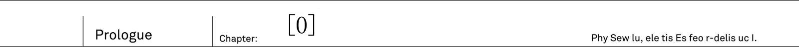
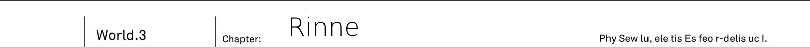
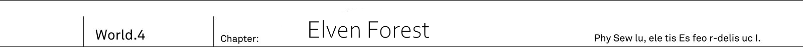

Naze Boku no Sekai wo Dare mo Oboeteinainoka TL

Synopsis
“Why does no one remember my world?”
The era when the five great races were competing for hegemony ended with the victory of mankind led by the hero Sid. However, that world was suddenly “overwritten” in front of a boy named Kai. In the rewritten world Kai could see a result of mankind's defeat in great war due to absence of their hero Sid. Now dragons and demons were dominating world, and Kai has been forgotten by all of mankind. However, upon meeting the mysterious girl Rinne, Kai resolves to destroy the overwritten fate. In a world without the hero, he inherits Sid's sword and martial arts, in order to challenge the mighty enemies of various races who reign supreme.
About TL
Well, I'm not really professional linguist so my English is at best on par with school level. The same with my japanese.
There is also problem with author's style. Some things sound weird even in japanese for me, so I try to re-phrase it. Not to mention often it is not clear if narration is from first person perspective or not. I usually prefer third person perspective, but sometimes author leaves no choice to use first person perspective. Because of that there might be inconsistency narration text.
But in case you'll need to, you can contact me over my mail douman@gmx.se Or my personal discord server: https://discordapp.com/invite/D3NvRwE
Thanks
These are people who helped me with TL:
- Polta - For giving out feedback and edits to my TL
Support author
If you enjoy the novel, be sure to support Sazane-sensei
- Buy novel
- Sazane Key twitter
Naze Boku no Sekai wo Dare mo Oboeteinainoka? 1

The maiden looked like an angel. And yet she also looked like a demon.
On her back was pair of wings with jet black, like a crow, feathers at its roots. But as you go on closer to edges, these wings were dyed in pure white colour of snow.
Gradients of black and white. From the maiden's back, wings, that hold traits of both angels and demons, were growing.
If you'd compare her appearance... A tenma? No, such race doesn't exist. As far as young man knew: both angels and demons vanished from the face of the earth since long ago. Then just who is this girl?
"----"
Chains jingle. At the sound of chains that were binding the girl, the young man - Kai - came back to his senses.
The winged girl was bound to round pillar, as if crucified. Both her hands and legs were bound by chains, so that she would be unable to escape.
"...m?"
Then, the girl who hang her head, raised her face. Even though her eyes were covered by chains, she still felt the presence of approaching young man.
"Who is that... Over there...?"
The girl spoke in human language. She, who is clearly not a human, faced him.
"Who, you ask..."
Just who are you yourself is what he wanted to ask, but was unable to do it due his nervousness. The young man swallowed breath and looked up
"Rinne"
"...Rinne? Is that your name?"
She nodded in response In that moment, a drop of tear flow from her eyes.
"...Please..."
"Please?"
"...Help me. Remove these chains...."
Before she could finish the sentence, the girl lost her consciousness and her head hang down
Help you?
A non-human who is asking a human for help? In known to him history, humans had to fight a great war against other races, including angels and demons. So to say, there was a bad blood. It is highly likely that the instance she is freed, her attitude will change and she is going to attack him. If he is to consider his safety, she should be left alone until her true nature can be ascertain. That is only natural, but...
"Got it"
The young man grasped a sword tightly in his right hand and approached the girl. Even if it is a trap.
I'm at my limit being alone in this world for so long
Approaching the crucified girl, he carefully aimed, to make sure to not harm her, and swung down his sword. With that, the winged girl has been freed. Fragments of shattered chains have been scattered on floor, and then the freed girl has collapsed on floor.
"...Just what's going on? Where is here? Who is this girl?"
He lifted her in his arms
She is unexpectedly light, and just feeling of her soft skin made him to remember his hesitation.
The young man who has been forgotten by world
Kai gritted his teeth and cried with grief in his voice: "Why no one remembers the true world...!"


A red land. In this desert filled with stone and pebbles, there are no signs of animals. And in this harsh land, where only few brushes and grass could grow, a gun truck had its stop. The truck has been covered in think armour and carried impressive looking auto-cannon
"2PM, right on schedule"
From the back of truck, a lone soldier descended, Kai Sakuravent, and took out his binoculars. His age was 17. It is a young man whose hair and eyes had colour of dark ultramarine. He was wearing a "mankind defence agency" battle suit. Forged by daily training he gave off aura of certain strength, and you could feel strong will in his eyes.
"Saki and you too Ashlan, we are starting graveyard's monitoring"
With his binoculars Kai could see a strange structure standing beyond horizon. Black pyramid. As if made by precise machine, perfect triangular pyramid. This black, as if painted by ink, object stood out among red desert.
"Situation is..."
"Nothing as usual"
From inside of truck, on a passenger seat, a young man, with clipboard on his knees, lazily answered. His name is Ashlan Highrol Year older than Kai, and also soldier as Kai.
"Just nothingness, right, Kai?"
"Only 70 seconds passed, graveyard's observation procedure requires 300 seconds"
The graveyard is what they call this black pyramid. The target of Kai's diligent observation has been 200 meters tall, which was comparable to modern skyscraper buildings.
"There is really nothing, isn't? 300 seconds should already pass, right?"
"Only 170 passed"
"Ah... damn, isn't it more than enough already? I got carsick from all this shaking, and want to return already"
Ashlan, who already wrote down "Nothing out of order" in report and lazily laid in passenger seat. Kai, on other hand, shows no sign of lowering his binoculars.
"300 seconds"
"Ugh... As usual so serious..."
"Reporting: no sight of abnormalities in Urza Federation's graveyard. Demons are still sealed up as usual"
"...Huh..."
Ashlan made a deep sigh and from his passenger seat turned to a person on driver seat.
"Hey, Saki, can you say something to him too? Yesterday, and today everything is fine. And pretty sure tomorrow will be the same"
"Hm?" Orange haired girl by the name Saki raised herself from the seat. While chewing her favourite gum, she was leaning against driver's wheel in relaxed pose.
"Isn't it fine? While Kai doing his work seriously, we can take it easy."
"I mean there should be limit! It is been like a hundred years, hundred! Was there even record of any, among four races, to escape the seal?"
"None"
"See?"
"And to prevent that, we're continuing our observation"
"...Fair enough, but aren't you also too inflexible?" - said Saki, while getting herself new gum to chew - "Doing it diligently only in our area is not enough, right? There are four graveyards after all"
"Obviously 3 other places are being properly handled too" - Kai stated as if it is obvious thing and started moving toward truck - "We have great responsibility, after all, it will become a disaster if by some tiny chance demons would escape."
There are four black pyramids in this world. These buildings are so called graveyard, where mankind imprisoned other races against whom they once fought.
Wielders of strong magic, Demon race.
Powerful demi-humans, like angels, elves and dwarves, Foreign gods race.
Ghost-like, Spirit race.
Enormous and powerful beasts, with dragons being at top, Cryptid race.
No human logic could comprehend the might of four races, and so mankind cowered in fear before their strength. But 100 years ago a turning point in mankind's history happened, from which humans could finally fight back. With humans joining the other four races, the greatest conflict in history started, Five Races Great War. After all battles, mankind was able successfully seal away four other races in black pyramids, Graveyards. Since then, mankind continued to diligently manage graveyards.
"That's right, Kai, I almost forgot about very important matter" - Saki, who is been in driver's seat, turned towards him - "We got party on next week, to celebrate Jeanne's promotion. And we need to discuss present..."
"Sorry, We're in the middle of mission right now, save it for later"
"...Eh? There is nothing going on anyway, it is fine, isn't it?" - Saki raised her voice in protest.
Nearby Ashlan just sat at passenger's seat, bewildered by Kai. So-called "World peace" is a common perception of current era. It is impossible for four races to escape from graveyard... It wasn't opinion of only Saki and Ashlan. Most, if not all, young people who were conscripted for two years military service shared the same opinion. Almost no one doubted it. And then there are some rare cases of people, like Kai, who rejected such ideas.
"Even if nothing is going to happen, I do not want to be negligent. Half of it might be coming from my stubbornness, though"
Both Saki and Ashlan are not just being negligent. Their logic is only sound in this case. After all, seal, that has been safe for hundred years, wouldn't collapse out of nowhere normally. But... For Kai there is a reason why he cannot help but worry about seal.
"Because I saw it"
10 years ago he fell into Demon's graveyard. And there, inside the black pyramid, Kai saw demons and that's why.
"Again this story? We heard it with Ashlan around 20 times by now."
"That's just your imagination, falling into graveyard and then escaping it? That's a den of demons, after all"
It is as Ashlan says, Kai too thinks that it is miracle that he was able to survive. He was attacked by countless demons and lost his consciousness. And after he woke up, he already was outside of graveyard. But there is no proof to support his claims.
Still, the sense of dread from these demons.
It cannot be just his delusion.
There is no way it was a dream. The horror he felt from these demons. Even if people around him disagrees, a scenario, where demons tear apart seal and escape, is possible, or so Kai feels. Therefore they must be ready for demons counter attack. And so Kai, more than anyone else, diligently trained for past 10 years. Not sparing a moment for break from his training, even during meals or baths Kai would continue with image training in his head. And even his superiors were amazed by "Training maniac" Kai.
"At that time, Kai should've been around 7 or 8 years old. There is just single entrance to graveyard. For Kai to enter and fall into graveyard, with no soldier that standing guard to notice him would be strange, right?"
"Moreover, there are surveillance cameras. But, Kai, it didn't have any records of you, right?"
There are also no witness that could testify Kai's fall into graveyard. To be specific, all adults that were there at that time said: "Don't remember a thing".
"That's why, it is just a dream! A scary dream that you had as a kid! And, Kai, did you forget the face of our instructor when you were telling him it with all seriousness?"
"No, I remember it."
"Don't you agree?"
Saki nodded in agreement
"You must got it all wrong, Kai"
"Doesn't matter, it is not an excuse to neglect our duty to watch over the graveyard."
"Eeh...!?" - Both Ashlan and Saki wanted to scream
"Let's contact HQ. 2PM watch is over, there is no abnormalities with the graveyard."
Kai looked over the graveyard and said so, not even being slightly bothered by his colleagues.
Mankind Defence Agency
Anti non-human organization, that has been established after Five Races Great War, in case emergency related to non-human races to happen. For example, if incident would happen at graveyard. Or if someone among four races would escape and attack. Or if Five Races Great War to occur again. In preparations to such emergencies Mankind Defence Agency is working on creating necessary defences: from various highly destructive weapons to transport infrastructure. They work on it in all of the world countries steed. (Note: it is a bit unclear whether Agency replaced local governments or acts more like global force) And it even manages military forces. Each person is obliged to two year military training as soldier of Mankind Defence Agency Still it is quite old organization, and nowadays people that take military service seriously are mostly non-existing.
"Ah, I'm tired... Taking a break"
MDA training grounds. There, in its corner, Saki was sitting on the bench in her sportswear.
"We're against machine doll, you know!? Beating it would only hurt your own hands, and if you even fail to avoid its attack, you gonna get broken bones! There is no way I'm doing it, just no way!"
"...."
"Hey, Kai, are you listening?"
"It cannot be helped, Cryptids are like that, after all"
In front of Kai was 3 meters tall machine that imitates Dragon. If by any chance Cryptids would escape from graveyard. For that reason there is such training, but. Most people supported Saki's opinion that is is useless. After all there is no way to beat them. According to Great War records, the strongest among Cryptids Dragons couldn't even be scratched by tank's weapons.
"True, it might be futile to even try"
Contrary to his own words, Kai slips under machine dragon's feet.
"Wait, Kai!?" - Saki screams
If he'd get trampled at this moment, he would definitely get his body bones completely broken. Yet despite the risk, Kai faced the thick, as log, foot and using his whole body... Tried a ramming attack. Fourth World Fighting Arts. Adopted by MDA technique to be used against non-human races. But, Kai's attack didn't even budge robotic dragon an inch.
"...Failed, huh?"
"What are you doing, Kai!? Under its weight you'd get crushed completely! In first place we're not even supposed to use machines of Cryptid type without instructors to watch us..."
"There is no meaning to it without a resolve."
"...Oh no, Kai, I think you've been born at wrong times."
She had a bitter smile on her face while drinking a bottle water. Half of it was amazement at him, but another hand it was almost as if seeing a rare animal in Zoo.
"Ashlan, don't you agree with me?"
"...D.on't talk... to me... My wounds... are really... killing me"
Behind Saki's bench was crouching and unmoving young man. He was fighting against different from Kai training doll, but got seriously kicked to his sides and no longer could get up.
"Well, leaving aside Ashlan. Even instructors are saying that if Kai would be born at time of Great War, maybe you'd leave mark on history instead of Sid."
"I don't really qualify to be a hero. It is just I don't want to slack off when it comes to training." - Kai looked at robotic dragon, and replied in his normal tone.
Hundred years ago. Various races: Demons, Foreign gods, Cryptids and Spirits - were ruled by strongest among their kind. Each could has own title: Elder, Leader or Commander. But in human language there was a single way to refer to these mightiest: Four Heroes.
Demon's hero Dark Empress Vanessa
Foreign god's hero Heaven Lord Alfreyja
Cryptid's hero Fang King Rath=IE
Spirit's hero Spirit Sovereign Rikugen Kyouko
All four of them boasted unparalleled strength and therefore they led their race. But for humans, who were weakest, they were unstoppable obstacle. That was until the one who could stand against four of them has risen. The hero of mankind.
"Prophet Sid, huh?" - said Saki who were looking up at ceiling.
"Hero of mankind Prophet Sid, wielder of otherworldly shining fire sword. He defeated non-human races and sealed them away... Well, that's basically all we know about Sid."
"It is certain that a man by the name Sid existed hundred years ago. We even have his photo"
Photo of a man in robes. That was a photo of Prophet Sid. Kai already saw it multiple times.
"But you know, Kai, historians have doubts about Sid's legend." - said Saki with a shrug.
There was established theory that human hero Prophet Sid didn't even exist. His shining sword hasn't been found at the current moment. Moreover there are no records of his fight against four heroes.
"As far as we know there is no proof that Sid fought against four heroes of non-human races. There is no photo or video records of his fights. And even Sid's sword has never been found."
"...Yeah"
No proofs. Surprisingly similar to his own situation with fall into Demons graveyard. Even thought it is been a hundred years since then, it is still very strange that not even single image of his fight against four heroes remained. For that reason nowadays there are not many people who believe in Sid's legend.
"So, Kai, even if Sid did actually exist, it is likely that he wasn't really all that active for the mankind's hero. What do you think?"
"I had similar thoughts about it. But still..." - he said while wiping away sweat from his forehead - "Isn't it fine to let people dream?"
"Well, that's... Never mind, changing topic. Hey, Ashlan, wake up!"
"...Ugh!?"
Without even slight hint of mercy Saki kicked Ashlan
"We already started talking about it during a day, but what are we going to do about Jeanne's promotion? We don't really have much time to prepare a present"
"Huh? For promotion, wouldn't just bouquet of flowers suffice?" - said Ashlan who finally got up and sat on a bench.
"Something typical should be fine too, right?"
"No way we're going with it. Jeanne is scholarship student so she get flowers each year as part of official commendation. Hey, Kai, you too think flowers are not good, right?"
"...."
"Eh, hey Kai, are you listening?"
Kai, who turned his back toward Saki, heard notification from his communication device in his breast pocket.
"...Jeanne?"
Contact's name belonged to a girl, his childhood friend. Similarly to Saki and Ashlan, she was conscripted for military service.
"Hm? Jeanne? What's with her?"
"Hm... I got nothing, is this a message only for you, Kai?"
Both of them risen to try and take a peek at content of Jeanne's message on Kai's commendation device screen.
To Kai
Tomorrow you're off duty, right? Let's meet in front of cat's statue of 9th terminal at 10AM But make sure to keep it a secret from Saki and Ashlan, ok?
"..."
Even if she asked him to keep it a secret. How was he supposed to do it? There are already two curious people that are trying to approach Kai for a sneak peek.
"Kai, what Jeanne says?"
"Even I got nothing from her. Suspicious, a secret from both me and Saki...? Hey, Kai, could it be are you gotten in some forbidden relationships with Jeanne!?"
"Hold on" - said Kai and extended his hand to stop them.
"My bad, it seems that is not a message from Jeanne"
"Oh ho, is that so, Kai? Then just what was that ringtone?"
"Trying to lie to us so lamely. Could it be this is some special message, Kai-kun?"
Saki is smirking, and Ashlan has a ghastly look on his face. Both were approaching Kai to take a look at his communication device.
"...Ah by the way"
Kai tightly grasped his communication device and turned his back towards them. And he run at full speed.
"I haven't done any running today yet. Time to do my 10km course!"
"Oi, stop, you bastard!"
"Someone! Help us to catch and stop Kai! He is a criminal who wants to conspire in secret with Jeanne in some wicked scheme!"
"That's misunderstanding...! I only wanted to take my training seriously!"
Jeanne, please, don't use MDA's commendation device for private needs! So Kai shouted in his mind, while desperately trying to escape a chase from two of his colleagues.
Urza Federation - A highly developed country with it's capital in Urzak. It resides in northern part of continent. Once it has fallen under Demon invasion, led my demon hero, Dark Empress Vanessa. But it is a story of hundred years ago. With the victory in Five Races Great War, it has been re-taken by mankind.
"10AM. Guess Jeanne is going to be a hour later then?"
9th Terminal For Kai it takes around 15 minutes to reach this place by subway. This area around capital Urzak became a business center with lots of modern buildings.
"Kai, sorry that I made you wait." - a lively voice could be heard.
Kai looked in the direction of vice. There is been standing silver-haired young girl with a bag in her hand.
"Jeanne, you're right on time? I honestly thought I'd have to wait another hour"
"Mu? How rude!" - she pouted.
But it ended pretty quickly and she already smiled.
"Since I'm leaving to capital on next week, I'll make exception this time."
Jeanne E Anisu.
She is somewhat tall, comparing to most girls of her age, and has slender figure. Together with long silver hair, her face gives off a dignified aura fitting to a model on magazine's cover. Kai's neighbour, 17 years old. Her long sleeved shirt and skinny pants gives a boyish feeling. But contrary to that feeling, it only gives her more charm as a girl.
"Let's go, walk, walk. Cadet, Kai! Crawl your way until that building!"
"In the middle of city?"
"I'm joking of course! It is just..." - Jeanne pointed at his clothes
Kai has been wearing MDA's uniform, and on his shoulder was a bag that could fit a battle rifle. But of course since it was middle of city, rifle was locked away in case.
"Aren't you off-duty today? Why are you wearing such heavy equipment, Kai?"
"Before our shopping I had a training on my own, after all."
"...I know, I know. It was a sarcasm. Good grief." - Silver haired girl laughed in astonishment.
"I guess among these who I could invite to enjoy off-duty time, you're the only one who wouldn't get fazed by it, Kai."
"You hanging out with someone during off-duty time?"
"No, I'm not! As I said I'm being sarcastic here." - Jeanne responded while pouting and poked his side with elbow.
Strangely enough, her voice had amused tone.
"...Well, I like this side of yours, Kai."
Then, they started to walk side by side. All around them were famous clothing shops and confectionery shops. Jeanne seriously looked around each and every one of them.
"I wonder which shop we should visit. It is been a while since I went out, I just cannot decide where to go."
"By the way, for what purpose we're here?"
"Shopping. For Saki and Ashlan" - and the names of his colleagues went out (To be honest here it says 同僚たちの名前が、ジャンヌの唇を伝ってこぼれた which is roughly could be translated as "Names of colleagues left Jeanne's lips" which sounds weird).
"With Kai, it would be for three people. And three of you have been thinking about preparing some farewell gift before my departure to capital(Urzak), right?"
"...You're asking me that?"
Bull's eye. Indeed they were thinking about her present. But it was Kai together with two of his colleagues who are supposed to shop for her gift and keep it secret until the fateful date. There is no way Kai could just answer to the person himself: Yes, indeed we're thinking about it
"It is fine, fine. I had exactly the same thoughts."
"...Same?"
"Farewell gifts. Before I'll depart for capital, I'd like to make a present for you."
Multiple generations of Jeanne's ancestors were serving in top position of MDA. She was from renowned and elite family. Her father was one of the most renowned officer at Urza's MDA HQ. And grandfather was a great soldier who served as general at HQ. And then Jeanne, who was their descendant, is obviously going to rise in ranks faster than anyone among her colleagues. Beautiful 17 years old maiden that is bound to depart to capital. She is fastest in history to be promoted so quickly. And her story was even featured in news few weeks ago. There is even story going around that eventually she'll surpass both her father and grandfather.
"Oh yeah, now I think about it, with Jeanne leaving, lots of guys are going to grieve."
Valkyrie.
Both her colleagues and instructors were openly calling her like that. From a very young age she is been studying military leadership under guidance of experienced veterans. And even carrying leadership aptitude from generation to generation in her family. Together with her beauty, Jeanne already has been acknowledged by top brass in Urza's HQ for her charisma. To no one surprise, a notice about Jeanne's transfer to capital became a grave news to all of her male colleagues.
"Even Ashlan is down because of that. Sake is the same."
"...Well, most likely last time we'll be seeing each other after all."
"Aren't your transfer is for two years top? It is not like you'll never return."
After two years, when she'll become candidate for leadership position, they'll be able to have their reunion. There is no reason to be depressed. Or so Kai thought, until he heard her reply.
"When I'll come back, both Saki and Ashlan will finish their military service."
"...Ah, that's true"
Mandatory military service requires 2 years, and afterwards each among young people can choose own road.
"Guess the only friend left will be you, Kai, right?"
"Yeah, true."
People who finish their military service are bound to leave military. Probably only few exceptions, like Kai, would willingly continue their service in MDA.
"There are not many who would decide to become professional soldier, like me."
"Well, I want too, you know?"
"I know. You want to surpass your old man, right? Like how many tens of times I heard this story?"
"Think you lost one digit, it is at least one hundred."
Walking under sunlight coming through trees, Jeanne made amused face (really not sure how to say it, but she is having fun).
"I've told this story so many times, that you already got tired of it, right?"
"Pretty sure once you'll surpass your father, he'll be very proud of you... But I'm pretty sure there are not many odd fellows like me who is going to continue serving in military."
"I know, you're always saying that watching over graveyard is your duty, right, Kai? Not to mention, we can never know when hordes of demons will appear. And that you want to discover Sid's sword once again."
"...."
Prophet Sid certainly existed. Mankind's hero who fought against non-human races heroes. Kai never ever doubted this story.
...Because I saw it.
...Ten years ago, Sid's sword was before my eyes.
Hero's sword actually exist. At demons graveyard. When he fell into depths of black pyramid, he definitely saw it. A sword that shine like a sun, surrounded by demon masses. And that feeling of desperation as he was trying to reach out the sword. This is all that Kai could remember.
"Well... I wouldn't say I cannot understand your feelings" TL Note: this is a bit confusing まあ……その気持ちがないわけじゃないけど
Why Sid's sword could be inside demons graveyard? While it was certainly a mystery, without a doubt that shining sword is definitely fits a description of Sid's legendary sword. Though the only who believes in it is Kai himself.
"Even if I to tell you about it, you'd only tease me about it."
"I wouldn't do such thing though?" - said Jeanne with a smile on her face.
"I'm serious."
"I really wouldn't make fun of your resolve. But, Kai, your cute sulky face is just asking for it."
"Yeah, Ok."
"How many years ago was that, I wonder. You suddenly told me: I saw Sid's sword! I think we were only around ten years old at that time. And since then we were always playing together."
While we were walking through crowd. The girl by my side suddenly stops when we reach the middle of road's crossing.
"Kai, you're the only one who played with me since our childhood, And even now you're walking by my side. Even after I'll return back you'll remain by my side as well."
She turns toward him. And her eyes, without even blinking, looks seriously at him TL Note: this is actually hard to translate. ゆれる双眸が、まばたき一つなくこちらの顔を覗きこんできた。
"Listen, Kai, about us. What do you think we're going to do from now on?"
"From now on...? Jeanne, you're going to capital for two years, and then you'll be back."
"Yeah... But I mean after that" she said and swallowed her breath.
She, who was his childhood friend and colleague, took a step further.
"Kai... What if I..." - and in that moment...
Jeanne's body started to become distorted.
"Jeanne!?"
"Eh? Kai, what is it?"
Like it is been only her reflection in water that got distorted, she replied as if nothing happened. But she wasn't the only one. Everything before Kai's eyes started to change. Surrounding him buildings, trees and bystanders, all started to distort and twist. Sudden wind followed it. Storm of black particles started around him.
No one sees it? This storm that is around us?
Just what's going on here!?
Kai looked up and could only see a sky that started to turn black. White clouds, as if being sucked, started to flow towards a single point. And even blue skies, as if being pulled by something, disappeared. All being swallowed into single black point in the sky.
Not only sky became its victim. Even distorted buildings, trees and people around. Everything from the ground itself starts being sucked in. Each after each follows inside and disappears. Like giant black hole, it swallows everything and everyone.
No one notices it?
It cannot be... Am I the only one who can see it?
And even the girl, his childhood friend, started to rise above surface.
"Jeanne!"
"Eh? Kai, what's all of sudden? Calling my name in public like that... Could it be... Can I have high hopes then?"
Despite starting to float, she said with a smile on her face. Not even understanding what's going on. Before Kai's own eyes his childhood friend started was sucked into the sky.
"Jeanne, take my...!" - he desperately extended his hand in the middle of storm.
And at the same time, Kai lost his consciousness.
Activating World Reincarnation
Initiating World's Overwrite
As storm's winds calmed down, Kai regained his consciousness and found himself at the same crossing near 9th terminal. Alone. Jeanne, who has been right before his eyes, is no longer here. Dozens of bystanders and hundreds of people who were going in and out of shops, too were gone.
"...What's going on!? Hey, Jeanne? Jeanne, it is not funny how you're hiding to scare me!"
The 9th Terminal was completely empty. He wondered just what happened here. The road under his foot was crashed, as if something ridiculously heavy steeped on it. There is huge crater by road instead of trees. Most of the buildings had broken windows, and buildings themself were on a verge of collapsing It looks just like ruins. The landscape around 9th Terminal transformed into post-apocalyptic world.
"What's happening here...? Jeanne, everyone vanished..."
There is not even a single living soul. It was just too strange. In this absurd situation, Kai looked at metallic case on his shoulder. There was MDA's bayonet. Kai's instincts were telling him that he needs a means of self-defence, but the case cannot be opened without key from Urza's HQ. Looking for Jeanne and others can wait for now.
"It is not quite close from here, I need to hurry..." - he said and headed in direction of Urza's HQ.
At that time Kai could hear some stone being thrown in shadows of the building behind.
"Some noise? Is there someone!?"
Even if it would be only cat or dog, that's alone would be his relief. After all if there is something alive, then it means this place is still inhabited by someone. Which means eventually he'll be able to meet people here.
"Hey, anyone...?"
From the building's shadows, that has appeared. It was neither a cat or dog. Seeing this thing, Kai became speechless.
"Eh?"
The creature that stood on two feets was over two meters tall. Its body was pitch black, as if covered in armour. On its back could be seen big black wings, and there below was snake-like tail. Its head's shape was triangular, which definitely couldn't belong to a human. And its eyes pupils were pure white.
...Just like 10 years ago.
...It is like these creatures from graveyard in which he fell.
Even since he became a soldier, he never ever forget about it. Since that time, he always thought that one day these monsters may crawl out of graveyard.
Jet black demons.
As Kai looked up, before his eyes was standing big monster.
...It is not a mech doll
...Just like that in the middle of street
There is no for a machine, that could be only activated at MDA's training grounds, to be standing here.
"H-hu...ma..." - unpleasant demon voice reached his ears. TL Note: a bit of improvisation.
It is been difficult to understand, but for certain it was a human speech.
"...A human? Here at this land?"
"It spoke!?"
It is been knows that demons, and heroes of four races were able to understand human language. But to Kai's knowledge, at most handful were able to to speak it.
"Human... soldier..."
Light shines. From the curves of demon's wings light started to appear. And gradually it started to become bigger in the middle of air.
"Die."
It started to fire like a machine gun. While being slightly grazed, Kai quickly jumped to hide behind building's wall. The wall became scorched black from its fire. If he wouldn't be able to react, then likely Kai's whole body would shot, by these fire bullets, full of holes. TL Note: to be honest I think there wouldn't be much left
"Magic!?"
He was able to leap back just in time. Magic is a generally how people called miracle, or maybe sorcery, in ancient times. Any powerful magic could rival power of humans most powerful heavy weaponry. And there were monsters among high ranking demons that were able to continuously fire rains of such magic. It was first time Kai could witness a real thing. Being able to evade it'ss attack without a scratch is not coincidence.
...His body moved on its own.
In anticipation of this moment, Kai spent countless hours in trainings to fight against demons. Thanks to that his body adopted reflexes that saved him this time.
"...I have no idea what happened, but..."
He was certain of one thing. This demon is definitely not a machine, and clearly wants to bring harm to him.
"Bring it on!"
With a smack metal lock has been opened Demon's fire bullet wasn't able to hit Kai, but instead hit lock on bayonet's case. Thanks to broken lock, Kai was able to take out his bayonet.
"I'll be your opponent" - said Kai, while taking his bayonet, pointing its gun toward demon and placing his finger on trigger.
All-purpose assault bayonet "Drake Nail". This weapon has been developed by MDA against non-human races using records from Great War. And it is been modelled after Drake's nail from Cryptid race.
"...Humans..."
Traces of fire could be seen in air around demon again. Using its powerful magic demon created several times bigger "Fire bullets"
"are eyesore!"
Simplified elven bullet.
White light sparks. A bullet, that Kai fired, is semi-transparent and shines like a fragment of crystal. On its way, it disperse fire bullets entirely.
"!?" - Demon eyes widens in shock.
"Elven magic!?"
"No, it is fruits of mankind's knowledge."
Following Great War mankind created experimental weapon. Using special ore that could disperse magic, they created bullets which could disperse magic when they hit it. Literally erasing magic.
"During Great War, Elves used tools such as these, aren't they?"
But their magic tools were created using their own magic power. Since humans lacked magic powers, they had to replace it with a simplified version of elven bullet. From that came this name.
"Let's go"
As Kai was running through ruined road, all of the sudden a red circle appears under his feet. Its diameter was around 5 meters and it encircled Kai. Bright red tongue could be seen under there.
"Burn!"
Pillar of fire arisen from within a circle and burned everything within it. There is no time to fire Simplified Elf Bullet. Kai judged so, and jumped from circle with a kick.
"...Evaded it!?"
"I've been training to fight against you demons!"
Kai slipped into demon's flank and dived his Drake Nail into it. Explosive burst. At where Drake Nail pointed, like a blooming red flower, a fire has sparked. Demon's gigantic body trembled under the attack and smoke, from its attack, covered demon.
"Let me tell you one thing. Mankind invented more than just Elf Bullet."
Demon fell. First time in history this bullet being used against non-human races. Its name is Simplified Drake Bullet. The idea behind this attack is to mimic actual Drake's fire breath. Once Drake Nail touches the target, a explosive attack fires off. And at this short range it should defeat non-human races. TL note: To be honest I think it should be actually pretty dangerous attack even for wielder of this weapon...
"...[Heavy breathing]"
Demon shown no sign of getting up. Kai looked at his numb, from the explosive attack, hand and heavily breathed.
...Just from shooting Elf and Drake bullets alone.
...His whole body have been trembled from the tension.
His first real fight, and first time he saw actual magic. If he'd hesitated even for a second, the fire magic wouldn't leave him with just a scratch.
"But it worked!"
All of his training until today finally paid off.
"I can do it... Even if it is a demon I can fight!"
Kai still couldn't comprehend just what happened here today. But one has become clear. With training even human could fight against mighty demons.
"You bastard, what are you?" - all of the sudden could be heard.
Weird noise of flapping wings abruptly ended Kai's joy of victory. Above his head could be heard a buzz from wings, it was much louder than that of some bird.
"Human...? Human who could defeat... my kin?"
Second one, it wasn't much different in its appearance aside from being smaller. With a height, comparable to Kai's own, it didn't look all that strong comparing to previous one.
But what with this this pressure.
Size-wise previous was certainly a winner, but it'ss speech shows a intelligence of a whole new level.
"What are you?"
"As you can see, just a human"
Kai's instincts were telling that this one is far more dangerous. So he carefully gave his reply.
"And you're surprisingly versed in human language, aren't you?"
The thin figure of demon was just looking at him from above. While remaining still in the air, its mouth that span from cheek to check moved.
"For us, as well as other races, using human language is convenient."
What it means by that? As if mocking Kai's questioning look, it continued:
"The best way to order around your slave, is to use their language."
"...!?"
Humans are slaves?
These words... Were the best proof as to why world has been in such cruel state. And answered any questions about source of this change.
We(humans) lost to non-humans?
"Her Majesty Vanessa said we already has more than enough slaves."
"Vanessa?" - Kai frowned upon hearing familiar name.
The Dark Empress. There is no mistake, it is the name of demon's leader and hero.
"...Dark Empress Vanessa!? That heinous demon?"
"Human, you smell like a danger. Die."
From the tip of demon's finger, light appears. Then sinister looking purple magic circle manifests itself. And from there lighting emerges.
"...Close your eyes!" - he heard a familiar voice.
In a instance he recognized the owner of this voice. And at the same time a strong light started piercing his eyes, which clouded his vision.
"[groan]!"
Demon's groans could be heard. It seems its eyes were suffering from directly looking at the light. TL note: The text doesn't say, but I assume Kai was able to cover his eyes in time
"...Flashbang!?"
It was officially adopted by MDA. Flashbang is presumed to be effective against most of non-humans, with sole exceptions of spirits that hold special eyes. But who threw it? TL note: the wording in original text is a bit weird here
"Here! We should leave soon, otherwise we're going to get overrun by demons!"
Was it human? Turning his back to blinding light, Kai run toward a beckoning figure.
"Get on! It might be strong, but it cannot lasts more than 10 seconds"
TL note: To be pedantic, in reality the flashbang light disappears immediately after initial bang And aside from blinding eyes, it actually also uses very strong noise to affect your hearing. So actual flashbang would not only blind immediately but also make him unable to hear anything.
In his still blurry vision, a figure of girl, extending her hand, emerged. And then he has been pulled inside armoured vehicle.
"Got a wandering guy. Ashlan, let's go!"
"On it!"
Wheels are starting to rotate at high speed. And vehicle starts getting away from demon with terrific speed and noise.
"These demons may be able to fly, but their flying speed is not great. There is no way for it to catch up with this car... So you can relax now... But oh well... I think we might lost few years of life just now."
Girl moved to nearby seat and let out a big sigh.
"But really, do you even value your life? Where are you from? Did you escape from demons? Your clothes certainly doesn't look like they belong to prisoner. Rather than prisoner, you look more like us."
"...Saki!?"
"Eh? You know me?"
The girl looked puzzled and amazed. She should be around the same age as Kai. With a look of natural airhead, she had short orange hair and big eyes like that of cat. Small fangs could be seen in the corners of her mouth. And she has freckles on her cheeks.

There is no mistake about it, she is one of his colleagues from the same unit.
"What do you mean by do I know you? It's me! You saved me here, Saki. I have no idea what's going on."
"I mean, who are you exactly?"
"...Eh?"
Both of them are looking at each other. Just yesterday she was training together with him. There is no way he could mistake her for someone else.
"You're Saki, aren't you? Saki Miscotti... right?"
"Yeah"
"You're currently undergoing military service in MDA..."
"What's that?"
She titled her head in puzzlement and then lifted her gaze towards driver's seat.
"Hey, Ashlan, did you hear about it? This MDA, is there something like that in Urza Federation?"
"Nope, never heard about it" - answered a young man, while easily handling car.
Looking at him, there was no mistake. It is the same Ashlan from his unit.
"Hey, Ashlan, you're Ashlan Highrol, right? Stop with this awful joke. It's me, Kai Sakuravent!"
"Did we meet somewhere in past?"
"..."
He was speechless. There was no better words to describe his current state.
"You really... don't remember me?"
"Did you actually meet me somewhere? But well, you know my name though." TL note: Saki's line
But of course. They've been together in the same unit more than a year by now.
"You like gums with orange flavour. And you hate coffee flavour. You're also proud about how flexible is your body. And that you can spread your legs in 190 degree splits."
"Eh!? Wait a minute, how you know about me that much?"
"As for Ashlan, you always have been having troubles with motion sickness. So you never would get into car without getting pill before that. Despite that you're driving..."
As Kai started to say, he suddenly noticed it. Ashlan is driving? That was impossible. It is always been him or Saki who would drive us to graveyard, while Ashlan himself would just take a nap in passenger's seat.
"Ashlan... What about your motion sickness?"
"Huh? I got over it long ago, obviously."
Their armoured vehicle has been going on high speed through these ruins. He is been driving skilfully on this ruined road, full of wreckage. It could be that Ashlan was even better than Kai himself at driving.
"In this world, not being able to drive car will easily get you captured and enslaved by demons, you know? Talking about motion sickness in such situation... Eh? Hey, how do you know about me having weak semicircular canals?"
"Knowing about my favourite flavour of gum is quite weird too" - Saki nods in agreement.
"Just who are you?"
"...You really don't remember me."
These two are without doubt Saki and Ashlan, and it doesn't seem like their memories were altered. Despite that...
"Wait a minute... What is going on here?"
Only he alone has been forgotten.

"We're here. This is out town, or, as I prefer to call it, our secret base."
They've been going through ruined city for quite a while. But finally Ashlan stopped car by empty highway.
TL Note: I don't really get this sentence, especially the 道路の一画で so I tried my best here...
It took us for about 30 minutes?
Considering that we are coming from direction of 9th Terminal, and this building.
Twin Tower is towering over surroundings. It has 10 floors, and despite it's sad state with broken windows, it's shape was difficult to forget.
"That seems like 10th Terminal's building...? Then is it 10th Terminal?"
Urza Federation's 10th Terminal. Originally at this place has been lushly green avenue. Looking at it now, there were just piles of pebbles from destroyed buildings nearby, and broken road full of cracks.
"Oh? You know about this place?"
"You're real mystery. Do you live nearby?"
Said Ashlan and Saki who came out from car.
"...Well"
Kai was coming from outskirts of 8Th Terminal, and they should know about.
"Well, you should take your time to calm down. Considering you were just attacked by demon, I imagine you're still a bit confused. Rest a bit and calm yourself."
"That's right! Although you seem to know about us, your clothes and gun... are not familiar to me."
Both were looking at Kai's attire and bayonet. He was wearing MDA's standard equipment, but Saki and Ashlan had something different.
...No, at its core, the design of both uniform is the same.
...There are few different details. While both uniforms had coat of arms on left side, theirs was different from Kai's Kai's coat of arm belonged to MDA, but these two had something different.
"Hm? We're working for Urza Mankind Resistance Army. Wait, you don't even know about it?"
"Mankind Resistance Army?"
"Ah that's... Rather than confused, you seem like to suffer from temporary amnesia. There are no one out there who doesn't know about Resistance"
In response to Ashlan, Saki only gave a shrug.
"Anyway, let's go in. If we're going to remain here, we might be discovered by demon patrols. We have some business underground. I mean this Terminal's underground."
Ashlan guided Kai, who walked alongside Saki. The Terminal's doors seem to be blown off with by impact of explosion. Passing through crashed entrance, they started to descent to underground.
"What about elevator?"
"I'm pretty sure you can guess just by looking, but do you think there is any electricity left?"
Ashlan pointed towards dark passage with his chin It certainly looked pitch black, if not for sun's light that is coming from broken windows.
"You know, I have a favour to ask..."
Kai swallowed his breath, and said.
"I don't care if you think I lost my memories, but please tell me what happened? Why city is ruins and why demons are roaming this place like they own it?"
That demon said: The best way to order around your slave, is to use their language.
The situation here is different from what Kai remembers. He got approximate picture, but right now he needs to know situation with all possible details.
"It is as you can see."
As they were going through dim underground passage, Ashlan pointed to a ruined walls of the building.
"This world is filled hordes of natural enemies to mankind. And especially troublesome are four races: Demons, Cryptids, Foreign gods and spirits. We lost to them in last war. It is been 30 years ago by now."
"...Mankind lost? That's..."
This was a opposite to what Kai remembers. He would love to think it is just a bad dream. Just what happened when he was shopping with Jeanne?
"...Please continue. What happened to humans? Are they safe?"
"Escaped and hid whenever they could. Barely made it." - answered instead Saki, who was walking besides him.
"The continent is now dominated by these four races. And even now they continue to compete for dominance. Urza Federation has been conquered by demons, So all people could do is abandon everything and run away. That's more or less current situation."
Saki points towards the end of staircase. Third underground floor was in complete silence, and then bright light blinded Kai's eyes.
"It is bright?"
From bright light has been shining, and for a second you could think that you're on surface.
So it was like that. If demons dominate the surface.
Humans can escape underground.
They used this big underground shopping mall to create city. There were shops, people houses, and even hotels with restaurants. Kai could see parents with their children walking around and soldiers that were patrolling area with their guns. Everything here fits well together. Despite it looking different, it was certainly human city. TL Note: The wording here is a bit weird ここには、人間の都市が姿を変えながら確かに存在していた。
"Welcome to human city Neo Vishal. All unused underground space has been remodelled to create this city. It is quite a sight, isn't it?"
Originally, Vishal is the name of ward where was 10th Terminal. Naming city the Neo Vishal, most likely was in place of conquered city on surface.
"Since demons took away our city and made their nests on its territory, it makes sense for us to hide underground, what do you think?"
"...It is really great, to develop it to such extent."
Hearing how this place was made by people who escaped demons in fear, Kai imagined it would look miserable. But he was pleasantly surprised. People looked lively and full of life.
"What about food?"
"Of course we produce everything here. Since trains are no longer running, it felt like a waste. So we removed railway tracks and instead used it to build nice farms. Oh and we use solar panels on surface to generate electricity."
"Wouldn't demons destroy it?"
"Demons wouldn't bother to scout rooftops of high buildings. And even if they would, to them there isn't much difference between solar panels and rest of the ruins. And with electricity we could restart various production plants that could be used to produce medicine and clothes."
There is electricity and food. Despite four races dominating continent, humanity was able to survive.
"Saki, Ashlan, do you live here?"
"Around year by now. We were employed in this city as guards. The only force that can fight against non-humans is Resistance"
Saki lowered her hand towards her waist where was hanging gun. Normally for young girl like Saki, the automatic rifle of this size would be just too big.
"Resistance goal is to re-take control from demons in Urza Federation. But of course resistance exists all over the world, and in every place there is a similar situation."
"...Listen, guys"
Resolving himself, Kai looked at two of them. Humans lost a Great War. But it brings a question then.
"It might sound... as a dumb question. But I really have no idea what's going on here."
He then pressed on his question to silent Saki and Ashlan.
"Why we lost Great War?"
"....What?"
"...Even if you're asking why..."
They were bewildered.
"Because... there was no way for us to win." - timidly answered Saki.
"Neither knife or gun could work against Cryptid's dragons. As for spirits, bullets just pass through. Then there is demon magic that can vaporize buildings. And elves of foreign gods could create magic tools that are superior to our weaponry. Moreover the main reason are leaders of these four races who are just incredible strong"
"You mean four heroes? Like Dark Empress Vanessa or Fang King Rath=IE?"
"Oh, you actually know that much, Kai?"
After saying that, she looked towards him.
"If you know that much, then why you thought that there is a chance for us to win in first place?"
"Why, you ask... I'm just in doubts about this situation."
He gave Saki a straight answer.
"It is just as far as I know, didn't Sid defeat demons and other races? Afterwards they were sealed away in graveyards"
TL Note: To be honest in first place I'm not sure how single person could defeat all of them in his reality...
"Sid?"
"Who's that?"
"Wait, guys, I mean we're talking about Prophet Sid. Surely you know about him..."
The hero who was able to defeat non-humans. Just few days ago, they talked about him.
TL Note: Kai really cannot comprehend this situation... facepalm
"If it would just name alone... Hey, Ashlan, do you know anything?"
"Prophet, you say? And he defeated demons? If there would be such guy, do you think we'd continue living underground?"
Saki and Ashlan looked at each other. It looks like, no one is even aware about him.
Not like they are not aware about him.
Prophet Sid doesn't even exist in this world!?
Little by little, Kai come to realization just how much differs this world from what he remembers.
"According to my memories human hero existed. Prophet Sid defeated four heroes and thanks to that mankind won Great War But..."
Then...
What would become of world, if Prophet Sid wouldn't exist?
Since there was no one to fight against four heroes, mankind lost. That's more or less, the outline of current history.
Certainly at that time
When we went shopping with Jeanne, because of that phenomenon, something has changed.
The black hole in sky sucked everything in: clouds, buildings, people, even Jeanne. Everything except Kai himself. Before he became aware, history of the world itself has changed.
"Oh is that...? Hey, Ashlan"
"Yeah, that's our main force coming. Hour earlier than planned."
From within city could be heard cheers. There was crowd of people. People, who were on their way, stopped and moved toward them to give cheers too.
"We're with Saki are part of unit that is stationed here. These guys belong to main army of Resistance. And once a month they are going around human cities. Their main duty, to put it simply, is to find a way to re-take Urza Federation."
The hope to take back surface world. But still, even if main body of army comes, would it really cause such cheers?
"It seems they are quite popular."
"Well, that's because there is also Resistance's commander. For people it is like a coming of their saviour from demon's menace. Well, you can hear these high-pitched cheers."
These loud cheers seems to be coming female population. To that Ashlan only shrugged.
"They are cheering commander, not army itself. That's our great leader. Young, excellent and as you can see quite popular."
"...Light Knight" - muttered Saki.
"Symbol of hope that Urza Federation will be liberated. Though it is not only here in Urza. Even resistance in other regions acknowledges it."
Getting closer to the crowd, you can see several soldiers in the same uniform as Saki and Ashlan. With the same coat of arms belonging to Resistance.
"So where is that commander?"
"Look there, guy in the middle of crowd. You can recognize him by his knight like armour. Oh, it seems like he is coming here."
Saki took a breath and continued with admiration in her voice.
"Jeanne-sama is really so cool! Despite being a man, his face is prettier than that of most girls here. Of course he would be popular. And his feminine name is not so bad."
TL Note: Yes you got it right, that's our cute osananajimi :D
"...Saki, what you said right now...?"
There is no mistake about it. Girl, near him, uttered that name:
"Jeanne-sama!"
"We were awaiting your arrival! No abnormalities so far. We'll diligently continue our guard duty!"
Saki and Ashlan straightened their posture and saluted their commander in knight's armour, surrounded by citizens.
"Good work, I appreciate your efforts." - responded commander with beautiful smile.
Commander is beautiful and young man? clad in heavy armour. Most likely around the same age as Kai. His gentle facial features gives off a very feminine aura.
But as for Kai...
The face looks like it is covered with make-up to make it look more boyish.
And this armour, could it be to hide feminine slender figure?
Voice too, feels like it is forced. And his? silver hair... Since it is quite long for a man, it is tied behind. This was just like during their childhood. Jeanne used to tie her hair like that since long hair caused troubles moving around and running.
"Jeanne?"
"..."
Silver haired knight turned towards him, standing between Saki and Ashlan. Urza Resistance commander titled head, being puzzled.
"Oh, who could it be? I don't recognize him."
"We found him on surface and took under protection. His name is Kai. Not registered as resident of this city."
"He hit his head a bit so his memories are in disorder. But rest assured, Jeanne-sama, he is not bad guy."
Saki and Ashlan gave quick response. To which Jeanne nodded in acknowledgement.
"I see, well then..."
"Please wait, Jeanne, it's me!"
Kai pushed aside both them and shouted towards his childhood friend.
Please let it be some sort of prank. World that is ruled by demons. Humans that now had to live in underground city. Saki and Ashlan who don't remember him at all. Could it be she is just playing a prank together with them?
"Just few moments ago we were doing shopping together! And since you were planning to depart to capital, you wanted to give some presents to us! Do you really remember nothing!?"
Seeing some noise, crowd became agitated. And not with sympathy towards him. They were giving a weird looks to a person of unknown origin, yet who dared to shout at the knight that was symbol of hope for mankind liberation.
"Forgive me." - said knight by the name Jeanne and shook his head.
Pretending to be a man...
Kai couldn't believe it.
TL Note: Not sure about this line 男のフリをした────そうとしかカイには思えない裏声で
"Did we meet somewhere? I feel you mistook me for someone else"
"...You really don't remember me..."
"Pardon me, I have to attend to meeting with my subordinates afterwards. Saki, Ashlan, hear him out in my steed"
Surrounded by subordinates, Jeanne turns away from Kai.
Really?
Even Jeanne doesn't remember me?
He really wished for it to be some kind of joke. Just a moments ago they were together.
"Jeanne!"
Kai bite his lips and kicked ground. He moved towards knight, who turned his back to him, despite being pushed back by knight's subordinates.
"Was your dream to become commander by pretending to be a man!? That cannot be right? You said yourself, that you want to surpass your father, as his daughter. Do you not remember even that?"
TL note: the first sentence is a bit difficult so I tried my best to catch its meaning お前……そんな男のフリして指導者顔して
"...!?"
He said in voice that could be only heard by Jeanne. And it seemed that Resistance's commander shoulders dropped down a bit... Or so it seemed to Kai. But in that instance.
"Bastard, what are you doing to Jeanne!"
"Get away! Jeanne-sama, are you all right?"
Kai has been taken by shoulders and dragged away from Jeanne by her subordinates.
"H-hey, Kai, what are you doing!?"
"You! Why you suddenly lunged toward Jeanne-sama... We're really sorry, Jeanne-sama. He is not bad guy, really!"
While being hold between Saki and Ashlan, Kai could only watch Resistance's Commander leaving with dumbfounded look on his face.
Night has fallen upon Neo Vishal. In this underground city, the daylight has been replaced by lights from ceiling. And at the midnight, to match night from surface, city's lights were on only around roads.
"..."
At a certain hotel, in dimly lighted room. Key were sitting in front of desks full of various documents and maps, that he borrowed from Resistance with help of Saki and Ashlan.
"...How could it happen"
Before long, he became too tired to either sigh or even show a bitter smile. TL Note: weird original line やがて。溜息とも苦笑ともつかない、疲労まじりの息がこぼれた。
"If this is a general knowledge of this world... Then history of this world is certainly different from what I remember"
In Kai's world history, humans won in Five Races Great War. But it was different here.
"We lost in Great War. And it happened just 30 years ago."
But except for history, everything else matches Kai's memories, including continent geography. And the same could be said about people. Among citizens of this city Kai was able to find familiar names of his neighbourhood. Even currency that were used here, was the same as the one Kai got from his old world.
There are some minor differences like Ashlan getting over his motion sickness.
But other than that, people here are more or less how he remembered them.
The only mystery is why both Kai and Prophet Sid have been forgotten. Both of them never ever existed in first place. As if they are erased from history.
"...Just why?"
It is understandable why Prophet Sid would cease to exist from this world. After all, human hero is the sole reason mankind won Great War. That he could understand.
"But why I no longer exist...!?"
TL Note: I wonder if Kai really would love meet himself in this alternative world :D
Even his friends from MDA are here. Yet despite that why he is the only one who has been forgotten? And what about his parents or relatives? Although he couldn't find their records in Neo Vishal, it is possible that they could escape to a different city. So for now he can be certain that only he and Prophet Sid are no longer exist.
"Are there any... clues? Since there is no Prophet Sid, mankind is now dominated by other races. Are there any other changes aside from that!?"
He continued to look through every history book and map.
"Urza Federation has been defeated by demon's hero. Obviously, since Sid is no longer here. Is there something else that differs from my memory!? Damn, even the graveyards are the same black pyramids. How about history of governing <span title"jp. 総督 It is more akin to governor-general">generals..."
In that instance he felt strange. After turning page, Kai felt that he should go to previous one. Urza Federation map. There was a photo of black pyramid. Demons graveyard.
Wait a second, could it be I made mistake.
I have feeling I overlooked something regarding this graveyard.
"Right! How I could forget about it!?"
Kai vigorously stood up from his chair.
"This graveyard... For this world existence of this thing is just weird!"
After winning Great War, mankind creates graveyards to seal away non-human races. But in this world we have been defeated.
"There is no Sid in this world... And despite the fact that we lost, these things are still there."
If humans would lose, then no one would create graveyards to seal away non-human races. Isn't that a contradiction in this world's history?
"..."
Within dim lights, Kai bitten his lips.
On next morning. Kai spread map before two of them, and they gave quick answer.
"Uhhh... graveyard? What's that? Never heard of it"
"Same here, first time seeing it. What with this creepy triangular build.. Guess demons made it, right? The guy who made this photo, most likely thought so too."
"...Ok, I see. Thanks."
As expected, both Saki and Ashlan had no idea about graveyard. No matter how you look at it, it is strange that graveyard is still standing, despite humans losing Great War. It might be worthwhile to investigate it.
"Ashlan, are there any car available?"
"M? Do you want me to take you somewher? But you do remember that main body of army came yesterday. For now both me and Saki got to attend meetings, so we cannot move out."
"I understand that." - said Kai and extend his hand toward Ashlan.
"I can go on my own, so lend me keys. If I'll go at highest speed, I'll be able come back by noon, so I want you to lend me Resistance's car."
Graveyard's desert. In previous world, Kai were scouting this place together with Saki and Ashlan for year and a half.
"First time I'm coming here alone."
Kai looked up from his armoured car. Among winds with sands was standing black pyramid.
"Demons occupied Urza's capital and placed patrols all over the place..."
The demons he encountered at 9th Terminal were part of these patrols. And on his way here, he often could catch sight of demons. With each encounter he had to take a detour, but finally he was able to arrive here.
"...Let's go."
He finally came to this 200 meters tall building. Taking his drake nail, he took off from driver's seat.
"Entrance seems to fine. Well, that's to be expected."
The sole entrance inside is through this door. And MDA is the only one who posses key to open it.
I was able to enter once 10 years ago.
When Jeanne's father was Urza's HQ chief, he allowed us to come together for a learning experience.
Afterwards he fell into it.
"No, right now, it doesn't matter."
He slowly walked over graveyard's perimeter. Under blazing sun, he felt pain all over his skin. With sweat all over his forehead, he moved towards graveyard's rear. And there Kai saw something unbelievable.
"The sealing stone... is out of place!?"
The huge circular boulder has rolled down away from graveyard's walls. It was a special equipment that served as a barrier to prevent demons escape. Slightly greenish patterns were visible on its surface, which was proof of it being functional.
"For demons locked inside to remove this barrier and escape... That's impossible I guess. Besides if it would happen, I'd expect both Saki and Ashlan say that demons escaped from graveyard."
It could be that sealing stone was left like that since no one sealed demons inside 100 years ago. If you think like that, it was sound.
"First time I'm entering from this entrance..."
He goes inside graveyard. Instead of front entrance, now he went through hole in rear that was blocked by sealing stone. And it is directly connected to the room where demons were sealed. Ten years ago when Kai fell inside at the bottom of it instead.
TL Note: to be honest the whole situation feels weird, because main entrance is kinda on ground level too, not sure how exactly he could even fall inside per se.
But when I feel inside, I lost my consciousness almost immediately.
And I woke up already outside of it.
He remembered being surrounded by enormous horde of demons. And there he found Prophet Sid's legendary "Shining sword" But while trying to grab it... Kai lost his consciousness.
Sunlight cannot reach graveyard's insides and as he enters, Kai feels chills down his spine. And further inside...
"What's that?"
There was light, coming from far away corner of passage.
That light... what is it?
It feels... nostalgic.
Not even thinking about it, Kai run towards source of light. And further there was big open space... In the middle of it was shining sword, stuck into the ground.
Legendary sword of Prophet Sid that he used to crush non-human races. But as there were no records left of his heroics, people came up with lots of fantasies about him. And this hero sword was once again before his eyes.
"...Sid's sword...?"
It is a sword whose light was on par with surface's sunlight. Capable of brightening the night. The Sid's sword that continued to shine like a sun.
TL note: I tired my best, but it is hard それは、地上すべてにふりそそぐ太陽の光を凝縮したかのような剣だった。夜を照らす暁の色調──陽光色に輝き続けるシドの剣。
It could be said that it looked as if God's halo.
TL note: Another weird thingy 喩えるならば神の後光とも言うべき神聖さ。
And another wondrous thing about it is that the sword was transparent like a crystal. Even sword's grip and guard were transparent.
"...It's a real thing, right?"
Like he remembered 10 years ago. Hero sword actually existed.
"That's right! It is after all a real thing, Sid's legendary sword!"
Like 10 years ago Kai rushed toward sword in order to get hold of it. And then deep voice of old man resonated through whole graveyard.
The one who were entangled by a hateful fate, do not let go of this sword.
Code Holder's key...
"...Code Holder's key?"
Before Kai's eyes, shining sword risen slightly. From the tip of the sword a very dim light fired off, slicing the empty air and leaving tracks of light. The light took form of a door. And this door started to open.
"...Some...one... please...help...me..."
Now Kai heard a different from before voice. Barely he could hear a voice of young girl. At that moment the light door opened, and Kai started being pulled inside whirlpool of light.
"Ugh!? Hey... that voice, who are you!?"
While being pulled inside this light, Kai was certain that he heard some girl's voice. And then he shouted with all he got.
I'm certain there is someone.
That lamenting voice is asking for help.
That's all he could understand. Kai, while holding hero's sword, went toward the place where young girl was waiting.
When he realized, Kai found himself in the middle of sea of clouds.
"This is... not a graveyard?"
He looked around in all directions, but there was no trace of that gloomy graveyard. And the sky has been covered by sea of clouds. If one would compare, it could be said that this world has been covered by one big cotton blanket. And clouds were not only pure white, he could see all seven colours of rainbow.
"What is this place... And where is passage, I came from?"
Beneath his feet was infinite road made of stone. On it's sides were standing stone pillars few dozen meters tall. Something ancient were engraved on them. It looked almost like ancient temple. One could only wonder who would made such passage.
"Human work? Or maybe... Only foreign gods I guess. I remember that elves and dwarfs tend to build even greater buildings than we're."
But this was demons graveyard. Foreign gods were sealed in a different place. Besides Kai could remember that ruins they left behind felt somewhat different.
"...Is this some special place made by demons?"
Holding to his Drake Nail, he started moving forward. To assert where this place ends, Kai ignored crossroads for now.
How much time passed? One hour? Two hour? He kept walking further ahead until his senses haven't become numb.
TL note: I have some doubts about meaning of this last line, I wonder if author meant sense of time?
"That is?"
A towering figure entered his field of view. The place looked like some sort of altar. He ascended a small staircase with less than 10 steps. There before him was three solemn marble pillars, towering over surroundings as if reaching the sky itself. And in the center of it was...
"Girl?"
As if crucified, there was a girl bound to pillar. She looked as sacrifice in some sort of ritual. Both of her hands were tied by chains. There was a blond girl that were covered in chains up to her face
TL Note: The way she is described is a bit different from prologue where it was said that even her eyes were covered by chains
"...Is there... someone?"
Sensing Kai footsteps, the girl, that was bounded by chains, raised her head. She couldn't move her body due to chains.
"Please"
With hoarser voice she plead.
"...help me. Sever these chains..."

There was a blond girl, bound to a pillar.
"Please... Help..."
She pleaded with hoarser voice, that resembled a shriek. To her desperate plea, Kai could not utter even a single word in response. He was at loss.
This girl...
Definitely not human, but what exactly is her race!?
On her back, wings could be seen. At their roots, her wings were black as colour of raven's feather. But as you go on, her feathers become pure white as snow. Gradients of black and white. Demon? Or is she angel specimen from cryptid race? TL Note: Wait, angels belong to cryptid race? Might be author weird mistake or maybe Kai is being mistaken?
"Angel or demon..."
Tenma? There is no such race... But girl's wings makes it looks like a mix breed between angle and demon.
"..."
Chains jingle. At the sound of chains that were binding the girl, Kai - came back to his senses.
"You... who are... you?"
Thinking that her voice didn't reach since there was no response. She mustered in desperation to move her lips again.
"Who, you ask..."
Kai responded with strained voice. It was him who wanted to ask that. Just who was she to be here and in such horrible situation.
"...Rinne"
"Rinne? Is that your name?"
"..." - she gave a nod in response.

TL Note: Well, illustration doesn't really reflect the actual scene it would seem. As she was supposed to be have her body bounded to pillar and covered in chains.
"Please.. He..lp..."
"Hey!?"
Before girl could even finish, she fainted and her head hanged down.
Helping her, huh? Guess she wants me to sever these chains.
But asking me(human) to do that.
There is a chance that he would be attacked once he'll get closer. It could be a trap after all. But Kai hesitated only for a few seconds.
"...Got it"
He felt the same pressure as when he faced the demon at 9th Terminal. But there was no malicious intent from this girl. Still, he finally found some clue about this place. Maybe she knows something about this place.
"I'm going to help you right now, but don't attack me."
Kai looked over at girl and raised his Drake Nail. He aimed at chains that bound the girl, by the name Rinne, to pillar. And swung down with all of his strength.
Sound of metallic clank could be heard. As the sound echoed through the place, Kai opened his eyes.
"It is this hard!? What kind of durability is that!?"
Despite these chains being no thicker than a finger, under the Drake Nail attack it didn't even had a single crack.
"Then..."
He placed his finger on trigger and swung bayonet downward. At the same time bright red spark appeared at chains and started to expand.
Simplified Drake Bullet exploded. To avoid injuring the girl, he moved to the back of pillar and aimed at chains there. But, from a dense smoke emerged chains without a single crack on them.
"...Impossible..."
The explosive power that could bring down even demon, couldn't even scratch it. These chains, which looked so thin that even could be torn apart by his own hands, were so thick as if under spell.
"If it doesn't work, then how I'm supposed to do it..."
In Kai hands was only his bayonet. If it is not enough, then how he is going to destroy these chains?
"...Wait a sec. There was this voice before."
At that time inside graveyard, aside from Rinne's he heard some other voice of old man. That voice said to not let go of sword. That's sword name is...
"Code Holder?"
TL Note: jp. 世界座標の鍵 I'm still not sure if furigana Code Holder is for 鍵 part too, but for now I decided to omit it anyway.
In that instance. The bayonet in his right hand, started to shine like a sun.
"Hot!?... This is!?"
Drake Nail started to emit light. It's dark blade become semi-transparent. Both gun parts and guard of his sword too somehow transformed into Sid's sword which he saw in graveyard.
As if responding to sword's name, it transformed.
And after it settled down. In Kai's hand was Shining Sword. This semi-transparent blade looked as beautiful as most expensive jewel. And also like a big key. If Drake Nail couldn't even scratch these chains, then how about this hero's sword...?
"Please!"
He swung down Code Holder. Sound of metallic clank could be heard. With the sound of bells ringing, the fragments of chains fell down. Dazzling line severed chains that bound girl. Winged girl was falling down.
"..."
"Hey...!? What happened? Where is this place? Who is this girl?"
Kai grabbed the falling girl who lost her consciousness. Her body was surprisingly light. And as his hands touched her bare skin, he become almost flustered. He decided to lay her on floor.
"This girl ears" - He looked at her again and noticed - "are elf's"
Under her silky golder hair could be seen ears that were a bit rounded like that of humans.
Elf's ears? No, If memory serves right they should be longer.
It feels like something between elf's and human's
She had elf ears, and then on her back were wings like that of angel and demon.
"She has features of elves and angels which belong to foreign gods I think. Then she is half between demons and foreign gods? Still, other than she looks like a human..."
Yes, surprisingly the fallen winged girl looks like a human. She has lovely and charming appearance, with cute cheeks and small lips. He can also feel allure of young girl from her. Her chest, which moves up and down with each breath, is surprisingly stands out for her delicate figure. Back of her white clothes has curve that shows her wast. If it wouldn't be for wings, one would think she is 16 years old young girl. To add, she had mysterious charm.
TL Note: I must say, author description of girls is sometimes quite weird in their details.
"Is she a mix between human, foreign gods and demons? No... That's impossible"
There were no cases of children being born from parents of different races. Then, what about this girl Rinne?
"...Ugh...Ugh..."
Her body started moving and her shoulders slightly shake. Afterwards, her closed eyes started slowly opening. The pair of eyes, that were looking at him, had colour of deep green, just like jewel.
"Hey... Did you wake up?"
"...."
Her eyes were wide open. Surprisingly, the girl stood up with angry expression on her face.
"Vanessaaaaaaaaaaaaaaaa! How dare you to lock me up I still haven't lost to you!"
Girl's wings spread her things and pointed towards Kai. She looked like she was preparing to fight.
"Do you think such weak pawn of yours could stop me!? Don't joke with me! Stop hiding and shows yourself, Vanessa! Aren't you demon's hero!"
"Eh!? Wait a bit!"
"Real fight starts now!"
The girl shouted the name of Dark Empress Vanessa. The name of demon who ruined Federation's cities.
She has grudge against demons...
But why she points her anger towards me!?
"Wait, it is misunderstanding! I'm not demon, in first place you..."
"Shut up!Shut up! Bring Vanessa here right now!"
She violently shakes her neck and rises both of her hands. From palms of her hands, circular patterns of various colours starts shining.
"Magic!?"
But what is this exactly. It is different from magic of various races. In case of demons its colour would be black or purple. And both elves and angels would have white colour. At least that is what been known from Great War records. But what is this mix of dozens, no, hundreds of colours on top of each other.
"Lowly demon, such as you, is not a worthy enemy for me!"
Light of this magic started fired off.
"Ugh... Elf bullet..."
Kai prepared his bayonet, but then he froze still. Drake Nail started changing into Sid's sword. Aside from simplified elf bullet, that was stored in his bayonet, he had no means to oppose this magic. Magic's light filled his vision. And in that moment...
"Code holder severs the Fate. Now, cut fate of meaningless deaths out of the world."
To his surprise, gentle female voice could be heard from the sword.
"Ugh!"
There was no time to ask questions, so he swung Code Holder. Sid's sword. The shining sword cut in half Rinne's colourful magic.
Like with a sound of ringing bells magic has vanished. As if it was a dream, sparks of her magic disappeared one by one entirely.
"...Magic vanished?" - said Kai who swung the Sid's sword himself.
Sword that can cut magic. Any magic that is directly hit, as if it wasn't even there in first place, vanishes.
And then the girl who fired the magic: "...Impossible."
Rinne was standing still in shock. Kai looked over Code Holder in his hand.
"What was that!? Since when you damn demons use such weapons!"
"I told you already, I'm not demon"
"Eh?"
"Completely lost your sense and couldn't even hear me...? Look, I'm human, don't you see? No demon's wings or tails."
He spread both of his hands to show it. It seems all of her anger started to fade.
"I helped you, so I'd hope you understand that I'm at least not your enemy."
"...You, helped me?"
"Who else you think? There are no one here except us."
"..."
She started folding back her wings. Now Kai wings were almost no longer visible, which he interpreted as her no longer being hostile.
"I'm sorry, due to my grudge against demons..."
She started to apologise with shivering voice. But quickly girl groaned and fall to her knees.
"Are you dizzy...?"
"Yeah. Since I've been unconsciousness until now and seeing bright light." - answered Rinne who moved her hand up to gesture towards her forehead.
She is definitely not human, but that gesture was so human-like.
"Before you mentioned Vanessa, did you mean demon's hero?"
"..." - Rinne gave a nod.
"She is the one responsible for locking me up here. That's why I thought here would be only her underling."
"And just where you saw a demon in me?"
"I had no idea! I...am different from other races, so I was bit uneasy"
Saying that, Rinne's wings became so small that were hidden behind her golden hair.
"If you're different, does it mean you're not demon?"
"Tenma..."
Coincidently, the name, Rinne gave, was the one that came to Kai's mind.
"...is what they call it"
"That sounds like, it actually has different name"
"Isn't it fine!? Race doesn't really matter, ok?"
Rinne shouted. She doesn't want to touch this subject. As if she was thinking so, pupils of her eyes were quickly moving.
"Allow me to thank you for saving me. And I'm sorry for attacking you. But about race... I'm not going to talk. This is not a pleasant subject for me."
"I understand"
"I'm glad to hear it"
Her response felt as overly polite. But seeing her relaxed face, made Kai think that she was being honest here.
"Hey, human, you're...?"
"Kai"
Trying to not show a bitter smile, Kai gave her name. Certainly it is his race, but he finds it difficult to be called like that.
"I'm not used to be called human"
"...I'm Rinne"
Seems like she doesn't remember giving her name already when she was bound by chains. And introduces herself once again.
"There is something I'd like to ask. Where are we right now? You mentioned that you fought with demon's hero. And then got locked up here."
"Yeah, but I don't know where we are exactly."
Rinne looked behind her at the pillar where she has been bound until recently. And then, as if being vigilant against something, she looked around.
"I had one-to-one fight with Vanessa, and then I've been locked up here..."
"One-to-one!?"
Rinne said something unbelievable.
Her opponent was demon's hero, wasn't it?
Not only fighting against such opponent, but even surviving is quite unbelievable.
In addition to being locked up here, she also has wings of demon and angel. Considering she doesn't like talking about her race, it is not difficult to imagine that Rinne is quite special existence.
"...Could it be, you're pretty strong?"
"Fufufu, am I not cool?"
Rinne puffed up her chest with pride.
"I'm pretty strong. I can single handedly deal with big group of demons, if there is no strong ones among them"
TL note: Let's be real, that's not actually all that impressive.
"So you used this strength in your merciless attack against me?"
"Didn't I already apologise for it!? Really, it was just misunderstanding."
Both her face and ears became red. Her elvish ears bounced sideways, likely because she is upset.
TL Note: Don't really get this part about her ears: エルフに似た耳がぴょこんと横に跳ねたのは
"But that was really dangerous. I thought you were Vanessa's underling so went all out. I'm glad you were able to defend against it."
"What would happen if I wouldn't be able...?"
"Well, you'd be minced in like hundred small pieces..."
"Isn't that overkill!?"
"Hey, hey, but how you were able to defend yourself against my magic?"
"M? Well, truth to be told I'm not sure myself, but..."
He glanced at hero's sword. It is believed that once Prophet Sid thought with this sword in Great War.
I always wondered how exactly single sword was enough to challenge four heroes...
Guess I got my answer just now.
Sword's voice said to use it to cut Fate. And with that he cut down Rinne's magic fate of killing him. It is certainly unbelievable, but there were already so many strange and abnormal things going on... There is no choice but to accept this as it is.
"I think this sword..."
"Yeah, this sword...?"
Behind the Rinne who were nodding in encouragement. Out of nowhere dark whirlpool appeared in air. And it started to expand. From there something appeared.
"Fate idiosyncratic body ■■■ is awakening. Risk to New World is estimated as the highest."
"Initiating sealing process with rasterrizer..."
The girl, whose body is covered with various cracks just like that of ravaged marionette, appears. Her appearance resembles that of human. But on her right shoulder is tentacle that resembles body of snake. And on her back could be seen skeletal wings. While her face feels quite similar to Rinne, she is different from Rinne.
She is different from Rinne...
What is this shivering feeling?
Even holding Code Holder, he couldn't suppress his shaking hand.
"This thing!"
Rinne raised her voice and jumped away.
"This thing... appeared when I've been fighting with Vanessa. And then it locked me up here."
"Then it is demon?"
If it is Vanessa's servant then it is without doubts a demon... But was it really so? If this monster serves Vanessa, it is strange that there were no information on it in their records.
"Let's run! There!"
Rinne made a quick decision. She beckoned him towards back of three pillars and they run towards it.
"I've been dragged here from the back of altar. There should hole..."
But then shadow appears over Rinne's head.
"Rinne! Above!"
"...Eh?"
There appeared another black whirlpool. From it monster's right tentacle emerged with terrific speed. Before she could even react, she has been caught by it.
"Fate idiosyncratic body ■■■ is captured"
Girl's scream echoed through the place.
"Commencing Zero Code"
TL Note: Check following section with original
Myriads of black whirlpools appear. Hundreds, thousands of mini black holes, that were used by monster, appear. Instantly they all follow towards Rinne. Then they start erasing her. Her body, as if being rubbed by eraser, starts disappearing.
"Ah... AH!? No... Nooo!"
Rinne moved her hand towards Kai, as if asking to save her. But soon enough her hand were covered by this black whirlpools and disappeared. If it remains like that, her body will completely disappear, just before his eyes.
"...Don't joke with me!"
His anger surpassed all of his fear.
In this ridiculous world...
Right before my eyes is real monster... But so what!
There he had hero's sword. And Kai himself desperately trained for the day when he'll have to face powerful non-human enemy. Regardless of what kind of enemy it is, he only have to fight. It is only natural yet he... He was only angry at his weak self cowering in fear.
"I'll stop you myself!"
He tightly gripped his shining sword.
"Sid, I'll borrow your sword!"
Kai readied his shining blade, and aimed his swing at monster's tentacle that captured Rinne. ...Free Rinne! Flash. Like clouds, black whirlpools started moving away.
".....!?" TL Note: Monster surprise
The monster, whose tentacle has been cut off, staggered.
"Code Holder... World's will... Forbidden's sword... Why here...!?"
"Here, Rinne!"
Kai pulled her in, without waiting.
"Can you run?"
"...I-I'm fine!"
"Let's go then! We don't need to deal with such monster!"
While holding her hand, Kai dashed towards back of the altar. Towards where Rinne pointed previously. There was...
"Here it is!"
Rift of light. Kai and Rinne jumped into this floating door.
Demon's graveyard. In a blink of the moment, Kai found himself standing in dim halls.
"Hu..h... We escaped...?"
Will this strange monster follow us? There is no sign of its appearance. In this quiet darkness, only Kai and Rinne rough breathing could be heard.
"Rinne?"
She was laying down unmoving, or so he thought when...
"....!"
Rinne jumped and hugged crouching Kai.
"....It was scary... my...body...it was chilling..."
She was almost crying. Rinne was shaking while clinging onto Kai's neck.
"Really... It was really...So...Scary..."
"..."
"...I'm...Not...Lying..."
"Yeah, Same here. I too felt it was quite dangerous."
Kai put his hands on clinging girl's back. Couldn't blame her for it. Being attacked by such monster. If by any chance he would be few seconds late, Kai couldn't imagine what would happen. Being shaken by it was only natural.
"Let's rest for now. Until you'll calm down."
Rinne remained silent. She responded with a nod, and her hands, that were clinging onto him, tightly grasped with even more strength.
"...Warm..."
She muttered eventually.
"Mm?"
"It is first time... Something like that happened to me..."
He guessed that she means feeling another's body warmth. But regardless he decided to ask.
"Friends?"
"No such thing."
Her response was pretty short.
"I always... been alone... Friends... Parents... Nothing, I never had anything like that. Before I became aware, I've been alone"
"..."
Being alone in this world.
Kai frown hearing Rinne's words. He already experienced on his own. The pain that she felt, he felt it too.
TL Note: A bit weird one この少女の苦しみが痛いほどに伝わってきたからだ, not sure if I understood it correctly.
What a irony?
I'm not the only one.
Being cast aside by the whole world. Who would expect to meet someone, who shared this pain, here.
"I... Have no idea about my own race. That's why I've been always alone. Because foreign gods, spirits and cryptids, all say: you're different."
"Demons too?"
"They are most cruel. Disgusting hybrid is what they call me. And there is no way we could have common ground. So I had a quarrel with demons."
Which led to fight, eventually one-to-one against Vanessa. This is more or less sums up her history up to now.
"I'm the same."
Hearing that, Rinne, who were embracing him, looked up.
"Kai too? But you're human, aren't you? There are lots of humans out there."
"There are no people I know. I've been left alone. So it is kinda similar."
His childhood friend Jeanne, his colleagues Saki and Ashlan. All have forgotten about him. In this world, his whole existence disappeared.
"...Left alone? Did they all die?"
"No, no, they are doing good. It is just, no one remembers me. Well... Maybe it is me who became strange."
"What do you mean? Kai is pretty normal, no?"
"Well, If I'll say it, you're going to laugh."
"I'm not going though?"
Rinne, who were embracing him.
"I'm not going laugh at you, Kai. Because you didn't laugh at me too."
"...I don't believe that mankind lost."
Kai shook his head and continued.
"I remember it perfectly well. Humans were the one who won Five Races Great War. But I would never think that history would suddenly change. Now humans lost. Instead of humans, our cities are now occupied by demons."
"Eh? Wait, Kai."
Rinne stopped embracing him.
"What is going on? Demons are doing as they please..."
"M?"
"When I've been fighting Vanessa, nothing like that were happening..."
"What do you mean?"
"I mean demons occupying human cities. Never heard about it happening."
She were spacing out in silence until some idea hasn't come to her.
"I think I remember it more or less like you. Just before my fight with Vanessa, humans should have won in Great War, I think."
"How so!?"
"Because of human hero... I think. Well, Kai should know more about it, I think?"
Unbelievable. Who would think that he would think such talk from Rinne, who was even of different race.
"Among humans appeared someone really strong. Even demons were wary against human hero..."
"You know about Sid!?"
"Kya!"
Kai were holding Rinne now.
"Rinne, did you see Sid!?"
"Wa-wait Kai... Don't know him. Never was interested in humans."
"Ah... Yeah I guess it is also true."
But in this world, both Saki and Ashlan said that no human hero exist. So then Rinne, who knows about him, should be from the same world as him. There is proof that his memory of history is not wrong.
"Kai?"
"...I'm glad..."
He moved his hands from Rinne and looked at ceiling. Kai was relieved, his memories are not wrong. There is a person who knows about the same history as he, himself. Finally he was able to meet her. In this absurd situation where humans lost war and demons occupied their cities. Finally he was able to find at least one person. Comrade who could understand pain of his solitude.
TL note: I'm pretty sure she doesn't give a shit about humans losing war though... But oh well, let guy to dream :0
"Kai? What are you glad about?"
"We're comrades, comrades who share the same memory."
"...Comrades?"
She seemed lost at what to do. Not surprising. Until now she never saw her parents or the same kind. And then suddenly meeting human who calls her a comrade. It wouldn't be surprising being confused with just that.
"I'm relieved. Just as you've been saved, Rinne, your embrace saved me too."
TL Note: This is weird, I'm not sure about it's correctness ほっとしたってこと。さっきリンネが、助かったって俺に抱きついてきたのと同じ.
"...Is that so?"
"Yeah, it seems now both of us are no longer alone."
Prophet Sid exists. And the history where Sid brings victory in Great War is not wrong. Even if all humans forgot truth, both he and Rinne knows correct history. Comrades that share the same memories."
"...I'm no longer alone?"
"I'm here now. Not sure how reliable am I, though."
"..."
Rinne starts staring at Kai. While crawling, she suddenly brings her face closer.
"...What is it?"
"You're the first to say such thing to me."
"I'm the same, it is first time I said such thing."
"I see..."
Saying so, Rinne smiled.
"Then, we're together, right?"
For her it was first time to show smile, so it was clumsy.
TL Note: I think Kai just grabbed 99% of her flags, not even being aware of it.

TL Note: Chapter's title may need re-work 救いがたき人類を救うもの
Outside of black pyramid. He quickly shut his eyes on reflex from sunlight in the west.
"...This is not dream, everything is real."
Finding Sid's sword inside graveyard. Freeing Rinne from that place and then escaping from the strange monster. No one would believe such story.
"Even I still feel like I'm half asleep."
But it is undeniable truth. After all, the girl herself is following him behind.
"Ugh, it is so bright! It is been a while since I saw sunlight."
Covering her eyes, Rinne exits the graveyard. Under her golden hair could be seen pointy ears. On her back are tenma's wings. Mix of foreign god, demon and human. At first glance she holds characteristics of these three races.
"Hey, Kai, where we are?"
With puzzled look on her face she starts looking over desert.
"This is desert in Urza Federation. It is in northern part of continent. You don't remember?"
"...No, I don't. I've locked up all this time."
Rinne looks over horizon from one end to another.
"This is where demons rule, right? I don't see them around though."
"Majority of demons live in human cities. In this place you can only find few of them."
This is what he learnt from Resistance's data. Demons established their stronghold in Urza's capital Urzak. And it is also the place where human slaves are living.
"This country's capital became stronghold of Vanessa, against whom you fought. It is quite far away, but there still can be few of them."
"...Hey."
She folded back her wings and looked at sky.
"Kai, what were you doing up until now?"
"Me? Well, I was planning to come here, investigate graveyard."
The very moment he answered, before his eyes winged girl started to stagger.
"Rinne!? Hey!"
And just like that she fell to her knees and then collapsed onto ground.
"...Oh? It is strange, I feel weak..."
Her voice was trembling. She tried to get up, but only collapsed once again.
"I suspect it is because you've been crucified all this time. And then starting walking all of the sudden."
"...I, can I even stand on my own?"
"Don't be reckless."
He moves to help her to stand up. He felt that she is so weak, as if she was just like a newborn baby. Despite lending her a shoulder, her legs are still shaky. Kai looks at her for some time in this state.
"Rinne, if you have nowhere to go, then let's come to my place together."
"At yours, Kai?"
"In your worn out state you cannot even stand without my support. It is just impossible not going together. Besides in our city there will be no risk of getting attacked by demons."
"...Me? Coming to human place?"
Her tone changes, likely because of this unexpected suggestion. She casts her eyes down and thinks in silence.
"...Don't wanna."
She answers trying to imitate her vomiting blood.
"I cannot trust any of the races. Demons, foreign gods, spirits and cryptids... As soon as I'll get close to them, they'll sniff out that I'm different."
"Humans too?"
"...Yes, too... I don't like them."
"What about me?"
Rinne hesitated.
"...Kai... Helped me so..."
"Then I'm ok, right?"
"But, only Kai, other humans are different!"
"Then you only need to trust me. If you'd think I'm lying, it is fine to just turn back for you. That's would be more than enough."
"..."
Rinne said nothing and only gave silent affirmation. Kai left graveyard and followed towards armoured car.
"I saw this thing before, it should be able to move?"
"It saves time to explain then. Rinne, sit besides me. Yes, yes, at this passenger's sit."
Wheels started turning and car went on. Rinne who experiences ride for the first time has become blue and sweat falls from her as waterfall.
"Rinne? Hey, Rinne?"
"W-wwhat! It moves! It moves and my buttocks feels itchy and unpleasant."
"It is vibrations from wheel's tire. You'll get used soon."
"You lie! Even if it is Kai, I don't believe you... Stop and let me offffff!?"
Rinne, who was sitting besides him and forced to enjoy this ride, started shouting and screaming. And at the end she started clinging to Kai, who were currently driving.
"Help me, Kaiii!"
"Wait, Rinne, be careful where you're stepping! And don't touch lever! Car is going..."
Soon enough their screams echoed through the desert.
Urza Federation, 10th Terminal. The armoured car is going through group of ruined buildings in town. They ought to be vigilant as demons patrol it.
There is high chance to get tailed by demons.
Saki and Ashlan reminded me to make sure to not be found out
The entrance to human city cannot be exposed. So he had to be vigilant against being tailed while driving. Now, Rinne can sense demon's magic power.
"Rinne, how is it?"
"It is ok. I do not sense demon's magic power." - said Rinne in passenger's seat.
She calmed from her first riding experience, now she was peacefully sitting on her seat.
"Hey, Kai, there is a place where humans live?"
"Yeah, we'll see big building pretty soon, and we'll use it's underground to reach town."
"...It really become like that."
Roadway full of cracks. Rinne reaches out from her seat to look at scenery filled with mountains of rubble.
"When I've been fighting Vanessa, demons were living at volcano in east."
"I, too, remember it like that."
Originally demons lived around around volcano. At least that's how Kai's organization, MDA, records tell it. His assumption was that at the time, which MDA's records about Great War were describing, Rinne's fight against Vanessa has also restrained demons.
"Kai, you said that world has changed, didn't you?"
"Yeah, aside from Rinne no one believes me, though."
While they were in the car Kai told Rinne the story up until now. From that time, when world suddenly changed. Buildings, roads, people and everything else were sucked in air. And from that moment humanity victory in Great War changed into defeat.
"Until yesterday, I still had my doubts. But meeting Rinne cleared them all. I'm not going to waver any longer."
"Waver? What do you mean?"
"This world is not ours. We're in the world where Great War result has been reversed. This is what I believe."
Now there he has a comrade who shares the same history, Rinne. Her existence made him more confident.
"Anyway it is story only between us. I think history, that both of us remember, is right one. The history where human by the name Sid exists."
"Then what about the current one?"
"I think we can consider this world, where history is different, as world of false history."
True history, and false history. Without doubt the main difference between these two is "Prophet Sid existence and non-existence". The world where Sid existed and Great Was has been won hundred years ago. The world without Sid, where we lost chance to counter attack and 30 years ago suffered a defeat in Great War. At that time it is highly likely that Kai witnessed phenomena of these histories being swapped.
"Rinne, do you like this world?"
"I hate it."
The girl strongly affirmed.
"What I hate the most is demons, and next would be foreign gods. Both calling me either disgusting or cursed one. For these guys controlling the world? No, thank you."
"Then..."
"We gotta to escape from this false world, right?"
"I'm not sure if escape is the right word here. But we certainly need to return to the world with the history that we remember."
Why such change happened to the world? It is certainly not possible with human technologies. Then it is work of someone else. The first who come to mind are four races. Among these non-humans are lot of people who holds strong magic power. It might what makes such phenomena is possible.
"Rinne, do you think it is work of magic?"
"I'm not sure. There are a lot of different magic among Spirits. But I don't think that's the case..."
TL Note: A bit unsure about this dialogue. わかんない。聖霊族の法術に変わったものが多いんだけど、違う気もするし
Rinne suddenly stopped talking and raised her head.
"I feel humans?"
"We should be there soon. I'll have to park car once we arrive."
Kai circles behind 10Th Terminal, parks car among piles of rubble and takes off Rinne.
"Underground here is human city Well, I only came here yesterday myself."
Rinne was looking around. Seeing her standing like that, Kai's gaze falls onto her wings.
In Rinne case there is matter of wings.
She is wearing some elven clothes, but should pass as some strange outfit.
Rinne's peculiar tenma wings. And also her elf-like ears. Well, ears are not a serious problem since they can be hidden by her golder hair. The problem is her wings being quite noticeable.
"Let's put on my jacket on you and hid her wings. Once we'll arrive at my hotel..."
"Should I hide my wings?"
As she said that, her wings quickly started to get smaller until it no longer could be seen behind her clothes.
"Eh!? What happened?"
"I made them super small, so that no one could see them."
To surprised Kai, Rinne gave devilish smile. Since she had no friends among races, someone's surprise reaction might be new to her.
"Hey, hey, isn't it cool?"
"...Yeah, it is very cool."
"Prise me more!"
"Are you kid? Let's go, we shouldn't attract attention of demons here."
To Rinne, who was full of pride, Kai responded with a wry smile, and pointed towards building's entrance.
TL Note: Clearly he missed nade-nade flag here.
People who escaped from non-human races dominance, settled on continent's frontiers and created human cities. Wastelands of ruins, deserts, or distant valleys. And here, in outskirts of Urza Federation's capital, was city Neo Vishal, built in underground subway.
"We're here. This is the hotel where I'm staying since yesterday."
This was the only hotel in the city. It was built for Resistance's army needs. On the road, they could see people walking in soldiers uniforms.
"Rinne?"
He suddenly felt her soft skin touching his shoulder. Turning back, he saw Rinne clinging to him.
"N-no g-good, Kai! You cannot leave me alone, it is dangerous here!"
"Dangerous?"
"There are too many humans! Someone might come to eat me."
"No one is going to eat. Just look, no one suspects you, Rinne."
Although Rinne glares at coming guests, they don't really notice her glares.
"Told you, if you hide wings and ears, it will be all right."
Right now Rinne looks just like lovely human girl. Thanks to elven blood, she was beautiful girl with transparent like white skin. As a matter of fact, being hugged by her in public is actually making him embarrassed.
"...Rinne, I'd like you to not cling so much to my arm. We're really standing out."
"Got it..."
Now she was keeping close to him from behind. While thinking how to ask her to stop it too.
"Hey, Kai, you're back?"
"Ah, really. Welcome back. We've been thinking it is about time."
Saki and Ashlan. Tall young man and petite girl were standing on opposite side of pathway. Both were in their Resistance's uniform and had rifles on their shoulder.
"Thanks for the car, Ashlan."
"I kept it secret from Resistance's top brass. If they would find out that I lend the equipment on my own, it would become really troublesome."
Ashlan caught the key from armoured car that Kai threw.
"You haven't been discovered by demon scouts, right?"
"That's I guarantee to you. In such wilderness there is no way, to not notice demons."
"Good... By the way, I'm curious about one thing."
Ashlan looked at girl who were hiding behind Kai's back.
"Who is this cute girl?"
Hearing that, Rinne, who was behind, froze.
"Hey, My name is Ashlan. You? Where are you from?"
"Hey Ashlan, are you again at skirt chasing?"
"I only wanted to greet her, Saki. Right?"
"...No! Don't you dare to address me, human!"
Rinne jumped from Kai's back, and put out both of her hands. From her hands light of magic appeared in the blink of eye.
"I'm going to blow..."
"Are you going to blow them away!?"
Kai restrained her hands from behind.
"Calm down, Rinne!"
"Victory goes to the one who fires magic first. That's a common sense."
"That's way too dangerous greetings! Anyway, it is no good! Saki, Ashlan, I have to talk with her. I found her outside when she collapsed!"
Grabbing Rinne's clothes around neck, he run off.
"Hey, Kai..."
"Later!"
Rushing into his room, he then quickly closes door.
"...That was dangerous."
He had shivers from imaging what would happen if Rinne would throw magic. If someone would find out her non-human origin, she'd immediately would be prosecuted for destruction of human cities.
"Hey, Kai."
In front of Kai who was standing by the door. Rinne looked at him without a blink.
"Did I cause troubles to Kai?"
"..."
"After all, I'm hindrance, am I not..."
"...What are you saying?"
If she is going to think that she causes him troubles, Rinne is going to leave this city without a second thought. At least that was how Kai perceived it.
"It is not your fault, Rinne. I should have properly explained everything."
He pointed towards pathway behind door.
"The guy we met, Ashlan, is my colleague. He wouldn't attack Rinne."
"..."
"That's why Rinne, don't attack like that again."
"...Ok, If Kai says so, I'll believe you."
Reluctantly, but Rinne consents.
"This is where Kai lives, right?"
"At the moment, yes. Other races shouldn't be able to find us here. But about bed..."
The bed here is only for one person. If they try hard enough they could share it together but... Rinne is beautiful girl after all, for Kai sharing the bed would be a bit problematic.
"I'll go at reception to get extra beddings. You can sleep on the bed, Rinne."
"...Don't wanna."
"You don't?"
"I'm scared to sleep here alone."
"Ah... I see, then while you're waiting for me, how about taking a shower?"
He pointed to shower room near door. As both water and electricity is precious to this city, bathing is no longer available in individual apartments, only public paths are available.
"To save electricity, only somewhat warm water goes there, but it is better than just cold water."
"Shower?"
"I mean bathing."
He opens shower room door and turns small handle, which is placed on a wall, to the right. Drips of water starts spilling with splashes. From nozzle water bursts out.
"Wow! Cool, it is just like Spirits magic!"
Rinne reaches out to how water coming from nozzle, and with delighted voice asks.
"It is ok if I'll wash myself?"
"Yeah, I'll go out for a bit, so meanwhile you can... Wait!?"
Clothes were already in air with ease. He turned away from Rinne, who just started exposing her skin, and shouted.
"You're way too quick to get naked! Wait until I'll go out, and only then!"
"Why?" TL Note: Why indeed?
Stark naked Rinne moves to stand in front of him.
"Hey, Kai, why?"
"Moving around naked is forbidden!"
"But you're supposed to be naked when bathing?"
"You're not wrong, but your appearance... Rinne, you look exactly like human, so it is embarrassing for me."
"?"
The girl only absent-mindedly titled her head. Being close to humans, and with features of fair skinned elves and angels, Rinne's skin is more white than that of other humans and is very charming.
"Ah, yes, Kai, look. My wings are perfectly well hidden, right?"
Rinne makes half turn. Looking at her delicate back, certainly, On her waist, where was her wings growing, no longer could be seen a single feather. That said, Kai's eyes didn't reflect her back. Instead it reflected lower, curves that shaped her ass. Even if she asks to look at her wings, he honestly just couldn't focus on it.
"Hey, Kai?"
"...Got it.
Still, outside of the shower room, you shouldn't be without towel.
If someone besides me would see your back, it would be really bad.
While holding back on telling her to not flash her ass before him, Kai puts shower room's towel onto her shoulder.
TL Note: I'm a bit unsure about last sentence 俺にお尻が見えないように。そう言いたい気持ちをこらえ、シャワールームに備えつけのバスタオルを彼女の肩にかけてやる
"Well, I'll step out then. Take shower and wait for me."
"Ok! Return quickly!"
Being seen off by happy Rinne, he steps outside of room. And then, before his eyes appears Ashlan with whom they parted ways just recently.
"Kai? You look much more tired."
"...No time to rest."
Giving such response with shrug, Kai hit pathway's wall.
Splashes of water could be heard.
Endless stream of water was falling onto tile floor.
And together with it could be heard girl's singing voice.
TL Note: Re-phrasing cuz it is hard to get right: 水しぶき。何千何万というシャワーの水滴がとめどなくタイル床に落ちては跳ねる、そんな水音に混じって聞こえてきたのは少女の歌声だった。
"Even if you're not human, you still sing while taking shower..."
While Rinne was singing in shower room, Kai was sitting on the bed and put the bayonet on his knees.
Sid's sword was a transparent shining sword.
But before I even noticed, it returned back to be Drake Nail.
Sid's sword, or Code Holder, as far as Kai could remember only possessed his Drake Nail and manifests through it.
"No matter how you look at it, this is not work of human..."
Manifesting through Drake Nail and being able to cut Rinne's magic. Such extraordinary weapon ca be only made by...
"Then it is either work of elves or dwarves?"
Demi-humans of foreign gods race, such as elves, angles and dwarves, may posses strong magic power. But comparing to demons, they are not good at firing magic. That's why they create magic tools that hold strong power. If Sid's sword is too their work, then it could explain its ability to cut magic, but...
"Once more time."
Depending on whether he'll be able to transform Drake Nail into Sid's sword, Kai might have complete proof of its existence.
At that time sword reacted to its name...
If it is magic weapon, then it's name, Code Holder, should serve as key to manifest it.
Kai held his breath to call it's name.
"I-it's bad! Really bad, Kai!"
Rinne's scream made him to drop his decision.
Shower room has been opened with cracking sound, and from there appears girl who were covered by towel.
"Water doesn't stop! Hey, hey, how can I stop it?"
Her body was dripping wet. Drops of water were coming down from her wet hair, and flowing down, from her collarbone, around her abundant bosom. What a erotic view.
This is bad.
Probably not good for my mental health.
As he told her, Rinne was covering herself in towel. But even so, there was urgent problem that made Rinne running in panic and her towel started slipping.
"Oh, Kai what is it? Hey, look here."
"..."
"Hey, Kai, look here I'm telling you."
"...Got it, Rinne, properly wrap your towel. Meanwhile, I'll stop the shower."
"? Yep!"
Towards Rinne who replied, without even noticing.
"...It is really bad for my heart" TL Note: jp. 心臓に悪い not joking. I'm surprised too, how can it be bad :)
Kai tiredly exhaled. Few minutes later.
"Humans are so unfair."
While carefully wiping her hair with towel. Rinne, who was in provided by hotel nightgown, was sitting on bed and started talking her thoughts.
"Kai, humans are just unfair!"
"...Why?"
"Because being able to bath in such warm water. It is first time I was able to enjoy it so much."
"What, if you enjoyed it, then isn't it good?"
Rinne was quite surprised by hot water in shower. And Kai also heard her humming while enjoying herself there.
"I... had to take baths in snow-mixed water around waterfall during winter." TL Note: It says 冬の滝で which could be translated winter waterfall, but that just weird? I think author meant during winter.
"Nothing unfair about it as it is invented by humans. The same about illumination."
Even without illumination, other four races can create light by means of magic power. But humans are the only race that don't have magic power. Therefore among five races, they are weakest.
"We do not possess big bodies like cryptids, and even if we'd to challenge other races, from birth we're weaker. So to compensate for that humans put efforts to produce inventions like that."
"..."
Rinne stopped wiping her hair.
"The same about humans guns?"
"Most likely, yes. Guns and artillery were made so that it wouldn't lose to magic in long distance attacks. But still, at present moment it cannot compete at all."
"...I see."
Humans are having it hard - is what seemed like Rinne's murmurs. Finishing drying her hair, she stood up, and before Kai could ask what is she doing, Rinne jumped into bed.
"Ei!"
"What are you doing?"
"It is so great! First time sleeping on such soft bed!"
The girl was laying on bed. Over and over, she was jumping and rolling on top of bed.
"...Fluffy. Fluffiness."
"You seem to enjoy it so much."
"...Fluffy. Fluffy. Fluffy. Fluffiness!"
"Are you child!?"
Be a good child and go to sleep already. With sidelong glance towards rolling around Rinne, Kai dropped his shoulders.
Early morning. Underground city Neo Vishal main street became quietest for duration of last three days. Number of bystanders was quite low. There were also just few shoppers, and Resistance's soldiers.
"Hey, Kai? Isn't there quite fewer people comparing to the last night?"
"I think everyone are working during the day. After all you cannot leave industrial plants idle."
Citizens are responsible for maintaining industrial plants, which produces things like medicine and clothing. Besides there is also water purification systems without which city cannot survive. But some day its going to reach a limit. Unless humanity will take back surface from demons who occupied Urza Federation, eventually the city will follow the road of slow decline.
"...Moving back to our topic. Today we have something to investigate."
They were heading to a library. In world where lots of documents and books were destroyed after demons attack, this is one of few places where you can still find it.
"First of all, we need to learn everything about this world from a scratch. Ultimately we need to find a way back to our world, but for that we need at least some clues... Rinne, can you read human books?"
"Yep. If Kai is going to read aloud, I can read too"
"I don't feel you can call it 'reading' per se, but oh well it is fine."
Just then Rinne, who was walking besides him, moved behind him.
"There is smell of people from yesterday."
"Smell? ...That's Saki and Ashlan."
Two of his former colleagues were running from other side of street. But something looked wrong, since they were holding guns in their hands instead of keeping it on shoulders. And they also had distressed look on their faces.
"Saki, Ashlan?"
"Kai!? You've been here!"
Saki turned back and immediately pointed in direction of hotel.
"You need immediately escape with her! Find refugee in hotel's basement!"
"...What happened?"
"We're been discovered" TL Note: A bit unsure who are saying it, but I assume it is Ashlan.
Ashlan takes off safety of his rifle, but then. Flames arose. Rooftop of library, which was Kai's goal today, got blasted and dense smoke could be seen from there.
"...Magic"
Rinne whispered. Kai could hear her weak voice from behind.
"Demon magic power, and not single, there are multiple."
"...What!?"
"Demon scouts! They already came this far!?"
Ashlan, who was looking up at fire that already reached ceiling, showed annoyed expression.
"These bastards found surface refugee camp, of all things. And from there they came all the way here. Soldiers will intercept them so take your cute girl and escape to evacuation shelter!"
"They discovered this city!? Then it is already... Hey, wait, Saki, Ashlan!"
Without waiting for his reply, both of them rushed out of this street.
"Attention, to all citizens, listen to emergency broadcast from the Mayor... The enemy invasion is confirmed within the city. Every citizen must proceed to evacuation shelter. To every plant's manager, please close down all barrier doors."
TL Note: I don't really thin there is any point in trying to hid in this place. Any sane people would try to escape from this city.
Loud emergency broadcast could be heard again and again. And alarms that are coming from ceilings are also getting louder and louder.
"Damn! This is worst case scenario..."
Instantly people screams enveloped the underground city. Hearing it Kai bit his lips. For Resistance's army the situation was most concerning. Once the city is found, there is no other way than abandoning it. People's houses are engulfed in sea of fire and industrial plants are getting destroyed.
"Hey, Kai, let's leave this place."
While angry screams of escaping people could be heard everywhere, Rinne was pulling his sleeve with calm expression.
"...Leave?"
"To surface. If it is just me and Kai, then it will be all right. We have enough time to escape."
"Only we are alone...?"
"Well it is a world where you've been forgotten, Kai. Even if there are people around you, no one recognizes you. I think there is no need for us to help them."
TL Note: For main heroine she sure knows her stuff :)
Cold-hearted approach. If one would disregard sentiments, Rinne's idea was the most rational one from point of view their survival. But...
"..."
"What is it, Kai?"
"Rinne, it seems I had some misunderstanding about this world."
Humans lost the Great War. Some became slaves, and these, who escaped, are living in underground cities. Hearing so and seeing this city, bursting in live, made him relieved.
"I thought that humans were more or less ok. But..."
He didn't think it through.
I completely misunderstood situation. The history, I know, is ingrained in my head.
Because I lived in world where humans won the Great War.
It was all right somehow. Certainly, this world was more or less doing all right. That was what he believed from the bottom of his heart. Only seeing this scenery made him to finally realize it. There was no such convenient "someone".
Prophet Sid no longer exists. Therefore there is no one among humans who could stand against four races. The city was filled with screams. This scenery is the true shape of this world.
"I..."
He felt weight of Drake Nail on his right shoulder. And Code Holder too. Once it was a sword that Sid wielded. Now, it was in his hands.
Certainly, as Rinne says we can run away, or we can take shelter. But...
For what purpose was all of it?
For what reason he trained without rest, since he fell in demon graveyard 10 years ago? Wasn't it for this exact moment?
"Rinne"
Kai faced a girl near him, with a bitter sweat smile.
"Change of plans. Let us put some vain resistance."
"Eh?"
"I want to check whether my desperate training is going to pay off or not. Most likely I'm the only one in this world... Who could imitate Sid."
Without waiting for reply he stamped on ground. Releasing safety lock on Drake Nail, he faced toward soldiers angry roars.
"Bullets have no effect!"
"It is too hard! No use, we cannot suppress it...!"
A city dyed in screams. Looking up at ceiling Kai could see demon from scout party. It kept calmly flying while being shot by bullets from rifles. This was a different species from what he saw on surface. Bird-type demon with stone skin.
"Gargoyle!"
Their sturdy bodies that stops bullets is greatest threat. There were records of people, who used rifles as their main weapons, and greatly suffered from it.
"It is useless... Rifles wouldn't even flinch them! Saki, you should bring in machine guns!"
Stone demons continued to fly around under fire from their rifles, as if nothing happens. Before they could get close, Ashlan, who continued firing his rifle, shouted.
"Quickly! If this line breaks, the city will be wide open!"
"O-ok!"
Saki run. Black shadow appeared above her head. Gargoyle that broke through rain of bullets, aimed at her, who broke away from rest of soldiers.
"Saki, get down!"
He aimed his Drake Nail at gargoyle that aimed at Saki's back. With his bayonet, he knocked down demon whose body repelled bullets.
"Kai!?"
"Saki, to break gargoyle's armour grenade launcher would work even better. Do you have one?"
"I-i have..."
"And then we could get water down from fire prevention system on ceiling. Gargoyles make their bodies petrified using magic. If their bodies get soaked in water, they'll become heavier. And will not be able to fly any longer."
"How you know so much!?"
"I told you, I saw history of how the Great War ended."
MDA kept all battle records on war with four races. What kind of arms, how many people or what tactics were used in order to win. Kai kept in his head all of these records.
"Yours magic is petrification, right?"
Atrocious magic that changed body structure of target extremely. Humans, who had no magic power, had no means to against it. Invoking the magic, dark magic circles appeared on gargoyle's wings.
"For it we have elf bullet" TL Note: I omit simplified because it is just weird.
Fired transparent crystals hit gargoyle's wings and erased magi circles. While the stone demon had been thinking "Just what this human did", Kai attacked with his Drake Nail. Drake bullet exploded. Gargoyle fell down with it's petrified scales being blown away. But...
"Grrr"
"Tch..."
Gargoyle, that fell, raised it's arm and grasped point of Drake Nail. Moreover, while his bayonet was sealed, new Gargoyle appeared behind Kai's back.
"Kai!?"
Saki immediately moved her rifle toward it. But then towards her, Kai shouted.
"Don't shoot!"
"...Eh?"
"Don't waste bullets"
Kai then let go of his Drake Nail. But it wasn't taken away, rather he chosen to let it go.
"No chance for humans to win without guns" TL Note: This one is a bit hard to phrase 銃がなきゃ人間が勝つ手段なんてない
He then turned to face gargoyle that was approaching him from behind. Moving like spinning top. Putting weight into his momentum, Kai struck elbow to knock off lowered nail.
TL Note: I'm a bit confused here, might need to revisit it:
背後に迫った彫像魔に振りかえる。
独楽のごとき高速旋回。その勢いに体重を乗せて、振り下ろされる爪を、肘撃ち一発で弾き飛ばした。
"That's right"
He dived in toward his enemy. Putting his shoulder closely against gargoyle's breast, Kai spreads his legs and lowers himself to set in position.
That was common sense until the end of Great War.
That's why after reflecting on it, we started learning how to fight against other races.
Empty-handed. In preparations to fight against four races, MDA mandated learning anti-four races martial arts.
"These martial arts are for this."
With move called Tetsuzanko", Kai sent gargoyle into air.
"Really!?"
Seeing how stone demon, which weight is over 100kg, was sent flying with just human strength. Saki yelled out of surprise.
Impact from burst at single single point. You stiffen all muscles and strike with all of your power and weight. So to speak you create sudden burst using kinetic energy instead of gunpowder. The impact of this attack is enough to blow off gargoyle who was behind his him.
TL Note: Another weird one, might need revisiting.
"Rinne, it flew there."
"Yeah, ok" - Rinne answered.
In that instance, on her back could be seen wings that expanded, something that only Kai saw.
"If Kai is going to fight, then I'm too is going to"
Thunderstorm fall upon the scene. Like pillars of light, gigantic lightings were striking down the gargoyle that Kai blow away. And then its mowed down towards all gargoyles around. Demons, that were being annihilated, screamed. In just few seconds, the presence of demons disappeared on the streets.
TL Note: Wow, Rinne is really strong, why do we even need Sid's fanboy ;D
"...As expected of one who brags about fighting with Vanessa"
"I know, right?"
"But it also was overkill."
The lightings right now were definitely seen by Resistance soldiers. They might not know that Rinne is the one to invoke it, but they might suspect.
"Oi, wait, Kai!? The lighting right now... what was that? Could it be magic!?"
"Calm down, Saki. Just short circuited."
Keeping his cool, Kai shrugged off Saki's excitement.
TL Note: Saying that with straight face... Kai is sure master of poker face
"Because of demons that building got broken up. And due to that electrical system being short circuited, hence the spark."
"Ah... yeah when you say it like that... But..."
"There are other things we need to think about before."
"I-is that so...? Wait, Kai, aren't you like super strong? What with that bullet that can erase magic? And that move of yours!?"
"Though I already explained, but I've been training until now."
On night before yesterday. He was explaining about MDA's duties and training to Saki and Ashlan who forgotten about themself. And of course about Drake Nail and Four World martial arts. Well, both of them didn't pay attention throughout it.
"Oi, oi, what was that!?"
Ashlan run over toward him.
"That's just unreal. Hey, Kai, if you're so strong, you should have said so from the beginning!"
"...You told me to take refugee though?"
"Ahah, true enough. Well, such misunderstandings happen to anyone... Hey, we dealt with demons here. How are things on your side?"
Ashlan spoke then through a small radio device. After repeating several times, the young man, who was previously his colleague, cut call with annoyed face.
"This is bad, two among scout party, that reached inner parts of city, escaped."
"Eh!? That's not just bad, we were ordered to not let them escape under any circumstances...!"
"If we're going just blindly chase after them, we can get attacked ourself. What to do..."
They let intruders to escape, so eventually the location of city will be known. And next time they'll attack with strong forces.
"Rinne"
Subtly he asks Rinne.
"Can you and me hold against their attack once more time?"
"Uhh, Impossible."
"...Difference in numbers?"
"If it is going to be high ranking demon, then all it would need is a single shot of magic to wipe out the whole city. There is no way we could defend it."
"..."
"Ah, s-sorry, I'll work hard, ok? If Kai is going to fight, then I'm too."
"No, it is fine. I didn't mean you're at fault or anything."
Rather than that, her words made him realize the situation. But what should they do then? If Rinne, who had history of fighting with Vanessa, would rise white flag, then most certainly, Neo Vishal will be destroyed.
"Hey, Kai, how about you'd come together with us?"
Saki, who now put her rifle on shoulder, faced toward him.
"...Where to?"
"Resistance headquarters. Now that city's fate is on stake, it is no longer something we, our squad, can handle. We should have emergency strategic meeting."
"I'm outsider though, is it fine?"
"Beating the gargoyle in such cool way, you're definitely not some amateur or outsider. By all means you're welcome. I'm really surprised that Kai is so strong."
"..."
Urza Resistance Army HQ. Origin of rebel army that fights against demons in order to regain human lands.
And it is led by Light Knight Jeanne.
No, for now I should forget that she is my childhood friend.
The knight who guides humanity. To defend Neo Vishal, Kai and Rinne alone would not suffice. Her cooperation was necessary.
"With our manpower shortage, capable soldiers like Kai are more than welcome. I'm pretty sure Jeanne-sama would gladly accept you."
"...Got it, we'll go to Resistance HQ, too."
Signalling Rinne with his eyes, Kai put Drake Nail on shoulder and followed Saki behind.
Urza Federation ex-capital Versalem After relocating capital to Urzak, the city had been abandoned. The old buildings that were deserted, now were in ruins.
"Since it looks like just empty ruins, they are able to avoid demon attacks. Totally a blind spot, right?"
"A fitting place for Resistance's HQ."
"Right. There we have armoury, training facilities and industrial plants. For demons who fly through this place, it only looks like ruins. And considering it's close proximity to capital, it is perfect spot."
Saki carries on through abandoned subway. It takes around 2 hours on armoured car from Neo Vishal They arrived at basement of biggest building in ex-capital. Federal Assembly. Once a place where Urza Federation Senate would gather to discuss legislations.
"By the way, the one who suggested this place was Jeanne-sama's father."
TL Note: Yes, japanese suffixes are quite rare, but sama is used often when addressing Jeanne
Ashlan, who stopped the car, came down from driver's seat.
"The previous commander. If not for him, Resistance army would be crushed long ago."
"...And what happened to the man?"
"Two years ago, he sustained a severe injury in demon attack and retired. And then Jeanne-sama succeeded him."
In true world, Jeanne's father was still in active service in MDA. And Kai himself even been invited to dine together at his childhood friend house.
I see, and I thought that for most part people here didn't change much.
There are some differences, it would seem.
The world where on one hand her father has been forced to retire. While Jeanne is admired and revered knight.
"Jeanne-sama office is on third floor. We already informed them so we can go straight to it. Oh and here we conserve electricity so elevator is shut down. We'll take stairs."
Saki passed through elevator in the center.
"Electricity is mostly used to power industrial plants. The same goes for the city."
"Food, and other things?"
"They produce guns, gunpowder, and also cars. Well numbers are not that big though."
Saki went upstairs. And from there above, they could see middle-aged officer coming down, accompanied by around around 10 soldiers.
"Captain!" TL Note: Doesn't seem like author uses actual japanese military ranks, well I'll use something that makes sense rather than trying to translate 統括隊長
"Corporal Saki, Corporal Ashlan, I heard about Neo Vishal incident."
Captain furrows his eyebrows and continues.
"Few days later the horde of demons will march. We already experienced it multiple times in past... But we were able to intercept less than half of them."
"Y-yes..."
"Currently, Jeanne-sama and high ranking commanding officers consider two options. Either we use all of our forces to defend Neo Vishal. Or abandon it completely."
Defending city would mean they'll have losses. Do they have will to fight, or would they prefer to abandon city in order to prevent losses. Either way it will make people uneasy and angry.
"Captain Maxim"
"...You're?"
Hearing his name being called by a young man, whom he didn't notice initially, he raised his eyebrows.
"Corporal Saki, who could it be?"
"Y-yes, his name is Kai. As Ashlan reported, he is really amazing. He was able to send gargoyle flying without using any gun."
"I see, it is you. I read reports, you're very used to fighting demons. And I heard Jeanne-sama wanted to meet and talk with you right away... But, you know my name, I'm sorry, but could it be we met somewhere before?"
At training place in MDA.
When I entered squad, I've been training under you, haven't I - is what he wanted to say, but gripped his fists as he forced himself put these words away.
"...No, I only heard your name."
"Noted, sorry, but as I need to coordinate with other divisions officers, I have to go."
The soldiers started to descend past them. And Kai followed to third floor. Although the building has been abandoned, he could see that windows glass has been covered by special film.
"We've arrived."
Ashlan tensed and up and looked at massive double door.
"This is Jeanne's place?"
"Yep, yep. But one thing I must warn you about. The way you address him. Treating Light Knight without respect will earn you ire of Federation's people."
"...Really?"
"Well, it shows how much people admire him. After all Jeanne-sama is symbol of people hope for eventual freedom from demon menace."
Kai remembered how people gather around New Vishal upon Jeanne's visit. If all people of Urza Federation adore her this much, then it exceeded the level of just Resistance leader. She is just like war goddess that lead masses.
TL Note: Wow, they sure know who is the best girl here, well even though they don't know Jeanne is girl yet. They could as well just make her president of Urza or what their leader is called.
"Excuse me. Corporal Ashlan, Corporal Saki. Reporting from New Vishal."
Ashlan knocked and carefully out his hands on one side of the door to open it. Commander's office... From windows were coming light that made the room dazzling and solemn. In the middle of room was big round table. And sitting here were seven people. Six of them wore extravagant coat of arms which would indicate that they belong to top brass.
"Thank you for your hard work, Corporal Ashlan, Corporal Saki."
Thanked them person, who sat furthest away from them. Gallant, yet neutral male voice that was close to woman's... That's what it looked like to him, as Kai knew her true identity. Light Knight Jeanne.

Leader of Urza Resistance, who wore a silver armour, slowly lifted up head.
"We were just discussing Neo Vishal situation."
"W-well... We're really sorry about it!"
"Due to our squad inexperience we let slip to demons. And our failure endangered city. We're ready to receive whatever punishment you deem necessary!"
Both Saki and Ashlan bowed deeply. The atmosphere in room was quiet and tense. Strangely enough six people were silent, and their commander slowly started talking
"Captain Dahl and his adjutant Gale are seriously injured. And among our dispatched there units, squads from 1 to 5, sustained minor injuries. Considering the damage, it cannot be helped that two scouts escaped. Calling it a failure before you, my friends, who bravely put their lives on line, would be just wrong."
Jeanne then pointed toward white board besides round table. There was content of strategy written in multiple bullets. For most part it looked like a scribble, most likely because they were in hurry discussing it.
"Regarding New Vishal defence, from this moment headquarters will be in charge of it. As of now commander-in-chief is calling for aid from Resistance branches across Urza Federation. And you, my friends, shall join under him too."
"Eh, don't wanna."
Saying that, Rinne quickly disrupted the atmosphere here. Top brass, who were sitting by round table, focused their attention on girl besides him.
"I'm only going to listen to Kai. Why would I let humans...surprised by her mouth being covered"
"Wha...!? It is nothing! ...Rinne, shh! If you'll carelessly speak, they might doubt your identity and it would be bad."
Kai silenced Rinne by covering her mouth with his hand. He looked at confused round table, and here he could see amused Jeanne.
"I see."
The light knight, as fitting to man, started to rest her chin on hand. TL Note: Need someone to edit it. Bascially one hand is on the desk and she is like this wise man thinking
"My apologies. My words right now were directed only towards Corporal Saki and Corporal Ashlan, not you. Since you're not part of Resistance, I have no authority over you. Moreover, I should thank you."
Jeanne stood from round table. Then Urza's Federation symbol of hope give small bow toward both Rinne and Kai.
"I read the report. There were 9 invaders. And you were the one who took down two of them, right?"
"...More or less." TL Note: Rather it was almost all of them :D
To be accurate, it was Rinne's magic that swept them in one go with lighting. Merit for saving city should go to Rinne.
"However, young man, just who are you?" - addressed him, with a husky voice, a woman that sat by round table.
"Fairin. I'm in charge of Jeanne-sama's guards."
"I'm Kai Sakuravent, and this is Rinne."
She gave small nod.
I see, and here I thought she was the only one giving a different impression comparing to other tob brass.
But she was actually guard. In MDA they are called bodyguards.
He wasn't acquainted with her in real world, but this much was obvious. She is sharp. The moment they entered the room, this bodyguard woman Fairin had her eyes on Rinne. Other races has certain eye-catching presence. Kai, himself, met lots of various people while training in martial arts, but never he met someone who clearly gave such strong impression. That of a warrior. Far beyond just simple soldier, she looked like a seasoned warrior who went through lots of deadly battles.
"I'd like to ask few questions in Jeanne-sama's stead."
"Sure."
"That weapon that you carry on your shoulder. It looks like sword unified with bayonet. And that shot you used to nullify gargoyle's magic is very interesting. It is not some metal bullet, but rather looks like it is been carved out of quartz. There is some secret to it, right?"
"...How you know so much?"
"Neo Vishal has surveillance cameras and I looked over it several times."
TL Note: I'd expect her to notice Rinne's magic then...
She was able to see Drake Nail bullet? That sounds unthinkable. Elf bullet is certainly somewhat more slower than regular bullets. But she was able to see it on camera's images which shouldn't be so easy. Just how excellent is her kinetic vision. TL Note: I'm not sure though if kinetic vision can be applied to videos... but that's what author means so I leave it as it is.
"And then the martial arts that I saw for the first time. As a soldier I'm too well familiar with various martial arts, but it is first time seeing such type of martial arts, polishing which would allow to challenge demon bare handed. I'm interested in origin of both your gun and martial arts."
"..."
"You cannot tell?"
"Not that, rather I'd want to ask you: what would you prefer to hear. Some believable fiction or unbelievable truth?"
"I don't mind either way"
The reply of this bodyguard, whose calm attitude feels like coming from her diverse experience, is immediate.
"It is not interrogation, so speak freely."
"Well then I'll speak the latter. Please listen to it with the same attitude."
He gave a silent nod to Rinne. And meanwhile both Saki and Ashlan, who have been behind him, wore a pretty pale expression which felt like "Don't even think about lying!"
"I know a different world."
"...Hm?"
"Where humans won Five Races Great War, other races have been successfully sealed away. And humans enjoyed life in a peaceful world. I'm from that world."
Top brass at round table fell into silence. What is youngster saying? Under odds glances, Kai removed Drake Nail magazine and took out bullets from it.
"In world that I know Great War ended hundred years ago. This bayonet is latest anti non-humans weapon, built based on Great War records. It is not weapon of this world."
Elf bullet which looked like a fragment of crystal. Kai threw it without words and Fairin caught it.
"The same about my martial arts. The gargoyle, that attacked Neo Vishal, and cryptids, with their thick skin, are not affected by bullets. In consideration to that, Four World martial arts were developed. Their origin lay in Prophet Sid who defeated four heroes..."
"Stop joking around, brat!"
Dam has been broken. The angry voice of man, who lost his patience, shook the round table. He was sitting left to the Fairin. The arrogant top brass stands up with his face fully red, and hits round table with his fists.
"You say that we, humans, won Great War...? What a nonsense. Just think about how much efforts and sacrifices, we, Resistance, had to put in order to fight these demons!"
TL Note: I wonder if anyone told him that so far they suck considering the state of humanity...
"As I mentioned earlier, it is quite unbelievable story."
"There should be limits."
And then, guy, next to him, stood up. And tried as much as possible to speak calmly, but anger was clearly visible on his face.
"Never mind already, you can leave..."
"We need fresh air." TL Note: Rephrased 空気を入れ換えようか which literally would mean let's replace air but its meaning is that these guys need to go and calm down.
Not sure if there is any corresponding idiom in english for that.
Their leader coldly declared. At their leader single word, standing man became quiet.
"After this long meeting, air became stale. Corporal Saki, sorry, but could you please open the door?"
"Y-yes!"
The girl who was standing besides the double door, become panicky and started opening it up. This restrained these two guys. It wasn't some order to shut up, but rather just saying they need fresh air, which diminished their anger. Kai has been surprised by this skilful display of Jeanne.
While door is opened, shouting here would mean that it echoes through the corridor.
They cannot show such disgraceful behavior to subordinates, so they are going to shut up.
There was no trace of his childhood friend. Before him was Urza Federation knight who guided its people. And Kai felt that he caught a glimpse of her abilities.
TL Note: Yeah, I'm not sure why Kai has to make such a big deal out of it.
"So as, you were saying, Kai."
Jeanne put her joined together hands on table.
"Let's carry on. Two demons that attacked Neo Vishal. Despite losing your gun, you were able to turn tables with your combat prowess. It was sight to behold, right, Fairin?"
"Yes"
"If we're to welcome him into Resistance's army ranks, what do you think we ought to treat him like?"
"As commanding officer. Or maybe he could assist me in guarding duties."
At Fairin's words round table became noisy. The old gray-haired soldier could no longer let it pass and stood up.
"I'm saying it as staff officer, Fairin, your jokes are too much."
"I'm dead serious."
"Listening to you now, you're ready to entrust him Jeanne-sama's guarding duty. But didn't you tell that you're more than enough as bodyguard to Jeanne-sama."
"It is but my evaluation of his combat prowess."
With mechanical voice, Fairin carried on.
"However Jeanne-sama. What staff officer said is on point, his story feels somewhat suspicious. If inviting him to our ranks goes against Resistance's regulations, it is not necessary."
"...Right. Then, Kai, regarding your story just now, I have something I'd like to ask."
As if testing him, Jeanne looked at him again.
"To be frank with you, even I don't know how to treat your story... But there is one thing I recall, at Neo Vishal, the way you reacted to me was like you know me."
"...Yeah."
"So I'd like us once again to return to that matter. In that different world, what are our relations?"
"We were school friends. If I'd to say more, childhood friends who were living nearby."
"You and me...?"
As one would expect, Jeanne was speechless at this unexpected remark. And Fairin, who was besides her, raised eyebrow in surprise. In in front of these two...
"Agge, and Gerr"
"These are..."
Jeanne's father, August, and grandfather, Gerard, nicknames. There might be soldiers who know these names, but no one should know these nicknames unless they are close to Jeanne's family.
"Jeanne, from early childhood you have superb hearing, so you were able to hear people even from room next to yours. In fact your ears was so good, that you had troubles sleeping during rain as it was too loud."
"..."
She became speechless, with a look of utter amazement. She forgot to even ask How you know.... Light Knight swallowed her breath.
"So let me then ask you one thing."
Kai step forward, prepared to ask a taboo question.
"Jeanne, why are you pretending to be a man?"
Jeanne swallowed her breath, and officers at round table turned their gazes to her.
"You wanted to surpass your father and become daughter which would make him proud. That's you I know, but right now you're exact opposite."
Hiding her figure behind armour, tying up her beautiful long hair to make it look short. Practising her voice to make it sound like her throat is smashed. Drawing eyebrow, and making her skin to look more tan. Truly wonderful efforts to pretend to be a man.
...It is more than enough to pass as androgynies man.
...There are no one among Resistance leadership that would ask or doubt it.
Therefore, she carried her act of a man in Resistance Army.
"Jeanne, I..."
"That's enough."
Fairin clasped hands. The one who was watcher over her(Jeanne), said with indifferent voice.
"Jeanne-sama, it is about time for our contact with South Yurun army."
"...I see."
Hearing bodyguard voice, leader of table relaxed a bit. But soon enough her expression stiffen, and Light Knight's voice resonated through room.
"I'm sorry to stop in the middle of our talk, but... Corporal Saki, Corporal Ashlan, you're to stay at HQ and contact unit that we're going to dispatch to Neo Vishal. ...Kai, and Rinne, you said..."
Jeanne stood up. After whispering something to Fairin, she turned toward them.
"We'll prepare a guest room for you. Let us talk again tomorrow."
Resistance Army HQ. Surprisingly for ruined building, inside it was clean and shiny. The same could be said about guest room where he is going to stay. The prepared for them room was well-furnished, and it is been well maintained as well.
"Hey, Kai, it is so cool! The bed is so soft!"
Rinne, who was sitting on bed, has been standing up and sitting back over and over again.
"Fuwafuwa fuwafuwa fuwafuwa!" TL Note: I have no idea how to translate her enjoyment.
"You're very happy again. But is it ok, Rinne? Staying in my room."
"I don't wanna be without you, Kai."
He requested to prepare two rooms. But few minutes after Saki, who was guiding them, left, Rinne came to Kai's room.
Certainly it might be unpleasant for Rinne to be in place full of humans.
But to explain, why we're here together, would be troublesome.
Night was reflected in windows. How many hours it was since sun set down. Barracks lights were already off, except for soldiers that were standing watch, everyone was asleep.
"...Kai."
"M? What is it, Rinne?"
"That important-looking human looks like your acquaintance, Kai."
Rinne blinks with curiosity.
"I don't really know much about it, that human, is someone important?"
"That human?"
"Jeannya."
"It's Jeanne. She is the same as Saki and Ashlan, my friend. Before world became like this we were together, so I hoped at least she would remember me..."
"...Does Kai need Jeannya?"
Like pouting child with upturned eyes she asked.
"I'm strong too, two or three demons are nothing for me, you know? With me you have nothing to worry about."
"That's definitely reassuring, but I'm not talking about two or three demons."
"Even if I'm attacked by like 10 of them, I'm not going to lose, too."
"I'm talking about demon's hero." TL Note: I'm rephrased a bit, original 悪魔の英雄に思い知らせてやりたい
Rinne remained silent.
"Before coming here I've been thinking. In the end it will be no good unless we'll make demons think that humans are strong. And to prevent demons from attacking our city, we need to show Vanessa, who leads demons, that humans are strong."
"...Kai, you're going to fight?"
"I already started, cannot be helped." TL Note: 言い出しっぺだからしょうがないだろ this one is a bit unclear
He shrugged off Rinne's serious question. After challenging gargoyles in Neo Vishal... At this point it is already too late to go back or so he thought.
"Even I find it somewhat funny, but I always thought that eventually this time will come. Well, not like world would completely change... But one day humans will have to fight either demons or other races again."
One day, they would tear apart graveyard and show thirst for revenge. Ten years ago, when he fell into graveyard, the dread of facing these demons made him think that one day, they will emerge out.
"I've been preparing to fight demons alone... Now I feel that it had meaning. In this situation, my struggle seems meaningless. But I feel like my training was for this world sake."
TL Note: This is a bit confusing, and third sentence この状況で、俺なりに悪あがきしてみたい is rather confusing relatively to overall context
This is a battle that only he can do, or so he thought.
"And then there is Sid's word."
"....The sword, that you used to free me of chains?"
Rinne looked over Kai's Drake Nail. This Code Holder, with its bright shining - revealed to be Sid's sword. She too saw it.
"This is a memento of Sid. It might feel just of sentimental value, but for me it is a very special sword. It is like with this sword I seriously can change fate."
TL Note: I think author-kun is really trolling me with last sentence. それこそ本気で運命なんじゃないかって思いたくなる剣だから
This sword will definitely become his strength. And shall open path leading to demon's hero.
"By the way, Rinne, when you fought Vanessa, you did it by yourself only?"
"Yes"
"How was it?"
"It was really hard with her subordinates surrounding me."
"That's understandable. But you know, in this world it is going to be even more harder. Right now Vanessa resides in Urza Federation capital. And the biggest building there... I think it is called government palace. So it is been taken over and made into their nest."
The building concentrated in itself all government functions of Urza Federation. As far as Kai knew, that enormous building was comparable to impregnable fortress. And since demons took it over, it became Vanessa's residence also.
"To attack government palace we need numbers. So we're going to need to cooperate with Resistance Army."
"That's why you're going to ask Jeannya for help?"
"Jeanne... Who would think that she's going to become such big shot here."
His childhood friend who was said to be shining star of hope for Urza Federation. Then...
"Wait, Kai, I feel human."
While sitting on bed, Rinne turned her head over. In few moments, they could hear someone knocking a door. It's timing was almost as if waiting for both of them to notice the presence.
"Who is so late coming?"
"There is something to discuss."
Quite peculiar and rough voice responded back. It belonged to Jeanne's bodyguard, Fairin Lyna Ubiquitous. She was the one who left the strongest impression among these present during today's meeting.
"Not with me, but with Jeanne-sama."
"...With Jeanne?"
With Rinne standing by, he moved to open door. There, amidst dim corridor, was standing a lone bodyguard. Looking at her again, the guard by name Fairin, looked fairly young. Most likely around mid twenties.
"Both of you are here. Good."
Fairin noticed Rinne besides a bed. Together with her cold gray eyes, her face looked like that of beautifully carved sculpture.
TL Note: Fairin is pretty beautiful, true. So here is she from manga. In few ranobe illustrations she is not so cold and cool looking as in manga. And to be honest I think manga got her right, she also looks a bit older in manga thanks to that.
She was tall as average adult man. Despite her stature, from this short distance, even if Kai would jump on her, she would immediately react... Or that was his impression from her sharp appearance.
"We're heading to the office where we had meeting today. Jeanne-sama is waiting there."
"...In the middle of night?"
"Precisely because there are not a lot of eyes, we can talk about it."
She gracefully walked ahead. After beckoning Rinne, Kai followed her towards stairs of first floor that were covered in darkness.
"You know, there are stairs with lights on other side, though?"
"These are patrolled by soldiers. If they spot us, it would be troublesome."
"...Being seen by your subordinates is so bad?"
Visiting their guest in the middle of night, and not wanting to be found by Resistance members... Just what sort of talk it is?
"There is one thing I'd like to hear."
Said Fairin while going up stairs.
"According to corporal Saki, gargoyle's body is under petrification spell which they cast themself. And when sprinkle water over them, as they become wet, they also lose ability to fly."
"You don't believe it?"
"It actually solved a mystery of why gargoyles don't appear when it rains. Top brass were really pleased to find out reason."
"...I see, that's good."
"This knowledge, does it come from your another world?"
Fairin halted her step when they were moving from second to third floor. Woman bodyguard turned around.
"Gargoyles weakness is a common knowledge for humans from the world where we won Great Way?"
"Well, there are records that were left behind."
She, who stopped, looked up.
"Once, when they were trying to fight off demons that throw around fire, they used water for extinguishing it. And then they noticed that when water hits gargoyles wings, their movements become more dull. It is just accidental discovery."
"I understand."
"...Is that all for now?"
Fairin quickly turned back. Considering he caught unexpected attention, Kai prepared to receive more serious questioning.
"These five at round table, completely misunderstood you. This is my and Jeanne-sama opinion."
Said woman soldier who continued to ascend stairs.
"Whether you're from another world or not is a trivial matter."
"...Meaning?"
"All that matters is whether your knowledge is useful to us, or not."
Office at third floor. Placing her hands on double doors, female bodyguard slowly started to open it up.
"My master will decide whether you're necessary to our cause or not."
"Thank you, Fairin."
Jeanne's room shined in its illumination. And before the wide round table, she was standing.

There was his childhood friend, who again looked like a girl. Who no longer tied her long hair. She put on a silk dress, which gave mysterious shine. She was standing there, with her hands behind on round table, and having slight smile on her face.
"...Jeanne?"
"Would you mind closing door? It would be really bad to be seen like that."
She said with a well familiar voice of his childhood friend. He now understood why Fairin didn't want anyone to spot them.
"Good evening, Kai. And to you, Rinne, too."
"..."
He was unable to say anything at once. Could it be she remembered him? But before he could voice the question, Jeanne shook her head.
"Kai, I still find it hard to believe your claim. That you came from another world, world where you and me are childhood friends."
"...Yeah, I suspected that would be the case."
"But somehow when we first met, I had a feeling that it is truth."
Jeanne took a short pause and continued.
"You asked why I'm pretending to be a man. There is a simple answer to that. For such organization it is really convenient for me to just pretend to be a man. I've been taught by my father, for this exact moment when he'll no longer be able to take command himself."
"I heard your father retired after serious injury."
"Yes, and since then I succeeded him. I've been pretending to be a man since my early childhood. So aside from Fairin, and my father's subordinates among high ranking officers in Resistance, no one knows about my secret."
"And why you trust such important secret to me?" TL Note: I'm not sure if it is a joke, since Kai himself already knows this secret of hers...
"Unless I'll stop pretending, you'll be unable to trust me, right?"
So she means it as a token of good faith, for their upcoming negotiations.
"Both me and Fairin rate you highly. Having strength to fight demon scouts, and adding to that your knowledge. You might bring a new hope to Resistance."
"...Then let's be frank. What is it exactly you want me to do?"
"To defend Neo Vishal at any cost."
Her guard Fairin stepped forward.
"In past, whenever demons discover human settlements they move enormous army to take it over. We've chosen to evacuate citizens before that would happen."
"...So this time you choose a different option?"
"We are going to defend this time. And make use of territorial advantage we have."
Urza Federation map was on the wall. Fairin pointed to various red dot marks there.
"Neo Vishal is surrounded by five other cities. In each of them we have Resistance branches so when demons will attack..."
"I see, so you're going to use reinforcements from these cities in order to surround demons."
Adding to that, if Neo Vishal is to fall, surrounding it five cities are going to be under threat of invasion. Decision to hold their ground might be sound one.
"They are looking down at humans. This time we'll use it."
Jeanne continued.
"We already prepared rewards, so I want you to help us."
"...Hey"
Rinne, who was so far almost glued to Kai, peeked from his back.
"I think that is not going to be enough."
"Eh?"
"You think you'll be able to defeat the demon army? But, if you'd do it, demons will send even bigger force in retaliation."
"...Yeah, I understand it."
Jeanne clenched her fists in silence. She understood that, as leader of Resistance Army she understood it more than anyone else. But there is no other choice. If Neo Vishal is to fall, then other cities around it are going to be exposed to demon menace.
"I share the same opinion as Rinne."
He walked towards whiteboard with map, and while pointing to center of it, said.
"Just defending is not enough, we should attack too. A capital."
"What do you mean? You want us to attack capital that became demon stronghold, before they'll reach the city?"
"Well, as result yes, but our goal is only one demon."
"...Only one?"
Both Jeanne and Fairin had puzzled looks. But not because they had no idea who that could be, but precisely because they figured it out, they had this reaction.
"It cannot be..."
To leader of Resistance Army, Kai responded with a nod.
"We'll attack demons hero."
"Dark Empress Vanessa!? Wait a minute, are you serious!?"
"In world that I know, humans won. It is not impossible."
In true world, Prophet Sid defeated Dark Empress Vanessa. And according to historic records, without her demons chain of command crumbled.
"...Drake Empress Vanessa is monster, you know?"
Said Jeanne with weak voice.
"Ten years ago many soldiers gathered to defend Urza Federation capital Urzak. They were able to push back even against high ranking demons. But then Dark Empress Vanessa appeared on frontline alone before defenders..."
The capital defence crumbled in single night. Entire force of Urza Federation was unable to stop demon's hero and been defeated.
"Even if hundred people would challenge her, it will only increase our losses."
"Me and Rinne together would be enough for direct fight against Vanessa."
"...Only two of you!?"
Jeanne became speechless. She was staring at them, then she swallowed her breath and continued.
"Despite knowing that whole Urza army was not a match for Dark Empress?"
"Numbers don't really matter. In history, that I know, there was single person who challenged and defeated Dark Empress alone. Unbelievably amazing human hero."
"...Can you do the same?"
"I cannot say for certain. Our current situation is quite different from Sid's."
At the same time, Sid had lots of experience fighting against other races. Kai may acquire his knowledge from MDA, but his experience was certainly lacking, even including demons. So his assumption was that fight against Dark Empress would be far more challenging for him, than for Sid.
"But..."
"Kai got me"
Before Kai could say that he has someone to back him up, Rinne, who was standing besides him, raised her hand.
"I'm really strong, and Kai himself is going to be fine. With my magic I can defend against attacks, and even if I'd be surrounded by demons I think I'll be fine."

Her magic... Hearing Rinne to slip like that made him really scared, but it seems both Fairin and Jeanne didn't purse the topic. They were so absorbed in current discussion, that likely just assumed that word magic was used by mistake.
"For most part it is as Rinne says. If, we are to be defeated, you should pull out soldiers immediately. My goal is to defeat Dark Empress. Even if we're to fail, we can keep Resistance army casualties to minimum."
"...But..."
"Jeanne, I think I can beat her. Humans are not inferior to demons."
Prophet Sid is a proof of that. For Kai who knows it, that's the only thing he can do.
"What is your reason?"
Fairin muttered.
"I don't understand why are you so fired up. Challenging Dark Empress for the sake of that city. There is no reward that would make you shoulder such risk."
"...Only my selfishness."
Kai said unconsciously with a bitter smile.
"I don't exist in this world, and the fate of this world is not really something for me to be concerned with. There is no reason for me to act."
"Then?"
"One cannot help but think so... But!"
Not even realizing it, Kai clenched his fists.
"Both Saki and Ashlan forgot about me, while I do remember them. They are my important comrades. And then there is Jeanne, you might not believe it, but we've been always close. I don't want to... Turn my back to you when I see that hwo desperately you're fighting for own lives."
Assuming that I'll be able to return back, and meet Saki, Ashlan and Jeanne again
To me... who would abandon this world, how would you look at?
Turning his back here would be a betrayal towards his comrades from MDA.
"That's why I'm going to do it. If you're going to fight, them I'm too."
"...I see."
Female bodyguard became silent.
"With that said, I have request to Resistance, Jeanne"
"Let's hear it."
"While we're fighting Vanessa, I'd like you to keep other demons busy. Specifically I want Resistance army to attack capital."
They need to attack capital with full force. There Rinne and Kai would separate from them to sneak into Dark Empress's stronghold Meanwhile, Resistance army would surround the palace and will ruckus to attract attention.
"Overall demon population is quite big which is troublesome. I'm not sure on exact numbers in capital... But I suspect it is not all that big."
"What makes you think so?"
"From the beginning humans are not real opponent for demons. For demons three other races are enemies who dominate in south, east and western parts of continent. Spirits, Foreign Gods and Cryptids. Comparing to attack from them, human rebellion is million times less dangerous."
If that's the case, then where Vanessa would deploy her subordinates is obvious. Urza Federation borders. In order to keep other races in check, many of her subordinates will be deployed along borders.
"Considering capital's terrain, I doubt even hundred would fly around there. At most dozen of them who would be nearby, and they will be able to call for backup at most dozens."
That's right - as if saying, Rinne nodded in agreement. Although it is only his guess, from Rinne talk about her past fight with Vanessa he tried predict as accurately as possible their numbers.
Demon's hero is likely to be absolutely confient in her own strength.
Most likely inside the government palace will be only her most trustworthy subordinates. And their number should be around hundred.
However, without doubt, deployed there will be high ranking demons.
"We'll need Resistance soldiers to surround the palace, in order to prevent demons from entering it. It might depend on situation, but I think we'd need few hours. However..."
Resistance leader already had serious expression on her face, fitting the discussion's mood.
"The capital is very vast. As soon as all of our forces will enter its grounds, it is likely that we'll get discovered. Before we'll be able to reach the palace, our way will be blocked..."
"We can attack from underground." TL Note: Fairin says
"...Fairin?"
Before her dumbfounded master, female bodyguard quickly moved towards round table. She pointed towards enlarged map of Urza Federation.
"Behind the palace, there is entrance to underground train station that was exclusively used by royal family in past. Both demons, and regular people are not aware of it."
"...What?"
"This secret train station is connected with whole train network of Urza Federation. And station near our HQ is connected with it too."
"And through it we can reach the palace directly?"
"Yes. It is unlikely for tanks to go through, but armoured cars should be able."
"Understood. But Fairin... Why you've been quiet about it? Secret shortcut to capital is strategically important information for Resistance."
To her master reprimand, female bodyguard answered with bitter smile.
"The plan to use this private station was already prepared 15 years ago. By your predecessor."
"By my father!?"
"Yes, but at the same time we had no means to defeat Vanessa. Even with throwing all our forces. So predecessor abandoned the plan."
This could be only one time operation. Once demons will become aware of this train station, it will no longer work.
"Since then your predecessor has been waiting. Looking for way to defeat Vanessa."
"You know so much... But why my father wouldn't say a single word about this strategy once he retired..."
"Because you're his daughter."
That was parent's care. To dumbfounded Jeanne, Kai only shrugged his shoulders.
"Assaulting the government palace and challenging Vanessa... Is there a parent that would let his daughter to perform such reckless strategy? Most likely your father wanted to do it himself."
"..."
"That's right. In addition to that, the predecessor wanted to talk about it with you, when you'll reach your twenties. I'm actually violating his orders now."
"...Fool."
With her eyes cast downwards, she moved her fist towards bodyguard's chest area. What kind of emotions are conveyed by this gesture - wasn't clear to Kai. This was something only two of them who spend multiple years together could understand.
"So, Jeanne, what are you going to do?"
"We're doing it. We'll use this private train station in order to assault Urza government palace. Call for strategy meeting."
Leader of Resistance raised her head, and with determination in her eyes gave unexpectedly quick answer to Kai and Rinne.
"Aren't you too quick to decide?"
"If we're going to hesitate, Neo Vishal will be attacked. I must protect the city at all cost. That's what it is to be a Light Knight."
No longer was he facing the childhood friend, he knew. Before Rinne and Kai, Jeanne quickly tied her long hair behind.
"We'll do it! We'll challenge demons hero and take Urza Federation back!"
Light Knight Jeanne declared it with string determination in her voice.
Capital Urzak. A capital of Urza Federation, that occupies northern part of continued. In history, known to Kai, the city was the most advanced one when it came to automation. Window of its high buildings were clearly reflecting blue sky. Green avenues, that span across the city, were well maintained. And then there was government palace, tall twin building, which was towering over its surroundings. This image was still fresh in his memories.
"During the day, government palace windows were dyed in blue by reflecting the sky. And as sun goes down, at evening it becomes red. That is pretty beautiful."
Terminal's underground railroad. There, in tunnel filled with scent of dirt and earth, few dozens armoured cars were advancing over black railway tracks. Kai continued.
"...In case of this government palace, I doubt we'll have time to enjoy scenery."
"As demons are flying around, we cannot launch drones. And current government palace became like haunted house, so I'm looking forward to our assault on it."
TL Note: Demons amusement park :)
Ashlan, who was sitting on driver seat, made a bitter smile.
"Still I'm surprised about this Urza's king private station and it's being connected to abandoned subway. That's just straight path to government palace?"
"Right. And also our Fairin went to check it out yesterday."
Saki, who has been chewing gum, replied. Contrarily to her usual passenger seat, this time she took one of the back seats.
"From there, we're going to attack government palace. And we'll settle it by defeating demons leader."
"That's right..."
From his driver seat, Ashlan took a peek at Saki through mirror. And to his colleague, who was clinging to Rinne on next seat.
"Hey, why are you clinging to Rinne?"
"Because I'm scared!"
Saki replied to Ashlan with strong voice, but not loud enough for everyone around them to hear.
"All resistance soldiers will gather and occupy government palace. There in its basement we'll rescue prisoners. There is high chance of success, if we'll land surprise attack."
"And it will be great opportunity for us to display our skills."
"Then there at great hall on 10th floor, Jeanne-sama and her bodyguards will hold Vanessa's retainers. It is certainly dangerous, but I believe Jeanne-sama and Fairin-sama will pull it off. But, if you'd ask me what aspect of our plan worries me, it would be..."
"Let's hear it."
"Why have we been chosen to attack Vanessa...!?"
"...Eh?"
Voice of Rinne, who didn't expect a human to be so clingy.
"Saki has hobby of hugging woman?"
"It doesn't matter whether it is man, woman or plush, I just wanted to cling to someone!" - Said Saki with crying voice.
"I just cannot believe it is only four people. Both me and Ashlan are going to support Kai and Rinne, and that's all! If on our way we're going to be discovered by demons... Ah, mom, pope, forgive me. I'm not going to live through this winter!"
Saki's head, who closed her eyes, was being gently patted.
"...Rinne?"
"Feeling better?"
Rinne is trying to cheer up human? To this view, Kai completely focused his gaze with such thought.
"Since I heard that... Kai knows you. That's why you're exception, I wouldn't do it to other humans."
Still some reluctance can be seen. Rinne's face looked like a child trying to extend her hand towards big dog.
"No need to worry, I'm super strong. Aside from maybe Vanessa, I'd lose to no one."
"That's so cool... but Vanessa is the problem, right?"
"..."
"What's with silence!?"
"Leave it to me! For Kai's sake, evne if I'll be cornered I'm going to at least take down Vanessa with me."
"Don't be so rash!"
Saki, who has been clinging to Rinne until now, separated from her in panic.
"Rather, Kai... Since yesterday you've been so calm. I mean it is only four of us..."
Attack unit that consists of only four people. This was result of yesterday discussion. Only Kai and Rinne are going to fight Dark Empress Vanessa. And if someone would have to support them, then Kai would only think of these that he personally knew in Resistance Army.
"...And Ashlan seems to be quite calm?"
"I'm not calm. All this time my hands have been shaking while holding car's handle."
Saki's colleague on driver seat, answered with a mix of sigh. The plan has been decided three days prior. Top brass of round table approved the plan, and then Saki and Ashlan were notified about it late night at day before yesterday.
"Ashlan, how is Neo Vishal doing?"
"I contacted them early this morning, and it seems to be still safe. Well, it is all up to Vanessa whims after all."
Ashlan's shaking hands are on handle again. TL Note: I don't get a bit this part, I mean he is driver why again. jp. アシュランが、ふるえる手を再びハンドルへ。
"Look, Saki, I'm holding the handle like that is purely because it helps. If we're going to defeat demons, we'll get high praise from all over the world. I want to be praised and also reward money. And I wish to make this damn world even a little better. It is ok."
"...Ashlan."
Kai looked at Ashlan, who has been busy driving, in profile.
"Comparing to Ashlan that I know, you're far more strong."
"Huh!? I told you I don't get this story of yours..."
"I have expectations. By the way Rinne."
Once more he turned back.
"Since it is important I'd like to make sure. We, who travel in such big numbers, are not going to be discovered by demons?"
"Yea, humans don't have any magic power so demons will not be able to sense anything." TL Note: Yeah Rinne doesn't care about being discreet about her non-human nature :)
For example the way they hide might be useless against cryptids sense of smell. But for demons, who excel in magic perception, but with weaker other senses, it would be impossible to notice humans underground.
"Then we'll proceed as usual."
"W-well, we're already arrived. It is time to knock the door to hell."
Said Ashlan with dry voice. Then he pointed ahead, cars ahead of them slowly started to lower speed.
"...It is finally a time."
Saki who was sitting at back, took her grenade launcher nearby. This was central part of capital Urzak. Just above the railway tracks was a secret door of private terminal. And once opened, there would be government palace.
[To my comrades who gathered here, I have something to tell.]
All armoured vehicles stopped at once. Every soldier could hear Light Knight Jeanne voice from their communication devices.
[First I'd like to give my thanks for believing and following me here. My friends, there is no doubt that your loyalty and courage up until know has inspired a hope into humanity.]
Over and over again, the voice of their leader echoed through the tunnel, which has been illuminated by lights of their cars.
[Some of you might be uneasy since our preparations amounted only for three days... But I want you to recall: just how many years we've been already fighting?]
Everyone seriously listened.
[How long is our history of resisting against mighty demons rule? I already lost count of how old it is. We already have been fighting for so long. I believe it is been in preparations to this day.]
Resistance leader proclaimed.
[It is been more than enough by now. Our will to fight is already honed. It is time to strike back. My friends, let's rise from dark underground!]
If it would be peaceful times, then now would follow burst of applauses.
It starts.
If the fuss would raise from underground, then demons above ground would notice them and everything will be lost.
Everyone understood it. That's why every soldier instead shown it by getting their guns ready.
[Let's go!]

"Rinne, Saki, Ashlan, follow me. As per plan we're rushing up."
With Jeanne's order, Kai jumped from car. Their goal was above ground. Passing through dozens of soldiers, they went towards inner part of railway line. The wall, that has been there, was already demolished, and before them was path covered with beautiful tiles.
"Kai, is that private terminal?"
"Seems so. Rinne, don't let go of me... Well, it is obvious."
With Drake Nail on his back, he run forward. Kai has been trained to run like that without losing his speed, and Rinne had no problem to keep up with him and run by his side. The problem was two people behind.
"Hey, wait, guys, you're too fast!"
"Kai, wait already! How you run so fast with gun on your back!?"
"Hey, Kai, how about I'll take these two and fly? This way we'll not lose time."
"Let's save it for emergency. For now keep your wings hidden."
Rinne's nature should be secret from Resistance Army as much as possible. But as for Kai's unit, that had Saki, Ashlan and Rinne herself, if their life would be in danger, there is need to hesitate to use magic. He conveyed that to her.
"Here is escalator. Saki, Ashlan, once we'll climb it, we'll be on surface."
Escalator was covered in dust. They run up through escalator that has been without power for several decades now. There, twenty meters above underground, was private station exit.
"Kai, here!"
"Jeanne! Sorry making you wait."
Daylight could be seen through cracks in ceiling. This light illuminated both Jeanne and her bodyguards. And Fairin who was peeking out of exit's door in order to check situation.
"Fairin, how palace's entrance looks?"
"Three demons, but it seems they are just passing by. Will not pose a problem."
"As we suspected, demons do not expect us to attack government palace."
Light Knight raised her hand. And in that instant everyone around them became quiet. The silence gave chills, but afterwards.
"...Do it."
Explosion. Bunch of explosive shattered the private station door, that looked like a ceiling, into pieces. From newly created hole, thick black smoke was coming.
"Let's go!"
Passing through dust and smog, Kai jumped out of underground. Dark clouds could be seen above him. And as if reflecting this dark colour, a tall building was towering surroundings.
Urza Government Palace.
"This is...!?"
Biggest building in capital that has been occupied by demons. Half of the tower in the twin building has been destroyed. Its glasses were broken and cracks covered its walls like a spider web.
"Humans!?" TL Note: I'll be marking demon speech with bold(original use different quotes for their speech).
On vast stairs that lead to government building gigantic jet-black demon roared seeing Kai emerging out of smoke. This was similar to Daemon that he encountered at 9th Terminal, having the same curved horns and jet-black wings. It wasn't weak like gargoyle, it wielded various magic spells of enormous strength.
"Why are you surprised?"
With Drake Nail in his hands, he quickly rushed towards stairs landing.
"It originally belonged to humans. Nothing to be surprised about."
"Freeze!"
Dark magic circles appeared and from them cold wind started blowing. Stairs handrails quickly became ice pillars and stairs themself became covered in thin ice. And it is been crawling towards ground, but before it could touch his feet, Kai jumped mid-air.
"I know this magic."
Among footage of previous battles in MDA, there were also footage of magic that humans encountered in past. Kai kept in his head all its powers and effects.
"You bastard...!?"
"Let's go" TL Note: The short stuff like 行くぞ are hardest to translate... Because it always look lame in english.
While it aims next magic with his hand, Kai swung down his Drake Nail. Drake bullet explodes. But as smoke from explosion starts to cover Daemon body, Kai hears warning from behind.
"Kai, above! There is group of gargoyles!"
There above, where Saki pointed, on rooftop of government buildings were stone statue that looked like a decorations... Then from their backs wings were spread, and alongside with their weird screams they jumped towards them.
"Don't seem like it is going to be easy to break in..."
"What are we going to do... We cannot waste time here, right!?"
"Let's deal with all at once."
While there was still some smoke coming from its muzzle, Kai aimed Drake Nail.
"Lighting bullet"
Telluric current. Like short javelins, lighting bolts fired from the ground and hit all flying gargoyles, which made them fall down. Kai moved to run toward entrance, as if ignoring this spectacle.
"That was cool! Hey, Kai, what was that!?"
"These bullets are made in my world for use against groups. But their number is quite limited so I'm keeping them in reserve."
"Wow, wow, if you have something cool like that, then you should say it from the beginning!"
"...Well yeah."
Of course both Saki and Ashlan didn't notice. The same seem to be true for Jeanne's unit. Behind Kai was smug Rinne. With full of pride she was giving him glances, as if appealing: "Praise me later, ok?" There was no such thing as lighting bullet. In actuality it was just name, that Kai came up to match Rinne's magic. No one will doubt them if he'd just say it is variant of Elf bullet.
TL Note: smug Rinne is cute :D
"We're doing good."
From behind them came Jeanne in her silver armour.
"Is it not difficult to run in such armour?"
"It's thickness just about right for me, no problem... Everyone, spread!"
First battalion that was following Jeanne lead, broke into entrance to first floor. And the second battalion surrounded government palace to prevent demons from entering.
"That was quite interesting bullet."
Besides Kai who run toward entrance, appeared running figure of tall woman soldier. Carrying Shamshir, curved sword that he wasn't well familiar yet, Fairin said almost as if whispering.
"Lighting attack with such vast range. It has terrific power."
"Well, I've been saving my bayonet."
"But you didn't pull the trigger. While you did start pulling, you stopped half-way through. It certainly wasn't fired by it, am I right?"
"..."
"That girl, her name Rinne I think? From the beginning I felt she was weird."
Did she see it? From far behind, while everyone was focused at gargoyles, this female bodyguard was keeping eye on Kai's hands. Not only her sight was abnormally good, but her intuition was right on spot too.
TL Note: Being popular is hard, even cool Fairin keeps eye on you, hero-kun
"I only want to hear one thing from you. You and that girl of yours said that you're going to fight Vanessa. You're not planning to go back on your word?"
"No."
"Understood."
She had no desire to ask further questions. As if saying that, she run toward her master.
As one would expect of warrior who fought demons for so long.
No wonder Jeanne made her a personal bodyguard.
Commander and her bodyguards were leading the attack. Following them behind were dozens of Resistance soldiers that stopped in first floor's hall. This squad will be responsible to intercept demons that will reach this place.
"Captain, I'm leaving this place to you."
"Yes, sir!"
Not even sparing a glance to the saluting soldier, Jeanne's bodyguards run through emergency stairs. Following behind them Kai sped up and chased after Jeanne.
"Jeanne, this right place for us to go?"
"No mistake about it. Both central elevator and stairs would make us to stand out. So taking detour with emergency stairs is only way."
"...Certainly, there are no signs of demons."
From third floor to fourth. Then they run up from it to fifth floor. Kai's unit was aiming for top floor, while Jeanne and her bodyguards towards center of government building, 10th floor. Going like that, they would be able to reach their destination within few minutes. But for Kai, rather than feeling impressed by how smooth it goes, it was worrisome.
"Rinne, how it is?"
"Uhm, I don't feel any strong presence of magic. But it is rather surprising. When I though Vanessa, she would definitely do..."
After jumping over one step of stairs, Rinne looks up. Her gaze was focused on single point in space above.
"Kai, look there!"
"Imp!?"
It's body was only few dozens centimetres tall and it was looking at them from above. Corresponding to its small body, it was pretty weak and had a little magic power. Not only that but it was able to use only single spell. But Kai knew that this spell was the worst possible one.
"This is bad... Jeanne, hurry up! It comes!"
Summon spell. The spell that only existed among demons. Imp was able to summon only single demon, but it was able to call much more stronger demon. Dark circle appeared on wall. Hearing sound of cracking wall, Kai with Rinne together leaped from 5th floor stairs to 6th floor's. Then wall broke, with destruction of government palace bulky wall, from there appeared a hand which was thick as log.
"Huge demon!?"
It was high ranking demon, that not only had a body of titan, but also wielded enormous magic power. With that hand, it grabbed one of the bodyguards that run behind Jeanne.
[Sound of scream]
It was a scream filled with fear. The huge demon, as if catching insect, grabbed soldier with its hand. In that moment.
"Slow"
Fingers of the gigantic hand were severed. Captured solder easily slide off from the hand's palm. Fairin, who stood on top of ventilation duct by the wall, caught him by the scruff of the neck.
TL Note: I'm a bit unsure here if she caught the falling guy, or not
摑まれていた傭兵があっさりと掌から滑りおちる。その首根っこを捕まえて受けとめたのは、壁に配置された排気ダクトに立つ花琳だった。
"....Human!"
Huge demon roar could be heard. With a scorn on her face Fairin raisen her right hand. Shamshir, which just now cut off demon's fingers, was pointing toward demon neck.
"Jeanne-sama, go ahead first."
"Fairin!"
"Its body is strong and thick. Which has bad affinity with guns. I didn't expect that I'd have to leave your side, but I have to."
She glared at this 10 meters tall monster.
"This is just wooden doll. I'll deal with it quickly and catch up. No need to worry."
"...I'll be waiting at 10th floor"
Light Knight and her bodyguards started to run again. From below could be heard sounds of destruction, but it belonged not only to Fairin and huge demon fight. Resistance soldiers on first floor already engaged demons too. From seventh to eight, and then to ninth floor. While climbing in silence Jeanne suddenly turned her face towards Kai, who was behind.
"Just saying: there is no need to worry about me."
"..."
It seems she saw through his worries. While her bodyguard Fairin was fighting, for Jeanne facing Vanessa's trusted subordinates would be too dangerous. This is what Kai was wondering on whether he should say it or not.
"Even if we got with ease on this floor, both me and my bodyguards will be able to defend ourself."
"...Even without Fairin?"
"Of course. As leader I ought to be the bravest!"
She quickly rushed ahead, leaping towards 10th floor and going into passage, that lead to great hall, without waiting for either Kai or bodyguards.
"Wait, Jeanne!?"
To Kai it looked surprisingly reckless, considering her being commander. If demons would setup ambush there, then most likely you'd meet attack by magic. With bodyguards, it seemed meaningless for commander to rush ahead.
"Kai" - said Rinne, who was right behind him, and opened her eyes wide - "...I feel strong magic power, it is dangerous there!"
"Jeanne, stop!"
Light Knight, who set her foot into hall, have been struck by lightings from dozens of dark purple magic circles. Similarly to Rinne's magic, the hall has been covered in lighting. So what would happen to human that would dare to dash in? The answer was obvious, and that's why Kai doubted own eyes.
"Kai, even after that you'd be still worried?"
Lighting has ended. Remnants of magic danced around like falling snow. Commander, clad in knight armour, calmly stood there.
"...Elf's spirit garments!?"
"That's right."
Light Knight answered to astonished Rinne, with one eye closed.
"We took Holy Light Garments from elven village in battle with cryptids. It is treasure with unparalleled magic resistance."
TL Note: Isn't that totally OP item?
Powerful magic was symbol of demon race. Without doubt a person, that wasn't afraid of it, was fitting to be a knight that liberates Urza Federation.
"Go."
From within inner parts of Great Hall, a four-handed Daemon crawled out. While facing toward it, Jeanne pointed toward passage on opposite side.
"Appearance of her subordinate proves that above there is Vanessa herself. And you're the one who should defeat her, right, Kai?"
"...I leave it to you then."
Without looking back at Jeanne and her bodyguards, Kai went toward emergency stairs. He aimed for floor above.
"Saki, Ashlan, attach it to your hand, while you have it on, demons will not be able find you."
He threw armbands towards both behind.
"Rinne, with it should be fine, right?"
"Yeah, since it is angel barrier magic... I mean, it is human tool that imitates angel barrier."
It is too Rinne's magic. Using magic power it conceals caster from outside world. It might be not so effective against cryptids with dragons that poses excellent sense of smell. But against demons and spirits it works perfectly well.
"Saki, Ashlan, don't separate from me and Rinne. Even if it is just few meters, but armbands will lose camouflage function."
15th floor, 16th floor, and then they stopped at 17th floor. Following along the passage, their aim was in north of the floor.
"Hey, Saki, this is the place, right?"
"Well, if 30 years old blueprints are correct, then yes."
Saki was tightly grasped the map, and behind was also Ashlan who walked alongside. The place had illumination. Floor was so beautifully polished that you could even see your reflection in it. In contrast with ruined building appearance outside, inside it was really beautiful. Not only it was luxurious in its looks, but also remained functional. Something that one wouldn't expect of demons nest.
"...Now I think about it, seems Jeanne's expectations were spot on? Portion of building still retained electricity."
This floor was illuminated with electricity. Not to mention even elevators, that are not supposed to carry anyone, was still powered on.
"Power generators are still alive. But pretty sure they are maintained by captured humans, rather than demons. I've been told that another unit will rescue them."
Ashlan, who carried machine gun, carried on.
"So, Kai, we're going to take power room... W-wait, what is that!?"
Suddenly they could feel heavy rumbling. Was that Jeanne's group fight? However there is no sign of it ending. Thud, thud... it was approaching them like it had own will. Huge body filled the whole passage. Rhinoceros like monster appeared from the corner. Magical beast Jabberwock. It was beast that belonged demon with enormous magic power. Its lowered head displayed crooked horn, and rumbling approached together with the beast.
"
"Wait, Saki."
Rinne immediately stopped the girl who placed her finger on grenade launcher trigger.
"It is ok, that thing will not find us."
"...R-really?"
"If we'll be discovered we'd have to run quickly. Standing still there would make us crushed"
They stopped and leaned closely to wall. Before their eyes was a monster, like a gigantic elephant, walked alongside rumbling sounds. Even if you know that it is unable to see you, it is still scary like hell. TL Note: It is mostly Saki who is scared.
"As expected of Vanessa's den. Something like that just walking around..."
Jabberwock disappeared by corner in their back. Once they were sure that sound of it footsteps disappeared, they started walked again. In direction from where Jabberwock came. Power room. As soon as their entered room with dusty machinery, they closed door.
"Ah damn... I'm pretty sure I just lost 3 years of my life."
The girl, that was holding grenade launcher, was pale and leaned against wall.
"Well, we arrived at our destination. Ashlan, I leave that to you."
"Yeah, I can do it even with my eyes closed."
Ashlan looked over switchboard. There he hold a lever that controlled the whole building power supply. Pulling down the lever would cut off power.
"This is for our retreat, right? If it turns out to be impossible to beat Vanessa, we'll cut off power to create confusion among demons and ran away. Is that ok, Kai?"
"Yeah, you'll get signal from me."
"Do it at the best possible time. We only have to pull lever but... Is that really ok?"
"Yup."
Rinne, who stood by door, answered.
"We, with Kai, are going now. You two should wait here. Most likely, if you'll remain quiet here deep inside, demons will not bother you. I think."
"Don't be reckless. That's all I and Saki want to say."
Both of his colleagues saluted him in Resistance army way. Kai, together with Rinne, exit power room through the door. They were again in 17th floor passage.
This building has 20 floors, and Urza king office is at 20th floor.
Highly likely that Vanessa will be there.
He swallowed down saliva and put his hand around heart. After waiting for its beating to calm down, Kai turned towards Rinne.
"Thank you, Rinne. It was really difficult."
"Yeah?"
"I know you dislike being near other humans. Until now we've been with Resistance people and then Saki with Ashlan."
"...If Kai is going to praise me, I can endure it, you know?"
TL Note: Rinne is such good girl... She needs some pats.
She replied in somewhat embarrassed way. And then she fully spread her arms, afterwards her wings spread out of her back.
"Yep, after all I'm better this way."
"Well, then, let's go."
He peeked at the passage ahead from the corner. There were no demons or magic beasts. Unless something unexpected would happen, with Rinne concealment magic they are not going to be discovered. But the moment they step forward, sound of sirens pierced their ears. It notified about presence of intruders. In this situation, they are definitely were intruders
"What!? My barrier didn't work!?"
"It is... Surveillance equipment is still on!"
Rinne magic created camouflage by obstructing light. Similarly how it was useless against cryptids sense of smell, it was also useless about infrared sensors that could detect through body temperature. Even though it was understandable for Kai, but he didn't expect that these sensors are still operational.
Monitoring equipment was a product of our technology.
Without someone maintaining it, it would stop working after several months.
Not to mention, it ignored passing Jabberwock.
"Humans tricks are occassionally useful too"
Like he has been thrown in ice cold sea, chills run through his whole body.
"This thing sees body warm, right? It detected spirits who pass through walls, and even sees through angel barriers. But who would expect humans to be caught in it."
There was sinister noise. As if heated butter, the wall on ceiling started to melt. From the whole in ceiling, Daemon has descended.
"...Kai."
Rinne voice was trembling. And as far as Kai knew, it was first time she trembled before demon.
"This demon is pretty dangerous."
"Yeah... Just by looking at it, I can understand."
The grey miasma that spread from its whole body told how powerful it was.
"What are these wings?"
Daemon stared at Rinne's wings.
"You're the one who guided this human here with your magic? These wings are that of angles? But why there is something of our kind mixed in... What is this confusing..."
"If you like talk so much, I'd like to ask you something."
To hide Rinne, Kai step forward before her.
"Are you the one who changed building monitoring system?"
"It was wisdom of her highness Vanessa"
With pride Daemon spread both of his hands.
"This capital is covered with monitoring network, it can see through angel barriers and detect invading spirits. Truly wasted on humans, so we used it."
"..."
"And managing this equipment is easy with humans."
It was formidable fortress. That's why demons decided to settle here. With captured engineers, they could continue running it up until now.
"Moreover, Her Highness was very pleased to hear about your invasion. Just why you rushed towards own demise is pretty interesting question. It picked her interest."
"Then how about guiding us to Vanessa's place?"
"Such amusing toy stands before me."
Miasma was emitted by demon's whole body.
"There is no reason to let you pass."
"Ah, I see then."
Pure white smoke enveloped the corridor. It was smoke grenade. Kai threw it in order to obstruct demon that was casting magic.
"Tch, what is it...!?"
"First time seeing smoke grenade? Inside building it should be effective against demons."
Demon's confusion lasted only few moments. Kai run away in opposite direction to power room. While piercing sound of alarm no longer could be heard, shivering killing intent arose.
"It is chasing us!? Rinne, camouflage!"
"...I was careless, they put mark on my magic."
While biting her own lips, Rinne continued:
"Whenever I'd try to hid in this building, they'll be able to find me."
"Then let's go up."
They rushed towards emergency stairs. There they went from 17th to 18th and then to 19th floor. There on 19th floor stairs landing, Kai opened his eyes wide. Wall was in fire. Steel staircase was wrapped in blazing fire. There was a scenery of fire sparks blowing.
"There are imps too...!"
There were small demons, shining with bright red. And not one or two too. Kai saw dozens of magic circles above to appear. These summoning spells brought high ranking demons.
They expected us here.
What should we do... If we'll not break out somehow, we're going to be surrounded.
There are two emergency stairs. One is already destroyed, and only one remain and lead to the corridor.
"We go there!"
He took Rinne's hand and run.
"Stop, Kai, it is dangerous!"
From behind he have been pushed further in. He bended forward from it. While Kai was stumbling he saw that passage was blocked by huge pile of ice. If Rinne wouldn't notice it, he'd be swallowed by ice. And now the ice cage already separated both of them.
"Rinne!?"
"...It is ok, I'll be fine so."
The girl who confronted horde of demons, firmly moved her head towards him.
"Go, Kai. With me by your side, they'll chase us anywhere. Go ahead and I'll catch up with you soon. After that we'll defeat Vanessa together."
"But..."
"Please, go!"
Her last words, were almost like a screaming plea.
I understand.
Rinne is right.
Even now Jeanne and Resistance soldiers are holding demons in check below. He cannot stop here.
"You absolutely must follow me after! Promise me!"
He turned his back to her. He clenched his fists so firmly that his nails almost pierced his skin, and biting his lips Kai kicked floor.
Young human left. He didn't abandon her or escaped. There above was Vanessa and he run in order to defeat her. That was their promise.
Right, Kai?
You believe in me and going to wait for me there, right?
For Rinne everything was disgusting. She hated it. She hated demons treacherous nature. Among 5 races their disdain for other races was extreme. She hated savagery of cryptids. Among 5 races they were most crude and vulgar. She hated spirits bizarre nature. Among 5 races they were hardest to understand. She hated stubbornness of foreign gods. Among 5 races they were most prideful. She hated humans fragility. Among 5 races they were weakest and cowardly. And then... Being a mix of every other race, she hated herself the most. Despite that he wasn't like that. He didn't look at her with fear, and didn't have a look of disdain. Contrary to that...
[Let's wait until you'll calm down]
He embraced her. That's why she wants to be with him. That's why she wants once more to feel his body warmth.
I hate it, Kai.
If you die before I'll come... I hate it.
She turned her head over there. There was Daemon who destroyed emergency stairs exit. And in addition to that from melted parts of walls and ceiling appeared grotesque looking demons. They stopped before her, as if they saw weirdest thing ever.
"I feel it, it smells of angels."
"But there is also demon's smell....?"
"No, there is also elf's. And it even smells of dwarf."
"Draong, even spirit smell."
"What is it? Just what are you...? What a botomeless mix of smell and magic power..."
Demons killing intent arisen.
"That's what I'd like to hear. What exactly is am I, tell me."
Facing in opposition to demons. Rinne continued to talk, while looking over high ranking demons.
"I don't understand what am I myself. But I know one thing - I really hate you guys!"
She expanded her Tenma wings. The girl by the name Rinne started to emit magical power from her whole body. Power that belonged to all races. These mixed in harmony created unique shine that belonged to her alone.
"I want to be with Kai! I do not know what is going to happen to these who obstruct me!"
Government palace, 10th floor. Four arm Daemon roared
"Weakling!"
Its right arm, which was thick as log, smashed one of the bodyguards against wall. All the while receiving multiple shots from machine guns. It wasn't completely immune like a gargoyle, but it was covered by magic that eroded approaching bullets before they'll be able to hit. At most it was effect of rubber bullets. Since bullets impact was diminished, its body couldn't be even scratched with it. To that...
Light Knight Jeanne sword, cut off the demon's arm that became like whip.
"!?"
"Just shallow wound? But it was made with angelic magic [Divine punishment]. I didn't expect it to be cured so easily."
"Angel magic tool!?"
Demon didn't try to avoid Jeanne's blade. Instead he put forward two of his hands toward swinging blade and caught it.
"Tch"
"Weak. Even if you human weield angel magic sword, it is not a big threat... Let me show you a real power."
From demon's palm arose bright read fire. It formed something resembling big hatchet. With it attack Jeanne which should tear down her armour and burn her alive... Or at least that it is what supposed to happen. Fire sword magic immediately disappeared.. The instance the sword touched Jeanne, flame blade became bunch of sparks and dissolved.
"Armour!? No, under it is Elven spirit garments!"
"You noticed."
Said leader of Resistance who jumped away. After fire sword attack under the armour could be seen thin silk dress. It was thin as paper, but these garments were able to erase any demon magic. Armour itself served only as male disguise. The actual defence was provided silk dress under. It was holy light battle attire and greatest treasure to elves, which boasted highest magic resistance. It served as embodiment of Light Knight(Holy Light Knight) and trump card against demons.
"Do you want to kill yourself, human!"
"..."
There could be only one response.
"Cancel disguise. [Moon bow]."
Jeanne sword was enveloped in light. From the sword angel magic shined. And it transformed into beautiful bow with multiple gems in it.
"Pierce it!"
Magic arrow pierces through big demon body as if it is thin air and pins it to the wall. But before she is able to comprehend the situation, a sudden dizziness makes Jeanne fall to her knees.
"Jeanne-sama!?"
"...I'm fine, Captain, defend your position!"
Her bodyguards rushed over to support their leader. Meanwhile a tons of sweat were falling through Jeanne cheeks. A very cold sweat.
"Kill myself, you said?"
Forcing her trembling body Light Knight started to stand up.
"That's right, without such resolve there is no way for us humans to defeat you demons!"
Both angel bow and elven spirit garments were powerful magic tools, which were suitable for use for races that wield magic. For humans, who had no magic power, using it would snatch away all stamina in instance. And even life itself. She wore a burial clothes that could take away her life. Jeanne continued to fight side by side with death, and everyone among Resistance soldiers knew it. That's how her respect has been earned.
"It is nothing, comparing to a fight with demon hero..."
She thought of Rinne and Kai who came from a world with different history. Actually Jeanne still didn't completely believe Kai's story. Just how did the history get to the point where humanity would triumph in Great War? But he said that he is going to show a proof. By challenging demon's hero. Comparing to that insane recklessness, wearing spirit garments that consumed her own life was nothing. Jeanne already resolved herself.
"Jeanne-sama!"
Suddenly she heard scream of her subordinate. And there was sign of something from above. Ceiling suddenly broke with noise. From there suddenly appeared a monster in a shape of hound. Cerberus. It was monster that resembled legendary magic beast. Its poisonous fangs were aiming at the top of Jeanne's head.
"I'm sorry to make you wait, my Master."
Its fangs only reached empty air. In the instance Shamshir flashed.
"It is been a bit crowded on my way, so I had to clean up while coming here."
"...I've been covered in sweat, you know" TL Note: The meaning is a bit unclear here as I feel it is half-joke complaint from Jeanne about Fairin being so late.
Fairin, the bodyguard, Resistance leader, and unexpectedly Jeanne's adjutant. She, whose duty was to guard Jeanne, barely made it in time.
"...You, bastard... I heard about you..."
Muffled voice of magic beast could be heard. Its fangs were smashed and it looked at Fairin, who was holding Shamshir in both of her hands, with contempt.
"There was human who boasted great strength... Dragoon!"
"Maybe."
Shamshir, whose blade was bright red, was made of drake fang. Kai's bayonet Drake Nail at most was just its imitation. But in Fairin hands was real thing. It was the highest grade of sword made from ingredients that came from cryptids. As it resembled dragon's fang, she was known Dragoon among demons, who were scared of it.
"Our soldiers are still holding on lower floors. But they are reaching their limit too."
"...We are depending on results from top floor."
"Yes, Jeanne-sama stand behind me, I'll go."
Urza strongest soldier said and readied her Dragon Fang again.
Urza Government Palace, 20th floor. Making his last step in climbing, Kai's breath shown mix of fatigue in it.
"Finally..."
At last he was on top floor. While Resistance used all of their forces to attract demons attention, Kai was finally before Dark Empress dwelling place.
There is no sign of pursuit, it seems I was able to get away.
Now I have to wait for Rinne.
In order to let Kai to escape, Rinne had to take a risk to move separately. There were emergency staircases at north and south. Kai came through south ones, while Rinne, who has been surrounded by demons, will be breaking through the north staircase.
"Rinne... Come..."
Both made promise to defeat Dark Empress Vanessa together. Stepping out from emergency staircase, he followed into 20th floor corridor.
"Wha!?"
Astonished voice escaped his mouth. There were no walls or corridors. Instead the whole 20th floor became a single big hall. And in this big hall Kai could see single figure of demon. Under lights, where once was a wall that now became debris on floor, was standing single beautiful throne. And, once a seat of king, it became a seat of this demon. There was Dark Empress Vanessa.
"Welcome, human."
"...You're..."
"Don't be so stiff. This is but a my place alone. With my subordinates it would be too cramped, therefore there are none."
TL Note: Note that she speaks somewhat archaic and weird way in japanese, but it is difficult to translate it.
It was voice of demoness with not only bottomless dignity and weirdness, but feminine allure. Succubus... She looked beautiful. Her dark hair had dark purple reflection under light, and she had crimson red eyes and lips. At first glance one would see a bewitching demoness.
The one who captured the human king and ruined country since long ago.
There is not many demons with such load of legends...
Demon hero. She, who is also known as Queen, chuckled seeing Kai.
"Would you not lower your weapon?"
"...What did you say?"
"No one would expect a succubus to be a strongest demon. Everyone expect some Daemon or magical beast, but seeing me humans just lose all will to fight. Saying something like 'I cannot point weapon at such beautiful maiden'. How about it? Instead of wasting time killing you, you could took a pose to adore me."
"..."
"What is it?"
"That's not true. Your true nature is..."
Pointing his Drake Nail towards her, Kai's voice resonated through the hall. He heard from Rinne, just what kind of demon is the one called Dark Empress Vanessa.
"You're the one who stand on top of these unpleasant Daemons and magical beasts. And actually you pretend to be a mere succubus in order to trick humans. In reality you're battle maniac that ready to attack other races at any given opportunity. That's you."
The Succubus looked at Kai with puzzled expression.
If it wouldn't be for Rinne, I'd be thinking the same.
I wondered what sort of dreadful appearance, Dark Empress Vanessa could have.
On outside she is but a beautiful woman.
The gap in her ominous clothes exposed cleavage, and her crossed legs were certainly very beautiful. It would be even scary to imagine how many humans lost both their souls and dignity to this bewitching beauty.
"Fuh... Ahahahaha, aren't you funny one?"
Vanessa laughed while holding her sides.
"Battle maniac, you say? No, no, certainly although I do not dislike a good fight, I'm still a succubus, you know? And I'm fairly confident about my own beauty. I'm fairly certain that I would make any man to adore me. Your reply is quite unexpected one."
Vanessa swapped her crossed legs. And as if intentionally she almost completely exposed the area in between, while doing so.
"Ah but I remember there was some human rebels. From my subordinates I heard about some Light Knight, or something like that. And according to them he had elven spirit garments. Are you the one?"
"Sorry, but you mistook me for someone else."
"Then you're subordinate?"
"No. Certainly I came to take back capital from you, but I'm unrelated to Resistance army."
"Unrelated?"
Hearing these unexpected words, devilishly beautiful demoness titled her head.
"Are you hailing outside of Urza?"
"Even more far away."
Demon hero expression remained unchanged. Dark Empress Vanessa remained silent on king's throne. And in order to erase her smug he said...
"I came from the world where you've been defeated."
Kai answered and raised his Drake Nail towards her.
"....Well"
Quite unpleasant silence came. The gaze of legendary succubus alone could suck away his life.
"World where I'd be defeated? Sadly for you, but such world cannot exist. And never shall it come to exist."
"It is not a world of past or future. It is different world with completely different history."
"What a splendid delusion."
"Yeah, I too thought it is but a dream. Whether you believe me or not, I'm a human who lost his way from a different world. From my perspective, the history that I remember is true one. There we already finished Five Races Great War."
Vanessa remained silent once again. But this time it was fairly shorter silence.
"Then, in that world of yours, which race had I lost to? Which race took control of the world?"
"Humans."
"....Ha! Ahahahaha! I was wondering what to expect, but humans won?"
Her charming laugh resonated through the room. She then laughed to such extent, that even her breasts started to shake.
"Not cryptids, not foreign gods, not spirits, but humans! Ah, sorry, it was really funny, I laughed quite a lot. Just who was the one who defeated me?"
"Prophet Sid."
Human hero doesn't exist in this world. That's why to his name Dark Empress Vanessa didn't react at all... Which is natural.
"..."
"Vanessa?"
Prophet Sid. Hearing this name demoness smile disappeared immediately. As if forgetting that Kai was even here, she looked into nowhere. And then her beautiful lips spin in monologue.
"Sid. Sid? ...Human....Sword..."
Vanessa attitude changed completely. She looked... Like a person who lost memories. Almost as if she was desperately trying to recall these lost memories.
"Sid... Graveyard... Code Holder... Seal...World Reincarnation..."
"Eh?
Just what she was saying right now. Graveyard, Code Holder? Both graveyard and Sid's sword are known only in true world. For demon's hero of another world these would be unknown. Despite that... And then there was [World Reincarnation]. He was certain that she said it just now.
"Vanessa! You, just what you...!?"
".......No."
Demon hero shook her head. Suddenly her bewitching smile returned. And then she stood with shivering killing intent.
"I spared quite a lot of time. But, to some extent it was enjoyable. As reward, I give you two choices. You can spent the rest of your life in adoring me. Or I can turn you into charcoal right now."
"I'm sorry, but I'll pass on both."
"That is regrettable. I would definitely welcome you as fitting to a succubus."
Her hand rose up and under her foot, pebbles and sand started to gather around her almost as if creating in whirlpool.
"Then you can become a dirt."
"Cancel!"
Their voices overlapped with each other. Vanessa fired arrow of purple lightings, but towards approaching arrow Kai aimed his Drake Nail and pulled trigger. Elf Bullet. The invention of after Great War era, collied with magic and destroyed it.
"What!?"
Cry of astonishment escaped Vanessa's mouth. Simplified elven bullet is something that doesn't exist in this world. And bullet that can erase magic is obvious choice against demons.
"You're underestimating humans too much, demon."
At her shock of magic disappearing, Kai stamped on floor and jumped at her.
Regardless how powerful her magic is.
She is still a succubus, and drake bullet alone would be enough to bring her down.
Dark Empress Vanessa came back to her senses. But it was already too late. His Drake Nail was already coming for her. As he struck her shoulder, Drake bullet exploded.
"Roar!" TL Note: jp. 吼えろ, I'm not really sure how author means it.
His blade cut through her voluptuous body easily. But as if mirage, the body of demoness disappeared. And his Drake Nail struck only King's throne that was left behind by her. Then it explode, as result drake bullet only broke apart the throne.
"Illusion!?"
TL Note: What? It is last boss, surely you didn't expect it to be so easy!?
"Surely you didn't forget that I'm a succubus?"
He heard her devilish voice. The shivering voice was approaching him nearby, and he felt as if something something wanted to grab him by the neck behind.
"That's Enchantment. It works well to charm humans."
"...Tch!"
He threw himself forward without even looking back. Towards the rubble in front of him. While Dark Empress Vanessa was looking down on him, covered in dust, he got up.
"Oh? That was really quick reaction. Wouldn't be a beast man like speed?"
Then Vanessa's finger pointed towards Kai's bayonet.
"And this bullet of yours that can erase magic. It is quite interesting thing. Is that a weapon of your world then?"
"Do you feel like believing me now?"
"So imprudent."
Vanessa replied with a look of scorn.
"Weakling species, do you really believe that you can stop my magic with such cheap tricks?"
Succubus hair started moving. One by one flocks of her hair moved like snakes. It looked like hair itself reacted to magic power that arose in her body.
"Gloria [Flames of my Purgatory]"
His field of vision became fully red. And his hand, which hold Drake nail, froze in front of this beautiful crystal of concentrated heat. Chills went through his spine. His whole body became covered in sweat, and soon enough it started to evaporate under the heat. This chill was coming from feeling of certain death that awaits him.
"Be consumed by flames."
"...Tch!"
He no longer even cared about firing elven bullet and gave up immediately all attempts to resist. Instead he prepared to go out of fire stream. Fire blasted through steel wall, without a single problem. And then it continued buring through air outside of building.
Even MDA's most powerful weaponory wouldn't muster such firepower.
This is... Demon hero is being serious.
"Oh? Dear me, I tried to control my flames to avoid destroying my precious stronghold, but alas."
Demoness looked down at him, who kneeled there.
"Ah yeah, human, let me tell you one interesting thing."
She gazed at Kai's bayonet.
"That gun of yours that was able to destroy my throne. Quite interesting toy stuffed with explosives."
"...What do you mean?"
"There are various racial traits. For example cryptids scales are so hard that it could resist my fire. And spirits would easily nullify my Enchantment. Then there are foreign gods with their resistance to magic in general. Responding to all their resistances is quite troublesome."
Vanessa continued her monologue relentlessly.
"But there is a way to go around all these resistances. That is [Blast]. Your gun is loaded with explosives for that reason, right? This is what I wanted to say."
On her back wings started to appear. These bat-like curved things were demon wings.
"And my favourite magic is also [Blast]"
She had a look of pity toward him. Under Kai's foot the whole floor shined with gigantic magic circle.
"...!"
There was no way to escape. It is going to blast away everything on this floor. It was bad situation for him. Under his feet was surfacing absolute destruction. As if seeing the future, Kai could already see the scenery of fire consuming everything here, including him.
"It is the end, human. Your fate is sealed."
Vanessa spread both of her hands and looked up. But hearing the single word made Kai to remember the moment when he met Rinne.
[Code holder severs the Fate. Now, cut fate of meaningless deaths out of the world.]
"Code holder!"
He raised his black bayonet above his head and shouted the name. The name of hero's sword. At the same time Vanessa's magic started.
Gloria [My paradise, explode]
Metal floor started heating up. And then the floor that merged with magic circle exploded. Erupted burst of flame created holes in both ceiling and walls of government palace. From there blazing fire column erupted. Floor became melted by this hell-fire. Once fire settled down, the figure of standing Dark Empress Vanessa could be seen.
"Not even dirt would remain, unless you're one of the four races hero, there is no way to escape the death."
No dust or rubble remained. Everything should be evaporated by her fire.
"Despite that, why are you still alive?"
Hint of annoyance could be heard in Vanessa's voice. That was result of demon hero to be alarmed against human for the first time in her life.
"I was willing to blow even ceiling of my fortress. Yet at the moment I activated my magic, most of its power disappeared. Human, what it this sword yours?"
"...Who knows."
Like a sun shined Code Holder. Instead of Drake Nail, in Kai hands was Prophet Sid sword.
Barely escaped certain death.
This sword... Again saved me.
It destroyed the fate itself. As if physically cutting the event that would lead to his death. Kai still didn't believe it completely, but it was certain that it was able to cut through both Rinne and Vanessa magic.
"Just now you were holding black gun. When did you take out this sword?"
"That..."
"Kai, back away!"
From under floor surged multiple electric bolts. All of them aimed to attack Vanessa from every angle and burn her alive.
"Rinne!?"
Following it winged girls appeared. Burned wounds could be seen on her cheek and shoulder. And even tips of her wings were somewhat missing.
"These wounds..."
"I'm ok, just over-worked a bit."
"It doesn't sound that you're ok when you over-work... And your wounds."
"I'm really glad that Kai is ok."
"Me?"
"The explosion just now was really strong so I was afraid for Kai's life."
Rinne voice was shaken. Both with fear and anger.
"And it cannot be excused. Come at me, Vanessa! I'll be your opponent!"
As lighting calmed down, the bewitching demon hero stood unhurt. But the look at her face became even more severe. Yet she wasn't looking at either Kai or Rinne. Instead she was looking up in direction of ceiling that has been blown away by her fire.
"Who is that?"
As if in response to her question, something weird happened. Something behind vigilant Vanessa's back. All of the sudden whirlpool of darkness appeared. Before Kai and Rinne eyes the dark whole expanded, and there could be seen a human looking shadow.
[Demon hero mental state instability is detected. Cause is taboo word Sid.]
[Commencing reset by rasterrizer]
It was bizarre and alien person. Looking like a ruined doll, the monster itself resembled human, but its lower part was that of a snake. And behind could be seen a strange tubes.
It looks like a monster that attacked Rinne.
Could it be ally? They already chase us so far?
Rinne was shaken by fear.
"Kai, t-this thing!"
"Rinne, stand behind me!"
Kai readied his Code Holder. But doll monster instead silently jumped on great demoness nearby.
"You filth!?"
To Vanessa who turned back, the monster already strike at her neck. Regardless how much succubus struggled, she cannot get away from fang that suck into her slender neck.
[Impact on the world, analysing]
"You filth! I see it now... rasterrizer! It is Alfreyja instigation!"
[Executing Zero Code. Removing hero Vanessa Code from the world.]
The same as with Rinne at that time. Black whirlpool appeared near Vanessa, and in that instant it followed towards her. And at the same time with tremendous speed it started to swallow Vanessa.
"!?"
She then started screaming. Is she going to die? This demon hero would die under attack of this unknown monster?
Gloria Sequence [Glory to my blood, flesh and soul]
"Don't get cocky, you trash!!!!!!"
Demon hero roared. Out of her back wings arose. And from around her head temporal region appeared small horns. Moreover on her whole body various hex patterns became visible. She became fusion of bewitching woman and sinister demon.
"I got you."
[!?]
Vanessa extended her hand. While she have been under so-called Zero Code attack, she instead grabbed so-called rasterrizer monster by its neck in return.
"For Alfreyja's dog, my neck would be too luxurious treat."
[Dark Empress Vanessa Resistance parameters have raisen? Unforeseen magic power. After completing Zero Code...]
"Disappear"
The monster broke apart into multiple pieces. Blasting magic is indeed general-purpose against any race. Explosion, that was generated within the rugged doll, destroyed it completely.
"...What is this wound? Despite focusing all of my magic power, I cannot heal it."
With fainting breath, Vanessa clicked tongue.
"Fine. My first priority should be to clean up weak species here."
Demon hero then glared toward their direction. While her whole body was bleeding, she stepped forward with maniacal smile on her face. Then she made another step closer.
This is true form of Dark Empress Vanessa.
She is no longer some cute succubus. It is real demon.
Before their eyes was killing machine that would blast away everything.
"Rinne, did you fight with her in that form?"
"No..."
Seeing Vanessa unleashing her true form, said with shocked voice.
"...She is scary. Even though I was stronger before, but when I fought with her she didn't look scary..."
In true world, Dark Empress undergone drastic transformation, but could this change scare Rinne so much?
"Run away!"
Her strained scream resonated.
"Kai, run away! It is no use, we cannot win... She is not just strong... We cannot beat her..."
"Rinne!?"
She rushed forward to clash with Dark Empress Vanessa. This Rinne, who until now stood behind him, gritted her teeth and then shouted power words.
"[Shadow Prison]! I'll restrain this demon!"
"Spirit barrier!? You bitch!?"
Rinne and Vanessa became separated by dim dark cage.
"What are these wings? And your spirit barrier magic... What is meaning of this?"
"Quickly, Kai! This barrier cannot hold for long, so run away while I'm keeping her busy!"
"Keeping me busy?"
Click, and bright red crack appeared on dim dark cage.
"Keeping me busy, you say? Do you intend to lock me up with this fragile barrier?"
From within dark cage a flame arose and destroyed it without a trace. The blast threw away Rinne, and she landed on hard floor with dull sound. Demon hero flipped her wings and followed her. But then behind Vanessa, Kai shouted.
"Vanessa!"
"...It..is...no use...Sto...p...Kai..."
Holding Code Holder above his head Kai challenged Vanessa. There was no plan. To give lying down Rinne even a second, he wanted to distract this slaughter demon. In that moment Kai tightly grasped his sword.
"Kai, escape...!"
"You're eyesore, human."
He heard demon's voice. That was last thing Kai heard before losing consciousness. Young man body was completely engulfed by explosion. Before Rinne eyes the body of young man flew away. He already let go of Code Holder that he hold before. His body flew far away until it crushed against wall. As he fell, there was no sign of him rising up. It wasn't just blast. Despite her outward appearance to be ok, his internal organs and bones itself were smashed to pieces. Rinne witnessed his last moment when magic exploded inside Kai.
"...Kai?"
There was no response. Of course because there was no way to survive for him. Regardless how much Rinne hoped for him to survive, the smell of blood denied all her hopes.
"...Ah..."
"Huh, sadly for you, the human died. What are you going to do now? Do you want a vengeance? Or will you escape by yourself?"
"..."
"Or are you too exhausted to fight..."
Demon stopped her words half-way. Before her eyes, wounds of silent girl started to close up.
"...Impossible!?"
Vanessa explosion magic contained strong curse that prevented healing. Even cryptids couldn't heal under such condition. Not to mention angels divine protection being unable to help in such situation.
"Vanessaaaaaaaaaa!"

Rinne howled in anger.
"Unforgivable! Absolutely, absolutely, absolutely... Unforgivable!"
Before there was nothing important in her life. She had neither family, kin or friends.
And finally I found someone.
Kai was the only one to touch me.
It was first time in her life when lost someone important.
[■■■] factor awakening.
The girl closed her eyes and spread her hands up. Her Tenma wings nearly doubled in their size.
"What is going..."
While demon hero was at loss of words, the change in Rinne continued. Rinne's golden hair started to shine. It wasn't light created by magic, no, the hair itself became transparent and light appeared from within of her body. Furthermore on her forehead and arms various patterns became visible. Wings hypertrophy was caused by manifestation of [Cryptid] factor. The light, which was generated by her body, was manifestation of [Spirit] factor. In addition to characteristics of demon, foreign gods and human races, Rinne acquired now these of spirit and cryptids races.
"Hybrid? No, it is different... What is this chaotic mix of five races...?"
"Shut up!"
Rinne disappeared in instance. She leaped forward with such strength that her footprints remained on metal floor. And then she thrust forward her fist into soft body of succubus. Her arm strength was equal to that of dragon.
"...Kh...?"
Vanessa bend forward and fell to her knees.
"This form...! This is your true... Form...?"
"Shut up, shut up, shut up!"
Using strength of her beastmen legs she sent a kick into Vanessa's jaw. If it wouldn't be for demon's magic wall to reduce impact, Vanessa's entire head would be blown away.
"Vanessaaaaaaaaaa!"
Rinne, on whose cheeks were tears, kicked again. The tears left by spirits would shine too.
"Huh, Ahahahaha!"
While blood were flowing out of her month, Demon hero continued to laugh. It wasn't because of pain or amusing situation. It was out of scorn.
"This is so absurd! Hey, you shining crossbread!"
"..."
"I'm sure you understand it! If you'd from the beginning transformed then with this power, at least human would be able to escape from me!"
"..."
"But of course, you were afraid to show it to him, right?"
Rinne face shown absolute despair.
"Huh, I understand! After all humans are fragile and cowardly. They fear demons, they hate cryptids, they loath spirits and they are jealous of foreign gods. Your shining figure is so beautiful, but... It is too far from human-likeness, and you're afraid of it! Afraid of being called a monster!"
She hesitated to transform into her full power form. And due to this hesitation, human lost his life.
"Are these tears and anger because of me? No, that's not true. You're the one who killed him. If you'd transformed immediately, then it could be possible to save his life alone."
"Yes, true."
She already had Tenma wings and elven ears. With that alone she was different from humans.
I wonder if with more [differences] he would start hating me.
I wonder if he'd look at me with cold eyes after that.
That scared her.
"But it is fine already. My regrets will not bring Kai back to life."
She grabbed wings of Succubus who was mid-air. With her strong dragon hands she restrained Vanessa's four wings. Now being united together, even if Vanessa would fire blasting magic, she would only harm herself. There is no way for her to escape.
"Vanessa, die together with me."
"What!?"
Rinne's claws injected into succubus's wings her own blood. And now with her blood mixed into target, the magic started.
Solitis Clar "Elmei-l-Nazyu Phenoria" - Incantation [Chaos Pathogen]
Purple liquid started flowing out of Vanessa whole body. And like waterfall it was descending onto floor.
"This liquid is your life itself. Regardless how hard you try, you can no longer defend against it. It is going to flow until your life itself will disappear."
"You...!?"
"Together with my life."
From Rinne cheeks and forehead a similar liquid started quickly dropping. It itself was equal to life force. Understanding that demon hero cried. Little by little her life was being squeezed out of her. Without a pain or wounds, and that's why she was afraid.
"Me... By this disgusting being..."
"You're already doen, with this..."
Just few more seconds, and both of their lives would be exhausted. But suddenly Rinne who were holding Vanessa started to lose strength.
"...Eh?"
Before she became aware, she dropped down onto floor. Without a single drop of strength left. But in first place why incantation, that was supposed to last until both of their lives are extinguished, stopped...
"Incantation requires magic power. This is why you failed, chaotic one."
Dark Empress Vanessa landed down. She carefully placed herself far enough to be ready for potential counter attack.
"This is my home base, it is only natural to prepare for invasion by other races."
"...It cannot be."
"I placed wide range hex here. It disrupts your magic power and affects three kind of people. Spirits, Cryptids and also Foreign gods."
Rinne, who hold abilities of all races within her body, was certainly strong and powerful against any opponent. But it didn't make your invincible. After all, with traits of all races, she inherits their weaknesses too.
"This curse should affect three races. So I cannot understand how you could even use your magic in first place?"
"...This...cannot..."
After that incantation she no longer could move her body, so dragon strength itself was meaningless. And Vanessa's curse already exhausted her magic power.
"What a pathetic creature."
Pointing a single finger toward fallen Rinne, demon said:
"You, creature that doesn't belong to any race, has no place in this world. I cannot comprehend a reason why creature like you could be even born."
These words, Rinne could do nothing but accept.
"...I'm sorry...Kai..."
It was vexing, she threw everything at Vanessa, yet couldn't reach her.
"I'm sorry... Forgive me...Kai...I...Tried my best..."
"Even your last words are annoyance."
With single magic circle, Vanessa conjured hellfire that went towards fallen Rinne. After engulfing her, pillar of fire arose into air and multiple sparks flew from it. Even ash wouldn't be left behind, so Vanessa believed. Sword flashed. With single swing of sword, demon's fire was severed off.
"...It cannot be!?"
TL Note: Damn you Kai, don't make Rinne sad.
Astonished, Vanessa stood still. For this human, her blasting magic should've been a finish blow. For humans without magic it should be impossible to survive.
"Apologizing to me? What are you saying, Rinne?"
As if crystallization of all of sun light, his sword shined like a dawn.
"You fight just now ended and I barely made it in time to jump in front of you."
Young girl, who is yet to even get up, saw before her a figure of human standing against demon hero. There was Kai Sakuravent, who was holding Code Holder.
As roaring flames calmed down, pleasant wind could be felt through ruined hall.
"...Kai... You're...All right? It is not... A dream?"
Towards timid girl who just raisen her head, Kai responded by taking her hand. Both tightly grasped each other hands. Even if she is unable to get up, she felt his body warmth.
"...Warm..."
"Well, I said it already, I just barely made it in time after all."
At the same time as Vanessa launched her magic. Kai was able to cut off the magic with Code Holder. Even now he felt taste of his own blood in his mouth. And if he'd be even a second late, he wouldn't be able to make it.
"Are you still intending to stand before me?"
Demon hero scowled at human who stood in her way.
"It seems you intend to challenge me still."
"That's my intention."
"Imprudent human! You but only escaped two times from my magic!"
Demoness angry voice echoed through the hall. As if showing her excitement, powerful magic started to envelop demoness body.
"You fool, who failed to accept his death, do not expect to leave alive."
"...That's why..."
He put more strength into arm that was holding Code Holder.
"That's why I have no choice but to defeat you."
Saki, Ashlan and Jeanne. He cannot leave behind his friends from the world he knew. That is what motivated him to fight in this world.
But there is one more reason.
Reason to survive.
"Rinne put her life on line to defeat you. All for my sake. That's why I'll do the same for her in response."
"Huh! Do you maybe have some secret plan? Can I even expect to see something from you?"
Demoness spread her hands. As if displaying her beautiful forms, she loudly laughed at him.
"I know well enough these stories about you, humans. All you say the same things: How humans are strong. How humans are full of potential. How you will show future of humanity. But in the end it is all lies."
Spirits have their hero Spirit Sovereign Rikugen Kyouko
Foreign gods have their hero Heaven Lord Alfreyja
Cryptids have their hero Fang King Rath=IE
Even if they are enemies, for Vanessa who leads her people, these other 3 heroes are worthy opponents.
"Humans have no hero."
"..."
"Your race lacks a strong leader, or could it be you?"
The way she spoke was as if testing. Half of it was scorn, but another half was out of wish to meet worthy opponent.
"Answer me, human."
"You jest, I have no desire to become a hero, or even to be close to it. But..."
Kai directly looked into her eyes.
"I told you that I'm going to show it to you, Vanessa. And I'll show."
"What? Human's strength? Potential? Future?"
"Our essence."
Human nature, its mysteries, and limits of mind. Everything that we define humans by. For this day he trained himself.
"It is as you said, in this world there is no hero to humanity. But despite that... I'm going to defeat you with everything I got... That's why..."
He tightly grasped the sword. The sword that once ended Great War. And shall end another one.
"At this moment I shall represent humanity who fights against demons."
He lifted Code Holder horizontally. At the top of Urza Government Palace. At the center of vast Urza Federation, that is now heart of demon rule.
"Come, demon hero! I'll show you, a true essence of humanity!"
Single young man, at this moment challenged demon hero.


Urza Government Palace, 20th floor. Through this vast floor, lukewarm air was swirling. In what looked like a dark waves. Dark Empress Vanessa magic power spread through air. It became highly dense and materialized. It could be said to become embodiment of solar maximum.
She already fired so much magic in fight against Rinne.
Yet she still possess this much magic power.
But he was already ready to face it. After all she was the succubus that make all other demons to yield to her. Such infinite supply of magic power is not something to be surprised about.
"I'm going to end it, Vanessa."
"Come at me!"
At the same time as Kai brandished his sword, Vanessa raised one of her hands. Both understood situation, as they both were injured. Kai was injured by Vanessa's magic, and Vanessa was injured by Rinne's curse. So both of them had to settle it quickly.
"I cannot imagine what you can do, but feel free to struggle. Until I'll crush you!"
It was pride of demon hero Vanessa.
"Devil killing Star!"
From within magic circle, that was swirling in air, appears meteorite. It was massive lump of blue energy, and with roaring sound it started to descend.
She is going to blow the whole building with it.
Does she intend to blow away not only me with Rinne, but even Resistance people!?
Enormous meteorite covered his field of view. As he looked up at thing that is going to bring his certain death...
"Yeah, let me show you a proof."
Kai raised his shining sword Code Holder overhead. On behalf of Prophet Sid, he is going to prove that this sword ended Great War in another world.
"This is my answer, Code Holder!"
Flash of colour of dawn appeared. With single flash of sword, he cut blue demon star. Then it broke off. Cutting the star with Code Holder make the star to broke apart, and multiple fragments fall like meteor shower.
"Ha! You can cut my magic for sure!"
Despite gritting her teeth, Vanessa retained her smile of strong person. She became convinced that this shining sword is the only reason that human survived so far. And now was time for counter-measures.
"Bloom, flowers of underworld!"
Many hundreds thousands of flames were floating around. These flames, that were part of star, now with Vanessa's magic words started to bloom. And one by one its started to amass enormous amount of energy within. A single touch would blow you away.
"Even for sword that can cut through magic, this number is not something it can deal with."
She was convinced of her certain victory. Following Vanessa's will, these hundreds flames, that looked like a flowers, rushed forward at Kai.
"Fall..."
"Turn it off!"
Suddenly buzzing sound could be heard. And then the whole power supply of Government Palace was cut off. All lights went off and the whole floor was covered by darkness.
"...What!?"
"Perfect timing, Saki, Ashlan."
Kai took out communication device, and the destination of his call was 17th floor, where Saki and Ashlan were.
[As for our withdrawal. If it turns out impossible to beat Vanessa, we should cut of power in the whole building? With that demons will become confused and we can use it to escape. Is that ok?"
[Yeah, I'll signal you.]
So at Kai's signal, both turned off power in entire building.
"At first I intended to escape."
"...I see now."
Vanessa instantly understood Kai's plan. Why would he choose a cover of darkness - Humans are the only one that lack magic power. Thanks to that there is no way to pinpoint his location. Then how about Kai? Dark Empress Vanessa magic was glittering, illuminating her position.
"With me being only one visible in this darkness, do you intent to sneak attack on me?"
Then how about wiping away the darkness with her flame flowers? But that would be already late, Kai was already on the move and his sword is going to reach Vanessa before that.
"...Regrettable."
She laughed with scorn at darkness. Succubus's claw pointed in the middle where faint light was shining. There was light of Code Holder, but it was faint and Kai's figure couldn't be seen. In this darkness Sid's sword was like creating dawn horizon. It was standing out too much. Trail of light showed Kai's movements.
"There you're! You're done!"
At where Vanessa's finger pointed - Pale fire flowers fired off in direction of Code Holder's light. It wasn't a number that could be cut. Huge pillar of fire arose. And then Vanessa saw a illuminated figure. It was Rinne. Young girl, who was hold Code Holder, calmly run through underworld flowers.
"It cannot be!?"
"Who is done, you said?"
Vanessa heard a voice behind her. She felt chills. Never before feeling such fear, she started turning her head back. There was running towards her Kai.
I see it now.
In this darkness Code Holder light would become a easy to spot marking.
Therefore Kai, in order to take advantage of darkness, passed Code Holder to Rinne, since she can take Vanessa's magic. And instead he took a roundabout way to her back.
"Finally you were able come this far."
He was within a reach of palm. At this distance Vanessa couldn't use magic, since she would be also inflicting harm on herself.
"And here I thought you were just a mere weakling."
Dark Empress Vanessa faced him.
"Splendid."

It was different from before. For the first time Demon hero gave honest praise to human.
"Using darkness. Taking advantage of it being originally human stronghold, you deprived me of sight. Not only that, you even passed away your sword, that was your trump card, to create this strategy. Such bold move."
"..."
"It deserves a honest praise. First time for anyone to reach so close to me... But, you miss one thing."
Humans have their knowledge and wisdom. Using advantage of knowing Government Palace well, he created darkness. And using his own weapon, Code Holder, made a decoy. With that he was able come this close.
"So what are you going to do?"
Demon Hero asked Kai, who was approaching her.
"You threw away own sword. Even if you hide something up to your sleeve, it would not be enough to defeat me. You lack a certain strength for that."
With magic protection, Vanessa was able to withstand dragon punch of Rinne. At this range even grenade wouldn't be able to harm her. Therefore it was fatal mistake for him to abandon his Code Holder.
"You'd think so."
"What!?"
"I told you, didn't I? I'll show you our essence."
With his last step, he leaped towards Vanessa's bosom. Spreading his legs, he leaned in.
"10 years. 10 years I have been training for the day when I'll have to defeat demons."
He was bare-handed. At MDA Kai had a duty to learn anti-four races martial arts. Suddenly she felt strong impact. As if a similar to her blasting magic. Using his whole body Kai blew away Vanessa using Iron Lean.
"...!?"
Thanks to protective magic Vanessa wouldn't sustain injury, but impact itself was enough to shake her entire body. For a moment she lost her balance.
"...This...is...how...?"
That was her miss. Who would expect, who would imagine human would challenge demon hero bare handed.
"You bastard, wasn't that... Sword... supposed your trump card!?"
"Yeah well, I have no intention to rely on hero's sword alone."
Vanessa made a mistake thinking that without sword or gun humans were harmless. That was cause of her defeat.
"Time to end it, Vanessa."
Kai caught the Code Holder, that Rinne threw towards him. In front of this beautiful shining sword, Vanessa, who lost her balance, softened her tone and said:
"...This is my loss. I give you my domain."

And then.
Golden flash appeared and Vanessa has been cut down.
He felt impact through the sword. Code Holder passed through magic barrier and for certain he felt that he cut her.
Did I defeat her?
With this I can be certain.
This attack certainly reached her. But despite that both Kai and Rinne were on their guards. Vanessa, who received strike from Code Holder, was standing on her knees with her consciousness in place.
"..."
But something was wrong. Her wings were closed and she was looking down in silence. She didn't even hurry to try to heal her wounds.
"H-hey, Kai, isn't something wrong with her?"
"...Yeah."
All of her killing intent has disappeared. It seems Vanessa will to fight itself was at its end. But something was strange...
"...Sid."
From Succubus charming lips, he heard a name of person that shouldn't exist in this world.
"...Sid... That's right, Sid, the prophet... How can I be in such pitiful state?"
Vanessa stood up. Her whole body shook, and her head remained looking down.
"World Reincarnation... Overwritten world... Right. I remember now, that Sid. He did mention like that."
"Vanessa!? What is it!?"
Sounds of cracks could be heard. Half of Vanessa body became petrified and started to collapse.
"Listen, human."
Demoness opened her eyes.
"The world has changed. Sid called it World Reincarnation. And there is someone who tampered with the world. Look for him! He should be among three remaining hero."
"You know about Sid? And world alternation? You know this much...!?"
"He predicted that some strange phenomena is going to happen with world. That's why."
Demoness claw, painted with black, pointed at Kai's sword.
"Sid left this sword behind. In anticipation to this situation, I've hidden this sword. Key to correcting false world."
"This sword!?"
Kai stared at the Code Holder in his hand. That was the reason for it to be in Demon Graveyard? But one question remained. Why she kept the sword of Sid, whom she hated?
"Why... Aren't you enemy of Prophet Sid!? Records of Great War stated that much!"
"Right, without doubt I had to cross swords with him. But..."
Her body started to collapse. Enduring it demon hero stood here and took a breath.
"It is something you do not know. There were hidden, forbidden records."
Kai swallowed his breath with feeling of dread. He felt like he touched hidden taboo of the world.
"...Zero Code is quite troublesome magic."
Her body started to crumble. White fragments of her petrified body started to fall down. This was certainly not caused by Code Holder.
"But with this, your victory is assured. Splendid, human..."
She took deep breath and then...
"...Ah damn, it is so vexing!"

Beautiful succubus took off her mask of demon hero, and said as if she reverted back to her forgotten old self.
"It is my defeat. Crushing defeat. I have no intention to make excuses."
"Vanessa?"
"You better prepare yourself. If there will be next time... I'll face you as succubus and will make you cry with love. Mark my words!"
She smiled. Her beautiful body started turning into mist without leaving back even a single thread of hair.
"Next time... We'll... have more fun..."
Her entire body dissolved. These were last words of demon hero.
TL Note: Somehow it makes the saddest moment of this volume.
Demon Hero Dark Empress Vanessa fell... Which lead demons to withdraw from Federation's capital. News about humanity greatest [counter-attack] spread through Urza Federation in the blink of eye. Moreover it even reached outside of its borders:
- To Schultz Resistance Army that fought against cryptids west of Federation;
- To Yurun Resistance Army that fought against spirits south of Federation;
- To Io Resistance Army that fought against foreign gods east of Federation.
Through Resistance Army, the news of Vanessa's fall will spread among humans on these territories.
On other hand Urza Federation Resistance Army... As they accomplished recapture of capital, fatigue of fierce battles started to pile up on them. Soldiers, who usually start their day as soon as sun starts to rise, showed no sign of waking up this morning. And walking out of this sleepy camp...
"Thank you"
Capital Urzak, which was finally taken back after 30 years, completely changed. Burned and destroyed buildings from war time. And roads which were ruined by magical beasts. From the cracks on these roads could be seen previously unknown plants.
"Even if it is only this ruined landscape, but it is thanks to you two that we're able to walk on surface. And again thanks to you Demon Hero has been defeated."
Light Knight Jeanne, although wearing her armour, returned back to being simple 17 years old girl. While her subordinates were dead asleep from fatigue of last battle, she took along her bodyguard Fairin on walk through capital avenues.
"Still, even though you played crucial role, you never showed yourself in public?"
"Well, let's leave it at that. Truth to be told, when it comes to Vanessa, I doubt we'd be able to defeat her once more."
Responding with bitter smile, Kai exchanged glances with Rinne besides him. Aside from Rinne's mixed race, Kai told Jeanne everything without trying to lie. About his counter-attack using blackout. About so-called rasterrizer monster. And about Vanessa having the same memories about Great War as him.
"But I was able to learn something I needed to know."
Dark Empress Vanessa told that.
[With World Reincarnation happened, there is someone tampered with this world. Look for him!]
[He should be among three remaining hero.]
For both Kai and Rinne these words were shocking.
I though it was us who fell under this [unusual phenomena]
And both me and Rinne just appeared in different world.
But if they'd believe Vanessa's words. Then it was actually reverse, and the world itself fall under this unusual phenomena, while Kai and Rinne were able to escape it. If that's the case then how should they resolve this problem? Obviously by finding the culprit behind alternation of the world. At the present moment, they had no leads, other than Vanessa's words.
"Kai, Rinne."
Jeanne picked up her pace. As if in order to move apart from her bodyguard Fairin.
"Thanks to retake of this land, we will be able greatly increase our activity. First we're going to move Resistance headquarters here. And we'll be revive the landscape to look beautiful once more, like 30 years ago."
"Yeah..."
"...But still."
She then stopped.
"I think it will be done without me."
"What do you mean?"
"I will leave capital reconstruction to our staff. Rather than me, who is so young, someone who knew capital 30 years ago would be more suitable for this work. It should be fine without me."
"...Then..."
"What Jeannya is going to do?"
Besides Kai, Rinne, who was silent until now, looked straight into humans commander eyes.
"You'll retire now that demons are driven away?"
"No."
His childhood friend Jeanne looked excited.
"I'm planning to leave this Urza."
And then she turned around. She was still wearing her armour. But she decided to take off hair clip, that she used while pretending to be a male, and let her hair loose.
"There are three other territories remaining. They are dominated by various other races: cryptids, spirits and foreign gods. And there is resistance armies that fight against their dominance."
"And we're going to cooperate with other Resistance armies in order to help them develop large-scale strategies."
The last words were said by female bodyguard.
"Early this morning, we already had talks about united front. News about demon hero fall set world on fire. And..."
"I want you to come together with me."
Jeanne stopped for a moment. There was standing government palace, glittering from morning sun light.
"I'm asking this as leader of Urza Resistance. Kai, Rinne, you who were able to defeat Dark Empress, if it is you, then maybe you'll be able to do the same thing as in your world."
"...By that you mean?"
"Ending Great War."
With only four of them here, Jeanne placed her hand on chest as if declaring her plan to counter attack four races.
"I'll take command myself. For you, who is our best war potential, I'll become the best commander. That's why let's fight together, if it you, then I believe we'll be able to change the world."
"..."
"Ah... But of course I'll be sure to reward you handsomely! For example..."
"No, no, I didn't mean like I don't want to."
Interpreting silence as refusal, Jeanne quickly became flustered. To her in such state, Kai responded with wry smile.
"I'm just surprised. You really became great, Jeanne."
"Eh?"
"You really became splendid girl. The you that I know had quite an ambition, but still was kid that chased after dad's back."
"[Embarrassment sounds]!? What are you saying!?"
Jeanne cried in response, with red face.
"Just where you see a kid in me!?"
"Well, I'm telling you truth. Even during training you would talk about private matters over communication device."
"Lies! Such world cannot exist, I always conduct myself properly..."
"Hope one day you'll be inclined to talk like that." TL Note: I'm a bit unsure if he means here like original Jeanne or currently cute and embarrassed Jeanne :)
Moving from panicking girl, Rinne, who was besides him, showed quite fine smile on her face. [Isn't it great?] - her expression was telling that. Nothing would be more reassuring than Urza Resistance going to expedition.
Both me and Rinne knows little about current world.
Moving outside of Urza Federation territory would be certainly dangerous.
Actually, Kai would gladly welcome Jeanne's help. It would certainly help in fight against remaining three heroes
"Rinne, you're ok with it too?"
"Yup, I'm fine as long as I'm with Kai."
Said girl who slowly leaned towards him.
"But, we need to revert this world back as soon as possible. This world is somewhat scary."
"...Yeah, I know."
Kai nodded in response to girl who tightly hold onto his clothes. 3 heroes remained:
- Foreign gods have their hero Heaven Lord Alfreyja
- Cryptids have their hero Fang King Rath=IE
- Spirits have their hero Spirit Sovereign Rikugen Kyouko
Among these three, someone changed the world for his goals.
"Sid, surely you know, right...?"
Human hero was no longer in this world.
[He predicted that strange phenomena is going to happen with world.]
[It is something you do not know. There were hidden, forbidden records.]
Why Prophet Sid left Code Holder to his enemy. Why Prophet Sid was able to foresee World Reincarnation.
Sid...
Just what you knew these hundred years ago.
There was something in this world. Someone, who definitely had ill intent, alternated the world. And Sid was able to foresee it.
"I just have to do. In your place, which is no longer belong to this world, I'll end Great War. Which might be a bit too much for me to say though..."
With bitter smile, he looked up at towering the great building. Urza Government Palace. The proof of their fight. There was evidence that humanity took back capital from hands of demon hero.
"I'll find the culprit behind it. Regardless who it is, I'll not back down. And..."
It was challenge. To the next hero. To mighty races that dominate this world.
"I'll take back our world. I'll show it to you, hero."
This is a story of young boy, who has been forgotten by the world, and who is going to challenge the truth of the world. This is the beginning of his adventure.

Afterword
Thank you for picking “Why does no one remember my world?”. This is author, Sazane Key.
How was the first volume of “Why does no one remember my world?”?
For protagonist of the story it is quite rough start. Being forgotten by his childhood friend, and comrades. Moreover as soon as he becomes aware, he gets attacked by demon. And then he gets involved into battle for humanity survival. But from now on I intend to create story of enjoyable travel and deepening bonds with heroines.
Step by step I want to do my best to create story of young boy challenging world's [forbidden].
Now then, the second volume is planned for October 25th. You can look forward to story of travel with heroines and even more intense battles. But there is still some time until October. So if you'd like, there is another Sazai series I'd like to introduce you to.
Published by Fujimi Shobo
"Kimi to Boku no Saigo no Senjo, Aruiha Sekai ga Hajimaru Seisen"
This is heroic fantasy story about hostility between young swordsman and witch heroine. It received quite positive feedback. It is story on which I'd like to focus together with "Naze Boku" this year.
Kadokawa Novel 0 series
"World enemy" Latest second tome will be on sale at August 15th.
This is the story of humanity strongest hunter. It is too well received series, which have been completed. If you're interested, by all means try it.
"Kimi Sen" latest second volume is planned for July. And "World enemy" latest second volume is scheduled for publication on August. Both being well received, I'm sure book stores would be happy to get their hands on its.
Now there are not much pages left. At last, I'd like to give my thanks.
To neco-sensei for creating most stylish and colourful illustrations for my work.
To my editor N-kun who continued to support me since my previous works.
And above all, I'd like to give my thanks to you, reader of this work.
Well, then I hope to see in second volume which will be published at October.
At aftetoon of approaching summer, Sazane Kei
TL Afterword
Well, so here we're at the end of first volume. I tried my best to give as accurate as possible translation. But to be honest with you, despite the story being quite enjoyable, it was occasionally very difficult job.
Why you may ask? Because Sazane-sensei writing style can be quite difficult. I don't want to be rude to him of course, after all I'm not proficient in japanese. But some segments of story, on rare occasions, are impossible to translate properly. So while I did my best to be as correct and literal as possible, some parts were phrased differently to make reading easier. But I can promise that 95% of this translation is faithful to original, with remaining 5% requiring me to take another look. And I'd like to apologize for my bad english, it is better than my japanese, but still it is bad.
Now how about I give you my impressions?
First of all, my translation was done in parallel with my reading. Which of course somewhat dumped the enjoyment as I had to carefully read and translate each sentence. But I must say that overall first volume quickly builds good foundation for story. As sensei mentioned in his Afterword further story will resolved around two main topics:
- Building relations with waifus;
- Some intense fights;
Fun fact: both main girl and osananajimi are quite good girls. In fact as far as I know both of these types tend to be utter shit, yet Sazane-sensei made them literally the best girls.
Personally I like the most Jeanne in both current and true world. But Rinne is pretty noice too, I mean despite being quite short, first volume already built enough affection for Rinne. And then there is Vanessa, with her unexpected twist. Who would think that she is actually not exactly bad guy in the story? Especially considering how badass she acted from the beginning.
For these who is sad about her fate... It is but my guess, but I'm pretty sure we'll see her once more. Who knows, maybe she'll have actual fun with hero-kun ;)
There is another comment I'd like to make: about illustrations. I do enjoy neco-sensei style, but I found that in manga both Fairin and Vanessa made quite better. Especially Fairin, who in manga retains her cool poker face. On other hand I prefer Jeanne and Rinne in ranobe illustrations, so I wouldn't say manga 100% better. But I do suggest to read manga which already covers first volume (at least I found this much scans online) I also added quite a lot illustrations from manga, as there are just too many cute girls to miss :)
Anyway, next is Volume 2. At the moment of writing there is already six volumes which means I have a lot to read and translate. So you can look forward as I intend to continue translating as I'm reading this work.
Naze Boku no Sekai wo Dare mo Oboeteinainoka? 2


"Kai...Kai, Kai, where are you!?"
Government Palace. In heart of vast Urza Federation, stood twin tower, which was symbol of capital. There on first floor, could be heard lovely female voice.
"Kai...?"
"You don't need to shout so much, I'm here."
There, in front of elevator on first floor, which hasn't been used for last 30 years, was young man who was working on cleaning it out of dust and fixing cables. Stopping his repairs, Kai wiped sweat from his forehead with his hand. His name was Kai Sakuravent. It was 17 years old young man whose hair and eyes had colour of dark ultramarine. He was wearing MDA uniform, which was mass-produced uniform for anti four races activities. Results of daily training were clearly visible on his body.
"What is it, Rinne?"
"! Ah, you're here Kai...!"
Seeing him, blond hair girl expression immediately became brighter. Her name was Rinne. She had pair of jade green eyes, and her pale golden hair shook as she run. Her flustered cheeks added even more charm to her lovely features. Although she was quite slender, her chest gave off feminine allure. And her waist curves were clearly visible in these thing clothes. From her outward appearance she looked like 16 years old girl. But her actual age wasn't known even to Rinne herself. This young lady had mixed blood of all other races. And now this girl, raised overhead the towel that she supposed to use to wipe windows.
"Kai, big trouble! Really big trouble!"
"Eh? I'm certain you were only asked to help with some cleaning."
"Yeah, that's right! Come, come here!"
Rinne pulled her hand with towel behind. And there Kai could see cracks on window. Total of four cracks looked like a spider web.
"Oh, is it broken? How strange, I'm pretty sure we replaced it with new."
"It is already been broken when I was planning to wipe it clean."
"...I see."
Kai looked at towel that Rinne was holding, and then at cracked window.
"It seems there are drops of water on glass, as if left by towel."
"Ah!?"
Blond girl made small scream and put behind the towel.
"It-t is not me, you know? I'm not the one who broke glass."
"...So you put too much force when you tried to wipe window?"
Rinne was mixed of multiple races. Thanks to her dragon and beast ancestry, despite her delicate appearance, she had so much physical strength, that one would wonder just from where these slender arms could draw it. And since she is not used to the job, it is quite possible for her to break glass by mistake. While Kai was thinking so...
"N-no..."
Rinne shook her head horizontally over and over again.
"When I came here it is already been broke. I'm sure that culprit is someone among Resistance soldiers. These humans, cleaning there, are likely to be the one at fault."
"Got it, I believe you, Rinne."
"Kai! Thank you!"
"By the way, Rinne, when glass broke it didn't injury you? It would be bad if some fragments would sunk in."
"It is all right, instance it broke, I pulled my hand away... Ah..."
"I see, so you broke it."
Before Kai who was nodding, Rinne smile instantly froze.
"Rinne."
"..."
She just looked at him with upturned eyes, as if wanting to say something. But in the middle of it she swallowed her breath. And finally she replied.

"...I'm sorry."
"As long as you understand."
"...Hey, Kai? You're angry?"
"Hm... Let's see."
"...A-after all you're angry, right?"
"Since you honestly apologized, this time I'm not."
"! As expected, I like you Kai!"
Kai made strained smile seeing Rinne jumping from happiness. Losing window like that is certainly wasteful, but he couldn't bring himself to seriously scold her. Thanks to Kai and Rinne they were able to retake Government Palace from demons. Seven days ago... Here was fight against demons in order to take it back, and deadly battle against Dark Empress Vanessa. If it wouldn't be for Rinne's strength, they'd be unlikely to accomplish their goals
"I'm going to tell Jeanne. Pretty sure we should have some spare glass for window."
"Jeannya?"
"It is Jeanne. Rinne, wanna come with me?"
"Nope, don't wanna. In that conference room is too many humans. Here first floor is big so it is less crowded with humans. I'm fine here."
Rinne was frowning. Being different from other races, she had past of being oppressed by all races, including humans. Other than Kai, who was special to her as he saved her, she had hard time dealing with humans. She had wings that was mix of angel's and demon's. Under her golder hair pointy elven ears were hidden. Even though she could hide her wings under clothes, if someone aside from Kai would see it, that would cause uproar.
"Got it, I'll go find Jeanne, you can rest here."
"Yes!"
"While I'm away I prohibit you to break stuff."
"Yup, if Kai says so, I'm not going to."
One could only wonder what would happen if he didn't say so. And while Kai imagined what would happen, Rinne smiled and just looked at him. But against her lovely and pure smile, Kai had no chance to win.
"Have a nice trip."
"I'll be back soon."
Kai turned away from Rinne. He decided to use elevator, which he just fixed, and go to 10th floor.
"It works... But, well, after all I cannot get used to it. Am I just happy that a single elevator finally works? The world I'm in right now..."
While riding elevator, Kai leaned against cold wall and was looking at ceiling.
"...I'm going to return make it as the world I remember. In your place, Sid."
One day, World [Overwrite] happened. Before young man eyes the world history has been overwritten by [World Reincarnation] Just like abound hundred years ago, the history of Kai's world repeats itself in deadly conflict for hegemony among five races. Five Races Great War. In this war hero Sid led humanity to victory. As four other races were crushed, humanity sealed them away in remote regions. Or at least that's what supposed to be.
Hero [Dark Empress] Vanessa who leads, demon race, wielders of powerful magic.
Hero [Heaven Lord] Alfreyja who leads foreign gods, composed of angels and elves.
Hero [Spirit Sovereign] Rikugen Kyouko who leads spirits, very peculiar creatures like ghosts.
Hero [Fag King] Rath=IE who leads cryptids, gigantic and ferocious beasts.
But... This history vanished. Instead it is now history with reverse ending: World has been overwritten with different history of [Humanity being defeated in Great War]. And Kai was the sole human who remembered the instance when [World Reincarnation] happened.
Only me and Rinne remembers actual history.
And no one else remembers true history.
The humanity hero Sid, who lead humanity, no longer exists in this different world. And therefore humanity lost to four other races. This is current situation of this world.
"What I'm saying, after all first of all I need take care about my own situation, I'm not the one to say how awful humanity as the whole situation."
TL Note: This one is a bit hard for me to understand なんて。俺だってホントは自分のことで精一杯で、人類全体の状況がどうかなんて大それたこと言える身じゃないんだろうけどさ
Young man who has been forgotten by world... Just like hero in this overwritten world, Kai no longer existed. Whereabouts of both his parents and relatives were unclear. And both old colleagues and higher-ups no longer remember Kai. If there would be one positive thing to say about current situation - it is that Kai and Rinne helped to take back capital from demons As result, it earned trust of local Urza Resistance soldiers. And above all it brought him opportunity to be in contact with their leader Jeanne.
"Still how strange it is... In this world the girl, with whom I played since early childhood, is treated as saviour of this federation."
"...Kai?"
Elevator stopped. As doors opened, before his eyes was knight in silver armour, who disguised herself as man. Leader of Urza Resistance Army Jeanne. Graceful and gallant facial features gave strong androgynous charm.
"What is it, Kai? It is quite unusual for you to come to 10th floor."
"Good, Jeanne, I have a talk, or maybe request or apology to make."
"To me?"
Behind here were two people. Both were captains and strong-looking, and stopped alongside Jeanne before the elevator.
"We broke window on first floor. Sorry about that."
"...Again?"
"Again?"
"It is anyway Rinne fault again, not yours, right? Didn't you hear how angry was one of the captains due to broken lighting in hall?"
"No... First time hearing about it..."
The only thing that Kai knew, is that Rinne was supposed to help with changing ceiling lights. He didn't hear about any problems.
"That Rinne... She doesn't like scolding from me, so she hid the fact."
"She seems to reflect after being scolded by the captain. If you're going to scold her, do it in moderation. She is key figure in defeating Dark Empress after all. Would be bad if she'd start sulking."
Seeing Jeanne's faint smile, reminded him...
"Kai, you're the only one who played with me since our childhood. And even now you're walking by my side."
"Could it be... Can I have high hopes then?"
It suddenly overlapped with the image of her he saw last time. At the time when they were shopping and walking across road intersection. And that instance world has been overwritten by World Reincarnation. Current Jeanne no longer remembers her childhood friend.
"Kai?"
"Ah, sorry, I hear you."
Hearing his name, made Kai come back to his senses. Right now Jeanne is leader of Resistance Army and dress like a man knight who is praised by Urza Federation citizens as [Light Knight]
Using tanning make-up, she adds more masculine look.
And with that armour she hides her figure.
She strains her throat to make a more boyish voice, and since her hair is too long for man, she ties it behind. From point of view of Kai her disguise was perfect. Image of young man as beautiful as girl, suited well for her commanding role.
TL Note: There is general trend among japanese devs/writers to make girls fair skinned, while guys are all tanned. Especially in VN.
"Anyway, about glass which was broken by Rinne."
"We'll replace it later. Today and tomorrow my and my subordinates are already busy. You should keep company to Rinne and do not take off your eyes from her."
"Got it. We should prevent further victims among glasses."
"I'll be relying on you. In any case..."
Jeanne directs her gaze toward window. Out there was clear sky. Just seven days before this blue sky was covered by winged demons.
"We finally took back capital. I want to finish relocation of our headquarters as soon as possible. And make this Government Palace new base of Urza Resistance."
"People are going to migrate here too I guess?"
"...It would be pre-mature."
Husky voice could be heard together with sound of footsteps. Stopping to bow before Jeanne, female staff gracefully turned towards him. Security chief, Fairin, who also follows Jeanne as her bodyguard. Her age is in mid twenties. Her beautiful face featured pair of cold grey eyes. Being on par with man's height, her whole body looked well trained. Despite that she didn't looked even a bit sluggish, which made her look like a female leopard.
"People of this Federation lost their land at hands of demon forces. Since then they escaped to live underground or in ruins."
"...Yeah."
While Fairin was stating obvious thing, for Kai this was quite abnormal [common sense]. In this Urza Federation humans lost in Great War against demons. And since then they hid in so-called Human Cities in order to live.
And this is world-wide phenomena.
Not only demons, but also foreign gods, cryptids and even spirits took away human cities.
But with defeat of demon hero Vanessa situation changed. Now, demons are escaping from this capital.
"Defeating Dark Empress is immeasurable feat for sure. But demon numbers are enormous."
"...Right."
It is said that demon population is largest after humans. And being wary of possible retaliation is quite valid concern.
"Demons withdrawal is confirmed only here?"
"Right. And migration here would be also difficult for people. As you could see, most of buildings are in ruins."
Female bodyguard points at window. The standing buildings are for the most party heavily damaged. Since the time when demon attacked 30 years ago, its remained like that.
"Besides it is been only week."
Fairin shrugged her shoulders.
"So there are many who in doubts about demon withdrawal. And what's more for last 30 years, they grew fond of their Human cities."
"Ah, I see..."
Such idea, growing attached to these places, seemed unthinkable to Kai. In true world, living in city was only natural. Yet here in this world as far as most people were concerned, Human cities were enough.
TL Note: I avoided using term Human City/Human Ward because it sounds weird, but this is what author uses when refering to underground cities where humans hide. jp. 人類特区, firugana: ヒユーマンシテイ
"Unless demons will not be completely eliminated from Urza Federation, humanity cannot return back to surface. And thus Jeanne-sama..."
Fairin made signal with her eyes.
"It is time for meeting. We should head to council room."
"Yes, I was heading there."
Together with Fairin Jeanne headed there. But, as if some idea suddenly came to her, she turned back.
"Kai, could make sure to have free time at evening. Together with Rinne."
"Is it about expedition?"
"Yeah, as we're dealing with relocation of headquarters, we're discussing it with Fairin. I'd like to hear your opinion too."
Together with Fairin and two captains, Jeanne headed out.
"...Well, I guess I'll keep company to Rinne."
He headed for first floor via elevator again. Most likely she would waiting at lobby, or so he thought. But when door opened, there was no sign of Rinne.
"Huh, hey, Rinne?"
He walked around first floor. Around were only Resistance soldiers. But it wasn't easy to just talk with them because they were busy with headquarters relocation, and carried equipment and luggage.
"Did she get tired of waiting and decided to hide? In such big building I will not find her even after spending the whole day. Hey, Rinne, where are you?"
Despite calling her name there was no response. Normally she would come running after few seconds, but now that she not it felt very strange.
"If she just went to take a nap somewhere then it is fine."
She always said that she'll be together with him... And now that she is nowhere to be found, he was worried.
"Rinne? Rinne!"
"..."
"Oh, so you've been here?"
Entrance to Urza Government Palace. As he step out of steel doors, he saw Rinne there.
Her light golden hair was waving under winds, and she was gazing towards group of building. And as Kai came out...
"I smell it in air."
As her profile became visible, Rinne muttered.
"Listen, Kai, I feel like this small is different."
"Hm? Did you want to have a fresh air outside? Air inside of building might be bad."
"Nope."
Rinne pointed at shadow that lie deep in ruins.
"I felt demons, its smell even reached this building, so I came outside."
"...What?"
Few days after demons left capital, Urza Resistance soldiers stopped their patrols and only Kai with Rinne were checking surroundings.
She felt demons?
And it is even close to Government Palace!?
Just seven days ago this place belonged to Dark Empress Vanessa. The only reason he could think of was revenge. Vanessa's subordinates could be creeping around in order to re-take Government Palace.
"Rinne, do you know their numbers?"
"I'm not sure exactly, but it is quite weak smell so I don't think there is many."
"If not many..."
"About four or five. Definitely not even close to 10."
"Then they are scouts."
The attack at Neo Vishal started with demon scouts stumbling upon its entrance after all. So it could be similar scout party of demons.
"Well as one would expect we cannot just leave it as it is. What are we going to do, Rinne? We could talk with Resistance soldiers..."
"Nope, no need."
She gave immediate response. Her reply might be too blunt, but it was within Kai's expectations.
"I'm strong, if Kai is with me, then everything will be fine."
TL Note: I had deja vu just now.
"...Got it, I trust you."
Being chaos kin, there was no doubt that she is strong According to her [it would be difficult to fight four heroes], but she can fight any other opponent. And Kai was able to ascertain it after fight with Dark Empress Vanessa.
"Kai, it is coming from direction of that building."
"Wait a bit, if I'll not report it before, Jeanne will be angry later on."
He took communication device out of his pocket. It wasn't the one he got from MDA in true world, instead he borrowed one from Urza Resistance.
"Ashlan."
[...Ah, Kai? What is it?]
"Where are you now?"
[I'm still at the same place since morning. Cleaning up storehouse at third floor. Since it hasn't been used for 30 years, it gathered quite a lot of dust. Yuck, there is even spiders...!]
On the line was Ashlan Highrol. He is young man who was his comrade in true world. In this world he forgot Kai, but as Ashlan is quite easy-going, it didn't took long for them to become friends.
[You're been busy there? If something happened, you can ask, I can spare some time.]
"Twenty seconds would be enough."
He exchanged glances with Rinne.
"At seven o'clock from the palace, we spotted demons scouts."
[Ah, ok, do your best...! Hey, W-wait...!]
"If we'll bring too many people, we'll get spotted. So Rinne and me will check it out."
[Heeeeeeeeeeeeeey!?]
He cut off power. With that Ashlan no longer will be able to contact him. As he is going to approach demons, it might be possible that device would ring with sound.
"That building? The one with its upper half broken."
"Yup, on its other side."
Rinne walked on cracked road. In past when demon attacked they damaged lots of roads, and now weed was coming out of cracks. There was hole in road which became swamp, with a lots of unknown insects flying around. This is current capital, result of demon dominance.
I suspect it is not the only place.
Other cities which were taken by other races most likely would end up in similar state.
As Kai was walking side by side with Rinne, he took out bayonet out of his metal case on shoulder. It was general purpose assault bayonet [Drake Nail] Developed as anti four races weapon with cryptids motif.
"Hey, Kai, can I stop hiding my wings?"
"Be patient for now. Who knows who among Resistance could be looking here."
"Magic too?"
"Even if we find demons, keep it until last moment."
They need to determine the reason why demons hid in capital. If they were preparing for attack, then he would need to notify Jeanne in order for Resistance Army to start preparations. But even still, deep inside he had some questions.
[It is worthy of a praise.]
[This is my loss. I give you my domain.]
These were Dark Empress Vanessa words towards Kai. These words were stating her defeat and will to leave capital. Despite that. Could it be that these demons faked following Vanessa's order.
"Rinne, we did look around here yesterday, right?"
"Yup, yesterday it didn't reek of demons, I did check it."
Rinne was quietly jumping over rubble around. This agility she displayed was like that of cat beastman, which was most likely cryptids heritage. As they reached the building where from demon smell was coming, Rinne stopped and started looking around.
"...The smell disappeared."
"Is it wind?"
"Nope, it is not like that... This is weird!"
Rinne picked her pace and went to other side of building. Surrounding buildings was shadowing the building, and then he looked upwards.
"...!"
Immediately, tenma wings jumped out of her back. At their roots, these wings were jet-black like crow feather. But closer to edges it was pure white. And these wings, which was mix of both angel and demon, were fully expanded. Kai immediately understood the meaning of it. She was preparing for battle. And it also shown that the battle will require her full strength.
"...There is strong magic power! It is bad, don't come here, that's a trap!"
"What!?"
From crack in ground dark coloured light arose. With the sound of heavy run, the black dome covers the whole building. It was barrier. Dark dome completely closed off, before Kai and Rinne could even escape.
"That's demon's barrier!"
It was thin wall of dark light. From within nothing could be seen, and even sunlight couldn't reach this place. It was like the whole place became a different dimension.
"Such barrier..."
"Rinne, stop!"
As soon as Rinne hand reaches the barrier, the instance her delicate fingers reaches it. Light, resembling lighting, like a snake strikes Rinne. Repelling light. Her fingers were burnt, and from her hands blood was flowing.
"It is painful..."
With a grimace full of pain, winged girl looked up. Three figures were standing there on build. She clenched her teeth.
"Oh, what a scary face. But now you can partly understand it."

TL Note: From manga
The sound of spreading wings could be heard. With a calm smile, single succubus descended from building. Outside she looked like 15 or 16 years old girl. She had golden pupils and her hair had azure colour. She had slim, but very bewitching figure, fitting to a succubus. And her light dress exposed a lot of it. Then her smile instantly turned into fury.
"I found you, human! YOU...The one who took down Vanessa-nee-sama!"
Succubus whole body was emitting black aura. It was fierce torrent of power. As she went down, the road itself was lifted, and wreckage around was smashed into pieces. At the same time cold sweat run through Kai's body. He knew this fierce bloodlust.
This magic power!?
How is this possible... that's unusual power!
This was the same pressure as he felt when he fought Vanessa. And this succubus sprung into action towards them.
"I will butcher you, human!!!!!!!!!!!!"
"Code Holder!"
He called hero Sid's sword. And in response to Kai's word, his Drake Nail transformed into shining sword in the blink of eye. It was his trump against Vanessa. His instincts were telling him that hesitation would lead to his death, so he summoned the sword immediately.
"Human!!!!!"
"Come!"
"...Just kidding!"
TL Note: Didn't see that coming!
All of the sudden she folded her wings. The magic power that was overflowing out of her bewitching body calmed down. And it took only a few seconds for situation within barrier to calm down.
"Oh, could you not make such scary face, human?"
"...What is meaning of this?"
"I'm meaning to self-introduce myself."
Her lips, which were covered by black lipstick, formed a smile.
"I'm succubus Hinemarill, I heard that some human defeated Vanessa-onee-sama, so I was curious to see what kind of human you're."
"..."
"Do you understand what I mean?"
"...I understand for the most part."
She appeared to introduce herself to the one, who defeated Vanessa without a hint of hesitation. And that magic power clearly made it obvious.
"You're number two among demons?"
"Right, humans often like to call me with [Hero rank], but personally I prefer the name Succubus Queen. Isn't it cool?"
Hero rank. From succubus mouth came the name of [danger index], which were assigned to other races by humans. Generally speaking, the longer they live, the more dangerous people of other races become. There were four ranks. And in case of demons, these were:
- Decade rank - these were usually loitering around ruins. For trained soldier it was feasible target.
- Century rank - these could be taken down with squad, though casualties were likely.
- Millennium rank - possessed peerless might, even if humans would throw everything they got, their defeat was still possible.
- Hero rank - Dark Empress Vanessa, or some particularly special individuals. Not many known.
"Ah, and two above are the same."
Succubus pointed at two shadows, standing on top of the building. Although Kai couldn't properly see them due to dark barrier, but they seem to look quite bigger than Hinemarill.
Hero rank demons.
They are monsters close to Vanessa in power, and there are three of them?
"Since onee-san is not with us at present moment, we, three representatives, came here. You should be honoured, you know? So, this chaos kin..."
Demoness was looking at Rinne, in front of Succubus Queen, Rinne had her tenma wings spread and was glaring at building rooftop.
"What a crude fellow, follow our talk."
"...Kai?"
He exchanged glances with Rinne. The succubus by name Hinemarill mentioned [self-introduction]. Now that she folded her wings, he no longer felt any will to fight from her.
"Understood, if you do not intend to fight, then let's hear your story."
He stabbed Code Holder into ground. Seeing that as sign of non aggression, succubus cheerfully nods.
"You've been called Kai just now, is that your name?"
"That's right."
"Then I'll be calling you that. I don't usually feel like remembering human names, but since you defeated Vanessa-onee-sama, I'll give you special treatment. Though I'm likely to forget it eventually."
Behind her was standing single remaining boulder, which was able to survive her storm of magic power. Using it as replacement to chair, she sat down on it.
"This sword is quite unique, isn't it? But it seem to hold, different from magic, power. I don't understand the origin of its shining, but it is definitely not something made by humans."
Succubus Queen was looking at Sid's sword.
"So this is the sword that defeated onee-sama."
"..."
Kai remained silent. And mighty demoness only shrugged in response with chuckle.
"It is good decision to remain silent, but..."
It was cold voice, the voice hold enough power to just freeze humans.
"Don't get carried away. It was miracle after another that you were able to defeat onee-sama, Still If three of us would remain here at capital, you'd have no chance of winning."
At the time when he was fighting Dark Empress, these three hero ranked demons never showed themself. Just where they were...?
"Were you staying at Urza border?"
"Yes, three of us were standing on guard against other three races. But who would think that humans would attack capital? In all-out war onee-sama would never lose, that's why when report came, I was surprised."
"If that's the case, then what is your goal coming here? To avenge Vanessa?"
"Ahaha, certainly no."
Succubus laughed, and her voluptuous breasts were shaking.
"I love my onee-sama, but while she is away I'm the number one. I should instead thank you."
"...While she is away?"
"I have no obligation to answer this question."
Demoness exchanged her crossed legs. Despite her buttocks being completely exposed, she doesn't seem to mind. Rather than that, demoness seem enjoying herself.
"Since onee-sama has been defeated, we gave you capital. But don't think this is our complete defeat."
Arrogant human - was what her cold way of speaking indicating. This was not declaration of defeat, but rather warning. The surprise attack will work only once, next time if they'll try the same thing, then all three hero ranked demons will completely annihilate humans.
"You do realize that the number of demons on country borders is fairly different from that in capital?"
"...I know it."
He imagined it to be like that. Considering that they relied on this fact to re-take capital.
[I think there are not many demons in capital itself.]
[Why you think so?]
[From the beginning humans are not real opponent for demons. For demons three other races are enemies who dominate in south, east and western parts of continent. Spirits, Foreign Gods and Cryptids.]
Kai's prediction was surprisingly on spot. But never he imagined that such powerful demons would remain, and neither Resistance would expect it.
It is not just a threat.
There is truth in her words.
30 years ago unless Dark Empress Vanessa would stop, the whole capital would be destroyed. These three gathered here not to destroy Government Palace overnight - but it show that they can do it. That's why this succubus is here.
"Capital has been handed over to humans, but you don't plan to hand anything else, right?"
"That's right."
"I understand you, but you have some misunderstanding here. I'm not representative of humans from this land. Resistance Army representative is someone else."
"Whatever, I'm only talking with Kai. Other humans are of no interest to me."
"Then I'll talk with that guy myself, you don't mind?"
"Yeah, do your best to convey it."
Succubus narrowed down her eyes as if delighted.
"Ah, right right, just wanted to instigate you a bit: we'd welcome you fighting against other 3 races. In fact, I'd say we even support you."
"With foreign gods, cryptids and spirits...?"
"You are anyway planning to do so, right? Humans here only took away one small capital. I certainly do not see satisfaction on your face."
"So now you intend to see through my thoughts?" TL Note: Yes, it is phrased like that それで心を読んだつもりか？
"I'm succubus after all. My eyes can see far more than yours humans."
Was she playing with him? Succubus just gave suggestive wink.
"I love strong humans. And I love how you don't even lose your vigilance in front of me. But I've tempting you for a while now, it would be fine to relax a bit."
"Your way of talking is quite similar to Vanessa."
"That's succubus for you."
Succubus Hinemarill slowly stood up from her improvised chair.
"We're going to hide ourself until we'll be ready. So for now we can be in non-interference relationships. Does it bring you a relief?"
"For now you say, but how long exactly?"
"It depends on you."
Succubus spread her wings. Her blue hair was waiving under wind, and her small body started to ascend into air.
"The only one I'm wary about is you alone. As soon as I see that you're not worthy to be afraid, there will be no need to be careful around humans. Who knows, pretty soon I might come to take capital back."
"...Is this your way to declare war?"
"I'm just being friendly. I said it before, didn't I? So you know, how about this chaos kin would stop glaring at me?"
"Don't wanna."
Rinne was glaring at succubus with great hostility. Being able to stand her ground in front of demon rank demon was admirable, but deep inside Kai was worrying that this way Rinne was rubbing succubus wrong way. And this was stirring things even more. Soon enough it could turn for worse, into full blown war between humans and demons.
"Kai will defend me, so I'm not going to stop glaring."
"How admirable, despite not being human, you're sure is precious to this human."
She said with delighted voice and flew into the air. Then she looked down at them with her golden eyes.
"Kai, you're getting far more attention from demons than you imagine. That's why I want you to promise me, since you took down onee-sama, you cannot die so easily. Do not tarnish onee-sama reputation."
"Of course, but I'm not doing it for demons sake."
"Hmm?"
"I have something to accomplish, so that's why I'll survive. That's all I want to say."
He wasn't doing it for someone's sake. His determination come from last exchange with demon hero.
[The world has changed. Sid called it World Reincarnation.]
[And there is someone who tampered with the world. Look for him!]
I have to fight remaining heroes?
Even if she didn't say it, I wouldn't rest untill I'd find ringleader.
"Hinemarill, I'd like something to ask too."
"Depending on your question."
"Do you know Prophet Sid?"
"Who is that?"
"...Does [World Reincarnation] ring a bell?"
"That's second question now, but oh well as I special treat, I'll answer. No, I never heard it."
Succubus looked serious. Even without looking at her face, one could hear from her tone alone that she didn't lie.
Even her trusted subordinates do not know.
Only Vanessa knew about Sid and World Reincarnation.
The question remained why demon hero was the only who remembered Sid. But thinking about it here would not bring any answer. After all, crucial Dark Empress disappeared after rasterrizer monster attack.
"Understood, thank you for answering my questions."
"How about a single kiss for a thank you?"
"I refuse."
"How dull. Even though humans are so delighted by opportunity of a kiss with succubus... Well, it is fine, one day I'll just take it by force."
Demoness ascended to rooftop with her wings.
"But since you picked my interested I'll give you advice. If you're going to foreign gods dominion, then beware of Heaven Lord Alfreyja. I heard that guy was behaving weirdly recently."
"...What do you mean?"
"That's for you to find out. After all I was only watching the border."
She only shrugged her shoulders. For the second time giving him a wink, she disappeared from the rooftop.
"Succubus like strong man. If you feel like it, let's meet again?"
And then as voice of beautiful girl melted and dissolved in air, the dark barrier, that surrounded building, disappeared like loosen string.
"Really? Demons were right in front of Government Palace...?"
Sound of footsteps over rubble could be heard. Under shadow of towering building Urza Resistance Leader Jeanne was looking around with all seriousness.
"The area should be patrolled by our soldiers. Both at evening and morning too. Yet not even a single demon has been spotted. Just when they were able infiltrate and come so close?"
"Could they be here for revenge?"
Bodyguard Fairin looked up at building's rooftop. Just hour ago there were three hero rank demons.
"No doubt demons had the same feeling about our surprise attack, as we're having now. Their comeback is quite ironic one."
"Using the same method for their revenge, might be their way to provoke us... Still, I'm glad that both of you're safe."
TL Note: Pretty sure Hinemarill said that she was only visiting...
After succubus Hinemarill withdrew, Kai reported situation to Ashlan. Shortly after Jeanne came with her armoured soldiers. Her coming was also hasty one. Jeanne breathing was out of order and small drops of sweat could be seen on her forehead.
"You were trapped in demon's barrier?"
"Yeah, just as I said previously."
As he replied to Jeanne, Kai tightly grasped Drake Nail's grip.
I've been careless this time.
Since there were only few, I thought it was just some scout party.
Demoness Hinemarill who called herself Succubus Queen. It was likely that since the defeat of demon hero, she is going to take the role. The pressure he felt from her was close to the Vanessa's level. And two other demons were monsters in their own right.
"Today's hero rank demons... Now that Vanessa is defeated, they are without mistake the strongest."
"I'm sorry, Kai, if only I'd be more careful..."
He heard Rinne from behind. Her apologetic voice was so small and weak that it was almost shadowed by wind.
"I thought they left since smell disappeared, and didn't expect that it was due to their barrier..."
"It is not your fault, Rinne, these guys were just too good."
It was quite daring for them to appear in front of humans in broad light. And Kai was quite shocked.
What I learnt about demons from my history is that they were race that prefer to win using simple brute force.
Did they even have tendency to sneak around?
Moreover for Kai, being taken by surprise wasn't the main shock.
"Rinne."
He whispered to girl behind.
"Do you know these three? In my world I never heard about them."
"...Nope, when I fought Vanessa, I never encountered them."
According to history of true world, such strong demons never ever existed. And Rinne also said that she didn't see them.
"Then maybe these three became strong in this world."
"Yup, I feel it is the case too."
Just like Jeanne became a saviour of Urza Federation in alternative world, demons and other races could be strengthened by hundred years war.
"Our victory might be on thin ice more that we were thinking."
Jeanne, who folded her arms was walking with drawn sword, on torn off road.
"Only Vanessa alone remained in capital, while three other scattered across Urza Federation border to keep other races in check. But, Rinne, Kai..."
Light Knight turned her to look at them.
"Just to be sure. Demons goal was a cease-fire rather than revenge, right?"
"Yeah she said that they might hand over capital, but it doesn't mean they are defeated."
"So demons are somewhere within Urza territory?"
"So she said."
"This is troubling. Fairin, what do you think?"
Jeanne looked at her bodyguard.
"Our forces were able to take over only capital, but most of Urza Federation is still under control of demons. And retaking it our dearest wish, but... Demons came to warn us just now."
"They have no intention to surrender any other territory."
"What do you think? Should we accept the cease-fire agreement? I'd like to hear opinion of everyone in headquarters. As soon as we're back at government palace, we need to seek out opinion of every commanding officer."
TL Note: If you want my opinion Hinemarill is so cute that you should agree :)
"...Nine years."
Female warrior, known as strongest in Urza, continued.
"Is the necessary time for capital recovery. And three more years to stabilize operation on industrial plants and factories, necessary to Resistance Army. These are estimations from our specialists, the minimum ones."
"This is under assumption that capital will not be attacked any longer, right?"
"Yes, put it another way, it is opportunity for us. Even if the other side is going to abandon the agreement, there is no need to stir troubles ourself. Eventually we're going to fight one way or another, so for now we should focus on restoring capital."
"I wonder if they are going to keep their promise..."
There was a reason for Jeanne's hesitation. After all in past there was no example of demons seeking negotiations. So doubting it was only natural.
"Might be a way to make us lower our guard?"
"This is not impossible, but. If you think from demons perspective, would humans even require such cheap tricks? Rather than being afraid of us, who defeated demon hero, they are more afraid of potential invasion from other races."
"...Are they going to just hide themself?"
Jeanne made small groan.
"Kai, I want to check one more thing. That Demon Queen, is she expecting us to move outside of Urza borders?"
"Yeah, she said that would be only welcome."
"Watching us fighting with other races and being crushed by them. What a convenient request to make."
Somewhat bitter smile appeared on the face of Light Knight.
"Then, it is unlikely for demons to hinder our expedition?"
"I don't think we have to worry about it."
Jeanne seemed to lean towards agreeing. Such quick proposal of negotiations is certainly unexpected, but on other hand it alleviated the fear of demons revenge.
"We'll have capable people from other cities to gather to work on capital recovery. Meanwhile we'll go through our plan with expedition to assist other Resistance Armies. That's all?"
"Right, we'll have to separate our army into two parts."
Jeanne turned back at him, leaving her bodyguard who was taking a lead. It would seem she decided to investigate building where Kai encountered three demons.
"Right now staff and commanding officers are gathered in conference room at tenth floor."
"Jeanne, you ain't going to take part in it?"
"Fool."
Jeanne sighed.
"Whose fault you think it is that I had to slip from this meeting and run with all of my strength to here?"
"...That was certainly my fault."
"If you understand then good."
She said while folding her arms. But her bodyguard who was besides, seeing it, had quite amusing look. Which was quite unusual if you think about her normal poker face.
"Fairin."
"My apologises, please continue your talk."
"Well fine, anyway as for division of our forces, we should decide it within next few days. Once we divide our forces into expedition and defence unit, expedition forces will need to quickly prepare for move."
Both Jeanne and Fairin will join expedition forces. And Kai with Rinne will be joining them too.
"Let's return to government palace."

Jeanne gave signal to Fairin and turned around.
"We'll have investigation units to check this place, though I doubt there are any clues left by demons."
For example these three demons footprints could show from where they came. But it is unlikely that they would leave such convenient for humans traces.
"Then we should return too."
Kai gave Rinne signal and followed Jeanne.
Two weeks passed since re-take of capital. Transfer of Urza Resistance headquarters to government palace was already half way finished.
"Wow, so bright!"
In conference room on second floor, Rinne was looking up at shining illumination.
"Even though it is been totally dark."
"With this lights are completely restored. But since electricity is pretty valuable, we're going to turn it off."
Rinne was supporting tripod stairs with Kai. He was removing already dusty lights and replacing with new ones. And also replacing torn apart electric cables.
"With this I guess government palace is more like our base."
Most, if not all, of electric equipment should be restored in the building now. Although the building itself is quite damaged since demon invasion 30 years ago, it is more than enough for soldiers lodgings.
"With this we done all we could. Now all is left out departure."
"When we're departing?"
Rinne was sitting on top of the table, while it wasn't well-mannered of her, she looked more calm than sitting on chair.
"And then we're also fighting three remaining heroes?"
"Most likely, but our main goal is not to fight and win. We should find culprit behind the current state of the world."
As a matter of fact the reason Kai has to challenge other heroes is none other than the task demon hero Vanessa entrusted him.
[There is someone behind this fake world. Seek him out among remaining three heroes!]
Four heroes - they were already legendary beings from hundred years ago in Kai's world. These four were leading their respective races, which made humanity afraid.
Demon hero [Dark Empress Vanessa].
Foreign god [Heaven Lord Alfreyja].
Cryptid hero [Fang King Rath=IE].
Spirit hero [Spirit Sovereign Rikugen Kyouko].
The single person hold enough power to destroy a single country. Their strength was so big that they could be said to be natural disaster or calamity.
Aside from Vanessa, Rinne is not very well knowledgable about heroes.
And even I rely only on MDA's historic records, I must be more careful.
And there was one more. He had to be vigilant not only against four races.
"Just what was that thing?"
"That thing?"
"Vanessa called it [rasterrizer]. It also attacked us at the place where you've been held."
He was talking about monster that suddenly appeared in the middle of fight with Vanessa.
[You bastard, I see now... I understand now... You're rasterrizer!]
It was quite bizarre creature that looked like a ragged doll of girl with several missing parts. It had wings and two heads, moreover out of it's body was also growing some strange things. What's more MDA records had no information on such monster.
It is first time I saw such grotesque monster.
Is this a species of this world only? Is that thing even a living one?
Moreover the rasterrizer was reason of Vanessa's mortal wound, not Kai's sword. It petrified her whole body and then she turned into black dust and vanished.
"I thought it was some new race of this world, so I talked with Jeanne about it, but..."
"She knew nothing of it, right?"
"She just shrugged off having no idea. If their leader doesn't know, then the same is likely for Resistance soldiers. So we should be careful, Rinne."
"Yup!"
"...Your answer is good and all, but why are you look so happy?"
She was happily nodding in response. Despite talking about monster that once aimed for her life, she looked so happy.
"Eh... But you know..."
Sitting on the table, she was swinging her legs around and having smile on her face.
"This is a secret only between me and Kai. And helping you is my role, so I'm pretty motivated."
"I see...?"
"Leave it to me, if Kai will be in danger, I'll explode together with enemy..."
"Explode!? Absolutely no! I prohibit it!"
TL Note: Damn, Rinne is so cute, but she is like Megumin with her exploding enemies :)
With a smile on her face she was saying such crazy things. But it certainly wasn't a joke. At the time when they fought Vanessa, she was ready to die killing her. So he had to say something to her about the things she was honestly ready to do.
"When we fought Vanessa, I... I understand that it looked like I completely lost. But, I'm asking you to not do it again."
"..."
"I'm glad that you came to my rescue, but... But my and your life are separate matters. You should equally treasure your life too."
She was silent, but as soon as he thought so, she jumped of the table and walked towards him. As they bodies almost became in contact, she looked up at him.
"Ehehe..."
"What about you are happy this time..."
"I thought you would say something like that. That's why I love Kai."
Despite him saying only natural thing, she looked so delighted.
"Ei!"
Then she embraced him, closing her clasping her hands on Kai's back, as if intending to not let him leave. Furthermore she buried her head in his chest, as if she was some kitten or puppy.
"Ehehe..."
"So what is it!?"
"Just wanted to do it. I'm relieved, Kai is the only one I can be together."
"Burying your head like that, isn't it suffocating?"
"Of course no, after all..."
Before she could finish, behind them suddenly door was opened.
"Kai, Rinne, you're here!"
"Whua!?"
Surprised, Rinne screamed and jumped on spot. While both were watching each other, the Resistance leader came in with her armour on. Soon enough Fairin appeared behind her.
"Sorry making you wait, but we finally finished arranging expedition."
First was Jeanne with voice full of joy.
"Our destination will be east, [Io Federation]. We already settled it down with Io Resistance Army who requested our support. We're departing within five days! Finally, we'll be able to step outside of capital into wider world! For Urza people, for humanity as whole! Hmm... what is it with both of you?"
TL Note: osananajimi is donkan this time around...
"N-no, nothing, we heard you, right Rinne?"
"Y-yup! We heard you!"
They hastily asserted it. While it is not first time doing for them, but it would be better to refrain from creating misunderstandings by doing it in public. The reason Rinne jumped though is mostly out of surprise from Jeanne's sudden appearance.
TL Note: Pretty sure only Kai wants to refrain actually
"Fairin, show the thing we talked about to them."
"Yes - here is document that describes organization of our expedition. Both of you will participating as part of escort unit."
They looked at paper that Fairin handed.
"Escort unit...?"
"You'll become Jeanne-sama's escort. Heading towards territories, dominated by other races, is dangerous. Early on we decided on establishing escort unit."
Which seemed only natural. While Fairin already said, but just to be sure Kai asked her to confirm.
"I'm seeing only three people here, it is not mistake? Me, Rinne and Fairin."
"You'll be in name only."
Female bodyguard looked at both Kai and Rinne.
"I'll continue being the only bodyguard for Jeanne-sama. In case of emergency your cooperation would be welcome, but other than that I have no intention of giving you orders. This should be fine, right, Jeanne-sama?"
"Yeah, after all they are our allies."
They heard friendly girl's voice. It was voice of the girl of the same age as Kai - Jeanne E Anisu own voice, rather than voice of Resistance Leader.
"Jeanne-sama."
"Isn't it fine? Both already know about me."
"That's not what I meant. I'm talking about others hearing Jeanne-sama talking here."
"I just locked door."
Toward the stern tone of her bodyguard, Jeanne answered with a wink like little devil. Rather than relations between master and servant, it more looked like that of family.
"Just to be on same page I'll say it right now. The only one who know about me being woman are staff officers of Resistance, and all of them will remain in capital to oversee its restoration."
"Elders who were with Jeanne at meeting?"
"Yeah, originally they were subordinates of my father, that's why. They are already quite old, so they are not fit for such expedition."
She put her hand around chest, as if being shy about disguised as man.
"Among expedition forces, the only one who will know about me are you three. Fairin, Kai and Rinne. Especially you Kai."
"W-what?"
Under her gaze Kai swallowed his breath. It was the look of his childhood friend from true world. Even knowing that Jeanne of this world no longer remembers him, he still felt flustered.
"Kai, you're the only man that knows about me being woman. Make sure to not let it slip!"
"...Why I would do it?"
None other than Jeanne herself decided to act as [Male Commander]. And her decision wasn't a light one, so she had no intention to let it be wasted.
"Reminding about it now is no longer necessary."
"I'm reminding about it, because it is important. Ok? You understand?"
"...Understood, Commander"
"Very good."
Being satisfied Jeanne nodded. But, there was a single girl here who started pouting.
"Eh, Rinne?"
"..."
Rinne, whose cheeks already became big, folded her arms. She was unusually silent while Kai and Jeanne were in the middle of conversation.
"What is it, Rinne?"
"It is unfair!"
"Eh?"
"It is unfair that Kai and Jeannya are talking only with each other! So, it is no good, Jeannya! Kai is with me, so do not try to steal him!"
TL Note: I'll be honest I'm rooting for Jeanne, but Rinne is so cute...
"H-hey!?"
No longer listening to any complaints she took Kai's right hand and pulled him. She was pouting so much that even her inner thoughts started leaking saying that Kai is hers. And then Rinne pointed her finger at silver haired girl.
"Kai, you shouldn't approach her. Jeannya is after Kai!"
"What do you mean!?"
Everyone noticed that the girl in armour had her face all red.
"I-I am a commanding officer! Personal relationships with subordinates are strictly prohibited! I'm always keeping a certain distance to keep my judgement fair... Well... How to say it... That's why..."
"Jeannya hates Kai?"
"I didn't say so! Ehm, it is different!"
Jeanne's voice echoed through the room.
"I have soldier's pride sure, but... I'm also of age you know, sometimes rather than dressing as man I'd like to be a girl as much as I can."
"I knew it, Jeannya..."
"You're misunderstanding!? Fairin, you too say something!"
"When we were going to the conference room, Jeanne-sama foots were working more than usual. Like she have been wondering [I wonder if Kai is there?]..."
"What are you saying!?"
"Letting your emotions out is important too. Jeanne-sama education in this regard was left to me by predecessor, that's why."
Bodyguard tried to conceal her laughter as much as possible.
"...Putting that aside..."
Quickly she returned to her usual sharp look. Female bodyguard continued talk on Jeanne's behalf.
"That's all, we depart five days later. Resistance is already working on preparations."
"Then me and Rinne..."
"You only need to be ready."
The words of female soldier carried a certain weight. That was carried enough strength so that even Rinne's mouth became stiff.
TL Note: This is a bit confusing, maybe need to rethink it 重圧感を湛えた女戦士の宣告。リンネさえ口元を引き締めるほどに、その声には有無を言わさぬ力があった。
"Foreign gods are different from demons, I suspect you know."
"...Yeah."
"They are more cowardly than humans, and even more cunning. They use traps, decoys, ambushes. And then use far stronger weapons - magic tools."
If demons are [monsters] for humans then foreign gods would be a [higher tier]. It seems that will be completely different battlefield comparing to the one in Urza Federation.
"I'd like you to be in your best possible condition. Within five days we'll be departing."
Urza Federation - Eastern mountain range. There was still snow at mountain top. Simple bare soil, without much of even weed, was their road, surrounded by white mountains.
"Achoo!"
"Kya!? Hey, Ashlan, that's disgusting! If you're going to sneeze inside a car, at least cover your mouth."
"Cannot be helped, I have to drive the car. Cannot just leave my hands from handle."
As Ashlan's sneeze scattered within car, angry Saki voiced her complaints
"This is the worst... Guys are so indifferent about spitting around their saliva while sneezing."
"Think it is good idea for me to leave my hands from handle?"
"Then you should rather just keep your sneeze."
"Ah, here it goes. Woman sure love start arguing for no reason. Good grief."
A tall young man, who was sitting on driver's seat, made a big sigh. His name was Ashlan Highrol. He was year older than Kai, and in addition to his somewhat facetious look he had quite high profile. But even so, rather than saying he had good physique, it would be more accurate to say that he was too tall and that's all. In true world he was Kai's colleague, while in this he served as senior soldier to Resistance.
"Kai, maybe you could say something too?"
"I don't mind you sneezing, but keep your eyes on the road. And be sure to drive carefully."
Kai answered to his former colleague while watching over him handling car. After all in the true world, he never saw Ashlan driving, so seeing it now was making him uneasy.
He would never go into car without medicine against motion sickness.
And so he was always leaving driving to either me or Saki.
But in this world Ashlan already got over his motion sickness. All for the sake of surviving in the world, conquered by demons, where driving skills are essential.
"I'm still surprised that Ashlan is driving car."
"Huh? Are you referring to that me? The one in your old world, who would get car sick and wouldn't be able to drive at all?"
"Yeah."
"Really, that's unreal. Just look at me."
He looked quite used to driving. While keeping distance from other military cars, he easily continued to drive through the rough road. He seemed to be even more skilled at driving than Kai.
"Feels like I lost to Ashlan."
"That much is natural for Resistance soldier. Even Saki can do it."
"Ashlan, what is with this even Saki. If I'm serious then I could drift 100km through this mountain road."
From back seat could be heard voice of orange haired girl - Saki Miscotti. Like Kai she was 17 years old, she had naturally unruly short hair, and big eyes like that of cat. Under the corner of her mouth could be seen small claws adding to her charm.
TL Note: I don't really get why this yaeba is so popular, I mean normally our fang teeth are not supposed to be like that... but it is Japan.
"Achoo."
"Again!? Ah so disgusting... What's with all of this sneezing?"
"It is cold, I'm telling you. We are so high in mountain zone, and just look at these mountains. Despite current season there is still lot of snow."
Ashlan was pointing towards front. Beyond the big road, they could see mountain top which was slightly blurry with blue. It was reflecting the light like it became part of the sky and it was covering vast territory.
Ladda Krein Highway. It was known as one of the most longest roads, that led to Io Federation.
Since we're high in mountain zone, the temperature is quite low.
Wonder how much longer will it take us to arrive at Io, Ashlan might catch cold by the time we arrive.
Both Saki and Ashlan were part of expedition. Since they acted together during capital retake, it is been decided to continue it like that.
"Ashlan, let's switch on next stop. It would be good for you to take a little rest."
"Ah? No, it is fine. Look at Rinne-chan doing her best despite being dressed so lightly. If I'd catch cold that would be really uncool."
"Fue..."
On back seat besides Saki was sitting young girl with golden hair. She was just looking outside through window all this time, and absent mindedly looked turned towards them.
"Me?"
"Yep, that's right, looking at Rinne-chan being so lightly dressed, it might cold, right?"
"Nope, I'm totally fine."
TL Note: Rinne-chan is more cool than you think Ashlan-kun...
Rinne answered with serious look on her face. She was wearing elven dress. While it was certainly thin, but Rinne body carried blood of multiple races so her body was pretty tough. Of course her toughness included cold resistance.
"Putting that aside, Ash?"
"Oh, is that my nickname? I'm glad."
"Forgot your name."
"Ashlan Highrol, be sure to remember. Ah but you can forget the name of Saki behind... oi, it is painful!"
"Also what's with this [Rinne-chan], don't get carried away."
Said Saki who was pulling Ashlan's hair from behind.
"Your intentions are pretty obvious. That's why these man..."
"Treating kindly a cute lady is a way of gentlemen. Ah so what is it, Rinne-chan?"
"Look at the road while driving. Listen to what Kai is saying."
"Sure!"
Under orders of the cute girl, Ashlan vigorously gripped the handle. Meanwhile Rinne once again looked outside.
"Hey, Kai, I do not feel it at all."
"You're talking about demons?"
"Yup, after all we're outside of capital so it should be demon territory."
What Rinne mean wasn't difficult to guess for him. After all Kai was thinking the same. Thirty military cars was running through the mountain road. If demons would be somewhere nearby, there is no way they would miss the engine sound.
"I've been thinking the same, but it seems that demons do not live here."
He handed the map to Rinne. It was one of the materials from Resistance Army. And Ladda Krein Highway was marked with white, blank colour. It meant that no race was living here.
"After all demons prefer to live in cities that they took from humans. No demon would live in such mountains. Well, maybe only standing watch."
The same was with the [Graveyard] where Rinne was sealed. Since it was far from cities there was not a single demon out there.
"But the road is cracked over there, see?"
Rinne pointed towards middle of road. In the center it is been torn apart and smashed into pieces. The way the this destruction site might look quite different from what happened to capital buildings.
"This is not work of demon magic?"
"I think it might be done by magic beasts. Look the way it is damaged looks like footprints."
Saki was the one to answer.
"Even if demons do not live here, it might become home to the beasts that they brought with them... Saying that myself now, I'm starting to feel scared."
Young girl with orange hair shivered.
"Food is scarce here. For car full of humans crossing roads with hungry magic beast is just like inviting it to attack. Rinne saw that thing too, right?"
"Magic beast in that building?"
"Yeah, that big monster that looked like rhinoceros."
The one who was loitering inside of government palace was magic beast Jabberwock. Once Vanessa was defeated, it disappeared. But it wouldn't be strange for it to escape to here.
But magic beasts hold magic power.
So Rinne will be able to detect its presense.
Getting ambushed is highly unlikely. Moreover thirty cars are loaded with soldiers, and if even one would spot something unusual, he would notify whole armoured caravan.
"I'm sure you know it, but you should drive at full speed if we spot it."
"Sure thing, so let's find it quick... Oh, but well it might be better not to. Reaching border without incident would be ideal."
They continued to follow the road to Urza national border. Since they departed early morning from capital Urzak, it is been already 10 hours. And most likely it would take another 10 hours to reach the border.
[My friends, we already halfway through the highway.]
Jeanne's voice could be heard from communicator by the seat. And as a commander Jeanne was riding on the car in the middle. While Kai's car was right behind it. Cadillac one. Once it was a personal transport to the king of Urza. And it was so called [Moving shelter] armoured car that could defend against demon magic. Jeanne together with her bodyguard Fairin were riding it.
[According to map, two kilometres ahead should be resting point where we can stop. While it is likely overgrown with weed since humans no longer live there, but we should be able to take a break there.]
"Finally..."
Ashlan made a big sigh while gripping handle.
"As one would expect my shoulders are really stiff from driving nearly 10 hours straight."
"Hey, Ashlan, don't lose focus so quickly."
"I know. You know two more kilometres and we will not see such beautiful road any longer?"
The road was following alongside snowy mountain range. And while they followed by hills...
"..."
Suddenly Rinne stood up. She had to bend as she couldn't to stand fully within car.
"Ash, open window."
"Eh? What is it, Rinne-chan?"
"Quickly."
"S-sure!"
Window by back seat quickly slid down. Rinne looked out if window, not even bothered by sudden cold wind blowing inside.
"Rinne?"
"...Kai, above! It comes from sky!"
What was coming - is not something he'd ask now. There was no time for it is what he got from Rinne's tone. He quickly moved to car's ceiling to slide car's roof.
"Hey, Kai!?"
"Ashlan, you continue driving, Saki, prepare weapons."
"Eh? W-wait Kai?"
He looked up from the opened roof. There within clouds in the sky was small black dot. To him it looked like someone spilled ink onto blue sky.
What is this black dot?
It is moving... and coming here?
It was coming from the same spot as sun. And in several seconds it turned out to be a gigantic winged monster. It was cryptid that was supposed to be sealed in graveyard, just like demons...
"Dragon!?"
"It is Wyvern!"
Saki screamed from the back seat. With its gray body and occasional moss growing, it looked like pterosaur. As it specialized in flying, it's forefoot were almost non-existing.
"...This is wyvern?""
This huge monster glided above their heads. Even just from it passing by, he could feel wind pressure. It was cryptid known as king of the sky. But he was surprised by its flying speed.
"What is meaning of it, isn't it supposed to be demon territory? Why cryptid is here!?"
"Warning to everyone! It is dragon, dragon in the skies!"
Kai shout into communicator.
[All cars, advance at full speed!]
Jeanne commanded. Soon the slowly running wheels started increase their speed. And they hurried further down the road with cloud of dust behind. They absolutely couldn't stop. Cars were running at full speed, and people who were walking started to run with all of their strength. It was major rule when facing soaring dragon. Against dragon's claw even armoured car wouldn't be a problem. If you stop, it will immediately target you from sky.
[Shoot!]
Gunshots were fired by soldiers from the opened roof on cars. But neither automatic rifles nor machine guns would even scratch such beast. Dragon scales were on par with steel armour.
According to MDA's records...
Among cryptids dragons were the only one who you shouldn't fight openly.
Regular guns were ineffective against them. Artillery would be necessary in order to bring it down, but no car in this caravan would load it.
[30th, 29th!?]
Jeanne scream was heard. All 30 cars were running at full speed. When Kai looked back he could see that last two cars made some loud noise and started turning. If they were continuing running, it had only stop them. Wyvern crushed into two last cars in the column. With its big body, it could carry quite a lot of kinetic power. Both cars rolled over road like pebble, and finally stopped after landing horizontally. Doors were crushed and white smoke could be seen from engines.
[30th, 29th! Respond!]
Despite the orders, both cars reminded silent. And there was no sign of soldiers trying to leave through crushed doors.
"What with this monster!?"
Saki, who setting up gun on roof, shouted, which was almost like a scream.
This is dragons.
Among cryptids they are one of the superior species.
It didn't poses magic power like demons, but instead used peerless strength and stamina to crush enemy. Which was both extremely simple and yet brutal.
"Saki, grenade launcher!"
Ashlan shouted from the driver seat.
"Against such big body handgun would be worthless, use something bigger and tear down it's wings!"
"It piled together with stuff in tray behind, we have to stop..."
"Move, Saki."
Blond girl jumped out of sunroof. Under wind from dragon wings both her hair and clothes were waved. She jumped over to tray.
"Rinne!?"
"Kai..."
Rinne looks back with a smile. She pointed her slender finger at flying wyvern.
"Fire."
"...Leave it to me."
He aimed Drake Nail and placed his finger on trigger.
"Volt Bullet."
At the same time as Kai said it, the atmosphere around Drake Nail suddenly changed by appearance of electric current. From the ground fired multiple small electric lances, aiming at wyvern who already set eyes on new target.
TL Note: It is not mistake they call it wyvern, yet it is also called dragon so I assume they refer to family of species rather than to regular fantasy dragon.
[...!]
Dragon roared. It wings, which it was so proud of, got burned by electricity and it's huge body fell down on ground. This was Rinne magic. Volt bullet doesn't exist in first place and Kai only aligned his declaration with Rinne's magic start. If one would be paying attention then he would notice that Kai never pulled the trigger in the end. But in this chaotic situation everyone eyes were on wyvern, so no would be paying attention to Kai's finger.
TL Note: Deja vue?
Ah but there is one who would be paying attention.
She should know that it is not result of firing my bullets.
Fairin, who was also known as Dragoon. Female warrior who took upon herself role of Jeanne's bodyguard. She most likely would be watching the spectacle from another car.
"Is it down with this?"
"Nope, this much wouldn't bring it down."
Rinne muttered, and hearing that Kai left through sunroof alone.
"To defeat this big one, I'd need far more power and it might roll in other cars. So we need to do our best to drive it away."
"Jeanne, stop all cars!"
Kai yelled into communicator.
"Leave fallen wyvern alone now, do not shoot it. With such serious injuries it should just run."
[Everyone, you heard him, stop and stand by. I prohibit firing your weapons.]
28 cars suddenly stopped. All soldiers swallowed their breath and watched wyvern to rise up.
[...]
With bloodshot eyes it stared first at Kai, then Rinne. Which continued for several seconds. In front of Rinne who was standing on tray, and Kai who was holding ready his Drake Nail, Wyvern started flapping wings. With it's burnt wings it flew and disappeared in direction of sun.
Under curtain of darkness, the sky was painted by colour of thin ink. They set up 15 tents away from the main road where they encountered wyvern. And then put nightlights on top of the roofs.
"First unit, have four hour rest. Second unit, continue setting up equipment. Third unit, continue keeping guard. That's all."
In front of the tent, their commander issued orders. With that soldiers scattered around. Some went to tents to have a nap, while others were inspecting cars. And some, carrying machine gun, were making patrols could be also seen.
"Hey, Kai, let us sleep already..."
Rinne pulled his clothes while rubbing her eyes.
"We can already go to sleep in our tent."
"We do not belong among these soldiers so we're going to break the order by mixing in. Though only us having full sleep would seem unfair."
Hopefully they'll forgive us for driving away wyvern - saying so to himself, he headed to the tent. It was military type tent with windproof sheet for 10 persons. If they would be of small build like Rinne then it would fit 12. For 3 people sleeping it was quite big.
"By the way there are also woman only tents..."
"Don't wanna."
"Thought so."
The same situation was at government palace. Since there were lots of unwanted attention from soldiers, he asked to prepare a separate room for Rinne. But at nights she would come along to his room. Though from Rinne's point of view people around her belonged to another race. And she was extremely honest about being unable to sleep without him by her side.
"Huh, I see. This tent is for us only."
He peeked into tent and only saw Kai and Rinne luggage. There was no sign of other's.
"Having such big tent for ourself is making me even more guilty."
"Jeannya comes too."
"I see, it is Jeanne's. It makes sense for commander... Wait, what you said now, Rinne?"
"Originally it is our tent."
Clank of metal could be heard. In their rear was silver haired commander, behind her was bodyguard Fairin.
"Jeanne's tent?"
"That's right. Sorry that it is not yours only tent. The expedition baggage is quite limited as our cars cannot carry too much."
"...Ehm, I didn't mean it like that."
"Kai."
With the girl's voice, armoured knight whispered to him.
"For me and Fairin sleeping together would be suspicious. Commander and his female bodyguard. Sleeping in alone in single tent would bring unwanted rumours."
"...Then?"
"So it is better to sleep in tent with other men. Unless it is Kai I'll get exposed pretty quickly, so cooperate with me."
"I s-see."
In government palace she had private room, so it wasn't difficult to hide the fact that she is a young girl. But here in expedition it was quite difficult task.
"...Kai, I have something to say too."
"Hm? To me?"
Fairin beckoned him step outside of tent. It was quite unusual for this female warrior to call anyone, other than Jeanne, by name.
"I'll be standing guard outside to make sure to keep unwanted company awway."
"Understood, want me to take over later?"
"One sleepless night wouldn't bother me much. It is about Jeanne-sama. I'm sure you understand but she is going to take her armour off."
"Obviously."
"She'll be lightly dressed in front of you, which would be very unbecoming for her."
"..."
"Do not misunderstand. If I'll hear Jeanne's scream in the middle of night..."
"Think I'll do it!?"
"I know, but it is my duty to warn you as her guard."
Fairin was grinning.
"I'm leaving Jeanne-sama to you."
"...Got it. Rinne, Jeanne, I'm entering."
Kai entered the tent. There were two girls illuminated by the lamp inside. Rinne was already in her favourite pyjamas, and Jeanne took off her armour and was wearing some man pyjamas.
"I s-see. While Fairin called me over, you already changed."
"What's with Fairin?"
Jeanne was still with her hair tied. While she was quite tall for a girl of her age, but without armour she looked quite slender. So man pyjamas didn't make much of disguise and looked baggy on her.
"Did Fairin say something?"
"No, nothing. It is already resolved."
He closed entrance so there was no need to worry about seeing Jeanne from outside.
"Ah, wearing something more light for a change makes me happy. Being in armour for the whole day, and in such cramped car, made a bit sick after sitting still so much."
"You're having it hard, pretending to be a man."
"Yeah, how about you try to pretend to be a girl? Just thinking about it is already hard?"
Jeanne was stretching on tent's floor, her face down and deeply breathing.
"Jeannya, what are you doing?"
"My body is so stiff so I'm trying to ease it Rinne, if you don't mind could press your finger against my back. I'd be happy if you could give me a massage."
"? Like that?"
Sitting next to lying down Jeanne, Rinne did as she was told.
"Right, just a bit stronger... Mm... W-wait a bit too strong... Ah, yep, it feels good. Please continue up to my shoulders."
"It feels good?"
"Yeah, afterwards I'll give you a massage too."
With a pure bliss on her face, Jeanne was relaxing. And while looking over two girls...
"Jeanne, while you're relaxing I have something to talk about."
"Hm?"
"About today's incident with wyvern."
"There were no victims from two crashed cars, just some light wounds. They are already being treated in medical unit tent. It is a shame about cars but we'll have to abandon it. Their engine is dead."
"I heard it from Ashlan."
On their way to border, 10 people already got injured which was beyond their expectations. If they'll be lucky they'll arrive to border before sunset.
"I didn't expect to see any other race except for demons here. Since we watched for magic beasts, no one would expect surprise attack from the sky."
"...Same here, first time seeing that cryptids would enter Urza territory."
While receiving massage from Rinne, the silver haired girl expression became more serious.
"I heard that cryptids are not very organized as a race. While they do control south territories, they tend to split into separate groups. I wonder if this stray dragon comes from there."
"Still it is quite unusual for it to cross border."
Vanessa left border defence to her most trusted subordinates. Hero ranked demons, led by succubus queen Hinemarill.
And now these three should have left border.
Is it coincidence that dragon flew through border?
The timing of these events was too good. Or so Kai thought.
"These cryptids, they could hear about demon hero being defeated. And that wyvern could be a scout to assert that."
"..."
Jeanne was silent. And Rinne, who was doing massage until now, stopped and looked at him.
"I hope your prediction will be off on this one. We just took back capital and now getting cryptids to attack it now..."
"How about to return back?"
"No."
She gave a prompt reply.
"Defence forces are well equipped in capital. We already placed large howitzers around government palace. Even if wyvern such as that would attack, it shall not fall easily. Well, as long as cryptid hero is not leading them..."
Taking a breath she turned around to face tent's roof.
"Let's stop our talk here. Too much worries can be pretty tiresome."
"Yeah."
"And last and most important thing I'd like to say, Kai."
While remaining in lying position, silver haired girl somewhat embarrassedly averted her eyes.
"When I go to sleep I have it somewhat rough, so sorry if I'll kick you in the middle of night."
"...You still didn't get over it."
It was her bad habit that Jeanne had until twelve years old in real world. Kai still had unpleasant memories of when he got kicked by her in the middle of night at camp.
"As for our sleeping positions, it would be dangerous to put me in the middle, so Kai will be in the center. Rinne will be on your right and me on the left. This way only Kai shall suffer."
"I'm not thrilled about assumption that I'm going to get kicked."
Taking a deep breath, he lied down.
Ladda Krein Highway. From behind dark mountains strong sunlight appeared. Under bright sun, even with closed eyes, you couldn't help but feel dazzled.
"Wow, so bright, damn it is so dazzling to look at."
From their now usual driver, Ashlan, they heard complaining voice.
"Hey, Saki, where are my sunglasses?"
"In your own breast pocket most likely."
"Oh, really so... Now it is easier. After living underground for so long I somewhat forgot that morning sun could be this dazzling."
Ashlan who put on sunglasses turned back towards them.
"How is it, Rinne-chan? Am I cool in sunglasses?"
"...Meh, you're suspicious."
"Uh I see. After all I'm just too good-looking. It is cute how shy you're. By the way, Kai?"
Then he turned towards Kai.
"Why are you looking so tired this early morning?"
"...I couldn't sleep. Rather I just got more tired."
"Didn't you spend the whole night in tent? Since you're Jeanne-sama escort you shared such big tent together."
Ashlan only slept four hours. Then as he had to stand watch and inspect equipment, Kai, who spent the whole night in tent, could be viewed only with envy.
"Me and Rinne are guards after all, how can we do our job while sleeping?"
"True, did you stay up the whole night?"
"...Yeah. Something along these lines."
The second part of the sentence could be heard by him alone. He was in tent alone with two beautiful girls. Moreover some might be even envious of him sleeping in between these too, but for Kai it was a disaster.
First Rinne glued so hard to me.
And then Jeanne's sleeping posture was just too brutal.
In the end while half asleep Rinne just stick close to keep and used his right hand as pillow. So he couldn't move carelessly without waking her. Moreover Rinne who leaned so close to him, while turning around, touched him with her soft skin. It was difficult to not be aware of it.
TL Note: Seriously though I remember sleeping three/four people in single bed just fine
"And even Jeanne..."
"Hm?"
"No, it is nothing."
As for Jeanne's bad sleeping habits, he thought it would be better to keep it for himself. That Jeanne who would send kick while turning over - was actually calmly sleeping. Maybe because of tiredness but he could hear her breathing very well during the whole night. Now he thought he was naive. Instead Jeanne tightly grasped his hand in between of her chest and slept in such charming position. While slender, he could feel quite well developed chest. What's more from time to time he could hear joyful sleep talking [Fufu, Kai, what are you doing, it is ticklish]
For Kai it was now his secret memories. Of Rinne on the right who used his hand as pillow, and Jeanne on the left clinging to him. As two girls were so close, he could hear their breath and occasional sleep talk. What's more their soft skin was kept in touch with him. There was no way to sleep for him.
"...I couldn't help but feel tensed."
"Oh, you sure had it hard. Guards have no time for rest."
Ashlan was chewing gum to keep himself awake.
"How about you sleep now? The road will be quite calm until border, as long as there is no uninvited guests like yesterday wyvern."
28 cars were running through this road. Due to yesterday attack, from time to time they would check skies from sunroof.
"Hey, Kai, what is that?"
Rinne who took off from back seat pointed towards gab in between mountain range. Right now they were coming out to the other side of mountains and there was standing something that looked like a city wall.
"National border."
Said Saki who was holding map.
"The thing Rinne is pointing is wall that serves as national border. Long ago it is been built to defend against invasions from other races. But just like that it became national border, it would seem."
The wall was made of something brick-like. It wasn't clear whose work it was, but the wall continued alongside mountain slope.
"There was something like that?"
"Oh, how unusual for Kai to now know something that I know."
"...In my world none was left."
In true world its were demolished. World, where four races were sealed away in graveyards, had no need for walls. There were some concerns about preserving cultural heritage, but as it made inconvenient to cross national borders, it was decided to demolish walls.
"That's why for me it is first time seeing."
"I'm seeing it first time myself too. But well there is nothing fun about it. Just look there, it is already worn out."
Saki, who looked out of the window, narrowed her eyes. There was big hole inside of wall. It should've been made by enormous strength and no trace of broken pieces could be found any longer.
"It didn't collapse naturally..."
"Might be demons, or maybe angles and elves. Hey, Saki, watch out properly now, we're near foreign gods territory."
Io Federation. Once they pass the great wall, it will be territory of foreign gods. There were angles who could rival demons in magic power. And then there were elves and dwarves who hold equally powerful magic tools. Last was fairies who could meddle with nature The alliance of these four races were called foreign gods.
[My friends, we're about to cross national border. On the other side of the wall will be Io Federation.]
Voice of their leader could be heard from communicator. Her strong voice was being transmitted to all 28 cars.
[We'll be heading to 8th ward Cassiopeia, within Io capital. At the present moment, there is Io Resistance headquarters.]
They finished descending from mountain slope. Like small fort were standing solemn national border gate. Roof was already collapsed, and several holes could be found in walls. Through leading car advanced.
[My friends, as you know foreign gods reside in vast forest. We ought to avoid dangerous encounters until we meet up with Io Resistance.]
"...Heard it, Ashlan?"
"As long as we stick behind car ahead everything will ok."
Said Ashlan while taking out new gum. Despite his carefree remark, Kai could see his expression to stiffen.
[Foreign gods are even more cunning than we, humans, are.]
It looked like it spoke to inner thoughts of Ashlan. And Jeanne's voice was tensed as if she spoke from personal experience.
[Fairies are capable of magic that interfere with nature, so they are capable of hearing us from afar. As we're crossing the national border, they are likely aware of it already. And elven magic weapon surpasses our own in both range and fire power.]
There was no way to know when they are going to attack expedition car column. And Ashlan, who was so tensed, definitely was aware of the danger.
[Let us proceed carefully. To face our next opponent we would require calm mind rather than bravery.]
They were going to challenge foreign gods - who were known to be the worst possible enemy for humanity
TL Note: I'm still not sure how to TL 人間の上位互換

Continent's eastern part - Third of it is covered by mountains, while the remaining parts are assumed to be covered by forests. The reason for it to be assumption is quite simple. It was one of [unexplored regions] which humans are yet to step on and investigate. Taking as example world's largest forest Ciel Mi, humanity only investigate at most 20% of it. There are even reports indicating that there dozens of undiscovered animals, insects and plants. And this gigantic sea of trees is current domain of Foreign gods.
"Angels built themself palace above clouds, Fairies set up themself a village near beautiful lake, Elves and dwarfs made forest itself their home... Well that's what I heard though."
Said Ashlan, while trying to recall it. As they were driving through ruins of small buildings, the car had to slow down to avoid damaging wheels from all of the rubble lying down.
"In fact, foreign gods doesn't seem to like human cities. Contrary to demons, they do not live in human settlements at all."
"I heard there are not many guards around... I hope it is actually true."
Saki was looking out of sunroof while tightly grasping machine gun.
"If we find them then first to attack will win. After all comparing to demons guns are quite effective against them."
Said Kai who looked ahead through front window, while trying to calm down Saki, who certainly was putting too much strength into her grasp.
"It will turn ugly if you'll shoot humans by mistake."
"...Uh."
"I haven't saw real thing yet, but are they so alike? I mean foreign gods and humans appearances."
"Ah, yup, might be alike."
Rinne, who was by Saki side, interjected.
"Since they hold magic power, they have completely different scent, so foreign gods can easily recognize humans. But for humans it might be easy to mistake them for their own."
"And in reality there were such cases of accidental shooting."
Elven race was especially similar. While they can be recognized by their pointy ears and pale light skin, looking from afar they are quite like humans.
Among fairies there are some who look just like human childern.
And dwarfs might look just crooked old man.
And at times when you're unable accurately determine who is the person, just relying on rough silhouette might easily lead to friendly fire.
"Just thoughtlessly shooting at any moving shadow in these ruins might lead to big accident."
"Of course, even I understand what is this place"
TL Note: says Saki. Note that in japanese it is easy to distinguish who is talking by seeing their pronoun. For example Saki uses アタシ
But I find it impossible to translate, so I'll be just noting it down for convenience.
Io Federation outskirts. There was 8 ward Cassiopeia hold industrial area. Before humanity have been defeated by foreign gods and had to withdraw, there were factories that produces the newest weaponry. And Io Resistance HQ was within depths of this ward.
[Stop] - came Jeanne's order.
One by one cars started to stop, not in the building shadow, but in the middle of vast road full of small wreckage, under sunlight.
"Is that really ok? Stopping at place where we're so easy to be spotted..."
"Right, if it would be demons they'd destroyed us alongside ruins, no questions asked. I hope foreign gods are not here."
Both Saki and Ashlan were looking around in worry. For these two who grew up in underground city in constant battles with demons, it was unthinkable to leave cars in broad day.
[We'll have to follow Io Resistance instructions and our destination is here, in depths of the ward.]
They followed outside of car. Feeling the wind, which was rising the cloud of dust, Kai once again looked around. Ruined buildings became quite old under weight of time and were covered in moss. And from the cracks on road surface could be seen growing plants.
"It certainly feels similar to Urza capital ruins, but it gives off even stronger vibe of being abandoned by humans..."
The difference was the existence of the plants. Numerous buildings were covered by moss, and its walls were entwined with vines. Big chunk of ground was covered by grass that somewhat resembled green carpet.
A bit more and it would be completely green.
Feels like If I'd stop looking for a second, the ruins would just dissapear.
There were unknown to Kai plants. Within deep blue flower blossoms and bright red vines, he could see big orange fruits. But its colour looked like that of poisonous tropical plants. At the bottom were they could find multiple sweet looking purple fruits.
"It looks like a small forest."
"Hey, Kai, this is quite sweet and good."
Almost falling through, in Rinne hands were small red fruits.
"Here is Kai's part."
"...Just in case, is this safe for humanme to eat? It is not poisonous?"
"Yup, but your tongue becomes numb."
"That's just poison! Spit, spit it out, it will be bad if eat it!"
"But it is so sweet and delicious..."
"Are you a child? Ok, I'm confiscating it."
He took fruits from Rinne hands and threw it into the grass under his foot.
"Muuu...? I'll be fine, I ate stuff like that already."
"Where?"
"In elven forest, far before my fight with Vanessa."
Rinne nonchalantly muttered these words. Hearing it, Kai suddenly looked at the ruins. Yet unknown plants were flourishing through buildings and ground.
"Kai? What is it?"
"I see now. These are... Plants from elven forest...!"
Foreign gods lived in forests, and they disliked buildings made by humans. So one would wonder how they would expand their territories. Just by covering it completely in forest.
Humans of Io Federation lost to foreign gods. But contrarily to demons, they didn't immediately move into abandoned by humans cities. Instead foreign gods started planting there their forest. There is no need to stand watch, they could just wait until city will be consumed by forest.
"And so it will become foreign gods habitant..."
"That's right."
Sound of footsteps trampling over rubble could be heard. Soon female bodyguard Fairin stood besides Kai, with her master behind.
"I heard that Io's capital progressed far more with this [greening]. And elves and fairies are already been spotted there."
"And here...?"
"Io Resistance periodically burns down the plants to prevent the [greening]. After all this is where their headquarters."
In the shadows between buildings he could see burned down overgrown vines.
"Jeanne-sama, please go ahead, there is Io Resistance headquarters."
"Understood."
Fairin pushed her through back, and her subordinates followed suit. Then cheers could be heard. Moreover applauses resounded through the area surrounded by buildings.
Io Resistance soldiers saluted. Hundreds, no, thousands of them were lined up on plaze. There were too many of them to even fit their field of vision.
"Really!? I didn't hear about such cool welcoming party."
"Shh! They'll hear you, Saki. Still hearing such big applause, what can I say? That's just cool. Doesn't it feel like welcome for real heroes? Was Urza Resistance so popular?"
"After all defeat of demon hero would make everyone around world notice us."
Both Saki and Ashlan were looking excited. In the middle of these applause, a single soldier step forward towards Jeanne, who was leading them.
"Welcome to Io Resistance. Let me welcome your honourable army."
It was old looking soldier whose hair was streaked with grey. While his sunburn face was full of old age wrinkles, his body, under uniform, looked quite well trained. Fitting exactly to image of experienced soldier.
"I'm staff officer Tsekhman Bakkhai. It is my honour to meet you, Light Knight. Your fame already reaches far. And the news of that demon hero Vanessa defeat brings us a new hope."
"I'm Urza Resistance Commander Jeanne. I thank you for your welcome."
They exchanged handshakes. Even for a girl Jeanne was quite tall, but staff officer Tsekhman was even more taller. Among his fellow soldiers he had quite prominent physique.
"And you too, it is been a while, Fairin."
After greeting Jeanne, he shifted his gaze towards female bodyguard. Wild smile appeared on his face.
"We both were able to live this long. Are you in good health, dragoon?"
"Thanks to my master excellence. Moreover, I'm not that old to say that I lived this long.
"Excellent."
They didn't exchange handshakes, instead they knocked each other fists. It didn't look like a polite exchange between officers, but rather exchange between veteran soldiers.
"Fairin, is staff officer Tsekhman your acquaintance?"
"We fought... Excuse me. Go ahead, Jeanne-sama."
With a serious nod, Fairin took a step back.
"Staff officer, I'd like to have a talk with Commander Dante-dono at once. We need to grasp the current situation in Io Federation and start establishing our cooperation."
"As you say."
He respectfully bowed.
"I'll guide you to Commander's office immediately. As for your subordinates, we already preparing lodgings and storehouse for them."
"Understood. I'd like request to allow my bodyguards to accompany me: Fairin, Kai, Rinne."
Jeanne exchanged looks with these who had to follow her. On other hand, Rinne, still not understanding the whole situation, was in the middle of relentlessly looking around.
"Hey, Kai, what are we going to do now?"
"We'll accompany Jeanne. Ehm and well then there will be strategic meeting so we'll have to participate."
"Even though Kai and me would be more than enough..."
"We still do not know situation. Moreover we do not know location of foreign gods hero, so we have to gather information."
Foreign gods hero [Heaven Lord] Alfreyja... Covered in multiple layered barriers, owner of so-called divine protection. Known as [Unsinkable angel]. This was formidable enemy, who people says was able receive direct hit from Io Federation most powerful artillery without a single scratch.
Even the most powerful weaponry cannot pierce through.
For humans, it might not be exaggeration to say that it was [invincible] opponent.
If Dark Empress Vanessa could be called a strongest spear, then Heaven Lord Alfreyja would be said to be invincible shield. This much preparations would be necessary.
"Let's go Rinne."
Jeanne followed Tsekhman who turned around. Io Resistance headquarters... Once a largest hospital of the ward, it became the headquarters to this Resistance army.
"Here is far more of [greenery]."
As Kai was walking toward hospital entrance, he could see front door being covered in elven forest plants. It's walls were also covered by verdant moss. From rooftop could be seen hanging vines with sharp thorns. And windows, who were buried in greenery, would be difficult to open.
"Could it be you're leaving this greenery as it is on purpose?"
"Quite perceptive."
Staff officer who was few step away, stopped at once and turned toward Kai.
"There are two reasons for that. First, if we completely remove all plants from the headquarters, it would send a clear message that there are humans. Another one is that these plants are quite tenacious."
He took a vine, hanging on wall, and forcefully tore it off.
"It will grow back within week. Regardless how much you try to burn it all down, unless you'll crush it's roots deep down."
"I see... They choose slow approach. Quite different from demons."
Jeanne frown.
"Staff officer Tsekhman, just to be sure are these plants harmful?"
"No, we cut off all poisonous one, now the one that remaining are these with highest fertility."
"Thank you, that is relief."
"But..."
He looked at the second floor of hospital, covered in greenery, and sighed.
"Our general loath this scenery quite a lot. After all this is what foreign god wishes. Headquarters, which we could call our home, are being polluted this way."
Then he started to walk once again. They were at first floor of hospital. As one would expect during the day electricity was turned off. For the most part, inside of the building there was no signs of plants. They could see concrete floor and walls, with peeled off paint, as they advanced further.
"On our right is conference room, and back there on the left are training room and storage room."
"Understood, later one I'd like to get blueprints of the building. Also map of the ward, and if possible I'd like to share it with at least commanding officers."
"We'll start preparations."
With a nod, old soldier turned around towards staircase. But, as he was about to make a first step, Io Resistance staff officer stopped.
"Jeanne-dono... No, how about I'll ask you, Fairin?"
With a glint in his eyes, old soldier addressed Urza Resistance female warrior.
"How much you know about our Commander?"
"Io Resistance Commander name is Dante Guelph Alighieri, man, 29 years old. Descendant of Io royal familiy. While he does lead Io Resistance, due to his royal origin, rather than being Commander, he calls himself a [emperor]."
"And then?"
"Being so proud of his rank, he tends to be jealous, distrustful and spiteful."
TL Note: Wow I'm surprised that guy is still alive...
She lowered tone of her husky voice.
"If times would be different, he'd become a king due his lineage. With that, he considers lowering himself to a commander for a mere group of soldiers as unfitting and unbearable task."
"..."
"And he is going to point his anger towards Jeanne-sama. Who achieved a great feat of defeating demon hero and taking back human territories. And of course he cannot permit someone who becomes more prominent than him, the emperor."
"That's about it, Light Knight Jeanne."
He turned towards them with serious face.
"In my position, I can say nothing about our leader. But I wish you to understand one thing: we welcome the help of your honourable army from the bottom of our hearts."
"Regardless what Dante-dono would say to me, right?"
"..."
"Understood, please guide us."
They proceed through stairs in silence. Then, Kai felt blond girl poking him in the back.
"Hey, Kai, I didn't get most of it. What are they talking about?"
"We might not be welcomed by boss of this Resistance."
"Why? Aren't we great now that we defeated Vanessa?"
"It is difficult for me to explain. Anyway, we'll see how it goes once we meet him. Rinne, just giving heads up, but regardless how it might make you angry, you shouldn't start attacking."
TL Note: Considering the guy's personality, I'd honestly wouldn't expect many come to his defence.
They took stairs to second floor. Despite it being day time, the quiet corridor was cold and chilly. The air was so chilling that even their insides were freezing.
"Your Majesty."
Once it was a cabinet of hospital's director. And in front of it's door, staff officer stopped and called with a voice that echoed through the corridor.
"Commander Jeanne, from the Urza Resistance, came to see you."
"..."
"Your Majesty."
"Enter."
Staff officer pushed door open. From within gab between opening door, light started to leak out, it was so bright that could burn Kai's eyes.
"So you came?"
Gigantic ceiling lights were shining with strong light. Carpet of grape colour was spread onto floor and it definitely looked antique. On walls were orderly lined framed pictures, and in the back could be seen cupboard with high class alcohol.
What is this room?
It might as well look like a room of royalty from the true world.
A chubby man was sitting by quite fine desk. He was emperor Dante. His chubby body looked quite greasy. He was glaring at them with a glint of sharpness in his eyes. But it was a glance far from intellectual person.
"I'm Commander of Urza Resistance, Jeanne E Anisu."
"..."
"It is a honour to meet you, Dante-dono."
"It took you a while."
knight stood at the center of room. All the while, that plump [Emperor] remained sited in his chair.
"I heard you were planning to arrive in the morning, yet here you're making me waiting?"
"On our way, we were attacked by wyvern. Due to that we spent half of day on checking our cars and treating injuries."
"Your excuses don't matter."
TL Note: Srsly how this guy is still alive?
It was quite snappy. Kai's mouth was stiffen at the sight of immediate disregard of Jeanne's words. Now he could see what staff officer meant.
"I heard they call you Light Knight, right?"
"I'm aware of that."
"...Hmmm."
As leaders of respective Resistance armies, they both should have equal standing. And considering Urza Resistance being here to help, it should have a higher standing. Maybe Jeanne was to quick to start with politeness.
TL Note: Not sure I got it right ジャンヌが敬語で接するのは、それが手っとり早いと踏んだからか。
But...
"Why have you come to this country?"
As one would expect Jeanne frowned upon such question from emperor.
"Why, you're asking?"
"It seems you were able to drive away these demons and take back the capital of Urza."
"That's right."
"That's being the case, your next goal is to repeat the same dead here in my country, and take Io Resistance for yourself?"
"...Apologises, there seem to be some misunderstanding."
The malice coming from him was to a refreshing extent. Despite that, Jeanne hold herself and shook her head.
"We came to this country on request of assistance from your honourable army."
"This is something my subordinates did on their own accord. Without even letting me know."
"If you suggest... No, let us stop the pointless quarrel. We are ready to fight together with you against foreign gods. And I'm sure it is not your desire to let them retain their control over this country, right?"
"Of course."
"If that's the case, then whose achievement it shall become is a trivial matter, isn't it?"
Emperor clicked his tongue while remaining silent. He was clearly irritated by Jeanne not responding to obvious provocation.
"I'd like to give you one advice."
"Advice, to me?"
"Suppose we defeat foreign gods and take back Io Federation. Then whose achievement it is going to be? That's not for me or you to decide. This will be decided by our soldiers and people who witness the struggle."
"..."
"If you desire the achievement, then you ought to conduct yourself appropriately to your rank. If you do so, then people naturally would sing praises of you."
"...Hmmm."
Once again clicking his tongue, emperor kicked the desk.
"Hey, Qubiley"
"Sorry for making you wait."
From the side door, appears slender woman and salutes them. She looks to be about mid twenties with pale green long hair and golden, like full moon, eyes. With her dignified facial features and gentle smile, Kai swallowed his breath seeing such beautiful staff member.
That's quite unusual gradient hair.
Never saw such hair in Urza, wonder if it is something specific to this region.
And her skin was surprisingly white.
"We have guests."
"You're ladies and gentlemen of Urza Resistance, right? Coming so far away to help us, I thank you for that. I'm Commander's aide Qubiley."
She made a respectful bow. Being commander's aide meant that she was trusted by Dante. In contrast with staff officer who was managing soldiers, her position meant to be by Commander's side all the time.
TL Note: She is either saint or spy, cannot really imagine any other reason for beautiful girl to stick with such swine...
"If you have any requests, please let us know through Resistance communication department. And if you have business with His Majesty, I'd be happy if you'd come to me first."
"Understood. Then I'd like us to start discussing state of affairs in our conflict with foreign gods..."
"This is your job, Tsekhman."
"Yes, sir."
Old soldier gave strong response.
"Your Majesty, I'd like to start our discussion with Urza Resistance immediately. In half of hour, I'd like to ask you to come to conference room on first floor."
"Yeah, I got it, I got it."
Emperor waved in annoyance towards them. Which clearly show that he wanted them to get out as soon as possible.
"Then, Jeanne-dono, we should go first, I'll guide you."
"Understood, staff officer Tsekhman, I'll leave it to you."
As they left Commander's room and old soldier closed the door, they could hear a strong hit on the desk.
Evening. The buildings, which were surrounding hospital, were painted by dark red colour.
"But still Io Resistance got quite big headquarters. They can create as much as they wanted of training grounds and storehouses, by using the whole territory of single ward."
"Right, and didn't they say the remaining would go for industrial plants and factories?" TL Note: A bit unsure here おまけに生産プラントも工場ごと残ってるって言うじゃない
Ashlan and Saki were stirring into boiling pot onto portable stove. Both of them were in the middle of preparing soup, dyed red. They were making people under open air. As there was no space to prepare meal for Urza Resistance who came in rush to the aid, they had to both prepare and eat meals outdoors.
"Still... Can we actually eat it?"
Ashlan, who held in his hand big ladle, was scooping up boiling vegetables from pot. These were blue root vegetables. Kai never saw such vegetables, and its came from a back of the building.
"Cutting down and cooking these vegetables from elven forest will help us to protect from the [greening], so we kill two birds this way... But I'm really worried about my stomach..."
"And these fruits too."
Saki ladle out a different fruit.
"...Rinne, is it really ok to eat? It has strong and somewhat sour smell."
"Yup, I've eaten it too."
Rinne was the only one who was watching over the pot with a grin. Holding with both hands a camping plate, Rinne eagerly awaiting the dinner.
"Hey, Ash, is it still not done?"
"It needs to be cooked a bit more, so wait please Rinne-chan... By the way, Kai, what are you doing there?"
"Checking a gun."
Step aside from cooking pot, Kai sat down on rubble and was holding in his hands grey assault rifle.
"I borrowed the gun from Io Resistance so I wanted to check what bullets does it use."
"It shouldn't be different, I think?"
"They use different caliber. It is smaller, comparing to the gun you got, Ashlan, and instead it is designed to suppress the recoil of gun."
It could be due to difference between the enemies they had to face. Demons got gargoyles with thick skin. On other hand foreign gods got only bodies made out of flesh, which is not very tough. Therefore, even lower caliber would work against them.
Still elven spirit garments and angel barriers would be troublesome.
But if this assault rifle will work, then my drake nail would too.
What Kai wanted to check is not just fire power of Io Resistance guns, but also his own Drake Nail power in comparison.
"Since this ward maintained half of it weaponry facilities, their situation is different from Urza. Thanks to that they can keep their war potential. Though the main reason is likely that they got that skilled old man."
"Staff officer Tsekhman, you mean?"
"Yeah, though Kai should know better since he was the one mostly talking with him. And he also participated in daily strategy meeting."
"I think he is reliable soldier."
They only just met recently, but Kai already got impression that at his core, staff officer was both strong and intelligent soldier.
"He shared information on front with foreign gods and their army preparations, without trying to hide anything. Staff officer... I think he actually was really looking forward for Jeanne's assistance."
"Staff officer you say?"
Saki was quick to note the change of Kai's tone.
"Saki, Ashlan, you'd be surprised to see that Commander."
"...Ah, we heard some rumours. When we were making introductions with Io soldiers, we also touched the topic of their leader."
While holding ladle in one hand, Saki made a shrug.
"They said they are [envious]. You know like how, Jeanne-sama is young, good looking, gallant, and he got will to go to expedition to another country."
"So what did Io Resistance soldiers say?"
"They didn't exactly bad mouth their superior officer. Just said that he is the [opposite of that Commander]. That's about it."
"...Only that."
During daytime when they held the strategic meeting, Commander Dante didn't say a word until the very end.
Soldiers ought to deal with all of the strategy - that was attitude of the royal lineage. And Kai was at loss of words towards such extreme arrogance.
"It is only my opinion, but I think he doesn't hold high opinion about Jeanne. And if I'll be honest, I wonder if he just cannot stomach Jeanne."
The knight, who defeated demon hero Vanessa and took back mankind territories, hold great achievement in this Great War. For self-proclaimed emperor Dante, such feat would make Jeanne his greatest rival without doubts.
"And meeting itself was saved thanks to staff officer Tsekhman mediation."
"That old man is likely the most skilled soldier with the most battle experience among Io Resistance soldiers."
"What about Commander's aide Qubiley?"
"Ah, that's right! Kai, you saw her, right? That beautiful aide!"
Ashlan stood up in front of blazing fire. TL Note: I'm not sure if Ashlan is more blazing right now
"She is really beautiful woman, right!?"
"...You're lowest, Ashlan. Kai, you don't need to answer that."
"That's not it, Saki. This what we heard from Io soldiers too, right? Their Commander Dante selects aide by their looks and makes the most beautiful girl to accompany him."
"She is..."
For a moment, he thought about it in silence. He tried to remember times when he saw Commander's aide. Once in Dante's office, and another time was at their meeting during the day. He wouldn't disagree about beauty of that woman with quite unusual air about her. And especially, the colour of her eyes and hair. It was almost like out of fairy tail.
TL Note: Isn't it obvious? :)
"And here is also Rinne."
"? Kai, what is it?"
"No, it is nothing. Just thinking you sure is looking enthusiastically at the pot."
To Rinne who looked back at him, Kai responded with a faint smile.
On the point of beautiful girls, Kai also thought that Rinne, with her mix of elven blood, had quite fascinating beauty. Moreover, it would be difficult to not to mention bewitching Dark Empress Vanessa and Succubus Queen Hinemarill.
In the first place there is Jeanne.
In real world, she was known as [Valkyrie].
Jeanne had naturally noble and dignified features. But even though she is beautiful, she was in different class. Nevertheless if he'd have to compare, then Commander's aide Qubiley beauty would be close to Rinne's.
"Hey, Kai, is Qubiley the woman who was next that guy?"
"I see, Rinne wasn't present at the meeting."
For her countless hours of talks among humans were too boring. During meeting Rinne decided to spent time napping alone, behind the building.
"How unusual for Rinne to be interested in human."
"Mmm."
Blond girl titled her head.
"You know..."
"Here you are."
Husky voice shadowed Rinne's own voice. Fairin walked with drawn sword in her hand.
"Fairin-sama!?"
"T-thank you for your hard work!" TL Note: Not sure how to phrase ご、ご苦労様ですっ！
"At ease. I'm just dropping by."
Said female bodyguard to Saki and Ashlan, who were about standing up in hurry. And then she casually squatted down and while keeping the sword in right hand...
"It is training sword, so it's edge is dull."
Noticing Kai's gaze, Fairin flipped the sword in her hand.
"I've been mingling with Io soldiers."
"Sparring?"
"Not something so serious, it is just the fastest way to learn about each other. And since I won, tomorrow's joint session will directed by Jeanne-sama."
Fairin then pointed with her eyes towards 10 meters away from Kai's group. Towards the Commander who was walking among each squad while they were having the meal.
TL Note: Might need to revisit this one 食事中の各班を労い歩く指揮官の姿が。
"Dante looks favourably at these below him."
Fairin said in a voice could be only heard by four of them: Kai, Rinne, and Saki with Ashlan.
"Since the defeat in Great War, there was no precedent of human cooperation crossing national borders. And as it is our first attempt, we'll have bothersome power struggle between two armies."
There were Io Resistance who sought the aid, and Urza Resistance who answered their plea. These there are two commanders. But having two leaders would only create disorder among their subordinates.
"Resistance army consist of many humans, and humans only need a single head. If there will be two heads, then four limbs will be confused."
Female warrior stabs her sword into ground and continues with hushed voice.
"Dante will be figure head with authority over headquarters. But the actual supreme commander on battlefield, i.e. the one who is going to have full authority, will be Jeanne-sama. If staff officer Tsekhman shall become responsible for army's tactics, then Io side will have no objection."
"...Jeanne?"
"This only my script, mine and staff officer."
Fairin answered with all seriousness.
"For Dante, the most important thing is his own skin. He might be their Commander, but he had zero battle experience against foreign gods. He is only giving off mark orders from his headquarters and his subordinates are quite tired of that situation."
"I can imagine."
"The rest will be up to Jeanne-sama. Whether it will be possible to win over soldiers of another country or not."
Female warrior stood up, and left the stabbed sword as it is.
"As for tomorrow Jeanne-sama decided to head to elven forest. She is planning to explore the forest which became nest to foreign gods."
"Understood. Then me and Rinne..."
"Jeanne-sama will be on her own."
"Eh?"
"She will not take soldiers from our side at all. Jeanne-sama will be guided by elites of Io Resistance. There is no other way to earn their trust, aside from entrusting own life to them. He understands that too."
With sound of 'hah', Fairin narrowed down here eyes and shrugged. For Kai it was first time seeing such gesture from her.
"For me it is quite unsettling, but he didn't want to hear anything."
"Then you're going to stay at base too?"
"If Jeanne-sama will not return from the forest, I'm going to burn it all down and cut down remaining foreign gods. I'm already resolved to it."
Fairin turned around and he could see her profile. Her strong will to destroy the foreign gods were coming from absolute loyalty to the master. Before Kai could say anything Urza's strongest warrior already returned back.
Io Federation, eight ward Cassiopeia. On square, surrounded by building covered in green, cheers from Io soldiers could be heard.
"We've just returned. The elven forest was really amazing place."
Jeanne, who led Io Resistance elite soldiers, just returned. They departed at very early morning, and although hour later, they returned at evening without a single injury.
"I did cause you some worry, but we made new discovery in elven forest. Staff officer Tsekhman!"
"Yes, sir!"
"Start preparations for meeting. I'd personally make report about our discovery to every commanding officer."
"I'll start at once."
Old soldier was very vigorous while giving a bow. He was certainly formidable man, but comparing to yesterday his gaze hold a new fire. Likely due to influence of Jeanne's enthusiasm.
"Everyone, you did well."
Jeanne showed her appreciation to each member of elite squad. The faces of Io soldiers were completely different, comparing to yesterday. Among the soldiers who were greeting Jeanne, some even with tremble raised their voices. Jeanne was completely different from Commander Dante. Just after arriving here yesterday, on next day Jeanne went to scout elven forest, which emperor stubbornly refused to do. And successfully returned back with Io soldiers.
"Their expressions clearly tell it. They want such Commander."
Kai said so, while looking at Io soldiers, surrounding Jeanne.
"But you hold a bit different opinion."
"..."
Fairin, who leaned against wall at the back of the building, remained silent since Jeanne return. She slowly raised her head.
"And how do I look like?"
"As Jeanne left for reconnaissance into foreign gods territory, she came back hour later which made you worried."
"I'll lecture Jeanne-sama later on."
Fairin wakes up from her listless state. Until her master's return, this bodyguard was waiting her return more than 10 hours without food.
"Rinne, I'm going to meeting, but what are you going to do?"
"Mmm... Again meeting?"
Rinne was lying on top of some wreckage while basking in sunlight. The young girl, who was so comfortably napping, opened her eyes when she heard Kai's voice. The only one who would remain calm, when so many soldiers were eagerly stomping the earth, would be Rinne.
"When we're going to fight angels and elves?"
"Once we'll finish preparations. It was easy to attack Vanessa since she was staying in capital. But it will be different with foreign gods."
Elven forest, dwarves hamlet, fairies hideout and angels garden. All of these were unknown territories to humans. It was obvious that carelessly trespassing would lead into trap. So they had to carefully scout it.
"The meeting is all about just sitting..."
"Then are you going to be waiting here?"
"Yup, I might be disliked by that human... He again looking here." TL Note: Without particles it is a bit unclear who dislike who, but I assume it from context.
"..."
Rinne was pointing... At the second floor of Resistance's base. Kai looked into direction of the window, which was covered by vines and moss. But as it was dark, he couldn't see anything, but Rinne, who was of different race, could work it out thanks to her eyesight.
"Is that Dante?"
"Yup, he's been looking here since morning. I ignored since it is unpleasant, but should I've told earlier?"
"...No, I think it is fine to pretend that you didn't notice."
He shook his head in response to Rinne. Right now Io Resistance cooperation was necessary for them in order to fight foreign gods. So he wanted to avoid instigating that man by prying too much into him.
"Well then, Rinne, I'll be back soon, so wait for me."
Kai waved to the girl, and walked towards entrance of hospital, which was their base.
Perspective changes
Plaza, surrounded by abandoned buildings, gathered soldiers on it. And single man was looking at them from above at second floor of hospital.
"..."
The window's glass was covered by vines. The reason why he was looking through small window like that was because he was aware that his subordinates don't think fondly of him.
"...Jeanne...!"
In the place he was looking at, more than hundred soldiers gathered around figure of young knight. Who just returned from elven forest... Which was south of 8th ward Cassiopeia and became a home to foreign gods.
"Going to scout in such place? Even though no knows just what kind of traps are awaiting there...!"
There was also risk of being captured and imprisoned. And receiving torture, disgrace, and even losing life. Considering the danger, it was unthinkable for Commander himself to lead scouting party.
"Is this Light Knight sane!?"
He kicked the wall with all of his strength. As dull sound resound through the room, Io Resistance's leader [Emperor] Dante bitterly gritted his teeth. The general who wouldn't move. The king who would remain on his throne.
"This is savior who defeated demon hero? What kind of man could do such feat? Leader of organization that recklessly stands in vanguard! You completely clueless of your position as general!"
There two points that was intolerable for him. First was foolish act of Urza Resistance Commander. At first it might look like brave act, but from Dante's perspective it was nothing more than recklessness. It was far off from his own aesthetics.
But there was one more thing. Even more unforgivable... Seeing such Jeanne to behave like that, his soldiers livened up. They surrounded silver haired knight with cheers, to praise the feat.
"All of them have elven plants instead of brains!"
"...Your Majesty."
He heard a voice of beautiful aide, who stood by Dante's side.
"Qubiley, are you intending to rebuke me...?"
"I wouldn't dare."
Female soldier respond with graceful smile. This woman's smile would be a water that quenches terrific fire.
"People outside are but a bunch of ordinary people. They are not worthy of clouding His Majesty's heart."
"..."
"They've been only hit by that knight Jeanne's ardour right now. There will no need for Your Majesty to attend tonight's meeting. I'm alone will attend it."
"Qubiley, it would seem you're the only decent subordinate, that I have."
Others were just rowdy soldiers. Only his aide was the one who understood noble ideals.
"They will soon remember who is the king of this land. And this outsider knight is definitely not the one."
But the next day, third since the arrival of Urza Resistance to Io Federation, Jeanne's support grow far beyond Dante's imagination.
During yesterday exploration of elven forest, they deduced elven patrols route from footprints, they discovered. Soon, the information spread among Io soldiers, and Jeanne's support already reached the point where it would threaten Dante's position.
"...These barbarian soldiers!"
He hit the desk with his fist so strongly that it even shook glass on it. It was the worst possible scenario for when person, who was known as savior of Urza Federation and hero who defeated demon hero, would come, which had potential to shake his own position. To say more, the degree of influence was quite beyond his expectations. These simple minded soldiers were so quick to open up their hearts to foreign Commander.
"Regarding the bodyguard known as Fairin, according to information from Tsekhman..."
Commander's aide Qubiley was gracefully giving her report. In contrast with red, like tomato, Dante, her skin was so beautifully white that it looked transparent.
"Her existence also plays a big role in Jeanne's support. From her teens she was wandering soldier who joined Resistance Armies all over the world. And there are records of her serving in south country, where she took down medium sized drake on her own. It already became a legend."
She was a dragoon who run through battlefield with dragon fang and was feared by demons. And her name was heard even here in Io.
"Even skilled soldiers have some submissive tendencies towards these who achieved deeds on battlefield. And there are lot of people among our army that think, as the master of that dragoon, he is trustworthy."
"I understand it!"
Cracking sound could be heard. Dante smashed the glass, he was holding, and barked.
"I belong to Io's royal lineage and if times would be better people would already kneel before me. Just why... They have to give me so much trouble!"
"Your Majesty."
Beautiful lady placed unfamiliar map on his desk. This was...
"Routes through elven forest...?"
"Yes, these are the one Light Knight took yesterday. So here comes my plan, which originally might not sit well with Your Majesty though."
Towards her master who looked in doubts at map, his aide only gracefully smiled.
"If it will be successful, then Your Majesty's position will once again become firm."
Perspective changes back
Io Resistance headquarters first floor. As the meeting has ended, Jeanne exited room and clenched her fists.
"The best possible outcome."
"Taking the risk to jump into exploring elven forest had it's effect."
Fairin, who was besides Jeanne, nodded in agreement. Unexpectedly they turned towards the end of corridor.
"Bodyguard squad, it is soon our time to shine. Do not neglect your preparations."
"...Finally it is time."
In the dark corner of the corridor, Kai swallowed his breath.
"You heard them, Rinne."
"Fu-fuii?"
The young girl got up in confusion. During less than hour meeting, Rinne was able to soundly sleep while standing.
"Y-yup! Ehm, Kai, what is it about?"
"Resistance army is going to commence attack on elven forest. And as you heard, we're Jeanne's bodyguards, so I think we're going to fight together."
Which meant front lines. Light Knight Jeanne took a lead of Resistance vanguard. It was her style to bear full responsibility. And her bodyguards were no other than Kai and Rinne.
"Why like that? I'm alone is ok, as long as I'm with Kai, it will be all right."
"...I'm really thankful for Rinne's positivity."
Half of Kai's response was with wry smile But other half out of honest relief he had from her words. He knew how reliable Rinne was, more than anyone else. Moreover seeing her so cheerful was encouraging.
"Jeanne? You said it was the best possible outcome."
"As you can see."
Soldiers were exiting meeting room. Including commanding officers of Io Resistance Army who attended joined meeting. Among them was staff officer Tsekhman, who upon noticing Jeanne's gaze, made small node.
"Io Resistance soldiers were inclined to admit me as battlefield commander of our combined forces. But of course Dante was placed as supreme commander."
Being admitted as battlefield commander, didn't only bring her a new rank. It meant that they were ready to trust their lives to Jeanne. Experienced soldiers were careful so they wouldn't easily bend in front of rank or fame. Which meant that admitting Jeanne hold a deep meaning.
"That's great, Jeanne."
"It was worth risking my life. To be honest it was really scary going into elven forest day before yesterday... Well, that's our inside story. Io side doesn't have to know it."
Embarrassing smile floated on Jeanne's face. Seeing her like that - overlapped with the image of his childhood friend in real world.
She've been called Valkyrie too after all.
During MDA's time, she was called like that not only by collegues, but even superiors.
From early childhood she have been studying military strategy from veteran. And several generations her lineage carried commanding aptitude. Moreover she had both beauty and bravery. In this world she was probably the only one who would be able channel it into authority, after polishing.
"There is only one concern I have..."
Jeanne looks back at empty room once last person leaves.
"Kai, Rinne, right now among people who left the room, did you notice who were missing?"
"Dante."
"The one called Qubiley, right?"
Both answers were correct. But while Kai noticed absence of Commander, Rinne answered with his aide. Which he found strange. Usually Rinne wouldn't bother to keep track of humans. But then he thought back, and it wasn't the first time to happen.
[Hey, Kai, is Qubiley the woman who was next that guy?]
[How unusual for Rinne to be interested in human.]
"Both are correct. Dante didn't come to attend today's meeting. And his aide, who was attending until yesterday, too was absent due to urgent business. Well, Tsekhman, should report details of the meeting..."
"Wait a second, Jeanne."
He interrupted words of knight who was frowning.
"Rinne, does something worry you about that Commander's aide?"
"...I'm not sure."
Mixed race girl's face looked troubled.
"You know, her smell? Mm, but I'm not all that confident about human's smell... I do not want to cause troubles to Kai by making mistake."
"I don't mind, feel free to speak."
"It is quite suspicious. You know... She doesn't smell like human."
TL Note: Told you, it was obvious.
To these words...
"Let us hear it in details."
Fairin was the first to react.
"We should go to the conference room, it will be troublesome if someone else hears us."
Perspective changes
Io Resistance headquarters, Commander's office.
"Your Majesty, did you call for me?"
Luxurious looking chandelier was lit and brighten up deep night, when even plants were asleep. Military boots were firmly standing on carpet of grape wine colour. Staff officer Tsekhman straighten up himself. Commander Dante was sitting by his desk, and glared at him while being in posture of resting his chin on his hand.
"Your Majesty..."
"Tsekhman, thank you for your work during today's meeting."
The words of gratitude were coming from female aide who stood by Commander's side.
"I'm sorry that both me and His Majesty were unable to participate. I felt ill today."
"No, it is ok, I'm glad to see your recovery."
Ill? There is no trace of that - Tsekhman did his best to suppress these words.
What a creepy girl.
I cannot see what is she even thinking.
This year he would become 50 years old. Even though his strength declined, he was already in soldier line of work for 32 years And Tsekhman had pride in his eye for people. So what about this woman? Four years ago she had been suddenly summoned to Commander's side as his aide. His impression was that she had no aptitude for leadership and her non-disappearing smile was but a mask.
"...So then, what you wanted to talk about?"
"I have good news. Staff officer."
Looking as she has everything prepared, woman gave signal to Commander who was sitting nearby.
"His Majesty made his decision. His Majesty intends himself to go to south, where elven forest is. Namely Foreign Gods territory."
"Wha!?"
"Commander Jeanne-dono already took part in the war. So His Highness decided that we should not let lose such opportunity."
That was something unreal. For the emperor, who for several years hasn't even moved from his position.
"Tsekhman."
Plum Commander stood up in relaxed manner.
"I know it. My soldiers loyalty is already started bending towards that Commander."
"...T-that...!"
"It is annoying, but surely if I'll face battlefield myself, you'll admit me. I'm going to head to where foreign gods are."
"..."
He was at loss of words. After all it sounded like Emperor wanted to just repeat Jeanne's deed. Even if he'd try to imitate Jeanne, it is not like he would get the same respect. That was staff officer honest opinion.
"...For me as both staff officer and your subordinate, your bravery is very reassuring. But I would like to hear the goal. Once we'll arrive to elven forest, what will be our plan?"
"Our goal will be elves and angels. I intend to catch prisoner."
"What!? How you intend to achieve it?"
"We discovered their traces. And our vanguard unit already finished scouting the elven forest. Just now I received their report."
He didn't hear about such report at all. Considering his long experience as a soldier, he should be first in line to be consulted regarding such important strategy.
"..."
"Are you worried? About His Highness."
He heard calm and gentle voice of Commander's aide. As if she saw right through his inner thoughts.
"Operation is planned to start 2 hours later. At night 0 o'clock we're to depart from this place."
"In the middle of night!? B-but on such short notice, Urza Resistance would...."
"Tsekhman, think why would I depart so late in night?"
There wasn't much to think about. It was in order to be ahead of Urza Resistance. Or to be accurate, to outplay Commander Jeanne. For emperor the most important thing was to make achievements for [himself].
"...Understood."
He bitterly bowed.
"But Your Highness, if we are going to elven forest, we ought to be in full force. I request permission to accompany you for me and my men."
"I permit it. But I prohibit you from leaking our plans to Urza side... Let's see, how about letting them know once we arrive."
"...Yes, sir."
Notifying them after they arrive to forest would only mean that Commander Jeanne, who is going to chase after their back, will arrive too late.
TL Note: Nice plan, Qubiley :D
But was it His Majesty's plan?
I feel like it is someone's incitement. If there would such person around His Majesty...
Tsekhman looked at graceful and beautiful lady by Dante's side. He bit his lips.
"Once we're ready, we'll depart."
"Yes, Your Majesty. With me and staff officer by your side, there is nothing to fear."
Beautiful girl smiled while saying these sweet words. Two hours later. Commander Dante, together with close aides, took the core of Io Resistance Army and departed far into elven forest, deep in the night.
[We arrived at elven forest. Now commencing elf's capture strategy.]
Came report from the emperor early in the morning. And since that, it was last contact with his elite unit.

Io Federation. Southern ancient forest, popular name is [Elven Forest]. Home to foreign gods who consisted of four races: elves, angels, dwarfs and fairies. But for humans it was for the most part one gigantic unexplored region.
Thanks to Io Resistance persistence, little by little the information on forest became spread. Discovery of elven traps. Forest's roads which were presumed to be made by dwarfs. Confirmation of fairies passing by via cameras. With just few more years, maybe at least no more than 10 years, humans would barging into forest's depths. But - that was trap of foreign gods.
[Farewell, Your Majesty.]
[Qubiley!?... You....!]
Both Io Resistance Commander and his subordinates fell into teleportation trap within forest. It transferred them deep into forest, where poisonous plants were growing. As soon as they breathed in poisonous air, they lost their consciousness. Catching the core forces of Resistance should ensure foreign gods dominance over Io Federation. There should no one to threaten them any longer. ...This is what supposed to happen. But at that day surprise awaited not only humans. Something beyond foreign gods expectations were happening at the same day.
"We are no longer necessary!? Please wait a moment, Alfreyja-dono... What is meaning of this...!"
Angel palace. It was place deep into ancient forest, which stood on top of ancient tree, that was towering above heavens itself.
"I mean it as I said it."
She was elven elder. The girl was the one who represented her kind and also belonged to hero rank. She beautifully fallen onto pure white floor.
"Our co-existence ends here. It is not only you. Dwarfs and fairies too are judged as filthy and inferior races."
Answered angel with six enormous wings. Heaven Lord Alfreyja - the leader of angels and archangel who took a name of foreign gods hero upon. Great hero, with long hair of flax colour, solemnly told her while standing by altar.
"This country, this world belong to angel's domain. This is not a place where you belong."
"...Alfreyja-dono, did you lose your mind?"
Elf who was unable to rise, glared at standing in front of her angel. There was one more figure, besides Heaven Lord Alfreyja was standing bizarre monster.
"Alfreyja-dono..."
Elven elder, who was girl with bright like moonlight hair, was bleeding from her mouth with emerald blood.
"What is this thing standing besides you? Your words... I cannot believe these are your real thoughts!"
Bizarre monster, which looked like brutally ravaged doll, was standing there. It's body, despite being partly damaged, appeared to look like that of girl of another race. With human-like appearance, it had tentacle on it's right shoulder that resembled a snake. And on it's back were growing skeleton wings. It wasn't a normal living being. Elven elder sensed that this being didn't have smell of living being. This monster felt like [death] itself.
"What is this... this... bizarre monster!"
"You don't need to know."
Heaven Lord Alfreyja made chilly declaration.
"This very moment I shall cut all our relations with inferior species. For all eternity."
Elven scream echoed through the angel palace.

South part of Io, [Strange Marsh] It was covered by deep blue glass. The sound of engine was reverberating through these muddy lands. Through dirt and glass, Urza Resistance military car was going towards the forest.
"I wonder why they call this place is called [Strange Marsh]? It is just quiet marsh. And there are no big monsters. Even our car can pass through it without a problem."
"Beyond this point is..."
"Likely because you can see elven forest on other side of it."
Kai, who was sitting on passenger seat, and Saki, who was sitting in back, both started saying in response to their driver's grumbling.
"There are elven traps, guarding beasts of fairies and dwarf's guardian statues. Even Io Resistance wasn't able carefreely explore this place."
"Putting aside this marsh, even I know about elven forest."
Three cars were moving together and Ashlan was driving the leading one.
"Anyway, so emperor-dono dashed into such dangerous place? I don't get the way of thinking of these great people. But this time it totally has no meaning."
Young man, who was tightly grasping wheel, furrowed his brows.
"They contacted us early morning, but since then there was no more contact with them. No idea whether they were annihilated or captured, but they definitely should be able to predict it before even going."
"Right, besides both staff officer and commander's aide were with them..."
Saki's tone was heavy one. Commander Dante suddenly took both of his trusted men and dashed into elven forest. After that all contact with them was lost. One would only suspect it as a joke. Was it Commander's own decision? Or was it someone's else idea? Soldiers, that were left behind at Resistance stronghold, were shocked by it.
"So, we're the one who is going to clean after him?"
Quite heavy sigh could be heard from Ashlan.
"Io's commander has been long lost, and we, who is going to search for him, are going to be missing too..."
"Aaa...Stop it, Ashlan! Don't wanna hear it."
Saki covered her ears and screamed.
"Hey, Rinne, you think so too, right?"
"...M?"
"Oh, are you not feeling well? As one would expect. Jeanne-sama put a lot of effort to setup joint front with Io Resistance, and that self-important Commander flushed it all in toilet. Cannot believe it, you think so too right?"
"Yeah, as one would expect this time..."
Kai responded instead of Rinne.
"We just have to confirm it on spot."
If Commander Dante alongside his staff officer and soldiers were annihilated, then damage to the Io Resistance would be immeasurable. And majority of people, like Saki and Ashlan, were thinking that emperor rush actions were the reason.
It is troublesome, we cannot blame Dante alone.
It is hightly likely that there was someone behind putting this idea into his mind.
This was suspicion shared by only four people. Kai and Rinne here, and Fairin and Jeanne who were riding car behind.
"I'm sorry, Kai."
Rinne leaned over towards him, from back seat.
"I wish I could notice it earlier..."
"Rinne, you did nothing wrong. Just telling us about it was more than enough."
"Hm? Oi, oi, what's wrong, Rinne-chan?"
"It is all right, Ashlan. Rinne is just worried about current situation in her own way. You better look in front of you instead. There is swamp all over the place."
There was bottomless swamp, which was difficult to see under all of this grass. If car would stuck there, it would be quite difficult to get out.
"You worry too much, we already can see it."
[Lead car, go to the right.]
Jeanne said over communication device. And as per the instruction, Ashlan moved wheel to the right. From the front window, they could see sea of tress that filled the horizon. Ancient [Elven forest]. Since the dawn of history, it was unexplored territory for humanity.
"! Hey, look there!"
Saki's shrill voice could be heard. She stood up and pointed towards where were four cars being parked.
[...These are Io's transports.]
Tension could be felt in Jeanne's voice. Yesterday at early morning, emperor's party stopped here and went into forest.
[We're getting off here. Radio unit, notify our base. We discovered what we presume to be Commander Dante's group transport. And...]
All three cars stopped.
[Now we commence the search.]
There were gigantic and ancient trees, which age was several hundred years. Its roots were so deep that would be on par with height of adult. And its trunk were so big that would fully cover your field of vision at short distance. Trunk itself looked old: dry and cracked, and tree's roots were starting to wither at their ends. Despite that leafs looked freshly and vividly green even now. The reason was that these ancient trees were homes to foreign gods since ancient times.
"Elves and angels are always emitting small amount of magic power. And since it continued like that for many hundred years, these trees grew big like that. Well, it is mostly what people say..."
In front of forest that goes by name Elven Forest, was knight, who was leading group of people, turned around. At front lined up Urza's elite forces, and behind them were Io's garrisoned forces. These were soldiers who is going to carry out search within the forest.
"Captain Franz, Commander Dante passed through here?"
"Yes, early morning yesterday, Commander departed to the forest without any prior notice."
Captain, who had hollow cheeks, advanced further in with grim look on his face. He already had 5 years experience of exploring the forest. And a few days ago, he decided to help Jeanne's with search through the forest.
"Commander brought staff officer and his aide, together with dozens of our elite forces, and entered the forest..."
"As the one who has deep knowledge about this forest you suggested against, but your suggestion was denied."
"I'm very sorry..."
"I only confirmed the fact, there is no need to apologise."
Jeanne fixed her gaze on a animal trail. Towards the road, in between enormous trees that stood like a wall, which was entangled by ancient tree's roots. And there were Fairin and Rinne, who already stepped onto the road.
"Kai, here, here! Come quickly!"
"Yeah, but wait a bit, I need to prepare."
General purpose assault bayonet [Drake Nail] Elven and Drake bullets. Kai was loading in both kind of bullets and after confirming it being loaded, put on black bayonet. Behind him were Saki and Ashlan, who were holding machine guns with grim look on their faces.
"Sorry for making you wait, Jeanne-sama...!"
"Corporal Saki, Corporal Ashlan, both are ready."
"Good."
In response to their salute, Commander gave short reply.
"Inform our comrades from Io Resistance. Six of us will enter the forest in pursuit of Commander Dante with whom we loss all communication... But, that's not a rescue operation. First we'll have to confirm his current situation."
TL Note: You know, I think there is no need to save some retard like Dante...
There can be no rescue operation until emperor's condition will determined. Whether he lost in forest, or have been caught by foreign gods, or maybe killed together with all of his people. There were a lot possible scenarios to consider. So their first goal was to confirm what happened.
"Corporal Saki will be reporting on hourly intervals. Then as planned, Captain Franz, you should proceed to constructing the base. This place is vital to our operation. It shall become a line that connects us and hundreds of our soldiers at the headquarters. You are not to abandon this place."
"Yes, sir!"
"And then you are to defend the base."
"Understood."
Jeanne's elite forces, who were accompanying them until now, saluted.
"Fairin-sama, we're leaving Jeanne-sama to you."
"It is just a simple walk. It is nothing like our operation during capital's re-take... Well then, Jeanne-sama, let us proceed."
Female bodyguard pointed towards inside of forest, and then started walked towards it.
"I'll be taking a lead. Following me, Kai, Jeanne-sama, Rinne, corporal Saki, and then corporal Ashlan. You should not be apart from the person ahead more than 3 meters."
"Understood."
Carrying his Drake Nail, he followed her.
They were in ancient forest, and sunlight could be seen through trees. The ground was painted by colours of fallen leafs and flowers, young greenery were sprouting. And breeze here felt pleasant. Comparing to the ruins of the capital, the view here wasn't so bad with all these enormous ancient trees lined up in distance.
It should be easy to spot wild animals.
What we should be careful about are elven and dwarven traps.
Elven traps would be magical, while dwarven traps tends to be more physical devices like poisoned arrows or pitfalls. But, that was a talk for when they'll be deep in the forest.
"We're going to advance for about 1 hour. It should be safe as long as we take the road I took three days ago."
"Understood."
Fairin, who was holding her shamshir in the right hand, responded.
"Corporal Ashlan, Corporal Saki, how is our rear?"
"N-nothing out of order."
"We'll put our lives into ensuring safety...!"
Both responded with tension in their voices. Commander Dante's party was already lost. So if they'd be careless, the same fate would await them. Understanding that, both were quite tensed.
"You should proceed with confidence. After all you were part of unit that was responsible for assault on dark empress. I trust you. You're among few that I can rely on with certainty."
Jeanne shown a faint smile. At Resistance headquarters, soldiers were obviously shaken. Rather than by emperor's disappearance, they were more shaken by loss of contact with the de-facto commander Tsekhman.
"Rather than leaving it to them, I ought to move myself. Besides... There might someone else who sneaked their way into Io Resistance."

These words were said so that both of them, who were so vigilant, wouldn't hear.
"We need to confirm Qubiley's identity, so I haven't notified Io Resistance about Commander's aide."
"Yup, I'm not sure myself too."
Rinne, who was behind Jeanne, quickly responded. All the while carefully looking at ancient trees.
"Still it is quite strange, she looks exactly like human."
There was single question that they had about Commander's aide Qubiley - does she belong to foreign gods races? When Rinne saw Qubiley first time, she had some suspicions. Elven feature was their long ears, and angels could be recognized by their wings. Dwarf's skin is like a solid rock. And fairies had bluish skin colour with childish bodies. But as for her, there were no signs of such characteristics. So it was a wonder why she was suspicious (to Rinne). I.e. why she had peculiar smell and faint magic power.
"I felt she smell differently, but it is really only small difference. There are lot of people around, so I wasn't not very confident."
"One more thing, Rinne, you said that you felt magic power from Commander's aide?"
"Yup, very weak magic power. But foreign gods should have holders of far superior magic power, so I think she's the weakest among elves."
Was commander's aide a elf? Cutting own ears, and disguising both her smell and skin.
"...For angels their wings are the organ that produce magic power so she wouldn't cut it. And for both dwarfs and fairies disguising as human would be a very difficult task. Therefore she is likely to be elf in disguise."
Jeanne muttered almost like whispering. Though it was Kai's conjecture since when he heard Rinne's story day before yesterday.
[It is quite suspicious. You know... She doesn't smell like human.]
"Emperor might be arrogant, but he is not reckless. This time it is not his own decision, but rather third's party instigation. While it is certainly his own fault, I feel pity for him."
Said Jeanne who carried on through the road full of fallen leafs.
"And Rinne, thank you for providing us with such valuable information."
"Yup!"
TL Note: You know what is strange, I wonder why Jeanne is not surprised at all by Rinne. I mean sure Fairin has suspicion about Rinne, but I'm pretty sure Jeanne has no idea, so it is actually kinda weird that she accepts the fact that Rinne can easily spot non-human and magic.
Rinne raised her voice, most likely out of happiness for being praised.
It makes me worried though.
I wonder if Jeanne hasn't noticed Rinne's true nature already.
Deep inside Kai already had cold sweat. Humans are not able to sense magic. Kai was racking his brain about how to explain the fact that Rinne could sense magic. But the explanation was that Rinne received special training in true world. And since there was special weapon like drake nail, so such special training wouldn't be all that surprising.
"Rinne, it might be absurd but I'd like to ask you one more thing."
Jeanne turned towards Rinne who was tagging along behind
"You were able to sense Qubiley magic power at Io's headquarters, so can you sense it here in forest? Ideally would be if you understand her current location."
"...That would a bit difficult, I think."
With serious face Rinne started to look around as if to show what she mean.
"You know this forest is completely filled with weak magic power. Most likely it belongs to elves, drawfs and fairies. So what I mean is that I can only understand that there are foreign gods."
"Finding someone in particular will be difficult?"
Listening to this conversion reminded Kai about another possible way to use [magic perception].
"Rinne, I'd like to ask you one thing, too. If you don't mind."
"Yup, what is it?"
"Can you sense elven's traps? Most likely there should be lots of magic traps set across the forest."
Even if they couldn't sense Qubiley. Their search would be much easier, if they could detect all these traps in the forest.
"You don't even need to detect precise location. Just [here is suspicions place] would be enough."
"Very well, I'll try my best!"
This time Rinne gave strong reply.
"Elven traps are quite ingenious so dealing with all of them would be impossible, but... Kai, here, look."
Blond girl went towards road's side. As he was thinking that she was going around the ancient tree, half of her body popped from tree's tree trunk side, beckoning him.
TL Note: A bit unsure how to phrase it better, she basically went behind tree and then beckoned him to take a look
"See this tree. Ah, but be careful not to touch it."
"!?"
He stood put and held his breath. There was magic circle. On the tree's trunk was floating magic circle, which was shining with faint white light.
Demons magic had purple colour.
So this white belongs to foreign gods.
Magic circle was flashing again and again. Regardless how long they waited, it wouldn't activate. Which confirmed that it was attached to the tree itself.
"Elven trap was in such place? Three days ago when we passed through here, neither me or Io soldiers noticed it."
"Jeanne, it would be better not to get too close to it."
Kai said towards knight who was staring at the trap.
"This kind of magic activates upon touch. For insects or small animals like lizard it would be ok, but if human will touch it is definitely will get activated."
"...I'm curious what kind of trap is it, but I guess it would be better to not activate it?"
Jeanne had serious look on her face. Behind were Saki and Ashlan timidly avoided looking at trap's shining. And female bodyguard was walking around alone. She was intensely looking at the ground, and then moved brushes aside with her shamshir.
"...It seems I found it."
She extended her hand and picked a single pistol out of the brush.
"Jeanne-sama, I think this is standard equipment of Io Resistance. And there are no traces of it to be exposed to nature for a long time. Most likely it has been dropped here very recently."
"So you mean Dante's group were...?"
"They activated the trap and were killed. Or perhaps captured?"
Jeanne receive the gun from Fairin. After taking a look at it, knight pulled out the magazine. Dropping the remaining bullets out of it, she looked at their number.
"All bullets are in place. So they weren't attacked by elven forces in the forest. Did they just carelessly walked into the trap? ...But to me it seems that it wouldn't be difficult to avoid such trap."
"No."
Kai, who stood besides Jeanne, pointed above their heads.
"Not this one, I bet it is the one above our heads."
He pointed at branches and leaves through which was flowing sunlight. Jeanne, who looked there, opened her eyes wide and held breath.
"...This is real deal!"
On over hundreds of tree's leaves were floating circles. Rather than one big magic circle, like on the ancient tree's trunk, small magic circles were stuck on each and every leaf. And what's more troublesome is that together with sunlight filtering through trees, it was difficult to notice these circles light.
"Quite clever: hiding light of magic circles in sunlight filtering through trees."
Fairin took a breath with mix of surprise and admiration.
"I [see] now that it is been pointed out, but otherwise it would be nearly impossible to spot. ...Jeanne-sama, it seems emperor's group were done by it."
The trap, that was carved onto big tree, was but a decoy.
"Damn... That's really bad taste. Every leaf has the magic trap on it."
"Hey, Kai, will we be ok looking at it? I hope we ain't going to be blown away by it all of the sudden?" TL Note: Saki
"Well, I don't know that much, but just in case, Saki, Ashlan, you better to move away."
Both backed away in hurry. And even more far behind, Rinne carefully stepped back.
"Kai, that's cool. I didn't notice it too."
"It was a pure luck. I only remembered that elven magic traps tend to be multi layered."
In MDA's records it was stated that elves tend to place double or threefold layered traps. And most likely it wasn't for humans, but rather demons, cryptids and spirits.
That's why I've been looking nearby for it.
I'm too was close to carelessly pass by it.
Cold sweat was followed along his cheeks. If Kai wouldn't remember battle records from the true world, then Dante's situation would repeat itself.
"Ah, Kai, I think I found something."
Rinne beckoned him.
"Here, smell is strong."
"...Smell?"
"Most likely it is elven path."
Blond girl pushed aside brushes and there it was. Not even 10 meters away from the animal trail, which Jeanne shown, there was thin road with many twists.
"There was such road? And even so close, to the road we took..."
"It is well hidden behind brushes and trees. So it is not surprise that Jeanne-sama didn't notice it, and the same about Io soldiers."
Fairin looked back at the road.
"I see, they are observing humans from there? It would seem Io Resistance scouting was exposed."
"They are formidable enemies in completely different sense than demons... Rinne, are there any traps on this road?"
"Hm, I think none."
Rinne followed road, entangled by trees roots. The sweet scent of forest was so strong that it was almost chocking. Ground and hundreds of various plants completely covered the area, but Rinne's sense of smell would still be able to spot foreign gods.
"Ah."
And then she stopped at the place where roots started to disappear. There was a clearing within the forest. On the naked from grass ground was drawn a big magic circle. With multiple complex patterns it looked like beautiful work of art.
He remembered it. Comparing to previous trap, its size was much bigger. And complexity of its patterns was on entirely different level. As soon as he saw it, Kai remembered something similar from MDA's records.
"[Judgement gate]. It is teleportation device of foreign gods...!"
"I remember it from Urza. Demons were using teleportation. This magic is different from a trap. Even if human would touch it, it is not going to activate."
Jeanne held her hand over the light circle. And then she carefully placed her foot on it, but nothing changed in the light circle.
TL Note: I'm not sure it is actually good idea to test it yourself, Jeanne...
"As I thought it is only usable by foreign gods. Most likely it leads to elven den, so it would be great if we were able to activate it."
Jeanne sighed. Under her foot the circle's light started to become brighter. And then all of the sudden it risen in the middle of air.
"What!?"
"Jeanne-sama, please move away, it is starting!"
Fairin rushed towards her master. But both were already wrapped into the light. And then it expanded towards Kai and Rinne. Up until it covered even Saki and Ashlan.
What is meaning of this? It is supposed to be activated by foreign gods only.
There are none here and yet... Ah I see!
It was Rinne. He met a gaze of confused Rinne. Her body has foreign gods factor. But who would expect that it would catch even Rinne by surprise.
"Kai!"
"Rinne! Can you..."
Stop activation of this magic? Is what he tried to say, but soon enough his vision became pure white light.
In depths of ancient [Elven forest]. Intense light fell onto his eyes. Kai stood alongside with Rinne in clam and lighted by sun clearing.
"Jeanne-sama, are you injured?"
"...No problem."
There were Jeanne and Fairin. And away from them were Saki and Ashlan, who fell on their backs.
"Ashlan, you shameless, you used this opportunity to grab my ass!"
"No-no, your ass just placed itself under my hand!"
"Silence, do not raise your voice within enemy positions."
Fairin words quickly silenced both of them.
This is?
Doesn't look much different from before teleportation.
Ancient trees were growing nearby, and the place was hidden by surrounding it brushes.
"Rinne, can we return back?"
"...Yup, if it reacted to me, then if I start it once again we should be back at the same place."
Rinne nodded and responded with low voice. But then brushes shook at the same time.
"Oh, what a pretty butterfly! Wait, wait, become Silk's friend!"
The one who jumped out of brushes was small person of foreign gods. With big golden eyes, gradient hair that changed from fluorescent green to light pink and height around Kai's waist. She was wearing sorceress like long robe and hat, almost like out of fairy tail.
"...Fairin, is that...?"
"Please step back, Jeanne-sama. It is without doubts a fairy. But luckily she didn't notice us yet."
The girl, that was running around after butterfly, belonged to race of fairies. Fairies were known to live up in a tree and they rarely go outside of forest. So it was quite rare for them to appear in front of people.
"Wait, wait... Oh!?"
Fairy stumbled upon Ashlan's foot and rolled over.
"Ouch! What is with this stump...Oh..."
Fairy looked up at Ashlan.
TL Note: Damn, Ashlan, cannot you at least be considerate of loli
Next she looked at Saki, then Kai with Rinne, and then at Fairin and Jeanne.
"From which forest are you, elves? Oh, but I don't feel magic power from you?"
"Well, no, we're humans." TL Note: Damn that's certain fail.
"...Fue?"
Fairy stared blankly at Ashlan, who blurted out on reflex.
"Human...Human...Hu...! Hyaaaaa! Human!? Don't eaaaaat me!"
"H-hey, wait!"
"Saaaaaaaaaaaaaaave me!"
She stamped ground with her short legs and quickly run away. As she hid within brushes, from where she came, in few seconds there was no signs of her presence.
"Let's chase after, since she run so fast, there might be something."
TL Note: No, I think she is just scared
Pushing aside all plants Jeanne advanced. It was narrow path enough for single person. Following the path, two enormous ancient trees stood, like a gate. And then, in front of this gate, two young elven girls were standing with bows.
Both exchanged glances.
[Humans!?]
[How they came here!]
It was difficult to hear them, but that was definitely human speech. They glanced with rising hostility towards them and started preparing their arrows.
"Jeanne-sama, move behind me. I'll restrain them."
Fairin readied her shamshir and prepared to launch towards them. But, all of the sudden Urza strongest warrior narrowed her eyes and stopped.
"I see, you are no longer planning to hide your true nature."
"You surprised me. Who would think you'd chase us up to this hidden village."
There was beautiful woman with long light hair. The one who was supposed to be lost alongside emperor, Commander's aide Qubiley. But now she was walking out of two ancient trees.
"I'm glad to see you're safe and sound, Commander's aide. No, should I say foreign gods spy?"
"Qubiley will suffice, paladin Jeanne."
Her smile remained the same at face of Jeanne's sarcasm. Accompanied by two elven guards on both of her sides, she had no desire to continue hiding the fact that she is elf.
"Allow me to ask this: how did you reach this place? If you'd brute force your way through the forest, then guardian beasts would certainly make some noise."
"That's exactly right, I came here to in search our dear emperor-dono."
"For such human? In my opinion as Commander's aide, comparing to such human, staff officer Tsekhman ten thousand times more superior."
"What happened to them?"
"I guided them to this forest. All I had to do is to give a proposal to our great majesty Dante. Then I entrapped them. So what do you think happened?"
Qubiley responded with sleek smile. Facing her now, he could see her smile as quite beautiful, but it was obviously different beauty from that of human girl.
"Don't make such scary face, Commander. They are all alive. Since they breathed in quite a lot of my paralysis flowers, they will not be able to move even a finger for next few days."
"That's surprising. Wouldn't you want to use this information to negotiate with us?"
"I have something I'd like to ask."
Saying so, elf folded arms under her chest.
"Commander Jeanne, I actually wanted to have opportunity for us to talk like that. Is it true that you defeated that monster in northern country?"
"If you mean demon's hero, then yes, it is not a lie."
"I couldn't believe it when I heard it first time. I was wondering just what kind of strategy or weapon you would use to defeat such monster. But now, I can image the reason."
Her gaze was fixed not on Jeanne, but Rinne who stood behind. For elf it would be obvious that Rinne holds great magic powers, and of course that she is not human.
"As you might already guess, behind me is elven village. And frankly speaking I suspect six of you are far more dangerous that the whole Io Resistance forces."
"Because we defeated demon's hero Vanessa you mean?"
"Yes, truth to be told I don't want you to live, but I'm afraid there will be lot of casualties if we try to harm you. It would be not desirable for us to be attacked by other races while we're exhausted."
Elven girl took a short pause.
"Therefore I have a proposal. First we'll turn in humans, this much is obvious."
"You mean, you'll release captured humans?"
"In addition to that, we'll guarantee your safety and will swear not to attack you until you'll leave the forest."
"...And what you ask in return?"
"It is quite simple matter, at least for you who defeated demon's hero. At the forest's north there is angel palace."
Qubiley pointed towards deep within forest.
"Please go to angel palace and fight angels."
"..."
Jeanne and Fairin both gulped. Saki and Ashlan became speechless in amazement.
"Hey, I don't get you, you know?"
Rinne raised a question to voice her doubts.
"Are you going to betray your race? Aren't bonds within foreign gods supposed to be strong?"
"Angels already betrayed us."
Qubiley's smile disappeared. And she squeezed her next words from her tightened lips.
"I'll explain situation, please follow me."
Elven hidden village. It was place where foreign gods were living and the only thing that was known about it is that it is not present on mankind maps. In short it was [unexplored region] for humans.
"It is first time for humans entering this village. You shouldn't expect welcome, but feel free to be proud."
Elven village was the village made on ancient tree. Branches that connected ancient trees were used as floor. And the same tree's branches were combined to create small houses. Looking above, they could see altar which was watched by around hundred elves. Qubiley turned around.
"Light Knight Jeanne, you're wearing elven dress under your armour, right?"
"...That's right."
Symbol of knight Jeanne wasn't her armour, but rather the thin and light silk dress under it. Spirit light battle attire. It was one of the elven treasures. Holding the greatest power to resist magic, it could play a role of trump card against wielders of magic like demons. And it would seem the elven spy spot it out immediately.
"Where you got your hands on it?"
"Along the Urza's borders. It was part of our spoils that we took during our surprise attack on demons, which in turn took it from you. Well, it is more than 10 years old story though."
"That makes me relieved, if you'd took it away directly from us, then Reiren-sama wouldn't overlook it."
Kai narrowed his eyes at the sound of unfamiliar name. Shortly after, three elves descended using ladder from up of the tree. Two of them were armed man, with the one in the middle who had appearance that of young girl around 15-16 years old. But contrary to her small build, her ears were far longer than that of others two.
The longer elf's ears, the longer he lived.
And the one in the middle should be the eldest here.
She was wearing seven layered kimono, similar to Jeanne's silk spirit garments. And the elven girl had long and beautiful gradient hair, which was almost reaching the ground. Her young looking face radiated the light of certain intelligence. And her personality was also peculiar.
"How provoking."
Elven girl grimaced upon seeing Kai's group.
"Why ought we to mingle with Urza's humans. Our village is already dirtied with their smell. This vulgar race should leave right now."
"Reiren-sama."
"But this is only my dissatisfaction, which for now I'll keep to myself."
TL Note: Sure, we believe you Reiren-chan.
The elven girl, who has been introduced by Qubiley, sighed.
This prideful attitude...
Fits image of foreign gods.
If demons were known for their love for battles, foreign gods were known for their high pride. But, once you put it into perspective. Someone like that who speak frankly is far easier to deal with than for example Qubiley who pretends to be human with her beautiful smile.
"I'm village's shrine maiden, Reiren. I heard from Qubiley about thou. Thou are ones who defeated that demon hero."
The elf looked at Kai's party once more.
"That monster once had a fierce battle with Heaven Lord Alfreyja-dono. At that time the outskirts of our forest turned into ashes. And for thee to defeat that Vanessa is simply unbelievable..."
"If it is so unbelievable, I would say what we heard is equally unbelievable."
Jeanne looked up the trees. There were appearance of elves, fairies and dwarves. There were several hundreds of them, carefully listening to conversation between shrine maiden and knight.
"Is it true that elven elder have been captured by Heaven Lord Alfreyja?"
"If it wouldn't be, then we wouldn't even talk about it."
Shrine maiden took a seat on big leaf that was laying out.
"Heaven lord has changed. Once such calm and strong person, who illuminated the path for foreign gods like a sun..."
"Elves are no longer necessary to him?"
"The same about dwarves and fairies. We are beneath angels."
Foreign gods were consisting of four races. And everything went wrong once Heaven Lord Alfreyja suddenly declared that they are not equals, but beneath angels.
"Of course it was unacceptable. After discussing among three races, elven elder alongside representative of each race headed for angel palace, in order to appeal directly to Heaven Lord, but..."
"They didn't return."
"Correct. However if we are to go to the palace uninvited, then rift with angles shall become unrepairable."
"So that's why we are the one to do it? So the idea is while humans invade the palace and rampage there, elven elder could coincidently escape. Regardless of whether we'll be successful or not, it will not affect elves."
"That's right, if thou shall be crushed, we shall pretend to know nothing. But if, thou are to free our elder, we'll release captured humans."
"...Fairin."
Jeanne exchanged glances with female bodyguard nearby.
"Do you think it is feasible? For six of us marching into angel's den and freeing captured elder under strict guard."
"Impossible. It is likely we'll be surrounded and completely annihilated."
Bodyguard replied without hesitation.
"In first place there is no proof to what they said. And it is possible that if six of us go there, we'll be met by coalition of angels and elves."
Kai had a similar suspicions.
It could be a clever scheme to deal with us who invaded their village.
Using angel forces they could trap us. Which would be a certain way to crush us.
Their explanation about captured elven elder by itself was not enough for a trust.
"I'll put my own neck on the line."
All of the sudden the former aide of Io Resistance Commander said.
"Qubiley? What!?"
"In any case until they'll reach the angel palace they'll require someone to guide them. And this duty will be mine."
Former Commander's aide put her hand on the chest.
"While on our way to the palace, if you think we lied to you, then feel free to do whatever you want with me. Whether you'll take me hostage or cut into pieces, you're free to do as you wish."
"Rejected. It is just not enough" TL Note: 却下。天秤が釣り合わないな she talks about balancing weights, but I'm not sure how to put it in english. TODO
Fairin outright denied her declaration of being ready to put her own life.
"We have six people here, and not to mention twenty more hostages. It is quite arrogant for you to say that your life alone would suffice."
"..."
"Either increase head count, or think of a better alternative."
"So imprudent."
Young girl, who was sitting with her legs crossed, raised her knees.
"So what thou means is that rather than Qubiley, it is me, shrine maiden, who ought to accompany thee. If I lied to thee then my own life shall be in danger."
"If there were no lies in your words, then it should be fine to accept such proposition."
"But is that actually good idea? Despite my appearance I'm representative of my race. In thy words would be millennium rank. Do not expect it to be easy to take my life."
The elven girl, who was dressed in seven layered spirit garments, was without doubt far stronger than Qubiley.
Her accompanying them would only increase the danger. TL Note: 同行させれば、常に寝首を搔かれる危険も内包することになる。 Last sentence is a bit unclear to me in exact meaning.
"I do not think you're stronger than demon's hero."
"...Human, I say thee are pretty good."
In response to Fairin, elven shrine maiden Reiren responded with belligerent expression.
"Isn't it a fine idea, I shall accompany thee. We'll sneak into the angel palace and I'll guide thee to their prisons. This ought to satisfy thee?"
"Shrine maiden!?"
"Please wait, if something would happen to shrine maiden in such situation..."
"Alfreyja-dono has changed already. And there are no guarantees that elder will come back to us. If we are to remain put, then it would only assert that elves submitted to angels. Am I wrong?"
Shrine maiden raised her voice so that her comrades above would hear. It's volume was enough to even shake leafs of ancient tree.
"Fairies and dwarves, they are yet to make a move.
If we are to offend Alfreyja-dono then it shall lead us to civil war.
This plan is but mine alone.
In worse case my life alone shall be at stake." TL Note: 最悪の事態にはワシの命一つでどうにでもなる I rephrased last sentence, need to re-think?
"Shrine maiden..."
"The talk is over. Everyone, return back!"
Elves, dwarves and fairies started to disperse. Likely to return back to their duty of defending vast forest.
"With this there should be objections."
Young girl stood. Her seventh layered spirit garments fluttered together with her light gradient hair.
"Remember it, human commander.
This convent between elves and thee.
Make absolutely no mistake.
If thee shall lose nerve, thee shall not return back alive from this forest" TL Note: Might need to re-check 土壇場で怖じ気づいてみよ。この森から生かして帰さん
"You don't have to say it twice."
"Splendid, then let us discuss small details. And... It is annoying, but at least for today and tomorrow thou are my guests. Oi, Silk."
She clicked her fingers. At that sign fairy, who previously run away, came along.
"Prepare seats."
"Yes!"
With cheerful voice, the fairy started moving her fingers, as if stirring the air. And at the same time under Kai's feet started to gather small wind. It was strong enough to bristle their hair. And as the wind floated, leaf of ancient tree fell at Kai's foot.
"Fairy magic?"
Big leaf was on the ground. Not only for Kai, but Rinne, Jeanne, Fairin and Saki with Ashlan, each got own leaf from ancient tree.
Did she just rise winds by moving only her fingers alone?
To bring these leafs here?
The fact that that magic activation didn't even have a noticeable light was worthy of a praise. It was quiet to a frightening extent, and such subtle wind was able to bring these leafs here. This was the fairy magic. It was delicate power, quite different from destructive magic of demons.
"Wow, so cool. Is it ok to seat here?"
Rinne looked in amazement at the leaf in front of her.
"We have to discuss small details yet, so seat down already. I have no desire looking up while talking."
Once again sitting down with her legs crossed, shrine maiden Reiren told them.
Unexplored region [Elven hidden village]. Above his head sky has been painted by night. In comparison with bright day when sunlight filtering three trees, night was completely dark. The only source of light was lit bonfire in front of Kai.
"...How brave to sleep so soundly here."
Behind Kai, who was sitting on ancient tree's leaf, was Rinne. She was asleep on multiple leafs that were spread on the ground. Turned sideways, she was breathing in her sleep with a cute sound. He wasn't sure how long it is been since she went to sleep.
Even though there is a risk of being attacked by elves at night...
She isn't even slightest catious.
One could only wonder whether she trusted their story during day, or was it just her boldness. Though he recalled that she was also soundly asleep during their stay in [Neo Vishal] hotel, despite it being full of humans. So he suspected the latter, or maybe she was just confident enough to perceive attack from elves.
"Still awake?"
In the middle of the night he could see young elven girl, reflected in the fire.
"Both plants and animals are asleep. Yet humans lit fire to keep themself awake. It is beyond my understanding."
Said shrine maiden Reiren. Then she turned towards soundly asleep Rinne.
"We have no intention to attack thee in the thy sleep. As long as our contract is intact, I have no intention of harming thee."
"...Understood."
He sheathed back his bayonet, which he drew as precaution.
"Jeanne, commander of thine, said that the ones who defeated that Vanessa were thee and this girl. Therefore I have something to ask."
"How did we beat her?"
"I'm not greedy to such extent. Besides that's a leverage to keep elves in check, isn't?"
Responding with serious face, elven girl sat down in front of Kai.
"I only wish to ask you one thing: The way thee defeated Vanessa, will it work on heaven lord Alfreyja too?"
Kai was wondering whether because she was talking with him, but she omitted honorific [dono] now. Or maybe...
"I think it might or might not work."
"Hou?"
"When I thought together with Rinne, there were several factors mixed in. If we'd to fight her once again, I'm honestly not sure about our win."
He lost count of how many times they were on a verge of defeat, and how many times luck was on their side. And on of these [factors] was...
That eerie and weird creature that I no longer want to recall...
Without doubt it was thanks to that monster's intrusion that I was able to defeat Vanessa.
That so-called rasterrizer monster attacked Vanessa, which turned it into 3 vs 1 fight. And it's attack gravely wounded Vanessa. Moreover it was thanks to Code Holder's effect that he was able to make final push against Vanessa.
"Leaving that aside I want to ask why? Why you asked us to help free your elder. If we meet angels there, we'll have to break through with force."
In worst case scenario they'll have to fight Angel's leader Alfreyja.
There was no necessity to fight, and even risking own head with such deal.
But right now he didn't hear Reiren's muttering something like that. TL Note: だが今のレーレーンの呟きはそう聞こえなかった I'm a bit unsure here as it is kinda hard to grasp, whether it supposed to mean that Kai kept his thoughts about Alfreyja to himself, or whether she didn't mention it.
"And I heard you hold hopes for us to defeat foreign gods hero."
"I'll give a warning to thou."
Young elven girl, standing in front of fire, responded with low voice.
"If we'll be discovered it shall come to this. Whether thee hopes or not, today's Alfreyja-dono will listen to no words. So it shall become a fight for survival."
"..."
"If thee shall be winner, then we'll be rescuing our people in captivity."
"And if we lose?"
"Thee shall not return alive. But so that we clear, I'm at most a guide. I have no intention of turning against angels and creating ruckus while saving our elder. Everything shall be thou, humans, deeds. Understand this much."
"I understand that much. In first place I had no intention of fighting together."
If elves are to attack angel palace, then foreign gods will descend into civil war. That was the reason why Reiren wasn't planning to participate in battle. Moreover, the same could be said about dwarves and fairies. If heaven lord Alfreyja wrath would fall onto elves, two other races had no reason to incur angels wrath.
But if there is even a slight chance that it would come to this...
Does this shrine maiden intend to present her own neck in order to beg mercy?
Not to humans, but Alfreyja.
"How vexing... Why must we accept help of humans? Did our people fall so low?"
Under fire's light she smiled in self-derision. And then elven girl stood up.
"We shall depart at early dawn. There are no problems?"
"None, but Jeanne is yet to return back though?"
"If thee are uncertain then why not contact her over that communication device? Both Jeanne with Fairin and thee are free to do as you will."
The girl who was now standing looked at him.
"No need to worry, they shall be back to village. I have something I want to ask Qubiley. Well, for the most part, it is about time she spent hiding among Io Resistance."
"..."
"Do thee find it unfair?"
"It is humans fault for not spotting Qubiley. There is nothing unfair about it."
There was nothing beautiful about Great War. Moreover the whole surprise attack on demons in capital, done by Urza Resistance, wasn't fair and square too.
"By the way, about what you mentioned previous, what if by some chance we'll defeat Alfreyja? What are you intending to do?"
"What? Are thee worried even about such things?"
The elven girl who was serious until now, looked back at him with a grin.
"This strategy of our is itself a treason against angels. Are thee perhaps worrying whether I have ambition to become foreign gods hero once Alfreyja shall be slain by thee?"
"Yeah, after all you're cunning."
"Ain't thee quite sharp? If thee wishes to survive tomorrow, keep it up."
Towards small back of young girl, who turned back and started leaving, Kai said:
"One last question."
"What is it? But I'm warning thou. If I hear some rudeness, I shall cut thee tongue."
"Do you know human by name Sid?"
"Who that could be?"
"No, never mind if you don't know. Sorry to keep you."
Her long hair shook and young started walking away. Kai was waiting to make sure he is alone.
"She doesn't know. After all..."
Kai looked at the sky above. As for other races, demon hero Vanessa knew about Sid. And so it made Kai wonder about foreign gods. If elven shrine maiden knew nothing then likely the same could be said about rest of elves. But it might be different for foreign gods hero.
[He predicted that some strange phenomena is going to happen with world.]
[There is someone who tampered with the world. He should be among three remaining hero.]
Heaven lord Alfreyja had a sudden change. This was something he heard from shrine maiden Reiren and that made his heart's beating uncontrollable alongside his thoughts.
I don't think that hero's change is coincidental.
That makes Alfreyja a prime suspect.
TL Note: Personally I think Kai is too optimistic about it.
Changing to results of Great War in true world. And then drawing a scenario where angels decided to dominated other races among foreign gods. So far he could understand But...
TL Note: Might need to re-evaluate そう考えることで合点もいくのだ。
The means were unknown to him. And he couldn't even imagine what kind of power could overwrite the world itself.
"I guess only Sid knew...?"
Watching fire alone, Kai clenched his fists.

Depths of the elven forest. Animal trail, which was illuminated by the deep green sunlight. Fairin, stopping her feet, turned off the radio.
"Jeanne-sama, I've finished contacting our unit at the forest's entrance."
"How is it?"
"While it is now hard to get through due to the distance, but I was able to report that we're safe. I also requested Io communication unit to work on improving the connection."
"...We'd have to report our triumph after all."
Jeanne tightened her lips. In order to ensure that their report this morning was not their last call as well, they had to complete their end of the deal with the elves, retrieve Dante alongside his subordinates, and return back.
"Is the break over?"
Elven shrine maiden Reiren, who was sitting on the ancient tree's root, asked.
"Then let us proceed. We are almost upon our destination."
"...We've been walking for over an hour, but are we really close?"
Kai called out her, who was about to turn her back to them. His hand shouldering Drake Nail was already sweating quite a lot. They had been following serpentine animal trails, thick areas filled with ancient trees and had even crossed a river within the forest. Yet they still hadn't reached their destination.
"I think we should be able to see the angel palace now."
"I see it. Look."
The elven girl pointed above their heads. Their view was obstructed for the most part by branches of the towering ancient tree, and the sky could be hardly seen from within the forest.
"The angel palace is up there. The floating fortress built on top of the ancient tree. It is the finest work of elves, dwarves and fairies. Which we already told thee."
"...Above there?"
Shadow covered them from above. He thought it was the shadow of the ancient tree, but he didn't expect it to be that of the angel palace.
"It is not the only floating fortress of the angels. Hovewer it is called the angel palace, not only because it is so high. It is also the home of Alfreyja-dono... Now, here it is."
The elven girl tore a leaf off the ancient tree. And there was a magic circle. As she touched it, a huge magic circle of bright light rose from the ground. It was a magic with double triggers. Before one could activate the teleportation gate, they had to activate the small magic circle hidden on tree's trunk.
"It might be a weird thing to ask for me, but is such a complicated device a countermeasure against humans?"
"Well that's quite a question, isn't?
We are enemies." TL Note: I feel like I didn't express Reiren here well enough, but to be honest it is kinda difficult to get her meaning here よくもまあ堂々と聞くものじゃ。ワシらは敵じゃぞ
The girl, who stood on the ancient tree's roots, turned towards him with a bewildered look. She answered with a faint smile.
"The answer is [Nay]. We hold no fear towards humans. The only one we regard as dangerous are demons and cryptids, then spirits."
"Demons were also the same; they completely ignored humans."
"...Kai, I see what thee meant by this question. If angels are not regarding humans as danger, then it is likely that there will not be many guards inside the palace ?"
"Yeah. Besides angels are probably placing the majority of their floating fortresses alongside the Io national border as well."
The same attitude as that of Urza's demons. They are focusing their power on the borders, as they are wary of invasion from other races.
Then we have more than enough chances to return alive.
After all the number of angels inside the palace is definitely not that big.
After securing the elven elder, they would just escape before angels come rushing in from the other floating fortresses.
"So thee shall return back alive?"
"Even you think the same, right?"
"But of course. As long as we are not discovered by Alfreyja-dono. I wouldn't take such measures otherwise. Like this."
The elven girl used the hood of her travelling attire to conceal her face. Her figure was concealed by a mantle. It was quite big as she had her seven layered spirit garments under it, but with such an appearance it was difficult to recognize her as an elf.
She used a special perfume to mask her elven odour as that of human, And put on a necklace that suppressed her magic powers.
She erased all elven traces in her appearance. And right now she looked just like a human girl in travelling outfit.
"How is it? With this even if angels would see me, they'd never think I'm [an elf who is guiding humans]."
"Yeah, then only humans are going to fight with angels. And you'll remain neutral."
"That's right, we shall not assist the angels and neither will look for opportunities to strike thee. Elves will keep their promise."
Teleportation magic circle. Elven girl stepped into light of the so-called gate.
"Come, Kai, thee are first after all."
"Of course."
With Drake Nail in his hand, Kai lined up with the elf.
If it is a trap, then stepping in with everyone would mean our complete annihilation.
I alone will confirm if it is safe, and then the others will come along.
It was a decision they had made last night. If Drake Nail is loaded with elven bullets then it is capable of erasing magic power. Moreover with Code Holder as his trump card, even if Kai would be surrounded by angels, he would still be able to fight against them. That's why the scouting duty fell onto him.
"Hey, Kai, wouldn't it be fine for me to go first?" - asked Rinne with uneasiness in her voice - "I'm strong, so even if I get surrounded..."
"If only Rinne remembered how to use the radio... Not being able to contact us after going in would make it meaningless."
Putting his hands on her shoulders, Kai responded with a joke.
"...I'm leaving you a dangerous role. I'll be praying for your safety."
"Once I confirm it is safe, I'll call you."
Responding with these words to Jeanne, Kai stepped into light of magic circle.
TL Note: Text on picture イオ連邦 古代樹海南端ー秘境「天使宮殿ゲシュタル ロア」.
Translation: Io Federation Southen tip of ancient forest - Unexplored region [Angel palace Gestalt Roa]
Sky... Before his eyes, ears and all other senses, it was his skin that felt it. He felt wind, that was fluttering his hair, with his whole body. Kai looked around.
He was far in the skies. Looking down he could see elven village among sea of ancient trees. He was so high, that he could overlook the horizon. That was where Kai stood.
"...This is angel's floating fortress?"
He was astonished by current altitude. And the feeling that it gave. Standing here he could overlook the whole ground down below. Which made him feel almost like he climbed the top point of the world.
"See, we made it without troubles."
Elven girl, who was hiding her face behind hood, sighed as she put her hand on waist.
"There are no angels waiting to ambush, and no danger of thee to be entrapped."
"...This place is?"
"We are just behind the palace. Right about when shadow should cover the place, so it is good spot to remain hidden."
There was dome like gigantic structure. As Reiren told Kai has been transferred behind the palace itself. Looking carefully around he didn't see any sign of angles. But...
"Smoke?"
"No... Wait, what is this smell."
Kai and elf voices overlapped. As strong wind, which was raging at top, changed it's direction towards back of the palace, both of them felt bitter smell. It was smell of something burning. And even though it was hampered by the strong wind, they could hear some noise in direction of the palace.
"Kai, hold on calling thy friends here, something is wrong."
Elven girl put out her hand gesturing to hold on. She went towards the palace's front alongside the white wall, which was made out of unknown metal.
"...This is... Just what happened here!?"
Shrine maiden was looking courtyard in front of the palace entrance. [Angel Garden] was there occupying more than half of the space. It was a beautiful vibrant and lushful paradise, full of greenery and flowers, but now it was painted by deep bright red colour. Angel Garden was set ablaze.
This was a floating fortress that wasn't supposed to be invaded. Yet now, it became gruesome place akin to a purgatory, with blazing fire raging. It was abnormal. But regardless it was obviously not a trap of elves and angels. Because Kai could see multiple bodies of angels lying down across the wide courtyard.
[Kai, what's going on!? Report...!]
He heard Jeanne's voice from the radio. They might feel something is wrong since Kai and Reiren already climbed to Angel Palace, but had yet to contact them.
[Kai, hey Kai!? What's happened!]
Rinne cut in.
"...It is all right. Both me and Reiren are safe, and there is no traps also."
There were blazing flame and fallen angels. And glancing at bewildered by this scenery elven girl, Kai mustered his voice:
"Anyway you should get up here. We definitely have abnormal situation here."
I have no idea what's going on - Kai reported with husky voice and tightly grasped the radio device.
"They are still breathing, so whoever did it had no plans to kill them. But there are signs of torture. They were attacked in a way to inflect utmost pain."
Angles who fell face down, all were wearing so called heavenly garments, which was special kind of spirit garments, common among angels. And the attacks that they received were strong enough to knock them out even through the spirit garment.
"As their comrade, it pains me to leave them as it is, but this is our chance."
Reiren sighed after looking at them for a while.
"It it perfect time to sneak into the palace. Moreover, looking at how violently was destroyed the courtyard, I cannot imagine it is safe inside... We must not delay, follow me!"
She quickly put back her hood and run. And she was fast. Despite her small build, her legs, which stomped the grass, strength wasn't inferior to human soldier.
"How many hundred years thee think I've been running through our forest? It might not look like that, but I've been training."
TL Note: こう見えて鍛えておるわ I think author shortened last sentence quite a bit? But correct me if I'm wrong.
Elf said with a smug. Even though she was speaking, her speed never dropped down as they were crossing angel palace main gate. Then foreign gods girl jumped into opened window in palace wall. The window had no glass to it. Most likely it was just a [hole] to let in wind and sunlight.
"Inside palace may be passages, but there was no floors, right?"
"That's right. For angels who have wings, floor would something akin to bird perch. There are only few such places in entire palace."
Elf asserted in response to Jeanne, who was running in parallel with her. Only angels, who have wings, were coming into the palace. So to say it was one big pitfall via which anyone without wings would fall down to the forest. It is likely also measures against demons, cryptids and spirits.
TL Notes: Seems a strange countermeasure to be honest, but that's is written by author...
"But then we'd be troubled. Dwarves, fairies and elves do not possess wings."
Among foreign gods were their comrades who walked ground. For their sake Heaven Lord Alfreyja prepared special pathway. And right now through exactly such pathway Reiren was running.
"Jeanne-sama, it is a fortunate for us." - Fairin whispered - "Without elven guidance it would be extremely difficult for us to storm this floating fortress."
"Looking back it might be thanks to Dante."
TL Note: 元を返せば is used here which kinda similar to 裏を返せば
"Quite hasty, do not forget that human life is in my grasp."
Said elven girl who was running through empty corridor. Walls, floor and ceiling. Everything was made of transparently white metal. Being polished like that it looked just like marble, but as he could feel elasticity through his boots. It was marvellous metal that was both sold and soft.
"Rinne, is that light in ceiling due to magic?"
"Yup, but I do not find it unpleasant so I don't think it is a trap. Since there is no need to use magic to light the place during daytime, it might belong to divination system."
Said Rinne who looked up at the magical pattern on surface of ceiling. It blinked at the same time as they passed under it.
"It is barrier. Which would seems to shine as soon as someone other than angels would enter. It shined all the same when we with elder passed through."
"Then we are trespassing here?"
"Guards would notice, but they are not going to come here. Remember the time at courtyard."
TL Note: I don't get this one ほれ、あの中庭で倒れておったうちの二体じゃ, need to complete it
For a short while it became quiet. Heavy footsteps were echoing through the corridor. Each and every of them fell into silence and were looking for words - Such silence wrapped the angel palace.
There were more than dozen defeated angels in courtyard.
Just who was this guy who came before us and defeated all of them.
Someone from other races? But if that would be the case, then as soon as someone would cross Io national border, he would be discovered by angels floating fortress nearby borders. And elves would notice any suspicious person in the ancient forest. So this time it wasn't the case.
"I can think of two possible scenarios."
The one who broke the silence was female warrior, who was running behind Jeanne.
"First is that captured elven elder broke out on his own."
"That's not the case. Thee should understand that if he'd done it, then it would result in war with angels."
"Then the second possibility..."
"Let us hear it."
"It is possible Heaven Lord Alfreyja himself punished these angels in courtyard."
"Yes!?"
"W-what do you mean, Fairin-sama!?"
Elven shrine maiden remained silent. And the one who shouted in surprise were Saki and Ashlan, who were in the end of their formation.
"It is just process of elimination. This fortress is highly difficult to invade from outside. Only their comrades foreign gods can enter: elves, dwarves, fairies. And if they are not perpetrators, then the only possible answer is angels themself."
"..."
They followed the path which suddenly took turn to the right. There was a door, which is likely locked by magic. Elf remained silent as she crossed past gigantic 4 meters tall door and continued running.
TL Note: I'm a bit unsure what author means by 大きく右に曲がる通路 to be honest
"Alfreyja required submission out of others among foreign gods, right?"
"...That's right."
"But that was only Alfreyja demand alone. Difficult to image that all other angels agreed with his idea. There should be some who objected for sure."
Alfreyja punished his disobedient subordinates. That was her speculation about felled angels in courtyard.
"Argument?" TL Note: I'm a bit confused here. Because 異論 means argument/difference of opinion, but the flow of conversation also allows for it to be her asking for basis of the Fairin's theory.
Especially since Fairin responds with ない, but it feels weird?
"Yes, and if we're talking about possible scenarios, we cannot deny that it is the most likely scenario."
To that elven girl replied:
"I'm no longer capable of comprehending Alfreyja-dono. Otherwise I wouldn't disguise myself as human in order to save our comrade."
Elf slightly shook her head.
"...We're already here. Going through a teleportation gate beyond there we should be able to reach underground level."
The corridor was ending here. Elven shrine maiden put her hand on tightly shut door and light patterns enveloped her body.
"Reiren!?"
"There is no need for a worry. This door requires magic power in order to be operated. See, it is opened."
This bulky metallic door, which looked like hundred kilograms heavy, was wide open. His first thought was that it is a place of prayer. In the big round hall was standing altar of brass colour. Both walls and ceiling had many windows, and bright light shined throughout the wide room. This light...
"Battle axe - Hundred wind sonatas." TL Note: Ok, I have no idea what to make out of it 戦斧・五百箇の風破.
It blown off in front of light that shined through the ceiling. It's white surface collapsed. And from there massive winds down poured onto altar, smashing it into pieces. Remaining strength of wind scattered against all surrounding walls. It affected not only Kai and other humans, but even Reiren who was supposed to belong to foreign gods.
"Argh...!"
Elven girl received incoming pebbles with her whole body. As her hood was lifted, both her face and beautiful hair were exposed.
"Oh dear? My my, My my." TL Note: It is ara-ara type of girl.
From broken ceiling, winged foreign god has descended. It was angel with four wings. Beautiful female angel with cold grey eyes and wavy hair of flax colour. In her hand was battle axe, clearly not suitable for such delicate arms.
"I was wondering just who brought filthy smell to our sacred palace.
After all it was you.
Elven shrine maiden Reiren Leil Racheliel" TL Note: Full name レーレーン・レイル・レーチェリエル, don't think it is going to be used often.
"...Battle Angle Vicious" TL Note: Name tells everything you need to know about this angel, sensei is really kind here, comparing to Reiren full name.
Elven girls wiped blood from her mouth by a back of her hand.
"Thee... What did you say just now...?"
"Are your ears just for decoration? Even though they are so big. After all surface creatures are the same. Just animals that crawl on the ground."
"...Even thee."
On elf's face wasn't displayed anger, but rather sadness and astonishment. She was standing there in shock, not believing into betrayal of old friend.
"Were thee depraved by thirst for power!?"
"Depraved? What are you saying."
Said female angle with battle axe in single hand. TL Note: This one is actually weird for me 戦斧を片手に浮遊する女天使
"I'm but a servant of Heaven Lord Alfreyja-sama. Everything I'm doing is for the sake of that person."
"..."
"Ah, right, let me tell you something very good. Shrine maiden Reiren, you appeared at quite good time."
Angel with very beautiful face made a distorted smile.
"We shall start execution of elven elder immediately. And it will be done by Alfreyja-sama himself."
"...!?"
(Reiren) screamed without voice. With her fair skin, her expression looked deadly pale as if she loosed all blood.
"Wh...what is meaning of this!?"
"This will be a lesson. Even elves would learn own place once your elder will be dead. And of course the same goes for dwarves and fairies."
"This would troubling."
Instead of elven shrine maiden Reiren, it was silver haired knight who stepped forward.
"I'm Commander Jeanne. Not planning to explain the whole situation here, but elder is under our protection."
"A human? Shrine maiden Reiren, to bring humans into this palace, you're already sinner beyond salvation. After all there was no mistake to Alfreyja-sama's judgement."
Angel, with battle axe in her hands, flapped her wings.
"Angles stand atop of foreign gods. Every other race are nothing more but a slave. If you're going to defy us... Then I shall eliminate you with my own hands!"
She raised above her head battle axe of mercury colour. It was magic tool - once it receives angels magical power, this weapon could materialize paranormal phenomena in the world just like magic.
"O, axe clad in storms, tear apart these people."
She didn't meant to use axe's blade to strike. Angel, who was clad in winds that were just like small storm, dived in from the broken roof. And she swung down her axe towards Jeanne and elven girl who stood just behind her.
"Fairin."
"...Surge" TL Note: Not sure how to translate it 迸れ
Bright red pillar of fire appeared. From below came slashing attack which deflected her battle axe. Moreover from the floor itself fire arose and followed towards angel, clad in winds.
"My attack!?"
Vicious was now enveloped by fire.
"Tch, what a impudent human, to go against me...!"
"I've been told it many times. By both demons and cryptids. But it is first time from angel."
Female warrior, who responded to her with sarcasm, carried crimson shamshir. From the sword's point were coming out fire, almost like a lava. And the blade itself wasn't work of humans, but [Drake's Tooth]. It was fang left by drake in land where cryptids were rampaging. It's impact was creating violent burst of fire. And that fire surged forward toward Vicious.
"Fire."
Gun shots could be heard. Behind Saki and Ashlan readied their guns and started firing. And despite having strong divine protection, Vicious stepped back to avoid being shot.
"Jeanne-sama, please go ahead."

She pointed with pair of her shamshirs towards back of the altar. There was door leading to another room.
"This angel's magic tool has wind attribute. And my dragon tooth has the best affinity with it. With two of our subordinates we should be able to deal with her."
"For humans thee are quite good."
Elven shrine maiden Reiren placed her hands on the door. As with the entrance here as soon as the door received her magic power, it started to open.
"I will not let you!"
"Hey, we'll be your opponents!"
Ashlan, who was firing barrage from his machine gun, was keeping angel pinned down. Angel's body wasn't much different from that of humans and elves. She couldn't avoid injuries if she'd be shot, so Vicious had no choice but to focus keeping her divine protection.
"Go, Kai! We have Fairin-sama so we'll manage somehow!"
"Thanks. Jeanne, Rinne!"
Together with both of them behind him, Kai followed after elven girl with all of his strength. They could hear echoes of gunshots and blazing fire. And as raging winds sound disappeared - chapel's doors were closed.
"Angel's leader, just how low did you fell!"
Elven girl took off her travelling clothes. There was no longer any meaning in pretending to be human. If she'd continue hesitating here, it would mean getting elven elder executed.
They were in one long and big pathway. Both on left and right they could see nine columns. Total 18 columns were lined up along their way in this passage.
Reiren was taking a lead. Following by Kai, Rinne and Jeanne. The lighted passage had not even a bit of dust floating around. Atmosphere was completely stagnant and no sound of insects or animals could be heard.
It is too quiet.
This silence is just omnious.
They run while carefully observing columns of 2 meters diameter. It wouldn't be strange for angels to hide themself behind these gigantic pillars.
"Reiren, are there any other angels we should be aware?"
"If thee are asking about angels who are loyal to Alfreyja, then the answer is [all]. Among angels in angel palace everyone hold respect for Alfreyja."
On other hand, foreign god already inflicted punishment upon such subordinates. And cruelly thrown them out into courtyard.
"If among these who we still haven't saw, then that would be archangel Raphael."
"..."
Rinne suddenly stop. As if searching for something she looked at ceiling and then started looking among 18 pillars.
"Hey, Kai, I'd like to rest here."
"Eh?"
"W-what are thee saying, little girl!? Just a bit more... There we shall reach that Alfreyja. Look, there is light magic formation, once we'll cross it, we'll be there."
TL Note: I'm a bit unsure what author means here 光の方陣
Shrine maiden turned towards her with mix of anger in her expression. Even Jeanne behind her was taken aback.
"What are you going to do if other angels would appear! Even though it is just a little more and we're there."
"Nah, I'm resting."
"This girl....!?"
"Shut up, stop talking. Hey, Kai, I'm going to take a rest but it is ok for you to continue going."
He had a sense of deja vu.
[...It is all right. I'll be ok so.]
[Go, Kai. If you'll remain with me, they'll continue chasing you. Go up and wait for me.]
It was during their operation in Urza's capital. On the girl said, he left her behind surrounded by demons and climbed to the top floor of government palace. Only Kai and Rinne knew about it.
"Rinne, are you really..."
"It is nothing really."
She replied with extremely bright smile on her face.
"Go ahead. After I'll rest I'll catch up with you."
"...Understood."
He added more strength to his hand on which shoulder was his Drake Nail. And placing his hand on shoulder of elven girl, who was still fussing, Kai pointed to the end of passage. There was formation of ascending lights, just like water fountain. Many many light circles were appearing out of it and ascending up.
"We just have to go there, right?"
"Yes, no doubt about it. I entered through it once."
"Got it, Jeanne are you ok too?"
"Of course."
Tightly grasped her silver sword, commander of Urza Resistance stepped forward.
"Let us challenge the foreign gods hero."
"...Who would think it would come to this."
Elven girl started climbing the stairs As she reached 13 step and touched the formation, her delicate body started slowly floating.
"Hey now, thee should follow already."
"Kai, one thing."
While he was in the middle of climbing the stairs.
"I'm really sorry for leaving you the most dangerous fight with Vanessa. I wanted to say it always..."
"Jeanne?"
"This time I'm going to fight together with you."
Knight, who dressed like a man, exhaled. Tightening her lips, she made last step on the stairs together with Kai. And then towards light magic formation...
Angel palace.
Highest floor - Sky hall [Azure True Heaven] TL Note: 蒼き真天 another weird one, need to think of a proper name?
There were the infinite blue skies, without ceiling or walls. Other than the solid floor under their feet it was a place fully exposed to the skies.
It was on the same lattitude as the enormous clouds and there were no obstacles to the wind that washed them away. Their hair and clothes were fluttering in the wind. It felt as if they were standing on top of some many thousands meters tall enormous spire, or maybe they were [in the middle of skies]. And then...
"The heavens are overflown with anger."
An arrogant looking angel with six wings was standing there right in the center of an altar. It was the awe-inspiring tall figure of a floating angel, with flax hair similar to Vicious'.
His amber eyes reflected strong will and wisdom, and his body was well built. The Foreign God's hero, wearing blue heavenly garments in addition to white one, was standing there.
"You who are wingless, you who crawl the ground, you who look up at the heaven. Why cannot you obey? Like the healing rains falling onto the ground from the skies, or apples falling down from trees, everything given to the earth is a blessing from the heavens. Why cannot you comprehend this providence?"
Said the angel who was looking up at the skies.
"This is why we are standing at the top."
Behind him was a cross, stuck to the floor. This enormous thing that could fit an entire human, was rather a coffin in the shape of a cross. The cross was red and semi-transparent... Locked up inside was a struggling figure.
"Now we shall commence execution."
Without any emotion. Just like a child observing insects under his foot, the angel proclaimed dispassionately.
"That is, execution of the elven elder."
The elf, locked in the cross-shaped coffin, was still alive. He was trying to yell something, but the coffin let no sound escape.
"Alfreyja....!"
The elven girl roared.
"Scum like thee has no qualification to lead the foreign gods. Neither elves, dwarves, fairies or angles. And now I shall be the one to deliver thy ending."
"W-wait, Reiren!"
"Don't stop me, human!"
Reiren shook off Kai's attempt to restrain her and stomped on the floor. But without a doubt, her eyes were dyed by a deep fury. Heaven Lord Alfreyja tightly grasped something in his hand. And then with a cruel smile, the angel said:
"Let's deliver heaven's justice."
In the angel's hands was a brass coloured baton, which he then pointed at the approaching elven girl. Magnificat [O, Sacred star, descend upon the earth]
A large and sinister sword flew in. It was a sword named [Sacred star], and its blade was bright red. Having neither guard or hilt, it was a sword consisting of only a blazingly red blade. It was a magical sword with a blade length of over 10 meters, and was capable of easily cutting the elf's whole body into halves.
Reiren was yet to notice its approach as it was coming from her blind spot above her head. And what's more, its speed was just too fast.
It wasn't casted whe she started to run.
Was it prepared at the time when we came here?
There was no room for further discussion. Heaven lord Alfreyja had no intent other than killing them here.
"Reiren!"
"...!"
Feeling that something was wrong from Jeanne's voice, she looked up at the sky. It was already late.
The blazing sword was already before elven girl's eyes.
Can I cut it!?
It cut through the demon's magic. But there is yet an example of it working against angel's magic tools.
This hesitation of his stopped just about when it was becoming too late. There was no time to waver.
"Code Holder!"
Sid's sword. As Kai called the name, his Drake Nail transformed into the divine sword in the blink of eye. The black steeled bayonet became a transparent sword of sunlight colour.
"Get down, Reiren!"
[Code holder severs the Fate. Now, cut fate of meaningless deaths out of the world.]
Aiming at the crashing in red sword, he raised his sword of sunlight colour overhead. They clashed. At the moment when blazingly red and sunlight touched each other, the red sword broke together with a big explosion. It dissipated into myriad of small flames and disappeared.
"...Wha!?"
The elven shrine maiden turned back in shock. And she wasn't alone. Even the elven elder, who was sealed inside the cross, became astonished. They wondered: did a human's sword destroy Heaven Lord Alfreyja's magic tool? It wasn't a regular sword, yet it wasn't elven magic weapon either, they understood it at first glance. Then their question was: just what is this sword in Kai's hands? Moreover...
"A human covered for an elf?"
The floating angel squinted at him.
"Protecting the elf. Such an act is beyond my comprehension. Are you really human? Or could it be that you're an elf that pretends to be one?"
"No, I'm a full fledged human."
He stepped forward in front of the dumbfounded Reiren.
"There is nothing strange about it. If by some tiny chance elves hold a grudge against us for her loss, it makes sense to help her."
"It is just not balancing out. Your own life against the life of this insignificant elf."
The angel stared at Reiren with disdain.
"There might be some secret to your sword, but a tiny misstep is going to turn you together with that elf into dust. Staking own life is just not worth it."
"I'm confident enough, well, not absolutely though."
They exchanged gazes. Standing right in front of the descending angel, he meet his judgemental gaze.
"This is a sword that could stand against the demon hero's magic. Challenging you with it is not impossible."
"..."
While remaining silent, Alfreyja's shoulders jolted a bit.
"I heard such rumours... About the demon hero being defeated by a human. I surely thought it was impossible, but... Huh, I see, I see it now"
The angel shook his shoulders greatly.
"That filthy demon, just how foolish she was to be defeated by a mere human."
"I wonder about that."
"What? Are you conceited this much?"
"That's not what I meant. What I want to say is, are you really in position to call Vanessa a [fool] yourself?"
Demon hero Vanessa is the enemy of humans. The one who destroyed their capital and enslaved humans. She also held no remorse towards wronged humans. But...
"At least she didn't start punishing her own subordinates."
"This is what I have decided."
The angel sneered.
"I'm standing at the highest in heavens: the most noble and brightest star. I have not even a tiny bit of desire to call these, who go against me, my subordinates."
TL Note: damn this guy ego
"This what we call narrow mindedness. Cancel disguise - [Moon Bow]"
A light appeared from Jeanne's sword. As it wrapped her sword completely, it started to transform into an extremely beautiful bow with many gems engraved in it.
"Pierce."
The bow creaked, letting an arrow loose and distorting air itself.
"Is this an elven bow!?"
Heaven Lord Alfreyja turned mid-air. The moment when arrow pierced through the wind, the angel's left eye became a little strained. His left cheek was slightly cut. Jeanne's arrow was able to penetrate the angel's powerful divine protection.
"Human, do you understand what it means to use elven magic weapon with your body?"
"Easy, it consumes my life."
The knight answered as if it was something obvious, but...
"...Jeanne!?"
Kai had heard about her elven magic equipment. The origin of her Light Knight title are her spirit garments and elven bow. And in special cases even people without magic power are able to use it.
But using one's own life?
He hadn't heard a single word about it.
So it made him wonder if it means that the price for using elven magic tools was her own body.
"Jeanne, that..."
"We'll talk later. First we have to beat down this angel."
Said the Knight while preparing the second arrow.
"And I'm also curious about your sword. We win and after that we will properly talk!"
"Disrespectful people."
The angel spread his six wings. And then covered in the hundreds of fluttering feathers, he swung down his silver baton.
Magnificat [Heavenly Zhen Lighting]
Lighting surged. In the blink of an eye, in front of Kai's eyes light went through Jeanne's whole body.
"...Miracle Light!"
While being struck by lighting, the knight shouted out with hoarse voice. Under her armour Jeanne's thin silk dress lightened up and weakened the continuous lighting attack.
"These are elven spirit garments, and have extraordinary resistance against magic. You should know that pretty well."
The lighting disappeared. Although she fell to her knees, the knight gritted her teeth to keep her consciousness.
"Foreign gods hero uses magic as source of power. As long as you're using a magic tool, this spirit garment makes for the best counter measure against angels."
Since this equipment belongs to foreign gods, angels took no measures against it. Originally it was impossible to think of angels and elves fighting against each other.
"Weakling, to whom are you saying it."
Angel started humming.
Magnificat [Look, at the glorious light of judgement]
Lighting attack, that was directly coming from the skies, touched the multiple fluttering feathers in air, and in that moment they split into hundreds of light threads.
"Wha!?"
It was no longer a single lighting attack, now it became a rain of lighting. The blue sky became dyed in white/yellow colours of lighting. Soon after, lighting stroke down onto the ground, but now it downpoured from every direction. One after another lighting striked at Jeanne's spirit garments. The lighting strikes were increasing in number, and were aimed at Jeanne, who was in front of Kai. They were coming from all directions. This number wasn't something that one could cut with Code Holder.
"Seven ladies defence formation! Three ladies, come fourth!" TL Note: she says姫 so even if it sounds weird, I cannot help.
Her seven layered spirit garments fluttered like a mantle. The elven girl who took off her seven layered garments, threw three of those layers. In midair these silk layers started to emit a faint light and loosen up, and their threads formed a light pattern in the middle of empty space.
It was a wide range protective barrier.
This circle became like a parasol above Kai, Jeanne and Reiren's heads and started to reflect back the downpouring lighting.
"...Reiren?"
"I'm but returning a favour. Sorry, but I have no plans to be in debt of humans."
The girl, who now had her white shoulders exposed, turned away in embarrassment.
"Still the power of Heaven lord Alfreyja's magic tools have no bounds. Even I do not have the confidence to defend against all of it. Therefore to overcome this..."
"How about making it four on one?"
"That's right. For a human thee got good head on shoulders. Come along!"
The elven girl started to run. Not delaying for a second, Kai ran straight ahead through this windy place almost immediately. Towards the blood red cross. If they could release the elven elder from the sealing coffin, this battle would become four against one.
"Is that so?"
But Heaven Lord's expression didn't change at all. In his hands appeared a trident. He then threw it at the elven girl, with its three silver prongs aiming at her.
"Tch, the same thing!"
Reiren used one silk layer of her garments to defend. But, the silver trident easily pierced through its defences.
"...Impossible!?"
Elven shrine maiden Reiren's spirit garments [Seven ladies defensive formation]. Being knitted from ancient tree leafs and Reiren's own hair, the magic tool was able to defend against up to seventh offensive magic attacks by absorbing it. It could defend even against demon's hellfire, and yet it just got torn apart...
"Spear of God's wrath. This magic tool was created in order to pierce through magical defence."
As the trident was about to touch the elf's chest...
"You underestimate humans too much, angel!"
Kai's Code Holder mowed down horizontally at the trident, and it rolled down making a strong noise. It was now Jeanne's turn to fire at the angel with her arrow. And as the angel fended off it with his wing, Reiren finally reached the cross. Execution casket. Inside the semi-transparent and reddish coffin was a struggling elf.
"Just wait, elder!"
Reiren gripped in her hand a knife, which shined in the colour of full moon. It was likely a similar to the 「Spear of God's wrath」 magic tool that could break through magic defence. Holding it tightly with both hands, she swung it down.
It broke. Fragments of the silver knife danced in the air, spilling over her shoulders. These were fragments of the broken knife.
"...Impossible..."
She was certain that it would be able to pierce through. With a mix of despair and disbelief, she looked down at the remnants of the knife in her hands.
"This was our greatest treasure! Why..."
"The gap between our powers is like that of heaven and earth."
"Alfreyja..."
The elven shrine maiden turned over while clenching her teeth.
"What is the meaning of this! This is but too weird. Thee, just where did thee acquire this power!"
"Reiren? What do you mean?"
"I mean, he captured our elder. In human terms he would be a [hero rank] and the elder's power is close to that of Alfreyja. So I mean the power that would be required to lock up the elder is enormous. In all actuality this casket would deplete a lot of this bastard's magic power."
Otherwise it would be destroyed. So sealing elven elder should consume a lot of magic power, and yet heaven lord continued to fight.
"Yet, despite that, that guy used four magic tools in addition to this casket!"
Blazingly red sword, brass baton. Silver rod that could summon lighting rain. Besides that, in addition to the silver trident that could destroy magic defence, Alfreyja himself wore heavenly garments.
Certainly, it seems absurd.
Just how much magic power this angel holds to carry on like that
For foreign gods the organ that produces magic power, is not capable of invoking magic directly. Therefore they have to make magic tools to serve as their weapons, that are capable of creating pseudo magic spells.
"The efficiency of magic tools is hardly high. Thou magic powers might be great, but definitely not to this extent!"
"..."
"Answer me, Alfreyja. Is this power the reason behind thou sudden change!?"
"Sudden change?"
The angel who was floating in the air started to descend. As his feet touched the floor, all of a sudden a strange black hole appeared there.
"It is different. My newly acquired subordinates brought me great joy in replacing you."
Something started to crawl out from within the black hole. It was a bizarre and alien creature that was mix of different races. Seeing its appearance Jeanne swallowed her breath, while Reiren took a step back.
"!?"
"Wh-what is this monster...!"
The one who appeared was a girl whose body was partly destroyed. While her appearance was that of human girl, on her right shoulder was tentacle which looked like a snake's body. On it's back was skeleton wings and it had two heads. This was...
"The rasterrizer from that time!?"
TL Note: If I remember correctly even Vanessa mentioned Alfreyja name when she got attacked by that thing, so not sure if Kai has to be surprised here.
He remembered their encounter at the graveyard. It was the same specimen as the one who appeared in the place where Rinne had been sealed. One could only wonder if this thing chased them up to Io.
"Rasterrizer? You mean the one that appeared during your fight with Vanessa!?"
"Jeanne, you must not approach it. The same goes for you, Reiren!"
Once again his whole body was filled with dread. It was giving off an abnormal sense of discomfort. Regardless of how many times he had seen it, the creature was bizarre.
"Oh-ho? Human, you know my subordinate?"
The angel's brow raised in pleasant surprise.
"Then we can omit introductions."
"Hero Alfreyja, if this is indeed your subordinate, then I have something I want to ask."
Towards angel who wore a smile of derision.
"Are you the one who behind all of it? The world reincarnation."
Once the rasterrizer appeared to keep Vanessa, who started to regain her memories, silent. And surely since this monster is his subordinate, that angel must know something about world reincarnation that Vanessa tried to speak of. Or maybe that angel was indeed the culprit behind it, whom Vanessa mentioned about.
"What are you talking about?"
In response the foreign gods hero returned a dubious look.
"This is my new power. And world reincarnation? What is it?"
"!? I was wrong, you're not the one behind it, and know nothing about world reincarnation!? Then what about Sid? Do you know nothing about prophet Sid!?"
"...Sid."
The angel furrowed his brows. As he put his hand on his forehead, his expression became distressed.
"Sid... Prophet Sid. I guided him."
"Eh!?"
"...I... Guided, that human."
Suddenly, the angel fell to his knees. In that instant, Kai witnessed something even more bizarre.
Angel palace, corridor with 18 pillars. It was filled with light. This was the passage among the blue skies that led to heaven lord Alfreyja. There single pillar has collapsed.
Roaring sound and dust filled the place. Rinne's magic completely destroyed the pillar from its center to ground and sky. Under the dancing clouds of dust, an enormous pile of rubble arose.
"...How terrific, it even broke through my divine protection?"
From under the hundred kilograms pile of rubble crept up the figure of a giant angel. His height was about three meters. Each of his bulky hands were thick as Rinne herself and swelling with muscles. That was archangel Raphael. The angel who introduced himself as such was checking his heavenly garments, his whole body had marks of a great battle.
"What an unexpected menace you are. Trespasser, who are you?"
"..."
On Rinne's back were tenma wings. The archangel already understood that Rinne's body held factors of multiple races, including foreign gods and demons.
"Archangel Raphael."
She looked at the giant from air.
"Liar."
Rinne said, as if spitting.
"My attack didn't work all that well. I know it."
"Fumu?"
"I hate this composure of yours. All angels are the same with their condescending attitudes."
Angels' defensive powers. In contrast to demons who specialized in releasing their magic outside, angels, who were unable to do so, used their magic power to strengthen their bodies. Was it like steel? No, it was even more powerful. Neither Rinne's dragon strength nor magic could fatally wound him. Moreover the only wound, that she was able to inflict, was already healing.
"Like a moving fortress."
As a guardian of this sacred pillared road, he was a close aide of Heaven lord Alfreyja. If Rinne who was aware of this angel's presence, didn't stay behind, Kai and the others wouldn't have been able to take even a single step. Which would have given enough time to complete the elven elder's execution.
"And what about you? Is this really all of your strength?"
"..."
"The nature of your mysterious chaotic magic power. Then those wings. I also feel the strength of cryptids in you. Just what is your true nature and the source of your power?"
"I don't know, and don't even want to know."
She continued living without knowing it. As long as Kai was with her, she didn't even think about wanting more. Once she discovered... Instinctively she knew that her life would become more difficult.
"Mysterious creature, you shall not pass here."
Archangel Raphael's war hammer. Using an enormous amount of magic power, its single attack could create an invisible wave of destruction that could turn opponents into dust without even touching them.
"...I hate it."
The pillar behind Rinne. The aftermath of the previous attack completely crushed it as if it was just paper thin. Despite her talk, this scenery gave her a sense of crisis.
"Since you're strong I'm no longer going to go easy on you. And I don't care what happens afterwards."
"Come already, chaotic one." TL Note: I'm still unsure how to translate 混沌種
The angel raised his hammer overhead. Rinne started creating god-like lightings from her tenma wings.
Magic tool VS magic spell. Against magic tool, which was casting pure white light, multi-coloured chaotic lightning attacks roared within this big passage. And then they clashed. Both Archangel Raphael and Rinne bounced off into air and crashed into pillars.
"...kh, it hurts..."
While staggering, the winged girl stood up.
"How dare you to do this to my wings."
Receiving the attack from the war hammer, she wasn't able to walk straight. She frowned as she was staggering along the wall.
"Liar."
Said with anger Rinne, who glanced at giant who fell down on his back.
"Even if you pretend to fall down, I'm not going to get deceived by that."
"...Why you think so?"
"If you're so beaten that you cannot move, then how come you didn't let go of your war hammer?"
Rinne glared at the angel's magic tool. Even now archangel Raphael was tightly holding his war hammer. He still had the strength to spare, so it wasn't clear when he would be rising.
"Sadly, I have no idea what you're complaining about. You, trespasser, defeated me. That's why you can go ahead already."
"!"
"Further ahead. If you do not hurry, the elder might be executed. Hurry on."
"...You?"
"I understood your strength well. There is also Reiren, so if you join forces, it might be possible for you to free the elder."
"Did you let yourself to be defeated on purpose? Even though you're Alfreyja's subordinate."
"Who knows... This is not something I can tell you by myself."
Archangel Raphael's real goal was a [test]. Whether there is someone who holds the strength to go against the angel's leader who had suddenly changed. And then Rinne displayed even more than the required strength.
"Alfreyja-sama... changed. Everything started at that time..."
"That time?"
"I'm referring to that monster called rasterrizer. As soon as it appeared, our leader suddenly changed. And so we, battle angles, had to put up with it, waiting for an opportunity."
"The elven elder is our old friend. Why would we wish for his execution?"
As a sign of truce, she dropped down her battle axe. Battle angel Vicious who sat down along the wall had look, full of sorrow.
"Human, this much is enough. I'll pretend to not notice you, so go ahead." TL Note: I'm not sure how to understand この場限りにおいて
"You're quite careful."
Fairin didn't relax her stance.
"I fought against invaders and suffered a humiliating defeat... While on surface I might be loyal to my master, behind the scenes I was trying to devise plans to rescue our allied races."
Still Vicious wasn't planning to withdraw so easily. At least once she seriously attacked intruders. Fairin's whole body felt it as there were countless small wounds from the winds of the battle axe.
The same could be said about Saki and Ashlan. They were trying to hide themself in the corridor, and were still out of breath from the difficult battle. They were nervously staring at the angel.
"Really!? You are not planning to attack us as soon as we turn our backs to you!?"
"..."
The angel's fingers traced her battle axe. The big weapon disappeared right in front of Ashlan. She completely let go of her weapon. With this, her ability for a surprise attack disappeared too.
"I-it is ok now, right? Ashlan?"
"Y-yeah, what should we do now, Fairin-sama?"
"I'm the bodyguard of Jeanne-sama."
They could only go ahead, while she was preparing to answer, she didn't take her eyes off the angel.
"I fought and lost. That is all."
"Which means you let us go. And what if as result, the foreign gods hero gets defeated?"
"..."
At Fairin's provocation, angels eyes were lighted with anger. But that was only for a moment.
"I doubt it is possible for humans... But, even if by some miracle it does happen, it will be result of Alfreyja-sama's own will."
For the foreign gods alliance to collapse due to internal strife would be the worst possible scenario. Compared to that, even if Heaven lord Alfreyja would fall, there will be hope to revive their races' alliance. This was the bitter result of discussion among close aides of Alfreyja.
"Our plan doesn't change. Saving the elven elder is our utmost priority. It will be up to Jeanne-sama how the battle with Alfreyja will end. Let's go."
Giving a signal with eyes to both of her subordinates she started walking. Just before that.
An angel's cries of agony, shook the whole palace.
"Alfreyja-sama!?... N...no... What was that... This magic power...!"
Vicious, who was sitting down, jumped. The beautiful female angel fixed her gaze above at the ceiling with fear in her eyes.
[Unforeseen state of 'shock' is detected in foreign gods hero. Estimated to be the effect of prohibited word 'Sid'.]
[Executing 'Zero Code']
[Hero Alfreyja 'code' to be erased from the world.]
The angel screamed... It was a scream due to attack of the creature that he called his [subordinate].
"...You bastard!?"
At the roots of their wings was the organ that produced magic power. And the monster crushed this vital organ of the angel with it's hand, forcing him down onto the floor. Even though heaven lord Alfreyja boasted great physical strength, the rasterrizer monster was able to overpower the angel.
"Are you rebelling against me!?'
"Wha-what is meaning of this? Is that thing not his ally?"
Both the elf and the knight were petrified. And then in front of Kai, who was holding the Code Holder, the angel became surrounded by a black whirlpool. As it appeared, at once it started to close in on the angel.
[Zero code]
Erasure. As soon as the black whirlpool touched a part of his body, it started to disappear as if letters disappearing by eraser.
"...!?"
Under great pains the angel was agonizing. Being completely defenceless and unable to attack back until the very end when his body completely disappeared. It took only several seconds to end. And then with a falling down noise, only the angel's magic tool which was in his grasp until the very end, remained rolling on the floor.
"...I...What am I looking at right now?"
The elf's whole body was shaking. Jeanne, who was nearby, and the elder, still sealed in his coffin, both became pale. Among them only Kai alone kept looking at this tragedy while clenching his teeth.
It is the same.
The same as with Vanessa.
The only difference was the result. Even while being taken by surprise, Vanessa was able to strike back. But Alfreyja was different. Thinking of the rasterrizer as his subordinate, the angel's response was too late. And due to that he lost any chance of counterattack.
[...]
At last the ragged doll figure sinked into the black hole like a bottomless swamp, and disappeared. Same as how the foreign gods hero had disappeared.
Alfreyja vanished.
This... can it be even called our victory?"
Looking at the results, they at least were able to survive. While it was certainty a bizarre event, their first priority was freeing the elven elder. That was what everyone thought.
Splash...
From within the black hole in the floor, something started crawling out.
[...]
There was a six winged angel. While his heavenly garments were somewhat rugged, most likely due to Zero Code, the unchanged figure of great hero started to crawl out of the black hole.
"Survived!?"
"Wait, Reiren!"
The angel looked strange. Jeanne, who noticed strangeness in the foreign god's hero, stopped elf.
"Look at his wings. It looks to me like the feathers are falling over..."
Little by little, feathers of all his six wings completely fell off. Even when spreading the wings, feathers would remain in the air, it was obvious proof that something was off. It had lost all strength. Just like leaves falling off a tree. Just like muscles disappearing from a strong body. The wings, which lost all feathers, which were beautifully white, faded...
[I'm Alfreyja reincarnation. Now resuming the role of foreign gods hero.]
In the angel's eyes there was no longer any light of consciousness. The wings, from which the feathers fell off, became a mere shadow of itself. Dark circles appeared under his eyes, his cheeks lost some weight and even his steps weekend. Despite that...
"What is this? This bizarre magic power...!"
At the root of his wings was light, even more brilliant than before. Its god-like shine made even Kai to be awed in fear.
[I'm Alfreyja. Its avatar.]
The angel who lost his wings continued his monologue. It wasn't the Heaven Lord. Now there was no trace of the angel left, instead it was appearance of a fallen angel.
[Only I alone am sacred. Only I belong to heavens.]
Fallen angel Alfreyja. It no longer could be described by a mere change to a character. It was a complete overwrite. After witnessing this transformation, that was Kai's only impression.
Is this the same phenomena as the one that over-written the world?
The hero has been over-written. Is that it!?
[Now I see.]
He spread both of his hands and looked up. He used his hands as if to replace the no longer moving wings.
[Everyone except me. First I ought burn down all corrupted foreign gods who walk the ground.]
It was the declaration of war. It was the announcement of complete [genocide] of all foreign gods from the fallen angel Alfreyja.

TL Note: Morning Star is a more literal translation of Lucifer's name, the first fallen angel. Also the latin for Venus.
Io's largest unexplored region - The Angel Palace. On the highest floor of the palace, in the [Azure True Heaven] hall, which had no walls or ceiling, was standing an altar exposed to the winds. In the place where in every direction one could see only the blue skies...
"Stop already, Alfreyja!"
The elven girl screamed with a hoarse voice.
"Thee... I cannot bear to see thee so empty! Thee has been only deceived by the monster. Come back to thy senses!"
It was a plea full of grief. Being swept by the winds, her words melted into nothingness.
"It's not too late now. We can still do it over. That's why..."
"Get away, Reiren!"
Grabbing her by the nape of her neck, Jeanne jumped to the side.
Magnificat [The Lord crushes your wings and you fall to the ground, lamenting one.]
The air creaked with a thunderous roar. The floor exploded. The white metal floor broke into tiny pieces, and started falling down towards the sea of ancient trees far down below. If Jeanne were late even by an instant, the elven girl would have fallen down together with these debris.
"...Alfreyja. What is the meaning of this?"
Instead of the elven girl, who was kneeling on the floor, Kai cleared his throat and mustered the words:
"You, what was that just now?"
[...] TL Note: This Alfreyja's dialogues are in brackets.
"Where is your magic tool? Why can an angel like you use magic without a magic tool!?"
That was indeed the case. The angel, when receiving Zero Code, let go of all of his magic tools:
The brass baton, capable of summoning blazing red sword.
The silver baton, capable of calling forth rain of lightning.
The trident, capable of destroying barriers.
All of them were rolling around on the floor. Moreover, once attacked by Zero Code, his heavenly garments were torn into pieces. And then the fallen angel Alfreyja only swung down his left hand towards the Reiren.
[This is your answer.]
They heard the sound of metal crushing. The angel crushed the baton that was rolling under his foot.
[By heaven's will, this is my power, as the shining morning star...]
"No!" - the shrine maiden shouted.
"Awaken from thy delusion, Alfreyja! Look at thy wings on the back. Don't thee see that thy wings are crying?!"
The elven girl pointed at the angel's wings. The majestic and beautiful six pure white wings had faded, dried and withered. They were no longer capable of flying him in the skies. And there was a reason for that.
"Just by looking at how much weight thy cheeks lost, I can tell. Thy power didn't increase. Thee is just borrowing it in advance. Probably, thee is consuming a tremendous amount of magic power..."
Right now, the fallen angel was burning his magic power beyond any limit. If it were a car's engine, it would be overheating. And not being able to withstand it, his wings, which are closest to the organ producing magic power, are degrading.
"Thee is leaking magic power through thy wounded wings. Isn't that the reason why thee can use magic without assistance of magic tools?"
[...]
"Angels, elves and dwarves are all the same. Fairies might be a somewhat different case, but thee couldn't have forgotten wherefore we art united together (into a single race)?"
Although their bodies have an organ that can produce magic power, they have no means to release it. Therefore they cannot use magic. In this regard foreign gods are similar to humans. Due to that, they created magic tools to assist themselves in manipulating magic powers.
"Magic tool is what did start foreign gods. There is nothing to be ashamed about the magic tool, instead we shouldst be proud of it! Forgetting that, and being joyous about using magic without assistance of magic tool. Is that not a true disgrace to the foreign gods!"
[Silence.]
Winds started to gather into a storm. Clouds among the blue skies started relentlessly whirling, condensing, and beneath the dark clouds something started to shine.
Lightning.
Is this a lightning attack like before!?
Powerful lightning tore through the clouds. Without assistance of magic tools, he was able to display power beyond any limit. This alone certainly made the fallen angel to transcend the angels as a race.
"It might be threatening, but a single spell is not enough to gallow me!"
The elven girl put out her seven layered protective garments. The faintly shining silk garment received the lightning attack, aiming at her head. Regardless of how wide in scale the lightning is, Reiren's spirit garments are able to absorb seven magic attacks.
"Reiren, move back. Don't go out at the front!"
"...Eh?"
There was the sound of tearing clothes. These spirit garments, the most prized treasure of the elves. Right in front of her eyes, the seventh coloured garment, which she was holding, was cut into halves.
Magnificat [O my lord, my humble self is the Lord's proxy and judge.] TL Note: Too high level 我が王よ、汝は汝の主たる天の代行者にして審判者 and I'm not sure I can make sense out of it, because 汝 is usually you, and here it makes a little sense?
[Lord Sword Divine Gift.]
It was a flamberge, whose hilt looked like the imitation of a wing. One could only wonder just when it had manifested. In the fallen angel's hand was a tightly grasped dark red coloured sword. Its colour made it look like it was soaked in blood.
The lightning attack was just a distraction. By distracting the elven shrine maiden with enormous light, he was able to quickly approach her. And then he cut her magic tool with the sword.
"...I-impossible. For a magic sword... to pierce through my spirit garments...!"
The elf's shoulder was cut. The fallen angel's sword was already able to cut the elven girl's skin, covered by protective garments. Before their eyes was the terrible scene of emerald blood flowing from the girl's shoulder.
"Reiren!?"
Jeanne reflexively caught the falling down elven girl in her arms.
TL TODO: I'm a bit unsure what author means with それが仇, 仇 reads as ada and can mean various things like: ill intent, grudge or harm.
[So foolish.]
Jeanne screamed. While holding the elf, she was attacked by the fallen angel's sword. The knight's armour was cut like a thin paper, from her back to the side.
[Do you wish to be cut down while protecting this elf?]
"...!"
Both the elf and the human fell to their knees. Both the girls, unable to muster a single word, were facing down towards the floor.
[Disappear.]
"Alfreyja!"
Towards the angel with his dark bloody flamberge that wounded both the girls, Kai sent a vertical slash with his own sword.
[Hou? Your sword...]
While deflecting the sword, the fallen angel laughed.
[I see it, now.]
"I get it, your flamberge...!"
Both the human and the fallen angel understood at the same time. The moment their swords crossed, they both caught a glimpse of each other's sword's power.
His sword is without mistake a magic sword.
But then, why it was able to pierce through Reiren's protective garments?
The seven coloured garments served as a barrier, and was able to withstand up to 7 simultaneous magic attacks. Taking into consideration that it could even defend against wide area magic, its defensive powers were even above Code Holder. So it made him wonder how these spirit garments could get torn.
"Since it is a magic sword, it can be restored always!"
[This is the heaven's work.]
The fallen angel had raised his sword high above his head. Lord Sword Divine Gift - Reiren's protective garment had functioned as usual, and was able to receive up to 7 blades. And each of the these 7 times Alfreyja's sword was destroyed. And then each time he had restored the sword. The eighth sword pierced through the spirit garment.
TL Note: Literally cheat. Well, Kai got his own cheat.
[Human. Just what is your sword?]
"..."
[The moment our blades crossed, my sword was destroyed a hundred times.]
As Code Holder and the fallen angel's sword crossed, even though only for a moment, the same phenomena repeated itself a hundred times. Kai's Code Holder [cut fate]. In order to remove the fatal fate for Kai, Code Holder had destroyed the fallen angel's sword. But the fallen angel, who noticed it, had immediately restored the sword. It happened hundreds of times. The fallen angel was overflowing with magic power - It was a possible feat for him, precisely because he was burning through all of this magic power, to the extent that both his body and six wings had withered.
"Alfreyja."
Aiming at the fallen angel he stomped the floor. Kai pressed on towards the angel who was recklessly overpowering himself beyond any limit.
"Reiren was really respecting you."
[Obviously.]
"No, the real you would never say something like [obviously], am I not right?. Right now you are not the real you, but a simple avatar!"
[Nothing has changed. At least for humans!]
They were locked into a sword fight. Both swords were flashing at an enormous speed. It continued for five minutes. While Alfreyja had advantage of height and strength, Kai was able to push back against him with his leg work.
[...Are you on equals with me? Just how much strength resides in your thin arms.]
"Naturally. You might triumph in air, but fighting on the ground is just not for you!."
Losing focus would immediately mean to be pushed back here. Gritting his teeth, he repelled the angel's sword with Code Holder.
As I thought.
Even if the opponent is an angel, if it is a sword fight, I can do it.
In the first place for angels it is unheard of to swing swords on the ground. But that was the fallen angel's own choice. In order to wield enormous and powerful magic, he sacrificed his own wings.
"In the first place such a fight would have been impossible. Had you flown into the skies and started firing off your magic tools one-sidedly, I would have no means to oppose."
[...]
"But now is my chance. In place of Io's humans and all of foreign gods I challenge you. With all of my spirit!"
[Huh!]
He scorned.
[All of foreign gods? I have no need for such weaklings!]
Magic power started making noise in air. The fallen angel's sword that was clashing with Code Holder, started getting even more supply of magic power. Flamberge became a Zweihender. And to this blade...
"Slow."
Kai's blade of sunlight colour, made a vertical slash towards the upper air.
TL Note: はるか上空へと斬り上げた A bit unsure how exactly it supposed to look
[Impossible...]
"You have never swung something like a sword before."
[...What?]
"And the proof is that you thought that a bigger sword is stronger."
By increasing the length of blade, you can also somewhat increase the range of attack. But larger swords like Zweihender required a certain ability to be properly handled.
If it were something like a familiar magic tool...
Like that trident on the ground, it would have certainly been a different story.
Kai never fooled around when it came to drills; he would not fall behind against enemies using unfamiliar weapons. This was the difference between talent and training alongside enthusiasm. For that reason he held a pride for not being defeated against the four race's heroes.
[...]
The fallen angel's expression was strained. Having superior sword skills and Code Holder, capable of cutting off magic, Kai held an advantage. As he was burning through surplus of magic power, a prolonged battle left Alfreyja at a disadvantage.
[It seems it is time to deliver judgement for this life.]
"What?"
[Collapse.]
The fallen angel said a single word. And his voice started spreading through the place...
The Angel Palace shook.
The floor, on which Kai was standing, started to tremble. He was wondering if the ground was rumbling. But they were high above in skies. Although tied to the top of ancient tree, it shouldn't be possible for vibrations on the earth to reach this place.
[To destroy this life. The Angel Palace shall collapse.]
Under his feet - a portion of the floor had fallen down. Kai lost his balance.
[All of you useless bunch shall fall down to ground.]
"...Gu!?" TL Note: ぐっ!? voice of struggle
With his balance lost, Code Holder, that was unable to deflect the fallen angel's sword, fell down. The back of his hand was cut and blood was flowing from his right hand. Nevertheless he extended his left hand to try to reach Code Holder, which the fallen angel trampled with his foot.
To go this far...
For just me alone, he is seriously planning to destroy the angel palace.
[Disappear, human.]
Roaring lightning striked out of whirling dark clouds. For Kai who had let go of Code Holder, there was no way to defend against the incoming lighnting from the sky. The fallen angel believed it to be so.
[Turn into dust.]
But. The lightning strike from heaven didn't reach Kai in the end.
"...What, Vicious?"
There was Reiren, floating in sky. She was being held by battle angel Vicious, who had attacked them down below.
"Isn't it a bit late to come back to thy senses?"
"...Alfreyja-sama."
The subordinate angel saw it all. How her master changed. Choosing the wicked power and sacrificing his own wings. And then, for the sake of defeating a single human, this fallen angel chose to even collapse the angel palace. Therefore she came to the conclusion: to whom to give her aid.
"Seven ladies... Come fourth!"
Elven shrine maiden Reiren put up the torn spirit garments. The seven coloured garment absorbed and dissolved the lightning attack. Moreover, the wings of Viscous, who was carrying Reiren, supported the garment in places where it was torn.
[You! Bastards...]
"Where are you looking."
The chest of the fallen angel, who was glaring at Reiren, was pierced by a shining arrow.
"...Do not underestimate... Our stubbornness!"
Said the knight Jeanne who was kneeling down on one knee. Behind was her bodyguard Fairin, supporting her. And the knight fired the arrow with all of her strength.
[Tch.]
Fallen angel Alfreyja was taken aback. If it were heaven lord Alfreyja's barrier at full power, then the attack just now wouldn't be able to injure him. This was his price for devoting himself fully to magic attack power.
[Think I'm done, inferior species!?]
He roared. The overpowered angel was yet to fall. ED note: Just what kind of overclocking is this lol.
He was transforming all of his life force into magic power. In fact he was using so much power that his wings had completely withered. Yet, as he received Jeanne's attack his killing intent was only rising more. But, the fallen angel didn't notice. No, he had completely forgotten about it.
"Yeah, it is the end."
There was a human very close to him. Alfreyja was trampling over Code Holder under his feet. And in Kai's hand was no sword, not to mention a gun or a knife.
[You...?]
Worthless human.
TL Note: This part is kinda weird それでも瞬時に油断をぬぐい去ったのは, I wish author would choose some better wording, because it is just misleading in it's sense.
Nevertheless, likely due to angel Alfreyja natural strength, he had completely disregarded any notion of carefulness. He smashed in full force, with his mysterious sword.
[You do not know when to give up. Just disappear!]
The fallen angel's sword slashed through air. Kai bended over on the floor and narrowly avoided the bloody dark blade. As if like he had been told, Kai completely disappeared in front of fallen angel Alfreyja's eyes.
"Fallen angel. Now I'll turn your world upside down." TL Note: Needs more accurate translation お前の天地をひっくり返す
[...What!?]
"You have no way to defend against it."
In order to challenge the four races, humans created this technique. Empty handed. In the true world, as Kai belonged to MDA, it was his duty to work on learning presumably anti four races martial arts.
He made a kick attack. Putting all his strength into the kick and using the edge of the foot, he knocked both the legs of fallen angel Alfreyja at the same time. Tripping, angel fell down hitting the back of his head. Of course with such a sturdy body he had no injuries. But experiencing something like that for the first time was shocking for the angel.
It was unthinkable for him. He couldn't comprehend just what caused him to fall down.
Normally such a technique wouldn't work against heaven lord Alfreyja.
After all, angels have wings.
Once tripped, they could just remain afloat in air. But...
Being an angel who lost his wings in exchange for power, he lost the skies.
[...]
For an angel, who was closest to the skies, being turned upside down like that was something unknown and Alfreyja wasn't able to react. He couldn't yet comprehend the shock of falling down on his back. And then, as his back knocked against floor, there was the vital organ of angels, that produced magic power.
"Choosing to fall was mistake that led you to defeat. Alfreyja..."
Kai strikes down with his fist. Receiving the fist by his breast, the shock went through his spine, reaching the magic producing organ. The six winged angel fell into silence. It was the end.
The organ, that was producing magic power, was already close to it's limit. And with this attack it completely stopped functioning. He couldn't move.
The motionless angel was lying down, facing up with open eyes. And then all of a sudden he burst out blood with intense coughing.
"Alfreyja-sama!?"
Battle angel Vicious dived in from above. Toward the subordinate that was trying to rush over to her master's place...
"...Go away... Vicious!"
It was a restrained voice. TL note: I'm not sure how author means it here 制止の声
"...Do not... approach... you must not!"
It was the voice of none other than the angel's leader himself. Facing up on his back, he could no longer move. His body had already exhausted magic power completely. With wings completely withered, his magic producing organ was falling apart. But even then, his voice held a certain strength.
"I, like that... no longer... hold any qualification to earn your respect..."
His words held strong will.
"And forgive me, my friend... I... had lost my mind..."
The Cross shattered. The blood red coffin broke apart and completely disappeared, releasing the elven elder.
"This place is already collapsing. Everyone, you must escape.. Make haste!"
The floor shook. The foundation of this hall had already collapsed and fallen down into the sea of ancient trees down below.
"Alfreyja-sama!?"
Meanwhile, a giant angel ran straight ahead towards his master side.
"My lord...!"
"Archangel Raphael. I put you into quite a predicament... In my stead, I leave our comrades in your hands. Not only angels. Elves... Dwarves and fairies... Our alliance..."
Snap, it was sound of something breaking. Heaven lord Alfreyja petrified, and it was the sound of him starting to break.
"Alfreyja-sama!?"
"This is all the result of my own fault. It is not the fault of these humans. Everyone, should know."
Elven elder, and then battle angel and archangel. They turned their gaze one after another to shrine maiden Reiren, who had been crossing swords with him up until now.
TL Note: Check again さらに、今まで刃を交えていたエルフの巫女レーレーンを目線で順に追いかけて。
"We ought to fight a different fight. And listen to me, human...!"
With already petrified throat, it was difficult for him to speak, yet the angel mustered his voice. To address Kai.
"The human, you've asked about. I... know about him. Even though I've been entrusted by Sid with this, what a mess it turned out to be."
"What do you mean! By Sid?"
It was the same as with Dark Empress Vanessa. Just before disappearing due to the Zero Code change, the other race's hero had remembered about Sid. It was quite a coincidence.
"Are you the same as Vanessa!? What do you know about world reincarnation?"
"..It should exist. No, [it is supposed to exist]. So Sid said."
The only question was what. What was this thing that [supposed to exist].
"Look for it!"
With his body crumbling, the foreign god's hero looked over his subordinates and took a short rest.
"As for World reincarnation, that rasterrizer is related to it. Summoning this creature... There is someone behind it."
Still the Angel's gaze was fixed... On Kai, not looking away at all.
"I ought to approve of you."
"Eh?"
"I... saw... Your readiness to die in order to protect Reiren and challenge me. Even though you're enemies, you used your own body to to protect the elf."
"!"
Elven shrine maiden swallowed her breath. A human protected one of the foreign gods. It was something that originally would be unthinkable. But hearing Alfreyja's words made her self-consciousness about it.
"Who would think that a human will be the one to deliver our salvation... But, this is the will of the world."
Foreign god's hero exhaled with certain vigour.
"All of us among foreign gods. We never forget friends and foes, and never shall we forget a debt of our brethren. Therefore, human, I can do nothing but to recognize you. And that's why..."
He closed his eyes. His strong body petrified, crumbling and turning into dust.
"I ask you, break the cycle of hatred in this world...!"
And then his body disappeared. These were the last words of the foreign god's hero.
An hour later, Heaven Lord Alfreyja's fortress Angel Palace fell down and then disappeared.

Io Federation - 8th ward Cassiopeia - Resistance base.
From his office on the second floor, emperor Dante was gazing at the lively chatter of his subordinates down below.
"How are you felling?"
He turned back towards staff officer Tsekhman. The man was an experienced soldier who have been serving in the Io Resistance Army since it was founded. Even though he was already over 50 years old, his trained and tanned body looked as tough as a steel.
"How am I feeling? Do I look fine to you?"
"..."
"Falling into such a pathetic state by inhaling these poisonous pollens of the elven forest, and remaining unconscious for three days. My body still feels heavy. And just standing makes my knees about to give away."
It has been two days since his release from the elven forest. On the night before yesterday, while remaining unconscious, he was brought to the base in their military cars. And yesterday he came back to his senses. Though the same could be said about Tsekhman.
"What about you?"
"...Meaning?"
"I'm asking how you are feeling."
Hearing these words from his Commander, the grey-haired soldier blankly stared with his mouth half opened, as if confused.
"What is it? Is it so strange for me to ask about my subordinate's state of health?"
"O-of course not. I'm thankful for your concern, Your Majesty."
"You should answer like that from the very beginning."
He turned away from the old soldier. And for a short while, they remained silent. Only the sound of the seconds ticking away echoed in the room, from the clock in the corner...
"Is he a destined hero?" TL Note: I honestly not sure how to TL 運命の落とし子か
"...Your Majesty?"
"My credo is to never fight a battle that cannot be won. After all, it is a waste of time, people and resources."
Tsekhman wondered what was the meaning behind these words: By [battle], did he mean their fight against the foreign gods? After pondering for a short while, staff officer Tsekhman carefully said:
"Your Majesty is an excellent commander. But this time it is Jeanne-dono's win. That's all there is to it, I think."
"That's right. It was unlike me to make such a blunder."
TL Note: I highly doubt it.
He gritted his teeth with loath.
"It would seem I bared my fangs against the wrong opponent."
"..."
"Staff officer, I thought this world had no hero for the mankind. So I set up my course on leading Resistance armies across the world, starting from Io."
"I'm aware."
"Then how about it? We've been knocked out for 4 days. And when we came back to our senses, that man, Jeanne, already got us truce with the foreign gods."
Going to the elven forest in order to rescue the emperor, and even achieving truce. Being so sudden it seemed unbelievable. Whether it was a proof of that person's own excellence, or his subordinates. Dante had no idea.
"That guy, did he already depart?"
"Yes. This morning, he took a few subordinates with him and ventured into the elven forest. It would seem they are returning this night."
There was a matter of signing a treaty with the elven elder. It was the first cease-fire agreement between humans and foreign gods. According to the emperor's secret plan, he was the one who was supposed to do the honours himself.
But if one would ask if he planned to compete for this important duty, the answer would be no. He had no will to compete any longer. As his previous words stated: his main credo was to never fight a battle that he cannot win.
"It is my first time seeing the [real thing]. A hero who is favoured by the world's fate."
"...Yes."
"I'm willing to step down if he is the one to change the state of affairs in this hopeless world. The only thing that irritates me is that I'm not going to be at the center of this stage."
Light Knight Jeanne... He wondered if Jeanne was the one who is destined to free them of the tyranny of the four races.
"This time, even though it is vexing for me, Light Knight, it is your victory."
"..."
"Staff officer. Say nothing about our talk today to that guy."
"I'll take your words to a heart."
Taking a seat in his own chair, the emperor glared at the bowing subordinate in silence.
Ancient forest. The dwelling forest of the elves was filled with silence. Two days before...
One would expect the fall of the Angel Palace to cause serious troubles in the forest, but in reality almost no debris reached the surface.
"Did thee understand a bit wherefore our forest is considered a sacred place?"
While walking through an animal trail. The elven girl, who was wearing her seven layered garments, proudly pointed above their heads. Towards the ancient tree...
Its thick and solid branches and leaves had caught the wreckage falling from the sky. The elven village sustained no damage, and Kai and co. were able to escape quickly enough. This is what happened the day before yesterday.
"The birds were caught by surprise, but they should return soon enough."
"Big birds?"
"We sheltered them in our village. Some require treatment after all."
As she answered, the elven girl made a wry smile mixed with a sigh.
"I cannot tell thee all the details, but elves were able to preserve relations with angels. The same goes for dwarves and fairies."
"Understood. That's more than enough."
"...Once we pass through these bushes, we'll reach the elven village. But before that, Kai."
Reiren, who was ahead of him, stopped. And it came to his mind that it was the first time for this elf to address him using something other than [you].
"I have one question. That girl, called Rinne, is not human."
"Yeah."
He couldn't trick her. Elves had a strong sense of magic, and dwarves had a strong sense of smell. He had already resolved himself for the secret to be discovered once they enter the elven village.
"At first, I thought she was a spy from a different race. Like Qubiley, spy of another race that transformed into human. But it seems to be slightly different. That girl is quite attached to thee."
"Yeah. I'm certain you can trust her."
"I understand, then I shall not pry any more into this matter."
"Is that ok?"
"Getting burned by poking our noses into fire for no reason once again would not be something that Alfreyja-dono would wish. I'm pretty interested to hear about that girl's fight against Raphael-dono, but... I'll stop asking questions."
The elf shrugged.
TL TODO: Honestly a bit unsure how author mean it と、そんなおどけた仕草も程々に。
"And also just saying but I find the idea of constantly remaining in debt to humans quite unpleasant... Allow me to thank thee this time. But this is the first and last time I bow my head to the enemy race."
"There is no need for that. After all we had a deal."
They had rescued the elven elder in exchange for freeing commander Dante. And that's all he did.
"Thee stopped Alfreyja-dono. That wasn't included in our contract."
"..."
"And last, I'm not sure what Alfreyja-dono, when he regained his sanity, meant by these words about leaving things to thee... But his words were filled with certain strength."
During his last moments... Before turning into dust and disappearing, heaven lord Alfreyja said these words towards Kai:
[I ask you, break the cycle of hatred in this world...!]
Who would think...
The foreign gods hero would ask for a favour.
It was an obscure message. Same as Reiren, he couldn't completely understand the meaning behind it. Even so, at that moment, he felt that both he and Alfreyja shared something in common that transcended them being enemies.
TL Note: 自分と主天は、敵味方を越えた共通の意識で繫がっていたように思う Might need to improve wording here.
"Ahem"
The elf coughed.
"I didn't talk about it to my companions in the village. If someone came to know that an elf bowed in gratitude to a human, it would cause quite an uproar. I also have to consider my position."
Reiren said in a slightly awkward manner.
"Not a word about it, got it?"
"Understood. Not planning to talk about it."
"Good, good, attaboy! Let us go to the village then. This way."
Feeling relieved the elf relaxed and started walking. Towards the elven village...
Two enormous ancient trees were standing towering over the village's entrance like a gate. And there he could spot two girls.
"Ah, Kai, you're back. Come, come!"
Rinne was vigorously waving her hand. And nearby was Jeanne, standing calm in her usual knight armour.
"You're late, Kai. Rinne was worried."
"My bad. I was just looking around for remains of the angel palace, but Reiren was quite eager to show me around."
"H-hey! Do not say unnecessary things!"
Blushing elf exclaimed in response.
"Enough of that. What about that human? Did he return already?"
"Yesterday. I just got a message from my subordinate."
In Jeanne's hand was a radio device. She was likely talking over it before Kai's return.
TL Note: A bit unclear phrase 今のところ大人しいと聞く。今度ばかりは彼も堪えたのかな。あとは盛られた薬が抜けてきたか
"I heard that at the present moment he is docile. Just this time he also had to endure it. The drugs he had been given, should wear off later."
"Was it elven medicine?"
Commander aide Qubiley had been putting elven enhancement drug into his meals little by little. This drug was able to enhance your mind during battle, but continuously taking the medicine would make you behave violently. And in fact it was likely that Dante's violent outbursts were due to taking it every day.
There was a talk of Dante being violent since birth...
That's why his subordinates never noticed when it became worse.
It was exactly opposite of Alfreyja. Because the foreign gods hero was known as a gentle and calm person, his change was could be sensed by other angels and elves.
"That's right, speaking of medicine..."
Dante wasn't the only one taking elven medicine. Remembering the battle day before yesterday, Kai addressed the Commander, who was dressed as a man.
"Jeanne, how is your wound? This morning, you mentioned it was still in pain."
"It is all right. In the morning I was worried since the pain remained, but today I was able to walk in the forest just fine."
The knight, who was pretending to be a man, placed her hand on armour. Armour, that covered Jeanne's body, was solid metal, but despite that she was left with a terrible sharp cutting wound, which was going from her back to side. By the fallen angel's sword.
The wound was from when she had protected Reiren. And in fact, after escaping from the angel palace, Jeanne was so exhausted that she couldn't make even a single step.
"The scar completely vanished. I was really surprised by the level of elven medicine."
"But of course."
Reiren puffed up with pride.
"I was the one to make it. If I wouldn't be able to make this much, I wouldn't be given a shrine maiden role. Jeanne, thee ought to show me a great appreciation."
"But I got injured protecting you though?"
"Mu, T-this is... Oh well, that's right. Guess we're even."
The elf winced at Jeanne's sigh.
"Ah yes, Jeanne, there is one question I'd like to clarify."
The elf was standing still, watching the knight. But she wasn't looking only at her face, instead she watched her whole body as if examining from toe to head.
"Day before yesterday, I've been nursing thee, so I took thy armour off and undressed thee."
"...W-well."
Before answering, Kai was certain she did take a glance towards him. She was likely at loss of words, since besides her was Kai.
"Thou art female?"
"Yes?"
"Like any living organism then. I have no confidence when it comes to distinguishing male and female among humans. Therefore I was thinking thee art man, but once I looked at thee without clothes. And, oh my..."
"Do not say!?"
A hysteric scream escaped knight's throat.
"W-what are you saying all of the sudden... R-right. Look, I'm using my natural voice. Do you get it? Elves got good ears, so you should understand this way."
"Oh, indeed now I see."
Reiren, who was wiggling her ears skilfully, answered.
"Why are thee pretending to be a male?"
"It is necessary for putting my plan into action. I cannot tell details to an enemy race, but pretending to be a man is convenient for the commander's role."
"Huh. This is certainly an unknown concept for elves."
"I see... But although I'm indeed a woman, but gender doesn't really matter. For a commander, you ought to treat subordinates the same regardless whether they are male or female."
As one would expect, Jeanne gave a response of a model Commander. But, while Jeanne was absorbed in her talk, she didn't notice. While she was in the middle of explaining it, Rinne crept towards her from behind.
"Jeannya!"
"Kya!? W-what is it, Rinne?"
"...Mu..."
Rinne hugged Jeanne from behind and wasn't intending to separate at all. Moreover she started putting more strength into her clinging.
"Jeannya, it is bad to lie. I know the truth after all."
"Eh. Ehm, by lie..."
"Jeannya is aiming for Kai!"
"This again!? I told you it is a misunderstanding, Rinne, could you please stop clinging?"
"No way, I'm not leaving you."
Rinne was completely glued to Jeanne. From Kai's point of view it looked like two lovely girls are messing around, but apparently the persons themselves were deadly serious.
"Hou, Rinne, by [aiming for Kai] thee mean?"
"You know, Jeannya immediately tries get alone together with Kai, as soon as I take my eyes off. That's why it is dangerous to not standing a watch."
"That's a false accusation!? I'm always conducting myself as a commander when talking to Kai!"
"...Jeanne, so it is like that..."
The elven shrine maiden's eyes were sparkling.
"Thee considers Kai to become thy husband in future. What, even though thee were preaching not discriminating by gender, thy eyes are already set to catch a prey?"
"Why did it turn into something like that..."
A scream spread through the elven forest.
"K-Kai, this is not true. This... It is not my intention..."
"Anyway, three of you."
Jeanne, Rinne who was clinging to her from behind, and also Reiren, who was teasing her. He forced his way into the conversation of three girls of different races.
Let's pretend I didn't hear the story just now - Deciding so, Kai pointed towards the elven village's entrance.
"Aren't we making the elven elder wait?"
"I-indeed so!"
The knight coughed to clear her throat.
"We're going to to have an important discussion between our races. This is not a time for us playing around here."
"Jeannya, your face is red."
"Let me go!"
Jeanne moved forward as if running away from Rinne. Where the ancient tree stood in place of the village's gates. Two elven guards were standing in the middle, but this time the appearance of humans didn't put them on guard. One of the reasons was the presence of Reiren, who was accompanying them, but the more important reason was likely the fact that they were the ones who freed the elven elder from the angel palace.
"If it is a ceasefire agreement, then there is nothing to worry about."
The elven shrine maiden called out to Jeanne from behind.
"Yesterday, I had checked the elder's intentions. Otherwise I wouldn't be leisurely spending time here. Thee did the same, didn't thee?"
"..Yeah, we've discussed it with Io Resistance."
Looking at Jeanne, who answered like that, there was no Fairin by her side. As being responsible for negotiations with foreign gods, Fairin has been finalizing details of the agreement in the village.
"And then, Kai. As we've been discussing yesterday. Our elders want to talk with thee. I imagine thee have an idea about what."
"Yeah, it is fine. I, too, have something to ask."
"Well then, follow me."
Overtaking Jeanne, Reiren started walking towards the village's center.
One year ceasefire agreement - [Io Resistance and Foreign gods promise to perform no acts of aggression towards each other's territories.]
The majority of the country territory shall remain in possession of the foreign gods as it is. On the other hand only 8th ward Cassiopeia, where Io Resistance has its base, at the very least will be held by them.
Elves have Qubiley on their side...
If the foreign gods feel like it, they can attack Resistance's positions at any time.
With the truce, the anxiety about this situation should disappear for Io Resistance. And the same could be said about the foreign gods, who right now want to avoid fighting with humans. They had no wish to be targeted by spirits and cryptids while being exhausted from crushing the Io Resistance army. Coincidentally, both sides had the same wish.
"That's right, Kai. Are thee not forgetting something important, not related to the ceasefire agreement? It is regarding Alfreyja-dono."
"I'm not revealing it, I understand."
Io Resistance were not aware about details of Alfreyja's situation. In order to talk about heaven lord Alfreyja's sudden change, they'd have to mention the rasterrizer monster. But no one would believe in stories about such a monster. Therefore, the fact that Alfreyja disappeared wasn't revealed to Io Resistance.
This secret was shared only by six people who infiltrated the angel palace. Kai, Rinne, Jeanne. Fairin, Saki and Ashlan.
At the elven village's plaza. When Kai arrived there, he could see gathered there Fairin, Saki and Ashlan, in discussion with the elder. And up in the tree...
"Forgive me, thee might be worried about it, but this matter concerns all foreign gods. And that's why many are curious about it."
Elves, dwarves, fairies and angels. All were lined up and sitting on branches of the ancient tree, as if surrounding the whole plaza. It was quite a view. Even though they had gathered to sign a ceasefire agreement, with such a number of them above their head, it could be certainly felt as threatening.
"How wonderful for you to come."
Said the elven elder. Her clothes looked like vines wrapping around. And from the human perspective, her outward appearance was that of a girl, similar in age to Jeanne. Besides her Kai could also spot the archangel, who had fought against Rinne.
"Regarding the ceasefire, we've already reached a conclusion with this human."
The elder glanced towards Fairin. Despite being surrounded by many foreign gods, she remained calm.
"We do not have a habit of keeping records in paper. Everyone here shall be witness to this agreement."
The elder looked up at foreign gods.
"From now on for the duration of year, humans shall not trespass this forest. And so we shall not trespass humans city. That should be all right, human commander Jeanne?"
"No problem. Io Resistance also gave their consent."
"Very well, make certain to not break this agreement."
These words were aimed at humans. And at the same time, towards their brethren up on the tree.
"However, my goal here is not re-affirm our agreement. I've prepared this place so that I could talk with you directly."
"Yeah, I too have something to ask."
In response to these words Kai replied back with a small nod.
"Just saying it in advance, but I told you everything about rasterrizer the day before yesterday."
"As I recall, first it attacked the demon's hero. And next was the foreign god's hero... As for the latter, I myself witnessed everything with my own eyes from the very beginning."
With a meek look on her face, elven elder made a stiff expression with her mouth.
"It was about ten years ago when that thing was brought by Alfreyja-dono as his new subordinate. Isn't that right, Raphael-dono?"
"Correct, and it is what brought us unwanted troubles."
The giant angel responded with an unpleasant look on his face.
"As everyone knows, it happened 10 years ago, when that hero appeared along Io borders."
"That hero?"
The one who asked it was Jeanne. This was another piece of information that neither Kai or Rinne had heard about.
"Cryptids hero [Fang King] Rath=IE. That beast crossed the border alone without any subordinate. In order to restrain him, our leader had to head out to face him. As result, thanks to Alfreyja-sama Rath=IE had to return back."
Heaven Lord Alfreyja forced another race hero to withdraw. But, the archangel, who was telling this story, was wearing a heavy expression.
"But, thinking about it now there were signs at that time already. When Alfreyja-sama headed out to meet that guy, rather than to make him withdraw..."
"Conspire with him. Or rather I think he wanted to discuss something."
The elven elder continued her words with a dark expression.
"When they met face to face, they both just laughed... It was unthinkable for enemies. What's more the enemy was the one who crossed our border in an act of aggression. And at around that time, the monster called rasterrizer appeared."
"That's right, rather than with us, his brethren, our leader spent more time with that rasterrizer. Still, who would think..."
That mixed race monster rasterrizer wasn't Heaven Lord's subordinate.
Was it pretending to be his subordinate in order to monitor Alfreyja?
Even at the time with Vanessa. It would be impossible to appear with such timing if Vanessa wouldn't be under its monitoring.
Monster that was monitoring the heroes. But the question was what was the reason behind its monitoring. And what's more: what are the conditions to change its goal from [monitoring] to [attacking].
There were only two heroes left.
Cryptids hero [Fang King] Rath=IE.
Spirits hero [Spirit Sovereign] Rikugen Kyouko.
If Vanessa's words are to be believed, then the culprit behind [World Reincarnation] ought to be among the remaining two. However... It made Kai to wonder: if the culprit is one of the heroes, then what would be the goal of the rasterrizer monster?
It is only a hunch from our battle with Alfreyja.
We still do not know true identity of the rasterrizer, but I doubt it is intending to restore the world back.
It was hero monitoring race [rasterrizer]. But there was one more strange thing.
[I ask you, break the cycle of hatred in this world...!]
Kai noticed something more in these words: If the ringleader was among four heroes, why didn't Alfreyja bring the name of concrete hero.
Vanessa said: [The one behind this world is someone among four heroes.]
Alfreyja said: [Break the cycle of hatred in this world.]
The words of Vanessa and Alfreyja were contradictory to each other. The chill that he felt reaching his neck, made Kai reflexively hold his breath.
It was supposed to take just a bit more... Just finding the culprit among the two remaining heroes. Although he thought that the culprit was indeed among remaining heroes, he had an uncanny feeling that he was walking through never-ending darkness.
"Finding the one behind world reincarnation, and the true colours of rasterrizer..."
He exhaled and clenched his fists. His goal was to [to return his world back]. But in order to do that he had to solve even more problems. The first was to find the one behind world reincarnation. And then find out how rasterrizer is related to it. Then...
"There is one thing I want to ask, human commander."
The elven elder looked towards Jeanne.
"You intend to continue your expedition. In order to expand human territories, you're planning to challenge both spirits and cryptids. Am I right?"
"..."
It was indeed as the elven elder said. Jeanne's goal was now in far away lands. Among two remaining countries.
Western country Schultz, which was under cryptid's domination.
Southern country Yurun, which was under spirit's domination.
It could be either of them, and she was yet to decide where to head. Though if they'd want to investigate the reason behind Alfreyja's sudden change, then it would be the west where the Fang King was. But it wasn't something they could tell to their enemies.
"I'm sorry, but I cannot tell you."
"I understand. You're planning to leave Io and considering possibility of the foreign gods breaking the ceasefire agreement. Something among these lines?"
"..."
Jeanne remained silent. She wasn't planning to deny it. After all it was exactly as the elder had said. Thanks to the elven spy Qubiley, they were aware of Io Resistance's state of affairs. They had no way to counter, if the foreign gods would decide to attack.
"I want to ask you something too. Why are my plans of such interest to you?"
"We wish our representative to accompany you."
"What?"
Jeanne, and Fairin also, both raised their eyebrows. And Rinne, who was besides Kai and up until now was uninterested, had dumbfounded look.
"...I'd like to hear the details."
"We never forget wrongdoings against our comrades. We wish to know what happened with Alfreyja-dono."
The reason behind Heaven Lord Alfreyja's change. The one who holds the answer to this puzzle was none other than the cryptids hero Rath=IE. And the foreign gods wanted to learn more about it.
"Whether it is spirits or cryptids. We have enough knowledge about both. If we accompany you, we'll offer the knowledge to you."
"Rewarding us for allowing to accompany us? But still..."
Jeanne's hesitation had an obvious reason. There was no instances of elves accompanying human forces in past. And neither did Kai remember even hero Sid to lead other races.
"Whether it is south or west. Regardless of your destination you ought to traverse through Io territories. Obviously it means traversing our forest and grasslands."
"..."
"Don't you think it might be slightly too hard for you humans to travel?"
"...I understand. It is as you said, we did have a guide."
Jeanne made a bitter smile. Compared to Urza, the foreign gods territories covered almost all of Io. It would be essential for them to have a guide if they'd be traversing through this thick forest.
"I'd like to ask for your help."
"Fumu. That is quite merciless, elder."
The one who interjected was the elven shrine maiden Reiren.
"The one among us who is going to travel alongside humans is going to become something akin a hostage? I wonder who would undertake the role of sacrifice to be killed by humans, if we're to break the ceasefire agreement?"
"You'll be the one."
"I see, it is me. Well then it cannot be helped... eh?"
"You shall accompany them. I decided it right now."
"Wait a minute!?"
Elven girl jumped.
"Wait, wait, wait. What is the meaning of this, elder? I h-heard nothing of it!"
"Didn't I say I decided it right now?"
"But why me!"

"After all..."
Elven leader pointed at the screaming girl.
"You haven't left that human Kai's side for some time now, haven't you?"
"Mu?"
"I thought that during our talks with the humans you would quickly join my side, yet you stood by his side all this time."
"That's right! It makes me curious too!"
Seeing the opportunity, Rinne voiced her agreement.
"That elf here is a sly fox. Standing next to Kai is only for me. Could it be... First Jeannya, now you're the next to aim for Kai!"
ED Note: Go for it, Rinne! Fight to claim back your rightful place!
"It is a misunderstanding!?"
The person in question's long ears were dyed red.
"Until now I've been just guiding him. That's why I've been by his side..."
"It is decided then. I leave this important task to you."
"Do not say such an absurd thing with a smile...!?"
The lovely scream of the shrine maide echoed throughout the elven village.

Southern part of the great continent. In Yurun Federation, there was a mountain near its border, and on top there was a waterfall which was considered sacred among spirits. It was an unexplored region known as [Iguazu Fall Great Waterfall].
It was the breeding grounds for mysterious spirits. Even though humans, who lost their territories, continued their attempts to invade, they had to withdraw every time spirits counterattacked. And on the cliff, from where the great waterfall could be seen...
"Long time no see, Rikugen Kyouko. Aren't you quite early?"
There was a lone beastman. This beastman's fur had colour that of blazing fire, and as he announced himself to the enemy he appeared on opposite side. Delighted, he spoke fluently in human language.
"You're not accompanied by your subordinates. Looks like you were in a quite a haste rushing here."
[...]
Face to face with the fully blue slime. If one would try to describe her with analogies, she was transparent blue like the [ocean], solidified into a jelly in human shape. Spirits hero [Spirits Sovereign] Rikugen Kyouko... The deep blue and semi-transparent girl was glaring at the cryptids hero without a single word.
"For Vanessa to drop out the first was quite unexpected. For such a careful demon, she made quite a blunder. Don't you think so?"
It was Fang King Rath=IE. The cryptids hero, who was regarded as coming from ancient beast lineage, didn't stop his ridiculing manner of speech.
"Alfreyja was quite a disappointment."
[...]
"There are four races, each with own hero. But only two are remaining now. It is quite lonely now, don't you think?"
This question wasn't pointed towards to Rikugen Kyouko. But towards the monster, that soon enough followed the small beastman. It was a rasterrizer... Obviously different from the fellow cryptids, the monster was being caressed by the Fang King Rath=IE with affection.
It was different from Heaven Lord Alfreyja. Rasterrizer liked it pretty much. Like a faithful dog gladly accepting its master's caressing.
"Alfreyja's end was quite unsightly. Thoughtlessly trying to resist this pup's power and failing to control it. His intolerance brought his doom."
TL Note: Last sentence is a bit hard to understand 器の小ささが招いた敗北だった
[...]
The spirits hero still remained quiet even now. And towards such silent treatment.
"Listen, Rikugen Kyouko. Being the sage of this world, you should understand this, right?"
The cryptids hero spread his hands and declared:
"Spirits shall disappear from the face of this world today."
Afterword
Why did angel fall?
Fallen angel - as name suggests, it is an angel that has fallen from heaven. This time it is the theme of this volume. Still, to add some twist to it, in this novel I explored another meaning behind angels losing their wings. Why does fallen angel acquire the strength? And then why the price for it are wings? I hope you were able enjoy this second volume.
Well then, I thank you for choosing to read “Why does no one remember my world?” Volume 2. First of all thank you, fortunately the first volume was well received, from now on I'll be able to continue this series. It makes me really glad, thank you very much!
The story so far is just a prologue, and I want to continue working on it. The second volume advanced the plot quite a lot, but I think the pace it is going at right now is all right. With that, the world in my work is still having lots of secrets remaining, so I want to continue with the same pace in next volume. In addition to that, the next volume is scheduled for 24th February. Right now as I'm writing this afterword I'm in the middle of working on next volume. I wonder if we'll come closer to discover another mystery of the world in my next work. And while you're waiting for the next year, if it is ok, allow me to introduce another of Sazane series.
"The Last Battlefield Between You and I, or Perhaps the Beginning of the World’s Holy War"
This is a heroic fantasy story about clash between young swordsman and witch heroine. The main hero and heroine are mortal enemies, so what is going to happen to them? - This is the main theme of this work. There have been only two volumes published so it should be easy to pick up. Same as "Naze Boku" it was quite well received, and it is a story that I want to continue working on together with Naze Boku. It would make me glad if you'd go to pick it at your book store. And exactly one month later, on 17th November, 3 Volume is going to be published, so timing is perfect to pick it up!
Well then, there are not much pages left. At last allow me to use this opportunity to express my gratitude. To neco-sensei who made these stylish and cool looking colourful illustrations. Reiren is so cute, by all means continue working on 3 volume illustrations too...!
And then to my editor N-kun. For editing my manuscript and designing cover, also for giving me advices thank you very much.
And above all, to you my dear reader, thank you.
I wish for us to meet on next November in "Kimi Boku" 3 Volume and then next year February in "Naze Boku" 3 Volume. The story will become even more exciting so please look forward to it!
On the night of autumn, Sazane Kei
https://twitter.com/sazanek #There are occasionally announcements of upcoming publications.
TL Afterword
Well then, here is the end of second volume. Once again I tried my best to give the best possible translation with my knowledge of japanese and english. Still as I'm certainly lacking in that regard, I found some help recently. I made quite a lot of self-editing for the first volume and I was amazed by how many foolish mistakes I made. But now I have someone to help me editing TL, and hopefully Potla-kun will stick with it up until the end of Naze Boku.
Nevertheless despite volume 2 starting to expand on story, it is still quite far from even properly starting. I'd say up until volume 4 it is going to be but a prologue to the story. Sazane-sensei style makes me wish to kill myself occasionally when I'm TLing this work, but I still really like it. It would be certainly easier to just read, but I wish to TL it properly, so I started slowing down my pace and carefully translating each sentence. This is one of the reasons why my TL pace is lowering gradually. Another reason is that now I'm going to wait for Potla-kun to edit my TL before making it public.
Now more on my own impression. To be honest I don't really like the resolution of this volume. I mean the fight with Alfreyja was decent, but comparing to Vanessa it was lacking certain impact. And I have feeling that Alfreyja was meant to never appear again after this volume, but recently I spoiled myself a bit of 7th volume. Guess what? Alfreyja is there! You can even see how he looks: https://twitter.com/DoumanAsh/status/1160492191673962497
Other than introducing new heroine, they story didn't advance much yet. But at least it makes you think that there will be much more to the story, than just beating the shit out of remaining two heroes. After all 3 and 4 will cover it, but you cannot really end story there. And considering what happened with Alfreyja, I highly doubt that Rath=IE is the one who is behind it.
Well anyway, to be honest recent 7th volume really fired me up, but I'll try to keep my cool and slowly translate the next volume. Hopefully my TL is a bit better now.
Well, last, but the most important topic. Rinne got new rival, this time it is quite a strong contender. After all over999 years old waifu with archaic speech usually means THE BEST GIRL for me. But regardless I'm Jeanne boy! So right now Jeanne -> Reiren -> Rinne (yes, I'm sorry Potla-kun, I know you like Rinne and since she is main girl you're certainly gonna be happy in the end, but still let me dream!) Continuing on: I really like how neco-sensei drew Reiren, she is definitely cool and cute, yet remains somewhat more non-human than Rinne.
Ok, thanks for bearing with my TL. And I hope you'll like Potla-kun edits (he joined half-way through my work on second volume, but hopefully he'll find time to edit the first half too)
Naze Boku no Sekai wo Dare mo Oboeteinainoka? 3 The Road of Gods


A solemn ancient tree was standing upright. Being several hundred years old, the tree had grown so much that it seemed to be piercing through the heavens. It had countless branches; its thick leafs were still fresh, emitting a wild fragrance.
Elven forest... At the place where this ancient tree several hundred years old was standing, the scenery was captivating in all directions.
"I've been mindlessly walking through it up until now, but calming down and taking a proper look, this forest is great."
Said the young man who was sitting on the tree's roots. With the black bayonet "Drake Nail" by his side, Kai was squinting at the dazzling sunlight filtering through the leaves.
His name was Kai Sakuravent. He was a young man of age 17, with hair and eyes of dark ultramarine colour. He was wearing MDA's battle suit, mass-produced garments for soldiers to fight against other races. Under it was a body that had undergone training for countless days, radiating a definite strength.
"As one would expect from Io's unexplored region..."
The forest where Kai was currently in, was the territory of the race called foreign gods. They comprised of elves, dwarves, fairies and angels. Far wiser than humans, and in possession of magic tools far more powerful than human weaponry. Often called as a [better version of humans]. And on this land, humans had been dominated by foreign gods for over a hundred years.
But right now... Foreign gods showed no hostility towards the humans who had entered the forest. Across the forest could be heard the chirping of birds, and there were no signs of ferocious animals. It was a calm and relaxing place. A true tranquillity.
"Kai, you've been resting here?"
He looked beyond the thicket. A silver haired girl, clad in light armour, peeked at him from within the animal trail. Her name was Jeanne. She had a beautiful and dignified face. Her long silver hair was tied behind, and together with her tall figure, she looked a bit boyish. While being just seventeen, as Kai, she was the leader of a whole Resistance Army.
"Didn't you say that you were going to look for Reiren? It's not really good to laze around here, while everyone is busy preparing for our next expedition."
"I'm waiting for Rinne, she is the one who went to look for Reiren."
He wasn't lazing around. Saying so, Kai jumped up from the root on which he was sitting.
"Eh, Rinne? I'm kinda worried if she hasn't gotten lost..."
"Don't worry. When it comes to Rinne, wherever I am, she can quickly..."
"Quickly?"
"...She'll come back for sure. Rinne has already gotten used to exploring this forest."
Kai wondered how Jeanne would react, if he'd just said that Rinne could pin down Kai's location with her nose.
The girl named Rinne, was in fact non-human. She had a mix of blood from various human enemies. But among humans only Kai was aware of this fact.
"By the way, Jeanne, weren't you supposed to attend a meeting in the village?"
"That's right. Together with the angels... Anyway, the elven elder got tired of waiting... just where is our Reiren?"
"Well then, how about I go fetch her? I remember which direction Rinne took."
He pointed towards bushes deep in the forest.
"Jeanne, are you going back?"
"No, I'll tag along. I've been sitting the whole time while in discussion with the foreign gods, now my body feels stiff. So I feel like taking a short walk."
They walked through the animal trail, moving forward with withered grass under their feet.
"Just now, I heard quite a surprising story from the elves."
He wanted to ask what, but before that Jeanne heaved a sigh and continued.
"So for the foreign gods it might be normal to sit down for about a month without eating anything when they have serious discussions. They tend to carry on, without sleeping or even a single drop of water."
"I cannot imagine."
"Yeah, hearing it made me shiver. And we were fighting against the race that could calmly talk about something like that."
A bitter smile appeared on the female commander's face.
"Until now humans were not able to stand up against them. We're fundamentally different when it comes to our vitality. After all, our lifespan is tenfold shorter. To be honest, I'm really relieved that we were able to manage the ceasefire."
"...Yeah."
As Kai agreed with her, it reminded him about the exchange he had with a single demon. It happened far north. In vast Urza, which is controlled by demons, shortly after Kai was able to take back the capital. All of a sudden, the succubus queen had appeared.
[Don't get carried away. It was miracle after miracle that you were able to defeat onee-sama. If the three of us would still remain here at the capital, you'd have no chance of winning.]
She was the succubus queen Hinemarill. And number two among demons. Her pressure was close to that of Vanessa's.
After a fierce battle Kai was able to defeat the dark empress. So he had hoped it would finally reverse the scale between humans and demons. But at that very moment he realized that he was wrong.
"Without a doubt, we got lucky. It might really be that we barely won."
"...Right. Things have been going too smoothly up until now."
Jeanne's expression stiffened.
"In Urza, thanks to Kai we were able to take back the capital alone. But the rest of it is still under the control of demons. As for Io... Well. It was only because of Alfreyja's rampage that we ended up cooperating with the foreign gods. Either way, both remain strong."
Both demons and foreign gods. Even though their respective heroes were lost, they were able to retain their strength.
With demons we got only the promise of non-interference for arbitary time.
With foreign gods we attained one year ceasefire agreement.
Both had their own merits and demerits. The non-interference promise with demons could continue for several years, but no one knew when it was going to end. With foreign gods they were able to conclude a concrete ceasefire agreement, but it was only for a mere year.
"Let us not lose our focus. Up until now it has been going so smooth, that my subordinates are starting to feel restless. But overconfidence is going to get us hurt."
"I'll leave that to you, Jeanne. Let's see, I think it is this way."
They went after Rinne, who still hasn't come back. Going deeper into the forest. Even though he told her not to venture too far away.
"Rinne. Hey, Rinne, where are you?"
Jumping over the roots which were reaching his knees, Kai carried on the animal trail.
TL Note: Reiren POV
The forest with the ancient tree. This forest became a dwelling place of the elves 200 years before. Originally the dwelling place of the fairies, the elves came and settled here after the dwarves. In the spring flowing with crystal clear underground water...
"..."
Water splashed. In this transparently clear water, the single figure of an elf was floating face up. Her figure looked like that of small human girl. With her eyes closed from the dazzling sunlight filtering through the forest, her beautiful azure hair was vividly spread on the water's surface. Moreover her almost transparently white skin made her even more beautiful.
TL Note: I think we need some illustrations here...
But...
"Aah! Damn, what's with this!"
Ruining this beautiful scenery, the elven girl got up all of a sudden, while her angry scream echoed throughout the forest.
"I'm the elven shrine maiden! More than a few hundred years I've been performing rites in this forest. Even though I've been called with reverence by my brethren as [shrine maiden-sama], why ought I accompany humans in their expedition!"
A big splash of water arose. The elf revealed her anger and started hitting on the water's surface with both her hands time and again.
"...Huh...Huh...Uh...N-not good. For me of all people... I came to bathe to calm myself, and instead my heart became even more agitated."
It had the completely opposite effect. She came to soak in the cold water in order to clear her head, but instead she had a vivid recollection of her memories.
"Compose... Compose yourself... The reason behind a rift among us... Alfreyja-dono is the reason behind it after all..."
The main cause of everything is what happened few weeks ago. For long living races like elves, it is not much different from just memories of yesterday. She was able to clearly recall it.
[Everyone except me. First I ought burn down all corrupted foreign gods who walk the ground.]
Who could believe that these were words spoken by the foreign gods hero. It was obvious that at that time heaven lord Alfreyja had lost his mind. Whether it was brainwashing or confusion. Reiren couldn't possibly know details behind it. But she had an idea about who could be the culprit.
"..."
Her long azure hair spread throughout the water like a stream. Putting her hand on her moderate chest. The elven shrine maiden clenched her teeth.
TL Note: 深い森のなか奥歯 I don't get this one
"...Patience. I have to accompany these humans for the sake of vengeance for Alfreyja-dono. I already resolved to make this detestable beast to realize the gravity of his crime."
The one who caused the heaven lord Alfreyja to change. It was highly likely that the culprit behind it was the [Fang King] Rath=IE. And it was a duty, bestowed upon Reiren, to ascertain it with her own eyes.
"That's right. It is a honourable mission for the foreign gods. So accompanying humans, so to speak, is a honourable duty to become the elves' representative... Right, if I think about it like that..."
TL Note: Talk about escaping reality...
"Hey, hey?"
"Hh-yaa!? W-what is it!"
It almost made her to scream, and then Reiren turned over. Cold hand, wet in water, which reached her back now touched her cheek. Of course she raised her voice because of the sudden touch from the cold hand, rather than being surprised.
"...Mu. As I remember thou are Rinne."
"Yup."
Reiren wondered when she came to this spring. Before her was a golden haired girl, her body up to chest being under water. Her clothes could be seen on the bank of the spring; it would seem that this girl swam all the way here.
"It feels so good. This water is spring water, right? Cold, but so pretty. And there is even small fish swimming around."
"U-umu. It is filtered water from within underground after all. With an abundance of clear water, this is a watering place for every living creature of the forest... Wait, no, that's not it!"
She waved her hand and pointed towards Rinne in front of her.
"W-why are thee here!?"
"Cuz I searched for you. Kai was looking for you."
"...Mu. That guy?"
Which reminded her that there was indeed some talk during the ceasefire agreement about deciding on some minor details of their cooperation. She was so absorbed in her bathing, that she had completely forgetten about the time.
"Understood, I'm coming. Hey, thee too come out of the spring."
"Can I swim here?"
"No way."
Her answer came instantly.
"This is a bathing place for elves only, therefore other races are not allowed."
"Muu!"
Rinne was pouting.
"I hate such things. Things like race, I don't like it."
"Race is race after all. It cannot be helped..."
She started saying, but stopped. The reason for Reiren's hesitation was seeing Rinne's white and silk like skin, that wouldn't lose to her own. Her skin looked like that of elves.
On her back could be seen tenma wings, which were usually hidden. At their roots the wings were black, but closer to edges they became more white. Roots were that of demons, while edges were of angels. Even though she had already heard about it, it was actually her first time seeing it with her own eyes.
"...Oi, Rinne?"
"What?"
"Bear with me for a moment."
She nervously extended her hands. Touching these wings gave a similar feeling to that of angel wings. It didn't just look like angel wings, but now she thought it was exactly the same as angel wings.
"A-ahaha, stop, it is ticklish!"
"Mu... the colour is good, touching feels the same. They are exactly like that of angel."
Both angels and elves belonged to foreign gods race. So she wondered if that's the case then wouldn't the girl with elven skin and angel wings belong to the same race. But the answer was no. Reiren noticed a few other scents from this girl. Of demons, of spirits, of cryptids. Furthermore there was something else.
She was an unidentifiable girl, a mix of various races.
"Thee..."
While touching girl's wings, she continued gazing at the girl.
"This is quite a good opportunity. Tell me honestly, just who are thee? Why thee tags along with Kai?"
"Dunno."
"What?"
"Just who am I? Even I don't know that. And Kai told me to [come together] so I'm with him."
The golder haired girl, who answered with that, brightened up. Reiren wondered whether she'd be angry or upset about the question. But contrary to her expectations Rinne gave her answer while placing her hand on her chest with pride.
"Kai told me [it is fine to be together] himself too. Regardless of who says what I don't care."
"..."
"That's why it is fine for me to swim in this spring. It is my freedom!"
"Such leap of logic is just too much, don't thee think!?"
Reiren grasped with her hand the hair of Rinne who was swimming.
"Ai? W-what are you doing damn elf!"
"I just told thee, this is the bathing place for elves only. No other race can use it."
"It is fine! I got some elven blood in me."
With her hand on her bouncing bossom, Rinne objected. Indeed Reiren could see from the pure white skin, that Rinne had some elven blood in her. But...
TL Note: For some reason sensei started to put some accent on these peculiar details about girls chests :)
"Hohou? Then what about this! This uselessly big chest and ass! Elves do not have such obscene bodies."
Reiren pointed her finger on Rinne's left breast. Almost as if it was sinking into softness, it gave a profound and heavy feeling of flesh.
"Kya? W-what are you doing!"
"Just look at it! Thy chest is not like that of elves. Our, elves, bodies are far more modest for both woman and man. It is our virtue."
Figures of both male and female elves tend to be slender, with a little apparent difference. Males hardly develop big muscle mass, while females never have big hips or chest like human women.
From Reiren's point of view, Rinne's body was [too ripe]. She suspected it might be the influence of human blood, or maybe from demon succubi.
"How obscene!"
"I-it is not obscene! You damn elf just got it [non-existent] that's all!"
"Wha!?"
The one who claimed to be modest, got her quite modest chest under Rinne's gaze. This time it was Reiren's turn to shrink back.
"What are thee saying! It might look like that, but I'm quite confident about my body. My body, which has no unnecessary meat, is in fact the best!"
"It is flat!"
"What is wrong with being flat!?"
TL Note: Oi, Rinne did you get bullying license on our flat goddess!?
ED Note: She's not wrong though... :eyes:
Rising both of her hands above her head, she poured spring water onto Rinne's face.
"You, now you've done it! You damn flat elf!"
"Are thee still going on about that, thee damn mixed race! Thy body is just too obscene!"
While soaking into spring water, they were glaring at each other. Then, the bushes shook and both girls quickly caught onto who it might be.
"Hey, Rinne? Reiren, are you there?"
Pushing aside brushes, appeared a young man with ultramarine hair.
"Ah, there you are. So you've been here all this...."
Appearing out of the bushes in front of the girls while searching for them, Kai showed relief on his face, but his smile froze immediately. He looked back and forth between the clothes of two girls on the bank side, and the girls themself soaking in cold water.
ED Note: Here comes the most cliché event of all time!
"..Ah, s-sorry! I didn't mean..."
"Kai, how is it? Did you find them?"
Following Kai appeared the silver haired girl Jeanne. Under sunlight both girls were exposed stark naked, and then there was Kai, who was standing in close proximity to these girls.
"Kai..."
Jeanne's gentle face soon became clouded by a heavy glare.
"To think the reason you wanted to come to look for them... Was to peek on them while they were bathing."
"Even for a misunderstanding, isn't it a bit too much!?"
Deep within the elven forest. The lone scream of a falsely accused young man echoed.
One day, the world had been [overwritten]. Before Kai's own eyes, the history itself had been re-written by [World Reincarnation]...
Kai remembered it. In his true world, a hundred years ago five races fought to a bitter end over world domination. It was known as the Five Races Great War. And the victor in this war was humanity, with [prophet] Sid as their leader. Sid had crushed the four other races and sealed them away in remote regions.
However... That history disappeared all of the sudden. Instead it became the opposite. It became a history where [humanity was defeated in the great war].
Hero [Dark Empress] Vanessa, who led demons, wielders of powerful magic.
Hero [Heaven Lord] Alfreyja, who led the foreign gods alliance, comprised of angels and elves.
Hero [Spirit Sovereign] Rikugen Kyouko, who led spirits, ghost-like existences.
Hero [Fang King] Rath=IE, who led cryptids, enormous and ferocious beasts.
Four races now controlled the world. And mankind, who barely managed to escape the eyes of these four races, was now struggling to survive by hiding in remote regions, ruins of old buildings or underground. This was the current state of the [overwritten] world.
Only Rinne and I remember the true world.
No one remembers it apart from us.
Then there was Kai himself. In this over-written world, he himself, as well as the hero no longer existed. It was unclear whether his parents or relatives existed there. And both his superiors and colleagues from his previous world no longer remembered him.
Being in such a hopeless situation...
"I do not mind it at all though? It doesn't bother me to show myself naked in front of a human."
"I'm fine too. If it is Kai, I can show him anything."
"Umu, not intending to treat Kai as somewhat special, but I'm of a different race. For humans it is perfectly fine to see a naked dog or cat, after all?"
They paid no heed to Kai's suffering. Reiren and Rinne just talked carefreely.
"Jeanne, are thee going to be fussy over such a trifle matter?" TL Note: Reiren
"...Listen, put on some clothes already. It is a matter of how you look. The elven body is quite similar to that of humans."
Kai had turned away to not watch them changing. And Jeanne kept watch on Kai to make sure he did not turn back.
"Also, Reiren, give me a bit of your time once you finish changing. I have something to talk about. I'm sure you know what about?"
"Of course, it is regarding the expedition. I came here to cleanse myself in order to prepare for that."
Reiren, who finished changing, was now in her seven layered silk garments. It was an elven magic tool. Once activated, each of the layers could act as powerful protective barriers.
"I'm going to accompany thee as a representative of foreign gods. And in order to avenge Alfreyja-dono we're going to attack western country, where cryptids are. Right?"
"Yeah, but..."
Looking back at the elf, who was looking up at her, the female commander of Urza Resistance answered with all seriousness.
"We're heading to the South, not the West. We're heading to Yurun country on the South, which is currently the domain of the spirits."
"Wha!?"
It was a completely different story for her. But before shrine maiden could raise objections, Kai continued after Jeanne.
"That's why I came here looking for you. To let you know what elven elder said."
"I heard nothing of it though?"
"Someone was enjoying her bath, while we were discussing it. And it already got decided."
"...Mu. That's... Well..."
"I'll tell you the reason on our way, let us return quickly."
He gave a silent cue to Rinne, who had finished changing. Kai pointed towards the animal trail, that led to the village, and walked deep into the ancient forest.
Io Federation... It is a big country in the eastern part of the continent, and at the moment it was under control of the foreign gods. Humans, who lost in the war, had to reconstruct ruins into cities and live in hiding, somehow scraping by. Each of the 18 human cities is guarded by Resistance soldiers, who serve as defence for the people from the foreign gods invasion.
The headquarters of the Resistance was in 8th ward Cassiopeia. It was at the site of what was once a large scale factory, and in one of the areas there...
"Jeanne-dono is about to depart... right?"
In the office for commanding officers. There were three man and woman standing in this room, with curtains obscuring the sunlight. It was the elderly soldier, standing in center, who addressed Jeanne. He was the staff officer, Tsekhman. The man who serves as the right hand to Io Resistance's Commander.
"Isn't it too early?" TL Note: Is it continuation of Tsekhman dialogue?
"Jeanne-sama made her decision. Our, Urza Resistance's, morale is at its peak. To suggest not to continue our expedition..."
Face to face with the old soldier was Fairin, one of the Urza Resistance's top brass. Normally being by Jeanne's side as her guard, right now she had to separate with her master, in order to inform them.
"And the reason is... Defeating Vanessa in Urza and forcing demons to leave you alone. And now achieving a ceasefire agreement with the foreign gods. You do not want to lose your momentum here?"
"That's right. However..."
Said Commander's bodyguard Fairin. And then Urza strongest female warrior continued with husky voice...
"Jeanne-sama is concerned. Up until now it has been going too smooth."
"..."
"Even with the loss of Vanessa, the demons remain strong. And then the ceasefire with the foreign gods too, wasn't the result of an actual victory in war, but instead they suggested it themselves."
"That's..."
"What an unlovely boring response."
Behind the old soldier, a plump man turned away from a window, slowly turning towards Fairin.
"Reclaiming Urza's capital, and then achieving truce with foreign gods in this country... Despite achieving so much, he has no intention to relax even a bit?"
"Indeed. And I share the same opinion. And as for the remaining two heroes, we ought to remain vigilant."
"How wise of you."
Said Commander Dante, who looked like a bored child. This self-proclaimed emperor was known to be a lump of conceit and pride. He had ambition to become a hero, leading the mankind, but instead the foreign gods used it against him and let him taste humiliation of being taken a prisoner. And the one who freed this Dante was Jeanne.
Even though he was thankful to his rival for saving his life, but just admitting the achievements of his rival was an annoyance for him. And that was his current state of mind.
"It seems Jeanne is planning to head south, to Yurun."
"Yes."
"Spirits are quite a troublesome bunch. Even now we still have no idea how those eerie entities live, and also how to deal with them. Plus on top of that, we cannot talk with them."
What that meant... is that truce was not possible. They do not posses intelligence that would make them temporarily retreat like demons, or seeking peace like foreign gods. The kind of species that would fight until the very end.
"How are you planning to drive away those monsters?"
"South Yurun Resistance Army Commander is an acquaintance of mine."
Fairin replied. And the staff officer, who raised his eyebrow at her words, said:
"Lion King Balmung?"
"Yeah, I've been indebted to him. Hopefully he still remembers me."
Fairin faintly smiled. It was quite rare for this female soldier, who remained cold as steel, to show such emotions.
"I have no doubt that he is a great commander."
"Quite different from me, right?"
Once again Dante lamented.
"Me and Jeanne failed to establish cooperative relationships after all. So to avoid repeating this mistake, you decided to head to the country with a more reliable commander, something like that?"
"I wouldn't dare."
"Stop it. The only possible reason for you to choose Yurun as your next destination can be only it. This time you want to establish an allied front between two resistance armies and fight against spirits together."
"..."
"Jeanne, indeed, was able to take the demons by surprise. But now two remaining races should become more wary of humans. This time you will not be able to surprise them. However mankind would be at a disadvantage in a full-fledged war. The chances of victory are quite slim unless you ally with your fellow comrades."
Therefore they are planning to head to south, where they can find a reliable commander. That was Jeanne's plan.
"Am I not right?"
"...It is a pity." TL Note: This ……惜しいですね is a bit unclear, but I think she actually means that Dante's wits are wasted on him?
Fairin chuckled. It was simply her way to express admiration for Dante's insight.
"Commander Dante, it might be rude, but I'd like to say one thing."
"Go ahead."
"You certainly have talent to see through the situation. If you'd be able to throw away your cheap pride and seriously behave yourself as a commander, then I believe you'd really be able to take the role of a leader for humanity."
Or even if not in a commander's role, but as officer, he'd be able to leave a mark on history.
"It is still not too late. How about using your wits for a real purpose?"
"...Humph."
Plump commander turned his back towards her.
"Tell Jeanne this. If he gets the audience bored with this pretence of being a leader of humanity, soon enough I'll drag him down and stand on the stage myself."
"Understood."
"That will be all. As a farewell gift, I'll grant you provisions and ammunition."
Bowing towards Dante, who quickly finished saying his piece, and giving a small nod towards the old soldier, Jeanne's bodyguard turned back.
Two days later. Urza Resistance Army, led by Jeanne, departed towards the south.